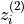
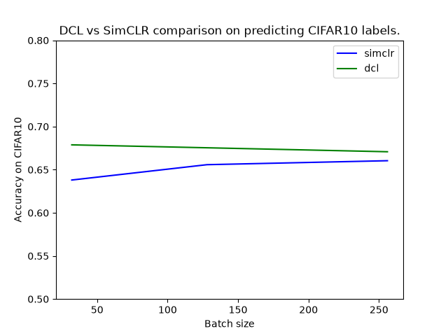

Note
Go to the end to download the full example code.
Decoupled Contrastive Learning¶
This tutorial illustrates the use of Decoupled Contrastive Learning (DCL) [1] which introduces a reformulation of the InfoNCE loss used in SimCLR [2] that removes the negative-positive coupling in the loss. This modification stabilizes optimization and improves performance, especially when training with small batch sizes.
In this tutorial, we will use the CIFAR10 dataset to train models based on DCL and SimCLR and compare their performances for different batch sizes using the nidl library.
We will follow these steps:
Load the CIFAR10 dataset.
Define the data augmentations for self-supervised training.
Define the DCL and SimCLR models.
Train the models for different batch sizes.
Compare the obtained representations on CIFAR10 test set with linear probing.
Setup¶
This notebook requires some packages besides nidl. Let’s first start with importing our standard libraries below:
import matplotlib.pyplot as plt
import numpy as np
import torch
from lightning_fabric import seed_everything
from sklearn.linear_model import LogisticRegression
from sklearn.metrics import accuracy_score
from torch import nn
from torch.utils.data import DataLoader, Subset
from torchvision import transforms
from torchvision.datasets import CIFAR10
from torchvision.models import resnet18
from nidl.estimators.ssl import DCL, SimCLR
from nidl.transforms.transforms import MultiViewsTransform
from nidl.utils.weights import Weights
We define some global parameters that will be used throughout the notebook. The parameter load_trained_models allows you to directly load the weights of the trained models from HuggingFace hub instead of training them directly in the notebook which takes time and resources (~3h on a NVIDIA RTX 4500 GPU).
Path where data should be downloaded
data_dir = "/tmp/cifar10"
# Whether to load the pretrained models or train them on your device
load_pretrained = True
# If loading model, directory where to save the weights
model_dir = "/tmp/nidl_example_dcl_vs_simclr"
# What accelerator to use: GPU if available, else CPU
accelerator = "gpu" if torch.cuda.is_available() else "cpu"
# Latent size of the representation
# /!\ If changing latent_size then you cannot load pretrained weights
latent_size = 128
# Number of workers (cpu cores) to use in dataloaders
num_workers = 4
# We fix the seed and generator for reproducibility
seed = 42
rd_generator = np.random.default_rng(seed=seed)
seed = seed_everything(seed)
Check parameters values
if latent_size != 128 and load_pretrained == True:
raise ValueError(
"Pretrained models have a latent size of 128 which can"
" not be modified. Set load_pretrained=True or"
" latent_size=128"
)
DCL Loss Function¶
The DCL loss function is based on InfoNCE and is defined as:
![\mathcal{L}_i^{(k)}
= - \big(\operatorname{sim}(z_i^{(1)}, z_i^{(2)})/\tau\big)
+ \log
\sum\limits_{l \in \{1,2\}, j \in \![1,N\!]}
\mathbf{1}_{[j \ne i]},
\exp\!\big(\operatorname{sim}(z_i^{(k)}, z_j^{(l)})/\tau\big)](../_images/math/b3ee4cfb31b08d23eb79b52e97c0f07fda0d7870.png)
Where:
-  and
and

are embeddings of two different augmented views of the same image - is the cosine similarity
between normalized embeddings
-
is the cosine similarity
between normalized embeddings
-  is a temperature parameter controlling the concentration of
the distribution
-
is a temperature parameter controlling the concentration of
the distribution
- ![\mathbf{1}_{[j \ne i]}](../_images/math/01c2cfb0d00fb1132ac748d4d5c272ecc6462ad0.png) is an indicator function that ensures
decoupling
is an indicator function that ensures
decoupling
The key idea in DCL is to remove the contribution of the positive pair from the log-sum-exp normalization term of the InfoNCE loss. In standard InfoNCE, this term creates an implicit coupling between positive and negative similarities, which can bias gradient estimates when the batch size is small. By decoupling these terms, DCL reduces this bias and leads to more stable contrastive learning.
#
# Data Preparation
# -----------------
#
# We'll use the CIFAR10 dataset, which contains 50,000 training images and
# 10,000 test images of 10 different classes. We'll apply standard scaling
# transforms, the test dataset will be used to evaluate the model performance
# on the classification task. We subsample the dataset for faster inference.
#
# Load CIFAR10 dataset with standard scaling
#
# We subsample the test dataset to run the notebook faster.
scale_transforms = transforms.Compose(
[transforms.ToTensor(), transforms.Normalize((0.5,), (0.5,))]
)
train_xy_dataset = CIFAR10(
data_dir, train=True, transform=scale_transforms, download=True
)
train_indices = rd_generator.choice(
np.arange(len(train_xy_dataset)), size=10000, replace=False
)
train_xy_dataset = Subset(train_xy_dataset, train_indices)
test_xy_dataset = CIFAR10(
data_dir, train=False, transform=scale_transforms, download=True
)
test_indices = rd_generator.choice(
np.arange(len(test_xy_dataset)), size=5000, replace=False
)
test_xy_dataset = Subset(test_xy_dataset, test_indices)
0%| | 0.00/170M [00:00<?, ?B/s]
0%| | 32.8k/170M [00:00<29:24, 96.6kB/s]
0%| | 65.5k/170M [00:00<29:44, 95.5kB/s]
0%| | 98.3k/170M [00:01<29:41, 95.7kB/s]
0%| | 131k/170M [00:01<29:44, 95.5kB/s]
0%| | 164k/170M [00:01<29:41, 95.6kB/s]
0%| | 197k/170M [00:02<29:41, 95.6kB/s]
0%| | 229k/170M [00:02<29:43, 95.5kB/s]
0%| | 262k/170M [00:02<29:41, 95.6kB/s]
0%| | 295k/170M [00:03<29:35, 95.9kB/s]
0%| | 328k/170M [00:03<29:37, 95.7kB/s]
0%| | 360k/170M [00:03<31:50, 89.1kB/s]
0%| | 393k/170M [00:04<31:07, 91.1kB/s]
0%| | 426k/170M [00:04<31:02, 91.3kB/s]
0%| | 459k/170M [00:04<30:11, 93.9kB/s]
0%| | 492k/170M [00:05<31:01, 91.3kB/s]
0%| | 524k/170M [00:05<29:29, 96.1kB/s]
0%| | 557k/170M [00:06<33:31, 84.5kB/s]
0%| | 590k/170M [00:06<35:24, 80.0kB/s]
0%| | 623k/170M [00:06<31:30, 89.9kB/s]
0%| | 655k/170M [00:06<26:39, 106kB/s]
0%| | 688k/170M [00:07<29:50, 94.8kB/s]
0%| | 721k/170M [00:07<29:02, 97.4kB/s]
0%| | 754k/170M [00:08<28:27, 99.4kB/s]
0%| | 786k/170M [00:08<28:43, 98.4kB/s]
0%| | 819k/170M [00:08<30:59, 91.3kB/s]
0%| | 852k/170M [00:09<28:47, 98.2kB/s]
1%| | 885k/170M [00:09<28:51, 98.0kB/s]
1%| | 918k/170M [00:09<28:31, 99.1kB/s]
1%| | 950k/170M [00:10<29:03, 97.2kB/s]
1%| | 983k/170M [00:10<28:57, 97.6kB/s]
1%| | 1.02M/170M [00:10<28:27, 99.3kB/s]
1%| | 1.05M/170M [00:11<30:45, 91.8kB/s]
1%| | 1.08M/170M [00:11<32:20, 87.3kB/s]
1%| | 1.11M/170M [00:11<29:32, 95.5kB/s]
1%| | 1.15M/170M [00:12<29:00, 97.3kB/s]
1%| | 1.18M/170M [00:12<28:58, 97.4kB/s]
1%| | 1.21M/170M [00:12<28:59, 97.3kB/s]
1%| | 1.25M/170M [00:13<28:56, 97.5kB/s]
1%| | 1.28M/170M [00:13<28:53, 97.6kB/s]
1%| | 1.31M/170M [00:13<28:48, 97.9kB/s]
1%| | 1.34M/170M [00:14<28:50, 97.7kB/s]
1%| | 1.38M/170M [00:14<30:52, 91.3kB/s]
1%| | 1.41M/170M [00:14<30:06, 93.6kB/s]
1%| | 1.44M/170M [00:15<29:34, 95.3kB/s]
1%| | 1.47M/170M [00:15<29:09, 96.6kB/s]
1%| | 1.51M/170M [00:15<28:57, 97.3kB/s]
1%| | 1.54M/170M [00:16<28:45, 97.9kB/s]
1%| | 1.57M/170M [00:16<28:34, 98.5kB/s]
1%| | 1.61M/170M [00:16<30:41, 91.7kB/s]
1%| | 1.64M/170M [00:17<27:44, 101kB/s]
1%| | 1.67M/170M [00:17<28:48, 97.7kB/s]
1%| | 1.70M/170M [00:17<28:05, 100kB/s]
1%| | 1.74M/170M [00:18<29:49, 94.3kB/s]
1%| | 1.77M/170M [00:18<29:17, 96.0kB/s]
1%| | 1.80M/170M [00:18<28:52, 97.3kB/s]
1%| | 1.84M/170M [00:19<29:09, 96.4kB/s]
1%| | 1.87M/170M [00:19<28:22, 99.1kB/s]
1%| | 1.90M/170M [00:19<28:24, 98.9kB/s]
1%| | 1.93M/170M [00:20<28:16, 99.3kB/s]
1%| | 1.97M/170M [00:20<28:15, 99.4kB/s]
1%| | 2.00M/170M [00:20<28:19, 99.1kB/s]
1%| | 2.03M/170M [00:21<28:15, 99.3kB/s]
1%| | 2.06M/170M [00:21<30:21, 92.5kB/s]
1%| | 2.10M/170M [00:21<29:44, 94.4kB/s]
1%| | 2.13M/170M [00:22<32:28, 86.4kB/s]
1%|▏ | 2.16M/170M [00:22<28:24, 98.8kB/s]
1%|▏ | 2.20M/170M [00:22<28:19, 99.0kB/s]
1%|▏ | 2.23M/170M [00:23<27:50, 101kB/s]
1%|▏ | 2.26M/170M [00:23<28:24, 98.7kB/s]
1%|▏ | 2.29M/170M [00:23<27:55, 100kB/s]
1%|▏ | 2.33M/170M [00:24<27:58, 100kB/s]
1%|▏ | 2.36M/170M [00:24<28:03, 99.8kB/s]
1%|▏ | 2.39M/170M [00:25<30:17, 92.5kB/s]
1%|▏ | 2.42M/170M [00:25<29:40, 94.4kB/s]
1%|▏ | 2.46M/170M [00:25<31:45, 88.2kB/s]
1%|▏ | 2.49M/170M [00:26<28:30, 98.2kB/s]
1%|▏ | 2.52M/170M [00:26<27:54, 100kB/s]
1%|▏ | 2.56M/170M [00:26<28:00, 100kB/s]
2%|▏ | 2.59M/170M [00:26<28:07, 99.5kB/s]
2%|▏ | 2.62M/170M [00:27<28:05, 99.6kB/s]
2%|▏ | 2.65M/170M [00:27<28:11, 99.2kB/s]
2%|▏ | 2.69M/170M [00:27<28:09, 99.3kB/s]
2%|▏ | 2.72M/170M [00:28<28:04, 99.6kB/s]
2%|▏ | 2.75M/170M [00:28<30:12, 92.5kB/s]
2%|▏ | 2.79M/170M [00:29<29:31, 94.7kB/s]
2%|▏ | 2.82M/170M [00:29<29:34, 94.5kB/s]
2%|▏ | 2.85M/170M [00:29<29:05, 96.0kB/s]
2%|▏ | 2.88M/170M [00:30<28:18, 98.7kB/s]
2%|▏ | 2.92M/170M [00:30<28:36, 97.6kB/s]
2%|▏ | 2.95M/170M [00:30<27:59, 99.8kB/s]
2%|▏ | 2.98M/170M [00:31<28:24, 98.3kB/s]
2%|▏ | 3.01M/170M [00:31<27:55, 100kB/s]
2%|▏ | 3.05M/170M [00:31<27:55, 99.9kB/s]
2%|▏ | 3.08M/170M [00:32<30:06, 92.7kB/s]
2%|▏ | 3.11M/170M [00:32<32:32, 85.7kB/s]
2%|▏ | 3.15M/170M [00:32<28:39, 97.3kB/s]
2%|▏ | 3.18M/170M [00:33<28:02, 99.4kB/s]
2%|▏ | 3.21M/170M [00:33<28:05, 99.3kB/s]
2%|▏ | 3.24M/170M [00:33<28:06, 99.1kB/s]
2%|▏ | 3.28M/170M [00:34<28:12, 98.8kB/s]
2%|▏ | 3.31M/170M [00:34<28:13, 98.7kB/s]
2%|▏ | 3.34M/170M [00:34<28:17, 98.4kB/s]
2%|▏ | 3.38M/170M [00:35<28:17, 98.5kB/s]
2%|▏ | 3.41M/170M [00:35<28:20, 98.2kB/s]
2%|▏ | 3.44M/170M [00:35<30:27, 91.4kB/s]
2%|▏ | 3.47M/170M [00:36<29:49, 93.3kB/s]
2%|▏ | 3.51M/170M [00:36<29:26, 94.6kB/s]
2%|▏ | 3.54M/170M [00:36<29:14, 95.2kB/s]
2%|▏ | 3.57M/170M [00:37<29:28, 94.4kB/s]
2%|▏ | 3.60M/170M [00:37<28:51, 96.4kB/s]
2%|▏ | 3.64M/170M [00:37<28:47, 96.6kB/s]
2%|▏ | 3.67M/170M [00:38<28:46, 96.6kB/s]
2%|▏ | 3.70M/170M [00:38<28:43, 96.8kB/s]
2%|▏ | 3.74M/170M [00:38<28:47, 96.5kB/s]
2%|▏ | 3.77M/170M [00:39<30:55, 89.8kB/s]
2%|▏ | 3.80M/170M [00:39<30:22, 91.5kB/s]
2%|▏ | 3.83M/170M [00:39<29:53, 92.9kB/s]
2%|▏ | 3.87M/170M [00:40<29:39, 93.6kB/s]
2%|▏ | 3.90M/170M [00:40<30:29, 91.1kB/s]
2%|▏ | 3.93M/170M [00:41<28:58, 95.8kB/s]
2%|▏ | 3.96M/170M [00:41<28:57, 95.8kB/s]
2%|▏ | 4.00M/170M [00:41<28:57, 95.8kB/s]
2%|▏ | 4.03M/170M [00:42<28:55, 95.9kB/s]
2%|▏ | 4.06M/170M [00:42<28:55, 95.9kB/s]
2%|▏ | 4.10M/170M [00:42<28:55, 95.9kB/s]
2%|▏ | 4.13M/170M [00:43<31:06, 89.1kB/s]
2%|▏ | 4.16M/170M [00:43<30:30, 90.9kB/s]
2%|▏ | 4.19M/170M [00:43<30:04, 92.2kB/s]
2%|▏ | 4.23M/170M [00:44<29:38, 93.5kB/s]
2%|▏ | 4.26M/170M [00:44<29:24, 94.2kB/s]
3%|▎ | 4.29M/170M [00:44<29:15, 94.7kB/s]
3%|▎ | 4.33M/170M [00:45<31:53, 86.8kB/s]
3%|▎ | 4.36M/170M [00:45<28:13, 98.1kB/s]
3%|▎ | 4.39M/170M [00:45<28:26, 97.3kB/s]
3%|▎ | 4.42M/170M [00:46<28:27, 97.3kB/s]
3%|▎ | 4.46M/170M [00:46<30:35, 90.4kB/s]
3%|▎ | 4.49M/170M [00:46<30:01, 92.1kB/s]
3%|▎ | 4.52M/170M [00:47<29:33, 93.6kB/s]
3%|▎ | 4.55M/170M [00:47<29:09, 94.9kB/s]
3%|▎ | 4.59M/170M [00:47<29:00, 95.3kB/s]
3%|▎ | 4.62M/170M [00:48<28:46, 96.1kB/s]
3%|▎ | 4.65M/170M [00:48<28:40, 96.4kB/s]
3%|▎ | 4.69M/170M [00:49<28:35, 96.6kB/s]
3%|▎ | 4.72M/170M [00:49<28:30, 96.9kB/s]
3%|▎ | 4.75M/170M [00:49<28:28, 97.0kB/s]
3%|▎ | 4.78M/170M [00:50<30:34, 90.4kB/s]
3%|▎ | 4.82M/170M [00:50<29:54, 92.3kB/s]
3%|▎ | 4.85M/170M [00:50<29:26, 93.8kB/s]
3%|▎ | 4.88M/170M [00:51<29:10, 94.6kB/s]
3%|▎ | 4.92M/170M [00:51<28:51, 95.6kB/s]
3%|▎ | 4.95M/170M [00:51<28:38, 96.4kB/s]
3%|▎ | 4.98M/170M [00:52<28:29, 96.8kB/s]
3%|▎ | 5.01M/170M [00:52<28:21, 97.3kB/s]
3%|▎ | 5.05M/170M [00:52<28:21, 97.3kB/s]
3%|▎ | 5.08M/170M [00:53<28:17, 97.4kB/s]
3%|▎ | 5.11M/170M [00:53<28:17, 97.4kB/s]
3%|▎ | 5.14M/170M [00:53<30:19, 90.9kB/s]
3%|▎ | 5.18M/170M [00:54<29:37, 93.0kB/s]
3%|▎ | 5.21M/170M [00:54<29:12, 94.3kB/s]
3%|▎ | 5.24M/170M [00:54<28:57, 95.1kB/s]
3%|▎ | 5.28M/170M [00:55<28:43, 95.9kB/s]
3%|▎ | 5.31M/170M [00:55<28:30, 96.5kB/s]
3%|▎ | 5.34M/170M [00:55<28:19, 97.2kB/s]
3%|▎ | 5.37M/170M [00:56<28:10, 97.7kB/s]
3%|▎ | 5.41M/170M [00:56<28:07, 97.9kB/s]
3%|▎ | 5.44M/170M [00:56<28:01, 98.2kB/s]
3%|▎ | 5.47M/170M [00:57<30:00, 91.7kB/s]
3%|▎ | 5.51M/170M [00:57<29:16, 93.9kB/s]
3%|▎ | 5.54M/170M [00:57<28:42, 95.8kB/s]
3%|▎ | 5.57M/170M [00:58<28:25, 96.7kB/s]
3%|▎ | 5.60M/170M [00:58<28:12, 97.4kB/s]
3%|▎ | 5.64M/170M [00:58<28:05, 97.8kB/s]
3%|▎ | 5.67M/170M [00:59<27:55, 98.4kB/s]
3%|▎ | 5.70M/170M [00:59<27:55, 98.3kB/s]
3%|▎ | 5.73M/170M [00:59<27:50, 98.6kB/s]
3%|▎ | 5.77M/170M [01:00<27:49, 98.7kB/s]
3%|▎ | 5.80M/170M [01:00<27:50, 98.6kB/s]
3%|▎ | 5.83M/170M [01:01<29:53, 91.8kB/s]
3%|▎ | 5.87M/170M [01:01<29:13, 93.9kB/s]
3%|▎ | 5.90M/170M [01:01<28:48, 95.2kB/s]
3%|▎ | 5.93M/170M [01:01<28:27, 96.4kB/s]
3%|▎ | 5.96M/170M [01:02<28:10, 97.3kB/s]
4%|▎ | 6.00M/170M [01:02<28:05, 97.6kB/s]
4%|▎ | 6.03M/170M [01:02<28:02, 97.7kB/s]
4%|▎ | 6.06M/170M [01:03<27:59, 97.9kB/s]
4%|▎ | 6.09M/170M [01:03<27:51, 98.4kB/s]
4%|▎ | 6.13M/170M [01:03<27:48, 98.5kB/s]
4%|▎ | 6.16M/170M [01:04<29:47, 91.9kB/s]
4%|▎ | 6.19M/170M [01:04<29:07, 94.0kB/s]
4%|▎ | 6.23M/170M [01:05<28:43, 95.3kB/s]
4%|▎ | 6.26M/170M [01:05<28:24, 96.3kB/s]
4%|▎ | 6.29M/170M [01:05<28:07, 97.3kB/s]
4%|▎ | 6.32M/170M [01:06<27:58, 97.8kB/s]
4%|▎ | 6.36M/170M [01:06<27:52, 98.1kB/s]
4%|▎ | 6.39M/170M [01:06<27:44, 98.6kB/s]
4%|▍ | 6.42M/170M [01:07<27:40, 98.8kB/s]
4%|▍ | 6.46M/170M [01:07<27:36, 99.0kB/s]
4%|▍ | 6.49M/170M [01:07<32:08, 85.0kB/s]
4%|▍ | 6.52M/170M [01:08<28:44, 95.1kB/s]
4%|▍ | 6.55M/170M [01:08<27:56, 97.8kB/s]
4%|▍ | 6.59M/170M [01:08<27:50, 98.1kB/s]
4%|▍ | 6.62M/170M [01:09<27:41, 98.6kB/s]
4%|▍ | 6.65M/170M [01:09<27:39, 98.7kB/s]
4%|▍ | 6.68M/170M [01:09<27:37, 98.8kB/s]
4%|▍ | 6.72M/170M [01:10<27:39, 98.7kB/s]
4%|▍ | 6.75M/170M [01:10<27:40, 98.6kB/s]
4%|▍ | 6.78M/170M [01:10<27:48, 98.1kB/s]
4%|▍ | 6.82M/170M [01:11<27:56, 97.6kB/s]
4%|▍ | 6.85M/170M [01:11<30:35, 89.2kB/s]
4%|▍ | 6.88M/170M [01:11<29:32, 92.3kB/s]
4%|▍ | 6.91M/170M [01:12<29:06, 93.6kB/s]
4%|▍ | 6.95M/170M [01:12<28:55, 94.2kB/s]
4%|▍ | 6.98M/170M [01:12<28:45, 94.8kB/s]
4%|▍ | 7.01M/170M [01:13<28:38, 95.1kB/s]
4%|▍ | 7.05M/170M [01:13<28:33, 95.4kB/s]
4%|▍ | 7.08M/170M [01:13<28:28, 95.6kB/s]
4%|▍ | 7.11M/170M [01:14<28:28, 95.6kB/s]
4%|▍ | 7.14M/170M [01:14<28:24, 95.8kB/s]
4%|▍ | 7.18M/170M [01:15<30:28, 89.3kB/s]
4%|▍ | 7.21M/170M [01:15<29:48, 91.3kB/s]
4%|▍ | 7.24M/170M [01:15<29:20, 92.7kB/s]
4%|▍ | 7.27M/170M [01:16<28:54, 94.1kB/s]
4%|▍ | 7.31M/170M [01:16<28:39, 94.9kB/s]
4%|▍ | 7.34M/170M [01:16<28:26, 95.6kB/s]
4%|▍ | 7.37M/170M [01:17<28:20, 95.9kB/s]
4%|▍ | 7.41M/170M [01:17<28:15, 96.2kB/s]
4%|▍ | 7.44M/170M [01:17<28:11, 96.4kB/s]
4%|▍ | 7.47M/170M [01:18<28:11, 96.4kB/s]
4%|▍ | 7.50M/170M [01:18<28:13, 96.2kB/s]
4%|▍ | 7.54M/170M [01:18<30:16, 89.7kB/s]
4%|▍ | 7.57M/170M [01:19<29:42, 91.4kB/s]
4%|▍ | 7.60M/170M [01:19<29:13, 92.9kB/s]
4%|▍ | 7.63M/170M [01:19<28:57, 93.7kB/s]
4%|▍ | 7.67M/170M [01:20<28:42, 94.5kB/s]
5%|▍ | 7.70M/170M [01:20<28:36, 94.8kB/s]
5%|▍ | 7.73M/170M [01:20<28:38, 94.7kB/s]
5%|▍ | 7.77M/170M [01:21<28:46, 94.3kB/s]
5%|▍ | 7.80M/170M [01:21<28:53, 93.8kB/s]
5%|▍ | 7.83M/170M [01:21<28:52, 93.9kB/s]
5%|▍ | 7.86M/170M [01:22<31:08, 87.0kB/s]
5%|▍ | 7.90M/170M [01:22<30:32, 88.7kB/s]
5%|▍ | 7.93M/170M [01:23<30:02, 90.2kB/s]
5%|▍ | 7.96M/170M [01:23<29:47, 90.9kB/s]
5%|▍ | 8.00M/170M [01:23<29:32, 91.7kB/s]
5%|▍ | 8.03M/170M [01:24<29:26, 92.0kB/s]
5%|▍ | 8.06M/170M [01:24<29:25, 92.0kB/s]
5%|▍ | 8.09M/170M [01:24<29:21, 92.2kB/s]
5%|▍ | 8.13M/170M [01:25<29:21, 92.2kB/s]
5%|▍ | 8.16M/170M [01:25<29:20, 92.2kB/s]
5%|▍ | 8.19M/170M [01:25<30:58, 87.4kB/s]
5%|▍ | 8.22M/170M [01:26<31:31, 85.8kB/s]
5%|▍ | 8.26M/170M [01:26<30:29, 88.7kB/s]
5%|▍ | 8.29M/170M [01:27<30:06, 89.8kB/s]
5%|▍ | 8.32M/170M [01:27<29:52, 90.5kB/s]
5%|▍ | 8.36M/170M [01:27<29:41, 91.0kB/s]
5%|▍ | 8.39M/170M [01:28<29:36, 91.2kB/s]
5%|▍ | 8.42M/170M [01:28<29:36, 91.2kB/s]
5%|▍ | 8.45M/170M [01:28<29:30, 91.5kB/s]
5%|▍ | 8.49M/170M [01:29<29:25, 91.8kB/s]
5%|▍ | 8.52M/170M [01:29<29:23, 91.9kB/s]
5%|▌ | 8.55M/170M [01:30<31:30, 85.7kB/s]
5%|▌ | 8.59M/170M [01:30<30:57, 87.1kB/s]
5%|▌ | 8.62M/170M [01:30<30:31, 88.4kB/s]
5%|▌ | 8.65M/170M [01:31<30:08, 89.5kB/s]
5%|▌ | 8.68M/170M [01:31<29:50, 90.4kB/s]
5%|▌ | 8.72M/170M [01:31<29:46, 90.6kB/s]
5%|▌ | 8.75M/170M [01:32<29:36, 91.0kB/s]
5%|▌ | 8.78M/170M [01:32<29:31, 91.3kB/s]
5%|▌ | 8.81M/170M [01:32<29:25, 91.6kB/s]
5%|▌ | 8.85M/170M [01:33<29:21, 91.8kB/s]
5%|▌ | 8.88M/170M [01:33<31:23, 85.8kB/s]
5%|▌ | 8.91M/170M [01:34<30:36, 88.0kB/s]
5%|▌ | 8.95M/170M [01:34<30:09, 89.3kB/s]
5%|▌ | 8.98M/170M [01:34<29:48, 90.3kB/s]
5%|▌ | 9.01M/170M [01:35<29:35, 90.9kB/s]
5%|▌ | 9.04M/170M [01:35<29:29, 91.2kB/s]
5%|▌ | 9.08M/170M [01:35<29:25, 91.4kB/s]
5%|▌ | 9.11M/170M [01:36<29:12, 92.1kB/s]
5%|▌ | 9.14M/170M [01:36<29:09, 92.2kB/s]
5%|▌ | 9.18M/170M [01:36<29:14, 91.9kB/s]
5%|▌ | 9.21M/170M [01:37<29:19, 91.7kB/s]
5%|▌ | 9.24M/170M [01:37<31:40, 84.8kB/s]
5%|▌ | 9.27M/170M [01:38<31:05, 86.4kB/s]
5%|▌ | 9.31M/170M [01:38<30:42, 87.5kB/s]
5%|▌ | 9.34M/170M [01:38<30:26, 88.2kB/s]
5%|▌ | 9.37M/170M [01:39<30:18, 88.6kB/s]
6%|▌ | 9.40M/170M [01:39<30:19, 88.6kB/s]
6%|▌ | 9.44M/170M [01:39<30:16, 88.7kB/s]
6%|▌ | 9.47M/170M [01:40<30:21, 88.4kB/s]
6%|▌ | 9.50M/170M [01:40<30:17, 88.6kB/s]
6%|▌ | 9.54M/170M [01:40<30:24, 88.2kB/s]
6%|▌ | 9.57M/170M [01:41<32:40, 82.1kB/s]
6%|▌ | 9.60M/170M [01:41<31:56, 83.9kB/s]
6%|▌ | 9.63M/170M [01:42<31:25, 85.3kB/s]
6%|▌ | 9.67M/170M [01:42<31:12, 85.9kB/s]
6%|▌ | 9.70M/170M [01:42<30:59, 86.5kB/s]
6%|▌ | 9.73M/170M [01:43<30:50, 86.9kB/s]
6%|▌ | 9.76M/170M [01:43<30:42, 87.3kB/s]
6%|▌ | 9.80M/170M [01:44<30:42, 87.2kB/s]
6%|▌ | 9.83M/170M [01:44<30:39, 87.4kB/s]
6%|▌ | 9.86M/170M [01:44<30:37, 87.4kB/s]
6%|▌ | 9.90M/170M [01:45<30:37, 87.4kB/s]
6%|▌ | 9.93M/170M [01:45<32:57, 81.2kB/s]
6%|▌ | 9.96M/170M [01:46<32:22, 82.7kB/s]
6%|▌ | 9.99M/170M [01:46<31:56, 83.7kB/s]
6%|▌ | 10.0M/170M [01:46<31:37, 84.6kB/s]
6%|▌ | 10.1M/170M [01:47<31:23, 85.2kB/s]
6%|▌ | 10.1M/170M [01:47<31:12, 85.7kB/s]
6%|▌ | 10.1M/170M [01:47<31:11, 85.7kB/s]
6%|▌ | 10.2M/170M [01:48<31:06, 85.9kB/s]
6%|▌ | 10.2M/170M [01:48<31:03, 86.0kB/s]
6%|▌ | 10.2M/170M [01:49<31:05, 85.9kB/s]
6%|▌ | 10.3M/170M [01:49<33:30, 79.7kB/s]
6%|▌ | 10.3M/170M [01:49<32:53, 81.2kB/s]
6%|▌ | 10.3M/170M [01:50<32:28, 82.2kB/s]
6%|▌ | 10.4M/170M [01:50<32:09, 83.0kB/s]
6%|▌ | 10.4M/170M [01:51<31:59, 83.4kB/s]
6%|▌ | 10.4M/170M [01:51<31:58, 83.4kB/s]
6%|▌ | 10.5M/170M [01:51<31:50, 83.8kB/s]
6%|▌ | 10.5M/170M [01:52<31:46, 83.9kB/s]
6%|▌ | 10.5M/170M [01:52<31:43, 84.1kB/s]
6%|▌ | 10.6M/170M [01:53<31:44, 84.0kB/s]
6%|▌ | 10.6M/170M [01:53<34:14, 77.8kB/s]
6%|▌ | 10.6M/170M [01:53<33:35, 79.3kB/s]
6%|▌ | 10.6M/170M [01:54<33:10, 80.3kB/s]
6%|▋ | 10.7M/170M [01:54<32:52, 81.0kB/s]
6%|▋ | 10.7M/170M [01:55<32:42, 81.4kB/s]
6%|▋ | 10.7M/170M [01:55<32:34, 81.7kB/s]
6%|▋ | 10.8M/170M [01:55<32:28, 82.0kB/s]
6%|▋ | 10.8M/170M [01:56<32:26, 82.0kB/s]
6%|▋ | 10.8M/170M [01:56<32:23, 82.1kB/s]
6%|▋ | 10.9M/170M [01:57<32:24, 82.1kB/s]
6%|▋ | 10.9M/170M [01:57<32:27, 81.9kB/s]
6%|▋ | 10.9M/170M [01:58<34:56, 76.1kB/s]
6%|▋ | 11.0M/170M [01:58<34:14, 77.6kB/s]
6%|▋ | 11.0M/170M [01:58<33:38, 79.0kB/s]
6%|▋ | 11.0M/170M [01:59<33:15, 79.9kB/s]
6%|▋ | 11.1M/170M [01:59<32:57, 80.6kB/s]
7%|▋ | 11.1M/170M [02:00<32:47, 81.0kB/s]
7%|▋ | 11.1M/170M [02:00<32:40, 81.3kB/s]
7%|▋ | 11.2M/170M [02:00<32:32, 81.6kB/s]
7%|▋ | 11.2M/170M [02:01<32:25, 81.9kB/s]
7%|▋ | 11.2M/170M [02:01<32:23, 81.9kB/s]
7%|▋ | 11.3M/170M [02:02<34:43, 76.4kB/s]
7%|▋ | 11.3M/170M [02:02<33:59, 78.1kB/s]
7%|▋ | 11.3M/170M [02:02<33:21, 79.5kB/s]
7%|▋ | 11.4M/170M [02:03<33:04, 80.2kB/s]
7%|▋ | 11.4M/170M [02:03<32:49, 80.8kB/s]
7%|▋ | 11.4M/170M [02:04<32:37, 81.2kB/s]
7%|▋ | 11.5M/170M [02:04<32:29, 81.6kB/s]
7%|▋ | 11.5M/170M [02:04<32:26, 81.7kB/s]
7%|▋ | 11.5M/170M [02:05<32:24, 81.8kB/s]
7%|▋ | 11.6M/170M [02:05<32:27, 81.6kB/s]
7%|▋ | 11.6M/170M [02:06<32:29, 81.5kB/s]
7%|▋ | 11.6M/170M [02:06<34:53, 75.9kB/s]
7%|▋ | 11.7M/170M [02:07<34:10, 77.5kB/s]
7%|▋ | 11.7M/170M [02:07<33:36, 78.8kB/s]
7%|▋ | 11.7M/170M [02:07<33:11, 79.7kB/s]
7%|▋ | 11.8M/170M [02:08<32:52, 80.5kB/s]
7%|▋ | 11.8M/170M [02:08<32:40, 81.0kB/s]
7%|▋ | 11.8M/170M [02:08<32:29, 81.4kB/s]
7%|▋ | 11.9M/170M [02:09<32:21, 81.7kB/s]
7%|▋ | 11.9M/170M [02:09<32:18, 81.8kB/s]
7%|▋ | 11.9M/170M [02:10<32:21, 81.7kB/s]
7%|▋ | 12.0M/170M [02:10<34:50, 75.8kB/s]
7%|▋ | 12.0M/170M [02:11<34:05, 77.5kB/s]
7%|▋ | 12.0M/170M [02:11<33:35, 78.6kB/s]
7%|▋ | 12.1M/170M [02:11<33:10, 79.6kB/s]
7%|▋ | 12.1M/170M [02:12<32:50, 80.4kB/s]
7%|▋ | 12.1M/170M [02:12<32:43, 80.6kB/s]
7%|▋ | 12.2M/170M [02:13<32:32, 81.1kB/s]
7%|▋ | 12.2M/170M [02:13<32:29, 81.2kB/s]
7%|▋ | 12.2M/170M [02:13<32:19, 81.6kB/s]
7%|▋ | 12.3M/170M [02:14<32:18, 81.6kB/s]
7%|▋ | 12.3M/170M [02:14<32:16, 81.7kB/s]
7%|▋ | 12.3M/170M [02:15<34:37, 76.1kB/s]
7%|▋ | 12.4M/170M [02:15<33:49, 77.9kB/s]
7%|▋ | 12.4M/170M [02:15<33:12, 79.4kB/s]
7%|▋ | 12.4M/170M [02:16<32:50, 80.2kB/s]
7%|▋ | 12.5M/170M [02:16<32:34, 80.9kB/s]
7%|▋ | 12.5M/170M [02:17<32:15, 81.6kB/s]
7%|▋ | 12.5M/170M [02:17<32:07, 82.0kB/s]
7%|▋ | 12.6M/170M [02:17<32:00, 82.2kB/s]
7%|▋ | 12.6M/170M [02:18<31:53, 82.5kB/s]
7%|▋ | 12.6M/170M [02:18<31:51, 82.6kB/s]
7%|▋ | 12.6M/170M [02:19<34:13, 76.9kB/s]
7%|▋ | 12.7M/170M [02:19<33:33, 78.4kB/s]
7%|▋ | 12.7M/170M [02:20<33:05, 79.5kB/s]
7%|▋ | 12.7M/170M [02:20<32:42, 80.4kB/s]
7%|▋ | 12.8M/170M [02:20<32:33, 80.8kB/s]
8%|▊ | 12.8M/170M [02:21<32:15, 81.5kB/s]
8%|▊ | 12.8M/170M [02:21<32:03, 82.0kB/s]
8%|▊ | 12.9M/170M [02:22<31:56, 82.3kB/s]
8%|▊ | 12.9M/170M [02:22<31:52, 82.4kB/s]
8%|▊ | 12.9M/170M [02:22<31:49, 82.5kB/s]
8%|▊ | 13.0M/170M [02:23<34:10, 76.8kB/s]
8%|▊ | 13.0M/170M [02:23<33:25, 78.5kB/s]
8%|▊ | 13.0M/170M [02:24<32:55, 79.7kB/s]
8%|▊ | 13.1M/170M [02:24<32:29, 80.8kB/s]
8%|▊ | 13.1M/170M [02:24<32:14, 81.4kB/s]
8%|▊ | 13.1M/170M [02:25<32:04, 81.8kB/s]
8%|▊ | 13.2M/170M [02:25<31:55, 82.2kB/s]
8%|▊ | 13.2M/170M [02:26<31:50, 82.3kB/s]
8%|▊ | 13.2M/170M [02:26<31:45, 82.5kB/s]
8%|▊ | 13.3M/170M [02:26<31:44, 82.6kB/s]
8%|▊ | 13.3M/170M [02:27<31:39, 82.8kB/s]
8%|▊ | 13.3M/170M [02:27<33:51, 77.4kB/s]
8%|▊ | 13.4M/170M [02:28<33:09, 79.0kB/s]
8%|▊ | 13.4M/170M [02:28<32:42, 80.1kB/s]
8%|▊ | 13.4M/170M [02:28<32:18, 81.0kB/s]
8%|▊ | 13.5M/170M [02:29<32:04, 81.6kB/s]
8%|▊ | 13.5M/170M [02:29<31:55, 82.0kB/s]
8%|▊ | 13.5M/170M [02:30<31:49, 82.2kB/s]
8%|▊ | 13.6M/170M [02:30<31:49, 82.2kB/s]
8%|▊ | 13.6M/170M [02:30<31:47, 82.2kB/s]
8%|▊ | 13.6M/170M [02:31<31:43, 82.4kB/s]
8%|▊ | 13.7M/170M [02:31<34:04, 76.7kB/s]
8%|▊ | 13.7M/170M [02:32<33:17, 78.5kB/s]
8%|▊ | 13.7M/170M [02:32<32:46, 79.7kB/s]
8%|▊ | 13.8M/170M [02:33<32:22, 80.7kB/s]
8%|▊ | 13.8M/170M [02:33<32:11, 81.1kB/s]
8%|▊ | 13.8M/170M [02:33<32:03, 81.5kB/s]
8%|▊ | 13.9M/170M [02:34<31:54, 81.8kB/s]
8%|▊ | 13.9M/170M [02:34<31:40, 82.4kB/s]
8%|▊ | 13.9M/170M [02:34<31:34, 82.6kB/s]
8%|▊ | 14.0M/170M [02:35<31:27, 82.9kB/s]
8%|▊ | 14.0M/170M [02:35<31:14, 83.5kB/s]
8%|▊ | 14.0M/170M [02:36<33:24, 78.0kB/s]
8%|▊ | 14.1M/170M [02:36<32:40, 79.8kB/s]
8%|▊ | 14.1M/170M [02:37<32:04, 81.3kB/s]
8%|▊ | 14.1M/170M [02:37<31:38, 82.4kB/s]
8%|▊ | 14.2M/170M [02:37<31:19, 83.2kB/s]
8%|▊ | 14.2M/170M [02:38<31:06, 83.8kB/s]
8%|▊ | 14.2M/170M [02:38<30:50, 84.4kB/s]
8%|▊ | 14.3M/170M [02:38<30:42, 84.8kB/s]
8%|▊ | 14.3M/170M [02:39<30:36, 85.1kB/s]
8%|▊ | 14.3M/170M [02:39<30:37, 85.0kB/s]
8%|▊ | 14.4M/170M [02:40<32:57, 79.0kB/s]
8%|▊ | 14.4M/170M [02:40<32:08, 80.9kB/s]
8%|▊ | 14.4M/170M [02:40<31:31, 82.5kB/s]
8%|▊ | 14.5M/170M [02:41<31:06, 83.6kB/s]
8%|▊ | 14.5M/170M [02:41<30:46, 84.5kB/s]
9%|▊ | 14.5M/170M [02:42<30:35, 85.0kB/s]
9%|▊ | 14.5M/170M [02:42<30:21, 85.6kB/s]
9%|▊ | 14.6M/170M [02:42<30:13, 86.0kB/s]
9%|▊ | 14.6M/170M [02:43<30:06, 86.3kB/s]
9%|▊ | 14.6M/170M [02:43<30:07, 86.2kB/s]
9%|▊ | 14.7M/170M [02:44<32:16, 80.4kB/s]
9%|▊ | 14.7M/170M [02:44<31:36, 82.2kB/s]
9%|▊ | 14.7M/170M [02:44<31:15, 83.1kB/s]
9%|▊ | 14.8M/170M [02:45<30:57, 83.8kB/s]
9%|▊ | 14.8M/170M [02:45<30:47, 84.3kB/s]
9%|▊ | 14.8M/170M [02:45<30:35, 84.8kB/s]
9%|▊ | 14.9M/170M [02:46<30:25, 85.3kB/s]
9%|▊ | 14.9M/170M [02:46<30:24, 85.3kB/s]
9%|▉ | 14.9M/170M [02:47<30:19, 85.5kB/s]
9%|▉ | 15.0M/170M [02:47<30:12, 85.8kB/s]
9%|▉ | 15.0M/170M [02:47<30:12, 85.8kB/s]
9%|▉ | 15.0M/170M [02:48<32:23, 80.0kB/s]
9%|▉ | 15.1M/170M [02:48<31:37, 81.9kB/s]
9%|▉ | 15.1M/170M [02:49<31:03, 83.4kB/s]
9%|▉ | 15.1M/170M [02:49<30:41, 84.4kB/s]
9%|▉ | 15.2M/170M [02:49<30:22, 85.2kB/s]
9%|▉ | 15.2M/170M [02:50<30:05, 86.0kB/s]
9%|▉ | 15.2M/170M [02:50<29:54, 86.5kB/s]
9%|▉ | 15.3M/170M [02:50<29:43, 87.0kB/s]
9%|▉ | 15.3M/170M [02:51<29:31, 87.6kB/s]
9%|▉ | 15.3M/170M [02:51<29:22, 88.0kB/s]
9%|▉ | 15.4M/170M [02:52<31:34, 81.9kB/s]
9%|▉ | 15.4M/170M [02:52<30:50, 83.8kB/s]
9%|▉ | 15.4M/170M [02:52<30:23, 85.1kB/s]
9%|▉ | 15.5M/170M [02:53<30:03, 85.9kB/s]
9%|▉ | 15.5M/170M [02:53<29:50, 86.6kB/s]
9%|▉ | 15.5M/170M [02:54<29:39, 87.1kB/s]
9%|▉ | 15.6M/170M [02:54<29:30, 87.5kB/s]
9%|▉ | 15.6M/170M [02:54<29:26, 87.7kB/s]
9%|▉ | 15.6M/170M [02:55<29:21, 87.9kB/s]
9%|▉ | 15.7M/170M [02:55<29:16, 88.2kB/s]
9%|▉ | 15.7M/170M [02:55<29:17, 88.1kB/s]
9%|▉ | 15.7M/170M [02:56<31:31, 81.8kB/s]
9%|▉ | 15.8M/170M [02:56<30:51, 83.6kB/s]
9%|▉ | 15.8M/170M [02:57<30:24, 84.8kB/s]
9%|▉ | 15.8M/170M [02:57<30:07, 85.6kB/s]
9%|▉ | 15.9M/170M [02:57<29:54, 86.2kB/s]
9%|▉ | 15.9M/170M [02:58<29:41, 86.8kB/s]
9%|▉ | 15.9M/170M [02:58<29:40, 86.8kB/s]
9%|▉ | 16.0M/170M [02:58<29:32, 87.2kB/s]
9%|▉ | 16.0M/170M [02:59<29:29, 87.3kB/s]
9%|▉ | 16.0M/170M [02:59<29:28, 87.4kB/s]
9%|▉ | 16.1M/170M [03:00<31:35, 81.5kB/s]
9%|▉ | 16.1M/170M [03:00<30:55, 83.2kB/s]
9%|▉ | 16.1M/170M [03:00<30:21, 84.7kB/s]
9%|▉ | 16.2M/170M [03:01<30:01, 85.7kB/s]
9%|▉ | 16.2M/170M [03:01<29:45, 86.4kB/s]
10%|▉ | 16.2M/170M [03:02<29:31, 87.1kB/s]
10%|▉ | 16.3M/170M [03:02<29:21, 87.6kB/s]
10%|▉ | 16.3M/170M [03:02<29:15, 87.9kB/s]
10%|▉ | 16.3M/170M [03:03<29:08, 88.2kB/s]
10%|▉ | 16.4M/170M [03:03<29:00, 88.6kB/s]
10%|▉ | 16.4M/170M [03:03<28:58, 88.7kB/s]
10%|▉ | 16.4M/170M [03:04<31:05, 82.6kB/s]
10%|▉ | 16.4M/170M [03:04<30:27, 84.3kB/s]
10%|▉ | 16.5M/170M [03:05<29:55, 85.8kB/s]
10%|▉ | 16.5M/170M [03:05<29:31, 86.9kB/s]
10%|▉ | 16.5M/170M [03:05<29:13, 87.8kB/s]
10%|▉ | 16.6M/170M [03:06<29:02, 88.4kB/s]
10%|▉ | 16.6M/170M [03:06<28:59, 88.5kB/s]
10%|▉ | 16.6M/170M [03:06<28:51, 88.8kB/s]
10%|▉ | 16.7M/170M [03:07<28:51, 88.8kB/s]
10%|▉ | 16.7M/170M [03:07<28:48, 89.0kB/s]
10%|▉ | 16.7M/170M [03:08<31:00, 82.7kB/s]
10%|▉ | 16.8M/170M [03:08<30:24, 84.3kB/s]
10%|▉ | 16.8M/170M [03:08<29:57, 85.5kB/s]
10%|▉ | 16.8M/170M [03:09<29:38, 86.4kB/s]
10%|▉ | 16.9M/170M [03:09<29:25, 87.0kB/s]
10%|▉ | 16.9M/170M [03:09<29:16, 87.4kB/s]
10%|▉ | 16.9M/170M [03:10<29:13, 87.6kB/s]
10%|▉ | 17.0M/170M [03:10<29:05, 88.0kB/s]
10%|▉ | 17.0M/170M [03:11<29:04, 88.0kB/s]
10%|▉ | 17.0M/170M [03:11<29:01, 88.1kB/s]
10%|█ | 17.1M/170M [03:11<31:06, 82.2kB/s]
10%|█ | 17.1M/170M [03:12<30:27, 83.9kB/s]
10%|█ | 17.1M/170M [03:12<29:59, 85.2kB/s]
10%|█ | 17.2M/170M [03:13<29:41, 86.1kB/s]
10%|█ | 17.2M/170M [03:13<29:30, 86.6kB/s]
10%|█ | 17.2M/170M [03:13<29:21, 87.0kB/s]
10%|█ | 17.3M/170M [03:14<29:15, 87.3kB/s]
10%|█ | 17.3M/170M [03:14<29:12, 87.4kB/s]
10%|█ | 17.3M/170M [03:14<29:08, 87.6kB/s]
10%|█ | 17.4M/170M [03:15<29:09, 87.5kB/s]
10%|█ | 17.4M/170M [03:15<29:04, 87.7kB/s]
10%|█ | 17.4M/170M [03:16<31:14, 81.7kB/s]
10%|█ | 17.5M/170M [03:16<30:35, 83.4kB/s]
10%|█ | 17.5M/170M [03:16<30:09, 84.6kB/s]
10%|█ | 17.5M/170M [03:17<29:47, 85.6kB/s]
10%|█ | 17.6M/170M [03:17<29:35, 86.1kB/s]
10%|█ | 17.6M/170M [03:17<29:22, 86.7kB/s]
10%|█ | 17.6M/170M [03:18<29:12, 87.2kB/s]
10%|█ | 17.7M/170M [03:18<28:58, 87.9kB/s]
10%|█ | 17.7M/170M [03:19<28:48, 88.4kB/s]
10%|█ | 17.7M/170M [03:19<28:44, 88.6kB/s]
10%|█ | 17.8M/170M [03:19<30:50, 82.5kB/s]
10%|█ | 17.8M/170M [03:20<30:08, 84.4kB/s]
10%|█ | 17.8M/170M [03:20<29:40, 85.7kB/s]
10%|█ | 17.9M/170M [03:21<29:21, 86.6kB/s]
10%|█ | 17.9M/170M [03:21<29:06, 87.4kB/s]
11%|█ | 17.9M/170M [03:21<28:56, 87.9kB/s]
11%|█ | 18.0M/170M [03:22<28:52, 88.0kB/s]
11%|█ | 18.0M/170M [03:22<28:44, 88.5kB/s]
11%|█ | 18.0M/170M [03:22<28:40, 88.6kB/s]
11%|█ | 18.1M/170M [03:23<28:38, 88.7kB/s]
11%|█ | 18.1M/170M [03:23<28:37, 88.7kB/s]
11%|█ | 18.1M/170M [03:24<30:44, 82.6kB/s]
11%|█ | 18.2M/170M [03:24<30:08, 84.3kB/s]
11%|█ | 18.2M/170M [03:24<29:43, 85.4kB/s]
11%|█ | 18.2M/170M [03:25<29:30, 86.0kB/s]
11%|█ | 18.3M/170M [03:25<29:24, 86.3kB/s]
11%|█ | 18.3M/170M [03:25<29:19, 86.5kB/s]
11%|█ | 18.3M/170M [03:26<29:18, 86.5kB/s]
11%|█ | 18.4M/170M [03:26<29:25, 86.2kB/s]
11%|█ | 18.4M/170M [03:27<29:22, 86.3kB/s]
11%|█ | 18.4M/170M [03:27<29:25, 86.2kB/s]
11%|█ | 18.4M/170M [03:27<31:45, 79.8kB/s]
11%|█ | 18.5M/170M [03:28<31:09, 81.3kB/s]
11%|█ | 18.5M/170M [03:28<30:45, 82.4kB/s]
11%|█ | 18.5M/170M [03:29<30:25, 83.2kB/s]
11%|█ | 18.6M/170M [03:29<30:17, 83.6kB/s]
11%|█ | 18.6M/170M [03:29<30:11, 83.8kB/s]
11%|█ | 18.6M/170M [03:30<30:06, 84.0kB/s]
11%|█ | 18.7M/170M [03:30<30:04, 84.1kB/s]
11%|█ | 18.7M/170M [03:31<30:05, 84.1kB/s]
11%|█ | 18.7M/170M [03:31<30:04, 84.1kB/s]
11%|█ | 18.8M/170M [03:31<32:22, 78.1kB/s]
11%|█ | 18.8M/170M [03:32<31:46, 79.6kB/s]
11%|█ | 18.8M/170M [03:32<31:19, 80.7kB/s]
11%|█ | 18.9M/170M [03:33<30:57, 81.6kB/s]
11%|█ | 18.9M/170M [03:33<30:37, 82.5kB/s]
11%|█ | 18.9M/170M [03:33<30:33, 82.7kB/s]
11%|█ | 19.0M/170M [03:34<30:31, 82.7kB/s]
11%|█ | 19.0M/170M [03:34<30:23, 83.1kB/s]
11%|█ | 19.0M/170M [03:35<30:23, 83.1kB/s]
11%|█ | 19.1M/170M [03:35<30:23, 83.0kB/s]
11%|█ | 19.1M/170M [03:35<30:28, 82.8kB/s]
11%|█ | 19.1M/170M [03:36<32:50, 76.8kB/s]
11%|█ | 19.2M/170M [03:36<32:10, 78.4kB/s]
11%|█▏ | 19.2M/170M [03:37<31:37, 79.7kB/s]
11%|█▏ | 19.2M/170M [03:37<31:17, 80.6kB/s]
11%|█▏ | 19.3M/170M [03:37<31:09, 80.9kB/s]
11%|█▏ | 19.3M/170M [03:38<31:03, 81.1kB/s]
11%|█▏ | 19.3M/170M [03:38<31:00, 81.2kB/s]
11%|█▏ | 19.4M/170M [03:39<31:01, 81.2kB/s]
11%|█▏ | 19.4M/170M [03:39<30:59, 81.3kB/s]
11%|█▏ | 19.4M/170M [03:39<31:01, 81.2kB/s]
11%|█▏ | 19.5M/170M [03:40<33:18, 75.6kB/s]
11%|█▏ | 19.5M/170M [03:40<32:37, 77.1kB/s]
11%|█▏ | 19.5M/170M [03:41<32:09, 78.2kB/s]
11%|█▏ | 19.6M/170M [03:41<31:49, 79.0kB/s]
11%|█▏ | 19.6M/170M [03:42<31:34, 79.6kB/s]
12%|█▏ | 19.6M/170M [03:42<31:21, 80.2kB/s]
12%|█▏ | 19.7M/170M [03:42<31:17, 80.3kB/s]
12%|█▏ | 19.7M/170M [03:43<31:16, 80.3kB/s]
12%|█▏ | 19.7M/170M [03:43<31:14, 80.5kB/s]
12%|█▏ | 19.8M/170M [03:44<31:12, 80.5kB/s]
12%|█▏ | 19.8M/170M [03:44<31:15, 80.4kB/s]
12%|█▏ | 19.8M/170M [03:45<33:30, 75.0kB/s]
12%|█▏ | 19.9M/170M [03:45<32:41, 76.8kB/s]
12%|█▏ | 19.9M/170M [03:45<32:07, 78.2kB/s]
12%|█▏ | 19.9M/170M [03:46<31:38, 79.3kB/s]
12%|█▏ | 20.0M/170M [03:46<31:11, 80.4kB/s]
12%|█▏ | 20.0M/170M [03:47<30:54, 81.2kB/s]
12%|█▏ | 20.0M/170M [03:47<30:37, 81.9kB/s]
12%|█▏ | 20.1M/170M [03:47<30:24, 82.4kB/s]
12%|█▏ | 20.1M/170M [03:48<30:21, 82.6kB/s]
12%|█▏ | 20.1M/170M [03:48<30:19, 82.7kB/s]
12%|█▏ | 20.2M/170M [03:49<32:32, 77.0kB/s]
12%|█▏ | 20.2M/170M [03:49<31:50, 78.7kB/s]
12%|█▏ | 20.2M/170M [03:49<31:41, 79.0kB/s]
12%|█▏ | 20.3M/170M [03:50<30:53, 81.1kB/s]
12%|█▏ | 20.3M/170M [03:50<33:03, 75.7kB/s]
12%|█▏ | 20.3M/170M [03:51<30:06, 83.1kB/s]
12%|█▏ | 20.3M/170M [03:51<29:37, 84.5kB/s]
12%|█▏ | 20.4M/170M [03:51<32:04, 78.0kB/s]
12%|█▏ | 20.4M/170M [03:52<29:13, 85.6kB/s]
12%|█▏ | 20.4M/170M [03:52<31:56, 78.3kB/s]
12%|█▏ | 20.5M/170M [03:52<28:32, 87.6kB/s]
12%|█▏ | 20.5M/170M [03:53<30:38, 81.6kB/s]
12%|█▏ | 20.5M/170M [03:53<31:44, 78.7kB/s]
12%|█▏ | 20.6M/170M [03:54<29:51, 83.7kB/s]
12%|█▏ | 20.6M/170M [03:54<29:15, 85.4kB/s]
12%|█▏ | 20.6M/170M [03:54<29:11, 85.6kB/s]
12%|█▏ | 20.7M/170M [03:55<32:02, 77.9kB/s]
12%|█▏ | 20.7M/170M [03:55<28:30, 87.6kB/s]
12%|█▏ | 20.7M/170M [03:56<31:08, 80.1kB/s]
12%|█▏ | 20.8M/170M [03:56<29:09, 85.6kB/s]
12%|█▏ | 20.8M/170M [03:56<28:46, 86.7kB/s]
12%|█▏ | 20.8M/170M [03:57<30:23, 82.1kB/s]
12%|█▏ | 20.9M/170M [03:57<29:47, 83.7kB/s]
12%|█▏ | 20.9M/170M [03:58<29:35, 84.3kB/s]
12%|█▏ | 20.9M/170M [03:58<31:06, 80.1kB/s]
12%|█▏ | 21.0M/170M [03:58<28:29, 87.5kB/s]
12%|█▏ | 21.0M/170M [03:59<28:23, 87.8kB/s]
12%|█▏ | 21.0M/170M [03:59<27:57, 89.1kB/s]
12%|█▏ | 21.1M/170M [04:00<28:43, 86.7kB/s]
12%|█▏ | 21.1M/170M [04:00<28:37, 87.0kB/s]
12%|█▏ | 21.1M/170M [04:00<28:42, 86.7kB/s]
12%|█▏ | 21.2M/170M [04:01<32:15, 77.1kB/s]
12%|█▏ | 21.2M/170M [04:01<32:02, 77.6kB/s]
12%|█▏ | 21.2M/170M [04:02<30:30, 81.5kB/s]
12%|█▏ | 21.3M/170M [04:02<28:58, 85.8kB/s]
12%|█▏ | 21.3M/170M [04:02<28:29, 87.3kB/s]
13%|█▎ | 21.3M/170M [04:03<30:14, 82.2kB/s]
13%|█▎ | 21.4M/170M [04:03<27:00, 92.0kB/s]
13%|█▎ | 21.4M/170M [04:03<28:58, 85.8kB/s]
13%|█▎ | 21.4M/170M [04:04<28:26, 87.4kB/s]
13%|█▎ | 21.5M/170M [04:04<28:37, 86.8kB/s]
13%|█▎ | 21.5M/170M [04:05<28:07, 88.3kB/s]
13%|█▎ | 21.5M/170M [04:05<28:32, 87.0kB/s]
13%|█▎ | 21.6M/170M [04:05<28:18, 87.7kB/s]
13%|█▎ | 21.6M/170M [04:06<29:49, 83.2kB/s]
13%|█▎ | 21.6M/170M [04:06<30:11, 82.2kB/s]
13%|█▎ | 21.7M/170M [04:07<29:20, 84.5kB/s]
13%|█▎ | 21.7M/170M [04:07<28:37, 86.6kB/s]
13%|█▎ | 21.7M/170M [04:07<28:09, 88.1kB/s]
13%|█▎ | 21.8M/170M [04:07<26:02, 95.2kB/s]
13%|█▎ | 21.8M/170M [04:08<28:27, 87.1kB/s]
13%|█▎ | 21.8M/170M [04:08<28:07, 88.1kB/s]
13%|█▎ | 21.9M/170M [04:09<28:47, 86.0kB/s]
13%|█▎ | 21.9M/170M [04:09<28:13, 87.7kB/s]
13%|█▎ | 21.9M/170M [04:09<27:46, 89.1kB/s]
13%|█▎ | 22.0M/170M [04:10<27:48, 89.0kB/s]
13%|█▎ | 22.0M/170M [04:10<26:46, 92.4kB/s]
13%|█▎ | 22.0M/170M [04:11<27:57, 88.5kB/s]
13%|█▎ | 22.1M/170M [04:11<27:53, 88.7kB/s]
13%|█▎ | 22.1M/170M [04:11<29:33, 83.7kB/s]
13%|█▎ | 22.1M/170M [04:12<26:53, 91.9kB/s]
13%|█▎ | 22.2M/170M [04:12<27:11, 90.9kB/s]
13%|█▎ | 22.2M/170M [04:12<27:56, 88.5kB/s]
13%|█▎ | 22.2M/170M [04:13<29:53, 82.7kB/s]
13%|█▎ | 22.2M/170M [04:13<28:41, 86.1kB/s]
13%|█▎ | 22.3M/170M [04:14<30:28, 81.1kB/s]
13%|█▎ | 22.3M/170M [04:14<27:32, 89.7kB/s]
13%|█▎ | 22.3M/170M [04:14<27:35, 89.5kB/s]
13%|█▎ | 22.4M/170M [04:15<28:46, 85.8kB/s]
13%|█▎ | 22.4M/170M [04:15<26:54, 91.7kB/s]
13%|█▎ | 22.4M/170M [04:15<27:28, 89.8kB/s]
13%|█▎ | 22.5M/170M [04:16<27:11, 90.7kB/s]
13%|█▎ | 22.5M/170M [04:16<28:18, 87.1kB/s]
13%|█▎ | 22.5M/170M [04:17<29:38, 83.2kB/s]
13%|█▎ | 22.6M/170M [04:17<29:06, 84.7kB/s]
13%|█▎ | 22.6M/170M [04:17<28:43, 85.8kB/s]
13%|█▎ | 22.6M/170M [04:18<28:25, 86.7kB/s]
13%|█▎ | 22.7M/170M [04:18<28:13, 87.3kB/s]
13%|█▎ | 22.7M/170M [04:19<30:20, 81.2kB/s]
13%|█▎ | 22.7M/170M [04:19<27:24, 89.9kB/s]
13%|█▎ | 22.8M/170M [04:19<27:34, 89.3kB/s]
13%|█▎ | 22.8M/170M [04:20<27:43, 88.8kB/s]
13%|█▎ | 22.8M/170M [04:20<27:28, 89.6kB/s]
13%|█▎ | 22.9M/170M [04:20<29:40, 82.9kB/s]
13%|█▎ | 22.9M/170M [04:21<29:07, 84.4kB/s]
13%|█▎ | 22.9M/170M [04:21<31:15, 78.7kB/s]
13%|█▎ | 23.0M/170M [04:21<28:01, 87.7kB/s]
13%|█▎ | 23.0M/170M [04:22<27:34, 89.1kB/s]
14%|█▎ | 23.0M/170M [04:22<27:37, 88.9kB/s]
14%|█▎ | 23.1M/170M [04:23<27:43, 88.6kB/s]
14%|█▎ | 23.1M/170M [04:23<27:47, 88.4kB/s]
14%|█▎ | 23.1M/170M [04:23<27:49, 88.3kB/s]
14%|█▎ | 23.2M/170M [04:24<27:54, 88.0kB/s]
14%|█▎ | 23.2M/170M [04:24<27:58, 87.8kB/s]
14%|█▎ | 23.2M/170M [04:25<30:06, 81.5kB/s]
14%|█▎ | 23.3M/170M [04:25<29:30, 83.2kB/s]
14%|█▎ | 23.3M/170M [04:25<29:03, 84.4kB/s]
14%|█▎ | 23.3M/170M [04:26<31:35, 77.6kB/s]
14%|█▎ | 23.4M/170M [04:26<27:59, 87.6kB/s]
14%|█▎ | 23.4M/170M [04:26<29:07, 84.2kB/s]
14%|█▎ | 23.4M/170M [04:27<27:40, 88.6kB/s]
14%|█▍ | 23.5M/170M [04:27<27:27, 89.2kB/s]
14%|█▍ | 23.5M/170M [04:28<27:41, 88.5kB/s]
14%|█▍ | 23.5M/170M [04:28<27:52, 87.9kB/s]
14%|█▍ | 23.6M/170M [04:28<30:05, 81.4kB/s]
14%|█▍ | 23.6M/170M [04:29<32:29, 75.3kB/s]
14%|█▍ | 23.6M/170M [04:29<28:45, 85.1kB/s]
14%|█▍ | 23.7M/170M [04:30<29:30, 82.9kB/s]
14%|█▍ | 23.7M/170M [04:30<30:08, 81.2kB/s]
14%|█▍ | 23.7M/170M [04:31<32:39, 74.9kB/s]
14%|█▍ | 23.8M/170M [04:31<26:45, 91.4kB/s]
14%|█▍ | 23.8M/170M [04:31<26:59, 90.6kB/s]
14%|█▍ | 23.8M/170M [04:31<27:41, 88.3kB/s]
14%|█▍ | 23.9M/170M [04:32<30:04, 81.3kB/s]
14%|█▍ | 23.9M/170M [04:32<29:39, 82.4kB/s]
14%|█▍ | 23.9M/170M [04:33<30:00, 81.4kB/s]
14%|█▍ | 24.0M/170M [04:33<30:14, 80.8kB/s]
14%|█▍ | 24.0M/170M [04:33<28:23, 86.0kB/s]
14%|█▍ | 24.0M/170M [04:34<29:30, 82.7kB/s]
14%|█▍ | 24.1M/170M [04:34<26:57, 90.5kB/s]
14%|█▍ | 24.1M/170M [04:35<28:23, 86.0kB/s]
14%|█▍ | 24.1M/170M [04:35<26:37, 91.6kB/s]
14%|█▍ | 24.2M/170M [04:35<27:15, 89.5kB/s]
14%|█▍ | 24.2M/170M [04:36<27:29, 88.7kB/s]
14%|█▍ | 24.2M/170M [04:36<30:35, 79.7kB/s]
14%|█▍ | 24.2M/170M [04:37<32:14, 75.6kB/s]
14%|█▍ | 24.3M/170M [04:37<27:07, 89.9kB/s]
14%|█▍ | 24.3M/170M [04:37<29:36, 82.3kB/s]
14%|█▍ | 24.3M/170M [04:38<27:10, 89.7kB/s]
14%|█▍ | 24.4M/170M [04:38<27:47, 87.6kB/s]
14%|█▍ | 24.4M/170M [04:38<27:46, 87.6kB/s]
14%|█▍ | 24.4M/170M [04:39<29:00, 83.9kB/s]
14%|█▍ | 24.5M/170M [04:39<28:48, 84.5kB/s]
14%|█▍ | 24.5M/170M [04:40<26:25, 92.1kB/s]
14%|█▍ | 24.5M/170M [04:40<26:46, 90.9kB/s]
14%|█▍ | 24.6M/170M [04:40<27:03, 89.9kB/s]
14%|█▍ | 24.6M/170M [04:41<29:12, 83.2kB/s]
14%|█▍ | 24.6M/170M [04:41<28:09, 86.3kB/s]
14%|█▍ | 24.7M/170M [04:41<28:55, 84.0kB/s]
14%|█▍ | 24.7M/170M [04:42<28:18, 85.8kB/s]
15%|█▍ | 24.7M/170M [04:42<26:48, 90.6kB/s]
15%|█▍ | 24.8M/170M [04:43<27:18, 88.9kB/s]
15%|█▍ | 24.8M/170M [04:43<26:58, 90.0kB/s]
15%|█▍ | 24.8M/170M [04:43<27:06, 89.6kB/s]
15%|█▍ | 24.9M/170M [04:44<27:10, 89.3kB/s]
15%|█▍ | 24.9M/170M [04:44<27:40, 87.7kB/s]
15%|█▍ | 24.9M/170M [04:44<29:17, 82.8kB/s]
15%|█▍ | 25.0M/170M [04:45<28:44, 84.4kB/s]
15%|█▍ | 25.0M/170M [04:45<28:22, 85.4kB/s]
15%|█▍ | 25.0M/170M [04:46<28:07, 86.2kB/s]
15%|█▍ | 25.1M/170M [04:46<27:57, 86.7kB/s]
15%|█▍ | 25.1M/170M [04:46<27:47, 87.2kB/s]
15%|█▍ | 25.1M/170M [04:47<27:43, 87.4kB/s]
15%|█▍ | 25.2M/170M [04:47<27:38, 87.6kB/s]
15%|█▍ | 25.2M/170M [04:48<29:04, 83.3kB/s]
15%|█▍ | 25.2M/170M [04:48<27:27, 88.2kB/s]
15%|█▍ | 25.3M/170M [04:48<30:09, 80.3kB/s]
15%|█▍ | 25.3M/170M [04:49<28:18, 85.5kB/s]
15%|█▍ | 25.3M/170M [04:49<30:48, 78.5kB/s]
15%|█▍ | 25.4M/170M [04:49<27:12, 88.9kB/s]
15%|█▍ | 25.4M/170M [04:50<29:36, 81.7kB/s]
15%|█▍ | 25.4M/170M [04:50<27:53, 86.7kB/s]
15%|█▍ | 25.5M/170M [04:51<26:51, 90.0kB/s]
15%|█▍ | 25.5M/170M [04:51<27:06, 89.2kB/s]
15%|█▍ | 25.5M/170M [04:51<26:10, 92.3kB/s]
15%|█▍ | 25.6M/170M [04:52<26:31, 91.1kB/s]
15%|█▌ | 25.6M/170M [04:52<26:47, 90.2kB/s]
15%|█▌ | 25.6M/170M [04:52<28:59, 83.3kB/s]
15%|█▌ | 25.7M/170M [04:53<28:29, 84.7kB/s]
15%|█▌ | 25.7M/170M [04:53<30:29, 79.2kB/s]
15%|█▌ | 25.7M/170M [04:54<27:34, 87.5kB/s]
15%|█▌ | 25.8M/170M [04:54<28:10, 85.6kB/s]
15%|█▌ | 25.8M/170M [04:54<26:54, 89.7kB/s]
15%|█▌ | 25.8M/170M [04:55<27:20, 88.2kB/s]
15%|█▌ | 25.9M/170M [04:55<28:14, 85.3kB/s]
15%|█▌ | 25.9M/170M [04:55<26:42, 90.3kB/s]
15%|█▌ | 25.9M/170M [04:56<28:24, 84.8kB/s]
15%|█▌ | 26.0M/170M [04:56<28:35, 84.3kB/s]
15%|█▌ | 26.0M/170M [04:57<30:42, 78.4kB/s]
15%|█▌ | 26.0M/170M [04:57<30:13, 79.7kB/s]
15%|█▌ | 26.1M/170M [04:58<29:12, 82.4kB/s]
15%|█▌ | 26.1M/170M [04:58<28:23, 84.8kB/s]
15%|█▌ | 26.1M/170M [04:58<25:56, 92.8kB/s]
15%|█▌ | 26.1M/170M [04:59<26:42, 90.1kB/s]
15%|█▌ | 26.2M/170M [04:59<26:53, 89.5kB/s]
15%|█▌ | 26.2M/170M [04:59<27:00, 89.0kB/s]
15%|█▌ | 26.2M/170M [05:00<26:13, 91.7kB/s]
15%|█▌ | 26.3M/170M [05:00<28:03, 85.7kB/s]
15%|█▌ | 26.3M/170M [05:01<29:35, 81.2kB/s]
15%|█▌ | 26.3M/170M [05:01<28:33, 84.1kB/s]
15%|█▌ | 26.4M/170M [05:01<29:46, 80.7kB/s]
15%|█▌ | 26.4M/170M [05:02<27:25, 87.6kB/s]
16%|█▌ | 26.4M/170M [05:02<27:24, 87.6kB/s]
16%|█▌ | 26.5M/170M [05:02<26:50, 89.5kB/s]
16%|█▌ | 26.5M/170M [05:03<26:59, 88.9kB/s]
16%|█▌ | 26.5M/170M [05:03<27:38, 86.8kB/s]
16%|█▌ | 26.6M/170M [05:03<27:59, 85.7kB/s]
16%|█▌ | 26.6M/170M [05:04<29:04, 82.5kB/s]
16%|█▌ | 26.6M/170M [05:04<32:50, 73.0kB/s]
16%|█▌ | 26.7M/170M [05:05<29:40, 80.8kB/s]
16%|█▌ | 26.7M/170M [05:05<28:11, 85.0kB/s]
16%|█▌ | 26.7M/170M [05:05<27:15, 87.9kB/s]
16%|█▌ | 26.8M/170M [05:06<28:39, 83.6kB/s]
16%|█▌ | 26.8M/170M [05:06<29:01, 82.5kB/s]
16%|█▌ | 26.8M/170M [05:07<25:00, 95.8kB/s]
16%|█▌ | 26.9M/170M [05:07<25:38, 93.3kB/s]
16%|█▌ | 26.9M/170M [05:07<26:06, 91.6kB/s]
16%|█▌ | 26.9M/170M [05:08<28:17, 84.6kB/s]
16%|█▌ | 27.0M/170M [05:08<28:03, 85.2kB/s]
16%|█▌ | 27.0M/170M [05:09<29:39, 80.6kB/s]
16%|█▌ | 27.0M/170M [05:09<27:06, 88.2kB/s]
16%|█▌ | 27.1M/170M [05:09<27:08, 88.1kB/s]
16%|█▌ | 27.1M/170M [05:10<29:15, 81.7kB/s]
16%|█▌ | 27.1M/170M [05:10<25:58, 92.0kB/s]
16%|█▌ | 27.2M/170M [05:10<26:18, 90.8kB/s]
16%|█▌ | 27.2M/170M [05:11<27:08, 88.0kB/s]
16%|█▌ | 27.2M/170M [05:11<28:18, 84.3kB/s]
16%|█▌ | 27.3M/170M [05:11<26:17, 90.8kB/s]
16%|█▌ | 27.3M/170M [05:12<26:18, 90.7kB/s]
16%|█▌ | 27.3M/170M [05:12<28:42, 83.1kB/s]
16%|█▌ | 27.4M/170M [05:13<28:19, 84.2kB/s]
16%|█▌ | 27.4M/170M [05:13<27:59, 85.2kB/s]
16%|█▌ | 27.4M/170M [05:13<28:05, 84.9kB/s]
16%|█▌ | 27.5M/170M [05:14<27:31, 86.6kB/s]
16%|█▌ | 27.5M/170M [05:14<27:28, 86.7kB/s]
16%|█▌ | 27.5M/170M [05:15<27:28, 86.7kB/s]
16%|█▌ | 27.6M/170M [05:15<27:31, 86.5kB/s]
16%|█▌ | 27.6M/170M [05:15<27:34, 86.4kB/s]
16%|█▌ | 27.6M/170M [05:16<28:29, 83.6kB/s]
16%|█▌ | 27.7M/170M [05:16<29:41, 80.2kB/s]
16%|█▌ | 27.7M/170M [05:17<29:37, 80.3kB/s]
16%|█▋ | 27.7M/170M [05:17<28:33, 83.3kB/s]
16%|█▋ | 27.8M/170M [05:17<28:23, 83.8kB/s]
16%|█▋ | 27.8M/170M [05:18<28:22, 83.8kB/s]
16%|█▋ | 27.8M/170M [05:18<30:25, 78.2kB/s]
16%|█▋ | 27.9M/170M [05:19<27:57, 85.1kB/s]
16%|█▋ | 27.9M/170M [05:19<28:13, 84.2kB/s]
16%|█▋ | 27.9M/170M [05:19<28:24, 83.6kB/s]
16%|█▋ | 28.0M/170M [05:20<28:36, 83.1kB/s]
16%|█▋ | 28.0M/170M [05:20<28:45, 82.6kB/s]
16%|█▋ | 28.0M/170M [05:21<31:02, 76.5kB/s]
16%|█▋ | 28.0M/170M [05:21<30:27, 77.9kB/s]
16%|█▋ | 28.1M/170M [05:21<30:03, 79.0kB/s]
16%|█▋ | 28.1M/170M [05:22<29:44, 79.8kB/s]
17%|█▋ | 28.1M/170M [05:22<29:30, 80.4kB/s]
17%|█▋ | 28.2M/170M [05:23<29:21, 80.8kB/s]
17%|█▋ | 28.2M/170M [05:23<29:15, 81.0kB/s]
17%|█▋ | 28.2M/170M [05:23<29:11, 81.2kB/s]
17%|█▋ | 28.3M/170M [05:24<29:02, 81.6kB/s]
17%|█▋ | 28.3M/170M [05:24<29:28, 80.4kB/s]
17%|█▋ | 28.3M/170M [05:25<31:20, 75.6kB/s]
17%|█▋ | 28.4M/170M [05:25<29:55, 79.1kB/s]
17%|█▋ | 28.4M/170M [05:25<29:13, 81.0kB/s]
17%|█▋ | 28.4M/170M [05:26<29:03, 81.5kB/s]
17%|█▋ | 28.5M/170M [05:26<29:50, 79.3kB/s]
17%|█▋ | 28.5M/170M [05:27<28:57, 81.7kB/s]
17%|█▋ | 28.5M/170M [05:27<29:52, 79.2kB/s]
17%|█▋ | 28.6M/170M [05:28<29:11, 81.0kB/s]
17%|█▋ | 28.6M/170M [05:28<28:28, 83.0kB/s]
17%|█▋ | 28.6M/170M [05:28<29:34, 80.0kB/s]
17%|█▋ | 28.7M/170M [05:29<29:02, 81.4kB/s]
17%|█▋ | 28.7M/170M [05:29<30:31, 77.4kB/s]
17%|█▋ | 28.7M/170M [05:30<30:35, 77.3kB/s]
17%|█▋ | 28.8M/170M [05:30<30:02, 78.6kB/s]
17%|█▋ | 28.8M/170M [05:30<29:41, 79.5kB/s]
17%|█▋ | 28.8M/170M [05:31<28:50, 81.9kB/s]
17%|█▋ | 28.9M/170M [05:31<28:48, 82.0kB/s]
17%|█▋ | 28.9M/170M [05:32<28:46, 82.0kB/s]
17%|█▋ | 28.9M/170M [05:32<28:26, 83.0kB/s]
17%|█▋ | 29.0M/170M [05:32<28:50, 81.8kB/s]
17%|█▋ | 29.0M/170M [05:33<28:47, 81.9kB/s]
17%|█▋ | 29.0M/170M [05:33<30:54, 76.3kB/s]
17%|█▋ | 29.1M/170M [05:34<30:13, 78.0kB/s]
17%|█▋ | 29.1M/170M [05:34<29:39, 79.5kB/s]
17%|█▋ | 29.1M/170M [05:34<29:14, 80.6kB/s]
17%|█▋ | 29.2M/170M [05:35<28:59, 81.3kB/s]
17%|█▋ | 29.2M/170M [05:35<28:51, 81.6kB/s]
17%|█▋ | 29.2M/170M [05:36<29:17, 80.4kB/s]
17%|█▋ | 29.3M/170M [05:36<28:26, 82.8kB/s]
17%|█▋ | 29.3M/170M [05:36<28:23, 82.9kB/s]
17%|█▋ | 29.3M/170M [05:37<28:21, 83.0kB/s]
17%|█▋ | 29.4M/170M [05:37<30:30, 77.1kB/s]
17%|█▋ | 29.4M/170M [05:38<29:51, 78.7kB/s]
17%|█▋ | 29.4M/170M [05:38<29:53, 78.7kB/s]
17%|█▋ | 29.5M/170M [05:39<29:23, 80.0kB/s]
17%|█▋ | 29.5M/170M [05:39<28:58, 81.1kB/s]
17%|█▋ | 29.5M/170M [05:39<28:42, 81.9kB/s]
17%|█▋ | 29.6M/170M [05:40<28:20, 82.9kB/s]
17%|█▋ | 29.6M/170M [05:40<28:20, 82.9kB/s]
17%|█▋ | 29.6M/170M [05:40<28:14, 83.1kB/s]
17%|█▋ | 29.7M/170M [05:41<28:09, 83.4kB/s]
17%|█▋ | 29.7M/170M [05:41<28:10, 83.3kB/s]
17%|█▋ | 29.7M/170M [05:42<29:41, 79.0kB/s]
17%|█▋ | 29.8M/170M [05:42<29:13, 80.3kB/s]
17%|█▋ | 29.8M/170M [05:43<28:52, 81.2kB/s]
17%|█▋ | 29.8M/170M [05:43<28:41, 81.7kB/s]
18%|█▊ | 29.9M/170M [05:43<29:05, 80.6kB/s]
18%|█▊ | 29.9M/170M [05:44<28:45, 81.5kB/s]
18%|█▊ | 29.9M/170M [05:44<28:02, 83.6kB/s]
18%|█▊ | 29.9M/170M [05:44<28:06, 83.3kB/s]
18%|█▊ | 30.0M/170M [05:45<28:10, 83.1kB/s]
18%|█▊ | 30.0M/170M [05:45<28:15, 82.9kB/s]
18%|█▊ | 30.0M/170M [05:46<30:27, 76.9kB/s]
18%|█▊ | 30.1M/170M [05:46<29:56, 78.2kB/s]
18%|█▊ | 30.1M/170M [05:47<30:27, 76.8kB/s]
18%|█▊ | 30.1M/170M [05:47<29:02, 80.5kB/s]
18%|█▊ | 30.2M/170M [05:47<28:38, 81.6kB/s]
18%|█▊ | 30.2M/170M [05:48<28:43, 81.4kB/s]
18%|█▊ | 30.2M/170M [05:48<28:52, 81.0kB/s]
18%|█▊ | 30.3M/170M [05:49<28:58, 80.6kB/s]
18%|█▊ | 30.3M/170M [05:49<29:04, 80.4kB/s]
18%|█▊ | 30.3M/170M [05:49<29:09, 80.1kB/s]
18%|█▊ | 30.4M/170M [05:50<29:13, 79.9kB/s]
18%|█▊ | 30.4M/170M [05:50<31:49, 73.4kB/s]
18%|█▊ | 30.4M/170M [05:51<31:01, 75.2kB/s]
18%|█▊ | 30.5M/170M [05:51<30:31, 76.4kB/s]
18%|█▊ | 30.5M/170M [05:52<30:05, 77.5kB/s]
18%|█▊ | 30.5M/170M [05:52<29:49, 78.2kB/s]
18%|█▊ | 30.6M/170M [05:52<29:37, 78.7kB/s]
18%|█▊ | 30.6M/170M [05:53<29:30, 79.0kB/s]
18%|█▊ | 30.6M/170M [05:53<30:17, 77.0kB/s]
18%|█▊ | 30.7M/170M [05:54<29:09, 79.9kB/s]
18%|█▊ | 30.7M/170M [05:54<29:58, 77.7kB/s]
18%|█▊ | 30.7M/170M [05:55<31:11, 74.7kB/s]
18%|█▊ | 30.8M/170M [05:55<30:32, 76.2kB/s]
18%|█▊ | 30.8M/170M [05:55<30:09, 77.2kB/s]
18%|█▊ | 30.8M/170M [05:56<29:32, 78.8kB/s]
18%|█▊ | 30.9M/170M [05:56<31:44, 73.3kB/s]
18%|█▊ | 30.9M/170M [05:57<29:07, 79.9kB/s]
18%|█▊ | 30.9M/170M [05:57<28:53, 80.5kB/s]
18%|█▊ | 31.0M/170M [05:57<29:29, 78.9kB/s]
18%|█▊ | 31.0M/170M [05:58<29:30, 78.8kB/s]
18%|█▊ | 31.0M/170M [05:58<29:31, 78.7kB/s]
18%|█▊ | 31.1M/170M [05:59<33:39, 69.1kB/s]
18%|█▊ | 31.1M/170M [05:59<30:26, 76.3kB/s]
18%|█▊ | 31.1M/170M [06:00<30:05, 77.2kB/s]
18%|█▊ | 31.2M/170M [06:00<29:50, 77.8kB/s]
18%|█▊ | 31.2M/170M [06:01<29:45, 78.0kB/s]
18%|█▊ | 31.2M/170M [06:01<29:40, 78.2kB/s]
18%|█▊ | 31.3M/170M [06:01<29:37, 78.3kB/s]
18%|█▊ | 31.3M/170M [06:02<29:34, 78.4kB/s]
18%|█▊ | 31.3M/170M [06:02<29:32, 78.5kB/s]
18%|█▊ | 31.4M/170M [06:03<29:34, 78.4kB/s]
18%|█▊ | 31.4M/170M [06:03<29:33, 78.4kB/s]
18%|█▊ | 31.4M/170M [06:04<31:46, 72.9kB/s]
18%|█▊ | 31.5M/170M [06:04<31:07, 74.5kB/s]
18%|█▊ | 31.5M/170M [06:04<32:00, 72.4kB/s]
18%|█▊ | 31.5M/170M [06:05<32:13, 71.9kB/s]
19%|█▊ | 31.6M/170M [06:05<30:51, 75.0kB/s]
19%|█▊ | 31.6M/170M [06:06<28:35, 81.0kB/s]
19%|█▊ | 31.6M/170M [06:06<28:49, 80.3kB/s]
19%|█▊ | 31.7M/170M [06:06<28:42, 80.6kB/s]
19%|█▊ | 31.7M/170M [06:07<29:16, 79.0kB/s]
19%|█▊ | 31.7M/170M [06:07<29:21, 78.8kB/s]
19%|█▊ | 31.8M/170M [06:08<31:19, 73.8kB/s]
19%|█▊ | 31.8M/170M [06:08<30:47, 75.1kB/s]
19%|█▊ | 31.8M/170M [06:09<30:42, 75.3kB/s]
19%|█▊ | 31.9M/170M [06:09<29:56, 77.2kB/s]
19%|█▊ | 31.9M/170M [06:10<31:17, 73.8kB/s]
19%|█▊ | 31.9M/170M [06:10<31:33, 73.2kB/s]
19%|█▊ | 31.9M/170M [06:10<28:56, 79.8kB/s]
19%|█▉ | 32.0M/170M [06:11<30:23, 76.0kB/s]
19%|█▉ | 32.0M/170M [06:11<27:36, 83.6kB/s]
19%|█▉ | 32.0M/170M [06:12<29:32, 78.1kB/s]
19%|█▉ | 32.1M/170M [06:12<28:03, 82.2kB/s]
19%|█▉ | 32.1M/170M [06:12<30:36, 75.3kB/s]
19%|█▉ | 32.1M/170M [06:13<29:51, 77.2kB/s]
19%|█▉ | 32.2M/170M [06:13<29:10, 79.0kB/s]
19%|█▉ | 32.2M/170M [06:14<29:27, 78.3kB/s]
19%|█▉ | 32.2M/170M [06:14<30:49, 74.7kB/s]
19%|█▉ | 32.3M/170M [06:14<28:46, 80.1kB/s]
19%|█▉ | 32.3M/170M [06:15<32:10, 71.6kB/s]
19%|█▉ | 32.3M/170M [06:15<27:51, 82.7kB/s]
19%|█▉ | 32.4M/170M [06:16<27:52, 82.6kB/s]
19%|█▉ | 32.4M/170M [06:16<28:33, 80.6kB/s]
19%|█▉ | 32.4M/170M [06:17<32:40, 70.4kB/s]
19%|█▉ | 32.5M/170M [06:17<32:07, 71.6kB/s]
19%|█▉ | 32.5M/170M [06:17<28:48, 79.8kB/s]
19%|█▉ | 32.5M/170M [06:18<28:47, 79.9kB/s]
19%|█▉ | 32.6M/170M [06:18<28:49, 79.8kB/s]
19%|█▉ | 32.6M/170M [06:19<29:03, 79.1kB/s]
19%|█▉ | 32.6M/170M [06:19<29:17, 78.5kB/s]
19%|█▉ | 32.7M/170M [06:20<28:36, 80.3kB/s]
19%|█▉ | 32.7M/170M [06:20<31:05, 73.9kB/s]
19%|█▉ | 32.7M/170M [06:21<31:02, 74.0kB/s]
19%|█▉ | 32.8M/170M [06:21<27:11, 84.4kB/s]
19%|█▉ | 32.8M/170M [06:21<29:45, 77.1kB/s]
19%|█▉ | 32.8M/170M [06:22<29:03, 78.9kB/s]
19%|█▉ | 32.9M/170M [06:22<29:11, 78.6kB/s]
19%|█▉ | 32.9M/170M [06:23<30:54, 74.2kB/s]
19%|█▉ | 32.9M/170M [06:23<28:10, 81.4kB/s]
19%|█▉ | 33.0M/170M [06:23<28:43, 79.8kB/s]
19%|█▉ | 33.0M/170M [06:24<28:01, 81.8kB/s]
19%|█▉ | 33.0M/170M [06:24<28:01, 81.7kB/s]
19%|█▉ | 33.1M/170M [06:25<27:43, 82.6kB/s]
19%|█▉ | 33.1M/170M [06:25<28:12, 81.2kB/s]
19%|█▉ | 33.1M/170M [06:25<30:00, 76.3kB/s]
19%|█▉ | 33.2M/170M [06:26<29:54, 76.5kB/s]
19%|█▉ | 33.2M/170M [06:26<29:19, 78.0kB/s]
19%|█▉ | 33.2M/170M [06:27<28:38, 79.9kB/s]
20%|█▉ | 33.3M/170M [06:27<28:50, 79.3kB/s]
20%|█▉ | 33.3M/170M [06:27<28:37, 79.9kB/s]
20%|█▉ | 33.3M/170M [06:28<28:06, 81.3kB/s]
20%|█▉ | 33.4M/170M [06:28<28:04, 81.4kB/s]
20%|█▉ | 33.4M/170M [06:29<28:02, 81.5kB/s]
20%|█▉ | 33.4M/170M [06:29<28:21, 80.6kB/s]
20%|█▉ | 33.5M/170M [06:30<30:20, 75.3kB/s]
20%|█▉ | 33.5M/170M [06:30<29:37, 77.1kB/s]
20%|█▉ | 33.5M/170M [06:30<29:06, 78.4kB/s]
20%|█▉ | 33.6M/170M [06:31<28:47, 79.3kB/s]
20%|█▉ | 33.6M/170M [06:31<28:29, 80.1kB/s]
20%|█▉ | 33.6M/170M [06:32<28:17, 80.6kB/s]
20%|█▉ | 33.7M/170M [06:32<28:42, 79.5kB/s]
20%|█▉ | 33.7M/170M [06:32<27:52, 81.8kB/s]
20%|█▉ | 33.7M/170M [06:33<27:51, 81.8kB/s]
20%|█▉ | 33.8M/170M [06:33<27:44, 82.2kB/s]
20%|█▉ | 33.8M/170M [06:34<27:37, 82.5kB/s]
20%|█▉ | 33.8M/170M [06:34<29:35, 77.0kB/s]
20%|█▉ | 33.8M/170M [06:35<30:57, 73.6kB/s]
20%|█▉ | 33.9M/170M [06:35<27:51, 81.8kB/s]
20%|█▉ | 33.9M/170M [06:35<27:39, 82.3kB/s]
20%|█▉ | 33.9M/170M [06:36<28:01, 81.2kB/s]
20%|█▉ | 34.0M/170M [06:36<27:15, 83.5kB/s]
20%|█▉ | 34.0M/170M [06:36<27:13, 83.6kB/s]
20%|█▉ | 34.0M/170M [06:37<27:10, 83.7kB/s]
20%|█▉ | 34.1M/170M [06:37<27:09, 83.7kB/s]
20%|██ | 34.1M/170M [06:38<27:09, 83.7kB/s]
20%|██ | 34.1M/170M [06:38<29:09, 77.9kB/s]
20%|██ | 34.2M/170M [06:38<28:28, 79.8kB/s]
20%|██ | 34.2M/170M [06:39<28:01, 81.1kB/s]
20%|██ | 34.2M/170M [06:39<28:09, 80.6kB/s]
20%|██ | 34.3M/170M [06:40<27:47, 81.7kB/s]
20%|██ | 34.3M/170M [06:40<26:57, 84.2kB/s]
20%|██ | 34.3M/170M [06:40<26:37, 85.2kB/s]
20%|██ | 34.4M/170M [06:41<26:42, 84.9kB/s]
20%|██ | 34.4M/170M [06:41<27:04, 83.8kB/s]
20%|██ | 34.4M/170M [06:42<27:34, 82.2kB/s]
20%|██ | 34.5M/170M [06:42<27:20, 82.9kB/s]
20%|██ | 34.5M/170M [06:42<28:41, 79.0kB/s]
20%|██ | 34.5M/170M [06:43<28:11, 80.4kB/s]
20%|██ | 34.6M/170M [06:43<27:50, 81.4kB/s]
20%|██ | 34.6M/170M [06:44<27:36, 82.0kB/s]
20%|██ | 34.6M/170M [06:44<28:21, 79.8kB/s]
20%|██ | 34.7M/170M [06:44<27:00, 83.8kB/s]
20%|██ | 34.7M/170M [06:45<27:00, 83.8kB/s]
20%|██ | 34.7M/170M [06:45<27:01, 83.7kB/s]
20%|██ | 34.8M/170M [06:46<27:39, 81.8kB/s]
20%|██ | 34.8M/170M [06:46<27:00, 83.7kB/s]
20%|██ | 34.8M/170M [06:46<29:40, 76.2kB/s]
20%|██ | 34.9M/170M [06:47<28:21, 79.7kB/s]
20%|██ | 34.9M/170M [06:47<27:58, 80.8kB/s]
20%|██ | 34.9M/170M [06:48<27:44, 81.4kB/s]
21%|██ | 35.0M/170M [06:48<28:07, 80.3kB/s]
21%|██ | 35.0M/170M [06:48<27:14, 82.9kB/s]
21%|██ | 35.0M/170M [06:49<27:11, 83.0kB/s]
21%|██ | 35.1M/170M [06:49<27:07, 83.2kB/s]
21%|██ | 35.1M/170M [06:50<27:00, 83.6kB/s]
21%|██ | 35.1M/170M [06:50<26:56, 83.8kB/s]
21%|██ | 35.2M/170M [06:50<28:50, 78.2kB/s]
21%|██ | 35.2M/170M [06:51<28:02, 80.4kB/s]
21%|██ | 35.2M/170M [06:51<27:28, 82.1kB/s]
21%|██ | 35.3M/170M [06:52<27:03, 83.3kB/s]
21%|██ | 35.3M/170M [06:52<26:44, 84.3kB/s]
21%|██ | 35.3M/170M [06:52<26:31, 84.9kB/s]
21%|██ | 35.4M/170M [06:53<26:18, 85.6kB/s]
21%|██ | 35.4M/170M [06:53<26:08, 86.1kB/s]
21%|██ | 35.4M/170M [06:53<26:01, 86.5kB/s]
21%|██ | 35.5M/170M [06:54<25:56, 86.8kB/s]
21%|██ | 35.5M/170M [06:54<25:50, 87.1kB/s]
21%|██ | 35.5M/170M [06:55<28:17, 79.5kB/s]
21%|██ | 35.6M/170M [06:55<26:55, 83.5kB/s]
21%|██ | 35.6M/170M [06:55<26:31, 84.7kB/s]
21%|██ | 35.6M/170M [06:56<28:09, 79.8kB/s]
21%|██ | 35.7M/170M [06:56<25:27, 88.3kB/s]
21%|██ | 35.7M/170M [06:57<25:30, 88.1kB/s]
21%|██ | 35.7M/170M [06:57<25:32, 87.9kB/s]
21%|██ | 35.7M/170M [06:57<25:33, 87.9kB/s]
21%|██ | 35.8M/170M [06:58<25:39, 87.5kB/s]
21%|██ | 35.8M/170M [06:58<25:40, 87.4kB/s]
21%|██ | 35.8M/170M [06:59<27:41, 81.0kB/s]
21%|██ | 35.9M/170M [06:59<26:44, 83.9kB/s]
21%|██ | 35.9M/170M [06:59<26:27, 84.8kB/s]
21%|██ | 35.9M/170M [07:00<27:26, 81.7kB/s]
21%|██ | 36.0M/170M [07:00<25:56, 86.4kB/s]
21%|██ | 36.0M/170M [07:00<25:56, 86.4kB/s]
21%|██ | 36.0M/170M [07:01<25:43, 87.1kB/s]
21%|██ | 36.1M/170M [07:01<25:19, 88.5kB/s]
21%|██ | 36.1M/170M [07:02<26:40, 84.0kB/s]
21%|██ | 36.1M/170M [07:02<25:53, 86.5kB/s]
21%|██ | 36.2M/170M [07:02<25:46, 86.8kB/s]
21%|██ | 36.2M/170M [07:03<27:04, 82.7kB/s]
21%|██▏ | 36.2M/170M [07:03<26:39, 84.0kB/s]
21%|██▏ | 36.3M/170M [07:04<26:22, 84.8kB/s]
21%|██▏ | 36.3M/170M [07:04<26:07, 85.6kB/s]
21%|██▏ | 36.3M/170M [07:04<25:58, 86.1kB/s]
21%|██▏ | 36.4M/170M [07:05<25:50, 86.5kB/s]
21%|██▏ | 36.4M/170M [07:05<25:44, 86.8kB/s]
21%|██▏ | 36.4M/170M [07:05<25:40, 87.0kB/s]
21%|██▏ | 36.5M/170M [07:06<26:09, 85.4kB/s]
21%|██▏ | 36.5M/170M [07:06<25:22, 88.0kB/s]
21%|██▏ | 36.5M/170M [07:07<27:49, 80.2kB/s]
21%|██▏ | 36.6M/170M [07:07<27:03, 82.5kB/s]
21%|██▏ | 36.6M/170M [07:07<26:28, 84.3kB/s]
21%|██▏ | 36.6M/170M [07:08<25:31, 87.4kB/s]
22%|██▏ | 36.7M/170M [07:08<25:24, 87.8kB/s]
22%|██▏ | 36.7M/170M [07:08<25:19, 88.1kB/s]
22%|██▏ | 36.7M/170M [07:09<25:15, 88.3kB/s]
22%|██▏ | 36.8M/170M [07:09<25:09, 88.6kB/s]
22%|██▏ | 36.8M/170M [07:10<25:08, 88.6kB/s]
22%|██▏ | 36.8M/170M [07:10<25:00, 89.1kB/s]
22%|██▏ | 36.9M/170M [07:10<25:01, 89.0kB/s]
22%|██▏ | 36.9M/170M [07:11<27:26, 81.1kB/s]
22%|██▏ | 36.9M/170M [07:11<26:43, 83.3kB/s]
22%|██▏ | 37.0M/170M [07:11<25:41, 86.6kB/s]
22%|██▏ | 37.0M/170M [07:12<25:30, 87.2kB/s]
22%|██▏ | 37.0M/170M [07:12<25:25, 87.5kB/s]
22%|██▏ | 37.1M/170M [07:13<25:20, 87.8kB/s]
22%|██▏ | 37.1M/170M [07:13<25:16, 87.9kB/s]
22%|██▏ | 37.1M/170M [07:13<26:12, 84.8kB/s]
22%|██▏ | 37.2M/170M [07:14<25:28, 87.3kB/s]
22%|██▏ | 37.2M/170M [07:14<25:19, 87.7kB/s]
22%|██▏ | 37.2M/170M [07:15<26:32, 83.7kB/s]
22%|██▏ | 37.3M/170M [07:15<26:02, 85.3kB/s]
22%|██▏ | 37.3M/170M [07:15<25:39, 86.5kB/s]
22%|██▏ | 37.3M/170M [07:16<25:24, 87.4kB/s]
22%|██▏ | 37.4M/170M [07:16<25:39, 86.5kB/s]
22%|██▏ | 37.4M/170M [07:16<24:57, 88.9kB/s]
22%|██▏ | 37.4M/170M [07:17<24:58, 88.8kB/s]
22%|██▏ | 37.5M/170M [07:17<24:58, 88.8kB/s]
22%|██▏ | 37.5M/170M [07:18<25:37, 86.5kB/s]
22%|██▏ | 37.5M/170M [07:18<25:32, 86.8kB/s]
22%|██▏ | 37.6M/170M [07:18<26:48, 82.6kB/s]
22%|██▏ | 37.6M/170M [07:19<26:53, 82.4kB/s]
22%|██▏ | 37.6M/170M [07:19<26:20, 84.1kB/s]
22%|██▏ | 37.7M/170M [07:19<25:25, 87.1kB/s]
22%|██▏ | 37.7M/170M [07:20<25:20, 87.4kB/s]
22%|██▏ | 37.7M/170M [07:20<25:15, 87.6kB/s]
22%|██▏ | 37.7M/170M [07:21<25:45, 85.9kB/s]
22%|██▏ | 37.8M/170M [07:21<25:27, 86.9kB/s]
22%|██▏ | 37.8M/170M [07:21<25:24, 87.1kB/s]
22%|██▏ | 37.8M/170M [07:22<25:16, 87.4kB/s]
22%|██▏ | 37.9M/170M [07:22<25:13, 87.6kB/s]
22%|██▏ | 37.9M/170M [07:23<27:04, 81.6kB/s]
22%|██▏ | 37.9M/170M [07:23<26:24, 83.7kB/s]
22%|██▏ | 38.0M/170M [07:23<25:34, 86.4kB/s]
22%|██▏ | 38.0M/170M [07:24<26:29, 83.4kB/s]
22%|██▏ | 38.0M/170M [07:24<25:07, 87.9kB/s]
22%|██▏ | 38.1M/170M [07:24<25:13, 87.5kB/s]
22%|██▏ | 38.1M/170M [07:25<25:17, 87.2kB/s]
22%|██▏ | 38.1M/170M [07:25<25:21, 87.0kB/s]
22%|██▏ | 38.2M/170M [07:26<25:22, 86.9kB/s]
22%|██▏ | 38.2M/170M [07:26<25:27, 86.6kB/s]
22%|██▏ | 38.2M/170M [07:26<27:17, 80.8kB/s]
22%|██▏ | 38.3M/170M [07:27<27:21, 80.5kB/s]
22%|██▏ | 38.3M/170M [07:27<28:25, 77.5kB/s]
22%|██▏ | 38.3M/170M [07:28<25:23, 86.8kB/s]
23%|██▎ | 38.4M/170M [07:28<25:26, 86.5kB/s]
23%|██▎ | 38.4M/170M [07:28<25:30, 86.3kB/s]
23%|██▎ | 38.4M/170M [07:29<25:16, 87.1kB/s]
23%|██▎ | 38.5M/170M [07:29<26:09, 84.1kB/s]
23%|██▎ | 38.5M/170M [07:29<25:59, 84.6kB/s]
23%|██▎ | 38.5M/170M [07:30<25:51, 85.0kB/s]
23%|██▎ | 38.6M/170M [07:30<25:11, 87.3kB/s]
23%|██▎ | 38.6M/170M [07:31<27:12, 80.8kB/s]
23%|██▎ | 38.6M/170M [07:31<26:41, 82.3kB/s]
23%|██▎ | 38.7M/170M [07:31<26:20, 83.4kB/s]
23%|██▎ | 38.7M/170M [07:32<26:04, 84.2kB/s]
23%|██▎ | 38.7M/170M [07:32<25:52, 84.9kB/s]
23%|██▎ | 38.8M/170M [07:33<25:43, 85.3kB/s]
23%|██▎ | 38.8M/170M [07:33<25:34, 85.8kB/s]
23%|██▎ | 38.8M/170M [07:33<25:26, 86.2kB/s]
23%|██▎ | 38.9M/170M [07:34<25:50, 84.9kB/s]
23%|██▎ | 38.9M/170M [07:34<25:04, 87.5kB/s]
23%|██▎ | 38.9M/170M [07:35<26:56, 81.4kB/s]
23%|██▎ | 39.0M/170M [07:35<26:22, 83.1kB/s]
23%|██▎ | 39.0M/170M [07:35<25:55, 84.5kB/s]
23%|██▎ | 39.0M/170M [07:36<26:08, 83.8kB/s]
23%|██▎ | 39.1M/170M [07:36<25:45, 85.0kB/s]
23%|██▎ | 39.1M/170M [07:36<24:56, 87.8kB/s]
23%|██▎ | 39.1M/170M [07:37<24:56, 87.8kB/s]
23%|██▎ | 39.2M/170M [07:37<25:25, 86.1kB/s]
23%|██▎ | 39.2M/170M [07:38<25:15, 86.6kB/s]
23%|██▎ | 39.2M/170M [07:38<25:03, 87.3kB/s]
23%|██▎ | 39.3M/170M [07:38<26:12, 83.5kB/s]
23%|██▎ | 39.3M/170M [07:39<25:43, 85.0kB/s]
23%|██▎ | 39.3M/170M [07:39<25:23, 86.1kB/s]
23%|██▎ | 39.4M/170M [07:39<25:08, 86.9kB/s]
23%|██▎ | 39.4M/170M [07:40<24:59, 87.4kB/s]
23%|██▎ | 39.4M/170M [07:40<24:51, 87.9kB/s]
23%|██▎ | 39.5M/170M [07:41<24:49, 88.0kB/s]
23%|██▎ | 39.5M/170M [07:41<24:42, 88.4kB/s]
23%|██▎ | 39.5M/170M [07:41<24:35, 88.8kB/s]
23%|██▎ | 39.6M/170M [07:42<24:30, 89.0kB/s]
23%|██▎ | 39.6M/170M [07:42<25:25, 85.8kB/s]
23%|██▎ | 39.6M/170M [07:42<26:03, 83.7kB/s]
23%|██▎ | 39.6M/170M [07:43<25:35, 85.2kB/s]
23%|██▎ | 39.7M/170M [07:43<25:20, 86.1kB/s]
23%|██▎ | 39.7M/170M [07:44<25:07, 86.8kB/s]
23%|██▎ | 39.7M/170M [07:44<26:47, 81.3kB/s]
23%|██▎ | 39.8M/170M [07:44<24:23, 89.3kB/s]
23%|██▎ | 39.8M/170M [07:45<25:02, 87.0kB/s]
23%|██▎ | 39.8M/170M [07:45<24:29, 88.9kB/s]
23%|██▎ | 39.9M/170M [07:45<24:36, 88.5kB/s]
23%|██▎ | 39.9M/170M [07:46<24:43, 88.0kB/s]
23%|██▎ | 39.9M/170M [07:46<26:41, 81.5kB/s]
23%|██▎ | 40.0M/170M [07:47<26:09, 83.1kB/s]
23%|██▎ | 40.0M/170M [07:47<27:58, 77.7kB/s]
23%|██▎ | 40.0M/170M [07:48<27:03, 80.4kB/s]
24%|██▎ | 40.1M/170M [07:48<24:13, 89.7kB/s]
24%|██▎ | 40.1M/170M [07:48<24:10, 89.9kB/s]
24%|██▎ | 40.1M/170M [07:49<26:31, 81.9kB/s]
24%|██▎ | 40.2M/170M [07:49<24:19, 89.3kB/s]
24%|██▎ | 40.2M/170M [07:49<24:35, 88.3kB/s]
24%|██▎ | 40.2M/170M [07:50<24:47, 87.6kB/s]
24%|██▎ | 40.3M/170M [07:50<27:08, 80.0kB/s]
24%|██▎ | 40.3M/170M [07:51<26:07, 83.1kB/s]
24%|██▎ | 40.3M/170M [07:51<27:28, 78.9kB/s]
24%|██▎ | 40.4M/170M [07:51<26:30, 81.8kB/s]
24%|██▎ | 40.4M/170M [07:52<26:30, 81.8kB/s]
24%|██▎ | 40.4M/170M [07:52<24:12, 89.6kB/s]
24%|██▎ | 40.5M/170M [07:53<26:39, 81.3kB/s]
24%|██▍ | 40.5M/170M [07:53<23:54, 90.6kB/s]
24%|██▍ | 40.5M/170M [07:53<24:15, 89.3kB/s]
24%|██▍ | 40.6M/170M [07:54<24:13, 89.4kB/s]
24%|██▍ | 40.6M/170M [07:54<25:19, 85.5kB/s]
24%|██▍ | 40.6M/170M [07:55<28:59, 74.6kB/s]
24%|██▍ | 40.7M/170M [07:55<25:30, 84.8kB/s]
24%|██▍ | 40.7M/170M [07:55<27:18, 79.2kB/s]
24%|██▍ | 40.7M/170M [07:56<24:47, 87.2kB/s]
24%|██▍ | 40.8M/170M [07:56<24:54, 86.8kB/s]
24%|██▍ | 40.8M/170M [07:56<25:01, 86.4kB/s]
24%|██▍ | 40.8M/170M [07:57<24:48, 87.1kB/s]
24%|██▍ | 40.9M/170M [07:57<25:15, 85.5kB/s]
24%|██▍ | 40.9M/170M [07:57<25:17, 85.4kB/s]
24%|██▍ | 40.9M/170M [07:58<27:38, 78.1kB/s]
24%|██▍ | 41.0M/170M [07:58<25:32, 84.5kB/s]
24%|██▍ | 41.0M/170M [07:59<26:24, 81.7kB/s]
24%|██▍ | 41.0M/170M [07:59<26:04, 82.8kB/s]
24%|██▍ | 41.1M/170M [07:59<25:32, 84.5kB/s]
24%|██▍ | 41.1M/170M [08:00<25:27, 84.7kB/s]
24%|██▍ | 41.1M/170M [08:00<27:29, 78.4kB/s]
24%|██▍ | 41.2M/170M [08:01<25:02, 86.1kB/s]
24%|██▍ | 41.2M/170M [08:01<26:07, 82.5kB/s]
24%|██▍ | 41.2M/170M [08:01<25:22, 84.9kB/s]
24%|██▍ | 41.3M/170M [08:02<24:53, 86.5kB/s]
24%|██▍ | 41.3M/170M [08:02<25:58, 82.9kB/s]
24%|██▍ | 41.3M/170M [08:03<26:51, 80.2kB/s]
24%|██▍ | 41.4M/170M [08:03<26:58, 79.8kB/s]
24%|██▍ | 41.4M/170M [08:03<25:56, 83.0kB/s]
24%|██▍ | 41.4M/170M [08:04<25:46, 83.5kB/s]
24%|██▍ | 41.5M/170M [08:04<25:40, 83.8kB/s]
24%|██▍ | 41.5M/170M [08:05<25:38, 83.8kB/s]
24%|██▍ | 41.5M/170M [08:05<25:36, 83.9kB/s]
24%|██▍ | 41.5M/170M [08:05<25:35, 84.0kB/s]
24%|██▍ | 41.6M/170M [08:06<25:33, 84.1kB/s]
24%|██▍ | 41.6M/170M [08:06<25:30, 84.2kB/s]
24%|██▍ | 41.6M/170M [08:07<27:20, 78.5kB/s]
24%|██▍ | 41.7M/170M [08:07<26:43, 80.3kB/s]
24%|██▍ | 41.7M/170M [08:07<26:16, 81.7kB/s]
24%|██▍ | 41.7M/170M [08:08<25:57, 82.7kB/s]
25%|██▍ | 41.8M/170M [08:08<25:27, 84.3kB/s]
25%|██▍ | 41.8M/170M [08:09<25:41, 83.5kB/s]
25%|██▍ | 41.8M/170M [08:09<25:14, 84.9kB/s]
25%|██▍ | 41.9M/170M [08:09<26:29, 80.9kB/s]
25%|██▍ | 41.9M/170M [08:10<25:45, 83.2kB/s]
25%|██▍ | 41.9M/170M [08:10<25:02, 85.6kB/s]
25%|██▍ | 42.0M/170M [08:11<25:03, 85.5kB/s]
25%|██▍ | 42.0M/170M [08:11<26:59, 79.4kB/s]
25%|██▍ | 42.0M/170M [08:11<26:27, 80.9kB/s]
25%|██▍ | 42.1M/170M [08:12<26:08, 81.9kB/s]
25%|██▍ | 42.1M/170M [08:12<25:53, 82.7kB/s]
25%|██▍ | 42.1M/170M [08:13<25:40, 83.3kB/s]
25%|██▍ | 42.2M/170M [08:13<27:19, 78.3kB/s]
25%|██▍ | 42.2M/170M [08:13<25:20, 84.3kB/s]
25%|██▍ | 42.2M/170M [08:14<24:45, 86.3kB/s]
25%|██▍ | 42.3M/170M [08:14<24:50, 86.0kB/s]
25%|██▍ | 42.3M/170M [08:14<24:55, 85.7kB/s]
25%|██▍ | 42.3M/170M [08:15<26:35, 80.3kB/s]
25%|██▍ | 42.4M/170M [08:15<26:58, 79.2kB/s]
25%|██▍ | 42.4M/170M [08:16<25:51, 82.6kB/s]
25%|██▍ | 42.4M/170M [08:16<27:50, 76.7kB/s]
25%|██▍ | 42.5M/170M [08:17<24:42, 86.4kB/s]
25%|██▍ | 42.5M/170M [08:17<26:14, 81.3kB/s]
25%|██▍ | 42.5M/170M [08:17<25:45, 82.8kB/s]
25%|██▍ | 42.6M/170M [08:18<24:08, 88.3kB/s]
25%|██▍ | 42.6M/170M [08:18<24:25, 87.3kB/s]
25%|██▌ | 42.6M/170M [08:18<24:41, 86.3kB/s]
25%|██▌ | 42.7M/170M [08:19<25:15, 84.3kB/s]
25%|██▌ | 42.7M/170M [08:19<26:28, 80.5kB/s]
25%|██▌ | 42.7M/170M [08:20<26:41, 79.8kB/s]
25%|██▌ | 42.8M/170M [08:20<25:58, 82.0kB/s]
25%|██▌ | 42.8M/170M [08:21<27:39, 77.0kB/s]
25%|██▌ | 42.8M/170M [08:21<24:21, 87.3kB/s]
25%|██▌ | 42.9M/170M [08:21<25:11, 84.5kB/s]
25%|██▌ | 42.9M/170M [08:22<26:21, 80.7kB/s]
25%|██▌ | 42.9M/170M [08:22<25:46, 82.5kB/s]
25%|██▌ | 43.0M/170M [08:22<24:11, 87.9kB/s]
25%|██▌ | 43.0M/170M [08:23<26:04, 81.5kB/s]
25%|██▌ | 43.0M/170M [08:23<28:09, 75.4kB/s]
25%|██▌ | 43.1M/170M [08:24<26:24, 80.4kB/s]
25%|██▌ | 43.1M/170M [08:24<25:27, 83.4kB/s]
25%|██▌ | 43.1M/170M [08:24<23:55, 88.7kB/s]
25%|██▌ | 43.2M/170M [08:25<25:27, 83.4kB/s]
25%|██▌ | 43.2M/170M [08:25<27:17, 77.7kB/s]
25%|██▌ | 43.2M/170M [08:26<24:53, 85.2kB/s]
25%|██▌ | 43.3M/170M [08:26<24:46, 85.6kB/s]
25%|██▌ | 43.3M/170M [08:27<27:29, 77.1kB/s]
25%|██▌ | 43.3M/170M [08:27<23:11, 91.4kB/s]
25%|██▌ | 43.4M/170M [08:27<24:42, 85.8kB/s]
25%|██▌ | 43.4M/170M [08:28<24:19, 87.1kB/s]
25%|██▌ | 43.4M/170M [08:28<23:46, 89.1kB/s]
25%|██▌ | 43.5M/170M [08:28<25:57, 81.6kB/s]
26%|██▌ | 43.5M/170M [08:29<25:26, 83.2kB/s]
26%|██▌ | 43.5M/170M [08:29<26:28, 79.9kB/s]
26%|██▌ | 43.5M/170M [08:29<22:48, 92.8kB/s]
26%|██▌ | 43.6M/170M [08:30<25:01, 84.5kB/s]
26%|██▌ | 43.6M/170M [08:30<24:31, 86.2kB/s]
26%|██▌ | 43.6M/170M [08:31<25:31, 82.8kB/s]
26%|██▌ | 43.7M/170M [08:31<24:29, 86.3kB/s]
26%|██▌ | 43.7M/170M [08:31<25:32, 82.8kB/s]
26%|██▌ | 43.7M/170M [08:32<26:43, 79.0kB/s]
26%|██▌ | 43.8M/170M [08:32<25:22, 83.3kB/s]
26%|██▌ | 43.8M/170M [08:33<25:03, 84.3kB/s]
26%|██▌ | 43.8M/170M [08:33<26:17, 80.3kB/s]
26%|██▌ | 43.9M/170M [08:33<24:16, 86.9kB/s]
26%|██▌ | 43.9M/170M [08:34<23:11, 90.9kB/s]
26%|██▌ | 43.9M/170M [08:34<23:10, 91.0kB/s]
26%|██▌ | 44.0M/170M [08:34<24:45, 85.1kB/s]
26%|██▌ | 44.0M/170M [08:35<25:06, 84.0kB/s]
26%|██▌ | 44.0M/170M [08:35<25:00, 84.3kB/s]
26%|██▌ | 44.1M/170M [08:36<25:28, 82.7kB/s]
26%|██▌ | 44.1M/170M [08:36<24:28, 86.1kB/s]
26%|██▌ | 44.1M/170M [08:36<25:41, 82.0kB/s]
26%|██▌ | 44.2M/170M [08:37<24:03, 87.5kB/s]
26%|██▌ | 44.2M/170M [08:37<23:39, 89.0kB/s]
26%|██▌ | 44.2M/170M [08:38<27:23, 76.8kB/s]
26%|██▌ | 44.3M/170M [08:38<22:54, 91.9kB/s]
26%|██▌ | 44.3M/170M [08:38<25:14, 83.3kB/s]
26%|██▌ | 44.3M/170M [08:39<23:04, 91.1kB/s]
26%|██▌ | 44.4M/170M [08:39<24:18, 86.5kB/s]
26%|██▌ | 44.4M/170M [08:40<26:00, 80.8kB/s]
26%|██▌ | 44.4M/170M [08:40<25:00, 84.0kB/s]
26%|██▌ | 44.5M/170M [08:40<24:46, 84.8kB/s]
26%|██▌ | 44.5M/170M [08:41<25:06, 83.7kB/s]
26%|██▌ | 44.5M/170M [08:41<24:58, 84.1kB/s]
26%|██▌ | 44.6M/170M [08:41<24:48, 84.6kB/s]
26%|██▌ | 44.6M/170M [08:42<24:03, 87.2kB/s]
26%|██▌ | 44.6M/170M [08:42<24:36, 85.2kB/s]
26%|██▌ | 44.7M/170M [08:43<26:48, 78.2kB/s]
26%|██▌ | 44.7M/170M [08:43<23:48, 88.1kB/s]
26%|██▌ | 44.7M/170M [08:43<26:30, 79.1kB/s]
26%|██▋ | 44.8M/170M [08:44<25:19, 82.8kB/s]
26%|██▋ | 44.8M/170M [08:44<24:46, 84.6kB/s]
26%|██▋ | 44.8M/170M [08:45<24:41, 84.8kB/s]
26%|██▋ | 44.9M/170M [08:45<26:47, 78.2kB/s]
26%|██▋ | 44.9M/170M [08:45<24:15, 86.3kB/s]
26%|██▋ | 44.9M/170M [08:46<24:33, 85.2kB/s]
26%|██▋ | 45.0M/170M [08:46<26:15, 79.7kB/s]
26%|██▋ | 45.0M/170M [08:47<23:47, 87.9kB/s]
26%|██▋ | 45.0M/170M [08:47<27:33, 75.9kB/s]
26%|██▋ | 45.1M/170M [08:47<23:05, 90.5kB/s]
26%|██▋ | 45.1M/170M [08:48<25:56, 80.6kB/s]
26%|██▋ | 45.1M/170M [08:48<25:24, 82.2kB/s]
26%|██▋ | 45.2M/170M [08:49<24:37, 84.8kB/s]
27%|██▋ | 45.2M/170M [08:49<24:17, 86.0kB/s]
27%|██▋ | 45.2M/170M [08:49<24:26, 85.5kB/s]
27%|██▋ | 45.3M/170M [08:50<25:51, 80.7kB/s]
27%|██▋ | 45.3M/170M [08:50<24:15, 86.0kB/s]
27%|██▋ | 45.3M/170M [08:50<24:31, 85.1kB/s]
27%|██▋ | 45.4M/170M [08:51<24:41, 84.5kB/s]
27%|██▋ | 45.4M/170M [08:51<24:48, 84.0kB/s]
27%|██▋ | 45.4M/170M [08:52<26:45, 77.9kB/s]
27%|██▋ | 45.4M/170M [08:52<28:44, 72.5kB/s]
27%|██▋ | 45.5M/170M [08:53<25:27, 81.9kB/s]
27%|██▋ | 45.5M/170M [08:53<26:50, 77.6kB/s]
27%|██▋ | 45.5M/170M [08:53<24:49, 83.9kB/s]
27%|██▋ | 45.6M/170M [08:54<24:38, 84.5kB/s]
27%|██▋ | 45.6M/170M [08:54<24:47, 83.9kB/s]
27%|██▋ | 45.6M/170M [08:55<25:11, 82.6kB/s]
27%|██▋ | 45.7M/170M [08:55<25:10, 82.6kB/s]
27%|██▋ | 45.7M/170M [08:55<25:40, 81.0kB/s]
27%|██▋ | 45.7M/170M [08:56<26:50, 77.5kB/s]
27%|██▋ | 45.8M/170M [08:56<27:09, 76.5kB/s]
27%|██▋ | 45.8M/170M [08:57<25:48, 80.5kB/s]
27%|██▋ | 45.8M/170M [08:57<25:38, 81.0kB/s]
27%|██▋ | 45.9M/170M [08:57<25:33, 81.3kB/s]
27%|██▋ | 45.9M/170M [08:58<25:09, 82.6kB/s]
27%|██▋ | 45.9M/170M [08:58<27:14, 76.2kB/s]
27%|██▋ | 46.0M/170M [08:59<24:53, 83.4kB/s]
27%|██▋ | 46.0M/170M [08:59<26:43, 77.6kB/s]
27%|██▋ | 46.0M/170M [08:59<24:29, 84.7kB/s]
27%|██▋ | 46.1M/170M [09:00<26:24, 78.5kB/s]
27%|██▋ | 46.1M/170M [09:00<26:06, 79.4kB/s]
27%|██▋ | 46.1M/170M [09:01<25:54, 80.0kB/s]
27%|██▋ | 46.2M/170M [09:01<25:38, 80.8kB/s]
27%|██▋ | 46.2M/170M [09:01<25:10, 82.3kB/s]
27%|██▋ | 46.2M/170M [09:02<25:24, 81.5kB/s]
27%|██▋ | 46.3M/170M [09:02<25:16, 81.9kB/s]
27%|██▋ | 46.3M/170M [09:03<25:11, 82.2kB/s]
27%|██▋ | 46.3M/170M [09:03<25:06, 82.4kB/s]
27%|██▋ | 46.4M/170M [09:03<25:03, 82.5kB/s]
27%|██▋ | 46.4M/170M [09:04<24:58, 82.8kB/s]
27%|██▋ | 46.4M/170M [09:04<28:31, 72.5kB/s]
27%|██▋ | 46.5M/170M [09:05<25:41, 80.5kB/s]
27%|██▋ | 46.5M/170M [09:05<25:26, 81.2kB/s]
27%|██▋ | 46.5M/170M [09:06<25:16, 81.7kB/s]
27%|██▋ | 46.6M/170M [09:06<24:53, 83.0kB/s]
27%|██▋ | 46.6M/170M [09:06<25:13, 81.9kB/s]
27%|██▋ | 46.6M/170M [09:07<25:07, 82.2kB/s]
27%|██▋ | 46.7M/170M [09:07<24:45, 83.3kB/s]
27%|██▋ | 46.7M/170M [09:08<25:51, 79.8kB/s]
27%|██▋ | 46.7M/170M [09:08<24:50, 83.0kB/s]
27%|██▋ | 46.8M/170M [09:08<24:54, 82.8kB/s]
27%|██▋ | 46.8M/170M [09:09<27:18, 75.5kB/s]
27%|██▋ | 46.8M/170M [09:09<26:08, 78.9kB/s]
27%|██▋ | 46.9M/170M [09:10<25:48, 79.8kB/s]
28%|██▊ | 46.9M/170M [09:10<25:37, 80.4kB/s]
28%|██▊ | 46.9M/170M [09:10<25:29, 80.8kB/s]
28%|██▊ | 47.0M/170M [09:11<25:22, 81.2kB/s]
28%|██▊ | 47.0M/170M [09:11<26:11, 78.6kB/s]
28%|██▊ | 47.0M/170M [09:12<24:55, 82.6kB/s]
28%|██▊ | 47.1M/170M [09:12<24:58, 82.4kB/s]
28%|██▊ | 47.1M/170M [09:12<24:59, 82.3kB/s]
28%|██▊ | 47.1M/170M [09:13<27:28, 74.8kB/s]
28%|██▊ | 47.2M/170M [09:13<26:14, 78.4kB/s]
28%|██▊ | 47.2M/170M [09:14<25:54, 79.3kB/s]
28%|██▊ | 47.2M/170M [09:14<26:10, 78.5kB/s]
28%|██▊ | 47.3M/170M [09:15<25:22, 80.9kB/s]
28%|██▊ | 47.3M/170M [09:15<25:01, 82.1kB/s]
28%|██▊ | 47.3M/170M [09:15<25:04, 81.9kB/s]
28%|██▊ | 47.3M/170M [09:16<27:00, 76.0kB/s]
28%|██▊ | 47.4M/170M [09:16<24:47, 82.7kB/s]
28%|██▊ | 47.4M/170M [09:17<24:32, 83.6kB/s]
28%|██▊ | 47.4M/170M [09:17<28:32, 71.8kB/s]
28%|██▊ | 47.5M/170M [09:17<25:47, 79.5kB/s]
28%|██▊ | 47.5M/170M [09:18<25:33, 80.2kB/s]
28%|██▊ | 47.5M/170M [09:18<27:32, 74.4kB/s]
28%|██▊ | 47.6M/170M [09:19<24:36, 83.2kB/s]
28%|██▊ | 47.6M/170M [09:19<24:50, 82.5kB/s]
28%|██▊ | 47.6M/170M [09:20<26:51, 76.2kB/s]
28%|██▊ | 47.7M/170M [09:20<25:52, 79.1kB/s]
28%|██▊ | 47.7M/170M [09:20<24:08, 84.7kB/s]
28%|██▊ | 47.7M/170M [09:21<26:17, 77.8kB/s]
28%|██▊ | 47.8M/170M [09:21<25:39, 79.7kB/s]
28%|██▊ | 47.8M/170M [09:22<25:36, 79.8kB/s]
28%|██▊ | 47.8M/170M [09:22<25:13, 81.0kB/s]
28%|██▊ | 47.9M/170M [09:22<26:46, 76.3kB/s]
28%|██▊ | 47.9M/170M [09:23<24:45, 82.5kB/s]
28%|██▊ | 47.9M/170M [09:23<24:24, 83.7kB/s]
28%|██▊ | 48.0M/170M [09:24<26:32, 76.9kB/s]
28%|██▊ | 48.0M/170M [09:24<26:23, 77.4kB/s]
28%|██▊ | 48.0M/170M [09:24<25:12, 81.0kB/s]
28%|██▊ | 48.1M/170M [09:25<25:36, 79.7kB/s]
28%|██▊ | 48.1M/170M [09:25<23:49, 85.6kB/s]
28%|██▊ | 48.1M/170M [09:26<28:11, 72.4kB/s]
28%|██▊ | 48.2M/170M [09:26<26:19, 77.5kB/s]
28%|██▊ | 48.2M/170M [09:26<24:47, 82.2kB/s]
28%|██▊ | 48.2M/170M [09:27<24:36, 82.8kB/s]
28%|██▊ | 48.3M/170M [09:27<26:12, 77.7kB/s]
28%|██▊ | 48.3M/170M [09:28<25:17, 80.5kB/s]
28%|██▊ | 48.3M/170M [09:28<26:18, 77.4kB/s]
28%|██▊ | 48.4M/170M [09:28<24:29, 83.1kB/s]
28%|██▊ | 48.4M/170M [09:29<24:32, 82.9kB/s]
28%|██▊ | 48.4M/170M [09:29<24:53, 81.8kB/s]
28%|██▊ | 48.5M/170M [09:30<24:49, 82.0kB/s]
28%|██▊ | 48.5M/170M [09:30<27:54, 72.9kB/s]
28%|██▊ | 48.5M/170M [09:31<26:30, 76.7kB/s]
28%|██▊ | 48.6M/170M [09:31<27:09, 74.8kB/s]
29%|██▊ | 48.6M/170M [09:32<27:05, 75.0kB/s]
29%|██▊ | 48.6M/170M [09:32<26:28, 76.7kB/s]
29%|██▊ | 48.7M/170M [09:32<25:42, 79.0kB/s]
29%|██▊ | 48.7M/170M [09:33<23:58, 84.7kB/s]
29%|██▊ | 48.7M/170M [09:33<25:00, 81.1kB/s]
29%|██▊ | 48.8M/170M [09:33<24:34, 82.6kB/s]
29%|██▊ | 48.8M/170M [09:34<26:12, 77.4kB/s]
29%|██▊ | 48.8M/170M [09:34<26:22, 76.9kB/s]
29%|██▊ | 48.9M/170M [09:35<26:20, 76.9kB/s]
29%|██▊ | 48.9M/170M [09:35<26:01, 77.9kB/s]
29%|██▊ | 48.9M/170M [09:36<25:17, 80.1kB/s]
29%|██▊ | 49.0M/170M [09:36<27:10, 74.5kB/s]
29%|██▊ | 49.0M/170M [09:37<26:31, 76.3kB/s]
29%|██▉ | 49.0M/170M [09:37<25:19, 79.9kB/s]
29%|██▉ | 49.1M/170M [09:37<24:11, 83.7kB/s]
29%|██▉ | 49.1M/170M [09:38<25:06, 80.6kB/s]
29%|██▉ | 49.1M/170M [09:38<24:14, 83.4kB/s]
29%|██▉ | 49.2M/170M [09:39<26:49, 75.4kB/s]
29%|██▉ | 49.2M/170M [09:39<27:11, 74.4kB/s]
29%|██▉ | 49.2M/170M [09:39<25:38, 78.8kB/s]
29%|██▉ | 49.3M/170M [09:40<25:40, 78.7kB/s]
29%|██▉ | 49.3M/170M [09:40<26:25, 76.5kB/s]
29%|██▉ | 49.3M/170M [09:41<25:04, 80.5kB/s]
29%|██▉ | 49.3M/170M [09:41<25:05, 80.5kB/s]
29%|██▉ | 49.4M/170M [09:41<25:01, 80.7kB/s]
29%|██▉ | 49.4M/170M [09:42<25:04, 80.5kB/s]
29%|██▉ | 49.4M/170M [09:42<26:41, 75.6kB/s]
29%|██▉ | 49.5M/170M [09:43<26:22, 76.5kB/s]
29%|██▉ | 49.5M/170M [09:43<26:15, 76.8kB/s]
29%|██▉ | 49.5M/170M [09:44<25:54, 77.8kB/s]
29%|██▉ | 49.6M/170M [09:44<25:10, 80.1kB/s]
29%|██▉ | 49.6M/170M [09:44<27:25, 73.4kB/s]
29%|██▉ | 49.6M/170M [09:45<24:42, 81.5kB/s]
29%|██▉ | 49.7M/170M [09:45<25:25, 79.2kB/s]
29%|██▉ | 49.7M/170M [09:46<26:18, 76.5kB/s]
29%|██▉ | 49.7M/170M [09:46<24:50, 81.0kB/s]
29%|██▉ | 49.8M/170M [09:46<24:23, 82.5kB/s]
29%|██▉ | 49.8M/170M [09:47<24:37, 81.7kB/s]
29%|██▉ | 49.8M/170M [09:47<28:38, 70.2kB/s]
29%|██▉ | 49.9M/170M [09:48<27:07, 74.1kB/s]
29%|██▉ | 49.9M/170M [09:48<25:01, 80.3kB/s]
29%|██▉ | 49.9M/170M [09:49<24:54, 80.6kB/s]
29%|██▉ | 50.0M/170M [09:49<24:59, 80.4kB/s]
29%|██▉ | 50.0M/170M [09:49<25:55, 77.5kB/s]
29%|██▉ | 50.0M/170M [09:50<24:40, 81.4kB/s]
29%|██▉ | 50.1M/170M [09:50<26:08, 76.8kB/s]
29%|██▉ | 50.1M/170M [09:51<24:45, 81.1kB/s]
29%|██▉ | 50.1M/170M [09:51<24:28, 81.9kB/s]
29%|██▉ | 50.2M/170M [09:51<24:33, 81.7kB/s]
29%|██▉ | 50.2M/170M [09:52<28:19, 70.8kB/s]
29%|██▉ | 50.2M/170M [09:52<26:57, 74.3kB/s]
29%|██▉ | 50.3M/170M [09:53<26:39, 75.2kB/s]
30%|██▉ | 50.3M/170M [09:53<24:04, 83.2kB/s]
30%|██▉ | 50.3M/170M [09:54<24:15, 82.6kB/s]
30%|██▉ | 50.4M/170M [09:54<24:23, 82.1kB/s]
30%|██▉ | 50.4M/170M [09:54<24:30, 81.7kB/s]
30%|██▉ | 50.4M/170M [09:55<25:05, 79.8kB/s]
30%|██▉ | 50.5M/170M [09:55<24:32, 81.5kB/s]
30%|██▉ | 50.5M/170M [09:56<25:08, 79.5kB/s]
30%|██▉ | 50.5M/170M [09:56<28:36, 69.9kB/s]
30%|██▉ | 50.6M/170M [09:56<25:21, 78.8kB/s]
30%|██▉ | 50.6M/170M [09:57<27:09, 73.6kB/s]
30%|██▉ | 50.6M/170M [09:57<24:32, 81.4kB/s]
30%|██▉ | 50.7M/170M [09:58<25:14, 79.1kB/s]
30%|██▉ | 50.7M/170M [09:58<24:34, 81.3kB/s]
30%|██▉ | 50.7M/170M [09:59<24:20, 82.0kB/s]
30%|██▉ | 50.8M/170M [09:59<28:19, 70.4kB/s]
30%|██▉ | 50.8M/170M [09:59<23:51, 83.7kB/s]
30%|██▉ | 50.8M/170M [10:00<24:19, 82.0kB/s]
30%|██▉ | 50.9M/170M [10:00<25:53, 77.0kB/s]
30%|██▉ | 50.9M/170M [10:01<25:57, 76.8kB/s]
30%|██▉ | 50.9M/170M [10:01<28:55, 68.9kB/s]
30%|██▉ | 51.0M/170M [10:02<25:57, 76.8kB/s]
30%|██▉ | 51.0M/170M [10:02<24:06, 82.6kB/s]
30%|██▉ | 51.0M/170M [10:03<27:50, 71.5kB/s]
30%|██▉ | 51.1M/170M [10:03<25:29, 78.1kB/s]
30%|██▉ | 51.1M/170M [10:03<23:30, 84.6kB/s]
30%|██▉ | 51.1M/170M [10:04<25:50, 77.0kB/s]
30%|███ | 51.2M/170M [10:04<25:41, 77.4kB/s]
30%|███ | 51.2M/170M [10:04<23:50, 83.4kB/s]
30%|███ | 51.2M/170M [10:05<25:36, 77.6kB/s]
30%|███ | 51.2M/170M [10:05<26:53, 73.9kB/s]
30%|███ | 51.3M/170M [10:06<24:42, 80.4kB/s]
30%|███ | 51.3M/170M [10:06<24:44, 80.3kB/s]
30%|███ | 51.3M/170M [10:07<24:44, 80.3kB/s]
30%|███ | 51.4M/170M [10:07<24:37, 80.6kB/s]
30%|███ | 51.4M/170M [10:07<26:38, 74.5kB/s]
30%|███ | 51.4M/170M [10:08<25:35, 77.5kB/s]
30%|███ | 51.5M/170M [10:08<23:52, 83.1kB/s]
30%|███ | 51.5M/170M [10:09<25:56, 76.4kB/s]
30%|███ | 51.5M/170M [10:09<26:26, 75.0kB/s]
30%|███ | 51.6M/170M [10:10<26:57, 73.5kB/s]
30%|███ | 51.6M/170M [10:10<26:11, 75.7kB/s]
30%|███ | 51.6M/170M [10:10<24:13, 81.8kB/s]
30%|███ | 51.7M/170M [10:11<23:50, 83.1kB/s]
30%|███ | 51.7M/170M [10:11<24:44, 80.0kB/s]
30%|███ | 51.7M/170M [10:12<25:43, 76.9kB/s]
30%|███ | 51.8M/170M [10:12<25:31, 77.5kB/s]
30%|███ | 51.8M/170M [10:12<24:53, 79.5kB/s]
30%|███ | 51.8M/170M [10:13<24:58, 79.2kB/s]
30%|███ | 51.9M/170M [10:13<24:45, 79.9kB/s]
30%|███ | 51.9M/170M [10:14<25:42, 76.9kB/s]
30%|███ | 51.9M/170M [10:14<25:43, 76.8kB/s]
30%|███ | 52.0M/170M [10:14<23:49, 82.9kB/s]
31%|███ | 52.0M/170M [10:15<23:47, 83.0kB/s]
31%|███ | 52.0M/170M [10:15<25:48, 76.5kB/s]
31%|███ | 52.1M/170M [10:16<23:20, 84.6kB/s]
31%|███ | 52.1M/170M [10:16<25:35, 77.1kB/s]
31%|███ | 52.1M/170M [10:16<23:05, 85.4kB/s]
31%|███ | 52.2M/170M [10:17<23:22, 84.4kB/s]
31%|███ | 52.2M/170M [10:17<23:17, 84.7kB/s]
31%|███ | 52.2M/170M [10:18<28:10, 70.0kB/s]
31%|███ | 52.3M/170M [10:18<24:26, 80.6kB/s]
31%|███ | 52.3M/170M [10:19<26:40, 73.8kB/s]
31%|███ | 52.3M/170M [10:19<23:37, 83.4kB/s]
31%|███ | 52.4M/170M [10:19<23:55, 82.3kB/s]
31%|███ | 52.4M/170M [10:20<23:57, 82.2kB/s]
31%|███ | 52.4M/170M [10:20<24:23, 80.7kB/s]
31%|███ | 52.5M/170M [10:21<25:58, 75.7kB/s]
31%|███ | 52.5M/170M [10:21<23:54, 82.3kB/s]
31%|███ | 52.5M/170M [10:22<25:34, 76.9kB/s]
31%|███ | 52.6M/170M [10:22<25:03, 78.5kB/s]
31%|███ | 52.6M/170M [10:22<24:47, 79.3kB/s]
31%|███ | 52.6M/170M [10:23<24:33, 80.0kB/s]
31%|███ | 52.7M/170M [10:23<26:28, 74.2kB/s]
31%|███ | 52.7M/170M [10:24<25:24, 77.3kB/s]
31%|███ | 52.7M/170M [10:24<24:09, 81.3kB/s]
31%|███ | 52.8M/170M [10:24<25:35, 76.7kB/s]
31%|███ | 52.8M/170M [10:25<23:12, 84.6kB/s]
31%|███ | 52.8M/170M [10:25<23:30, 83.4kB/s]
31%|███ | 52.9M/170M [10:26<23:51, 82.2kB/s]
31%|███ | 52.9M/170M [10:26<23:46, 82.4kB/s]
31%|███ | 52.9M/170M [10:26<25:21, 77.3kB/s]
31%|███ | 53.0M/170M [10:27<26:07, 75.0kB/s]
31%|███ | 53.0M/170M [10:27<26:30, 73.9kB/s]
31%|███ | 53.0M/170M [10:28<23:55, 81.8kB/s]
31%|███ | 53.1M/170M [10:28<25:28, 76.8kB/s]
31%|███ | 53.1M/170M [10:29<25:41, 76.1kB/s]
31%|███ | 53.1M/170M [10:29<22:56, 85.3kB/s]
31%|███ | 53.1M/170M [10:29<23:59, 81.5kB/s]
31%|███ | 53.2M/170M [10:30<23:08, 84.5kB/s]
31%|███ | 53.2M/170M [10:30<25:13, 77.5kB/s]
31%|███ | 53.2M/170M [10:31<24:29, 79.8kB/s]
31%|███▏ | 53.3M/170M [10:31<26:32, 73.6kB/s]
31%|███▏ | 53.3M/170M [10:31<23:42, 82.4kB/s]
31%|███▏ | 53.3M/170M [10:32<24:41, 79.1kB/s]
31%|███▏ | 53.4M/170M [10:32<23:29, 83.1kB/s]
31%|███▏ | 53.4M/170M [10:33<25:05, 77.8kB/s]
31%|███▏ | 53.4M/170M [10:33<25:07, 77.6kB/s]
31%|███▏ | 53.5M/170M [10:33<23:00, 84.8kB/s]
31%|███▏ | 53.5M/170M [10:34<22:40, 86.0kB/s]
31%|███▏ | 53.5M/170M [10:34<23:00, 84.7kB/s]
31%|███▏ | 53.6M/170M [10:35<27:05, 71.9kB/s]
31%|███▏ | 53.6M/170M [10:35<24:22, 79.9kB/s]
31%|███▏ | 53.6M/170M [10:36<25:24, 76.6kB/s]
31%|███▏ | 53.7M/170M [10:36<23:32, 82.7kB/s]
31%|███▏ | 53.7M/170M [10:36<25:30, 76.3kB/s]
32%|███▏ | 53.7M/170M [10:37<22:55, 84.9kB/s]
32%|███▏ | 53.8M/170M [10:37<24:40, 78.8kB/s]
32%|███▏ | 53.8M/170M [10:37<23:32, 82.6kB/s]
32%|███▏ | 53.8M/170M [10:38<22:42, 85.6kB/s]
32%|███▏ | 53.9M/170M [10:38<23:23, 83.1kB/s]
32%|███▏ | 53.9M/170M [10:39<23:28, 82.8kB/s]
32%|███▏ | 53.9M/170M [10:39<27:10, 71.5kB/s]
32%|███▏ | 54.0M/170M [10:40<24:21, 79.7kB/s]
32%|███▏ | 54.0M/170M [10:40<24:16, 80.0kB/s]
32%|███▏ | 54.0M/170M [10:40<24:19, 79.8kB/s]
32%|███▏ | 54.1M/170M [10:41<24:08, 80.4kB/s]
32%|███▏ | 54.1M/170M [10:41<23:56, 81.0kB/s]
32%|███▏ | 54.1M/170M [10:42<23:53, 81.2kB/s]
32%|███▏ | 54.2M/170M [10:42<23:28, 82.6kB/s]
32%|███▏ | 54.2M/170M [10:42<24:40, 78.5kB/s]
32%|███▏ | 54.2M/170M [10:43<23:39, 81.9kB/s]
32%|███▏ | 54.3M/170M [10:43<23:14, 83.4kB/s]
32%|███▏ | 54.3M/170M [10:44<25:13, 76.8kB/s]
32%|███▏ | 54.3M/170M [10:44<24:44, 78.2kB/s]
32%|███▏ | 54.4M/170M [10:45<26:31, 73.0kB/s]
32%|███▏ | 54.4M/170M [10:45<25:46, 75.1kB/s]
32%|███▏ | 54.4M/170M [10:45<23:24, 82.6kB/s]
32%|███▏ | 54.5M/170M [10:46<23:30, 82.3kB/s]
32%|███▏ | 54.5M/170M [10:46<23:38, 81.8kB/s]
32%|███▏ | 54.5M/170M [10:46<23:23, 82.6kB/s]
32%|███▏ | 54.6M/170M [10:47<23:34, 82.0kB/s]
32%|███▏ | 54.6M/170M [10:47<23:37, 81.8kB/s]
32%|███▏ | 54.6M/170M [10:48<25:26, 75.9kB/s]
32%|███▏ | 54.7M/170M [10:48<24:53, 77.5kB/s]
32%|███▏ | 54.7M/170M [10:49<24:28, 78.9kB/s]
32%|███▏ | 54.7M/170M [10:49<26:27, 72.9kB/s]
32%|███▏ | 54.8M/170M [10:49<23:41, 81.4kB/s]
32%|███▏ | 54.8M/170M [10:50<23:16, 82.9kB/s]
32%|███▏ | 54.8M/170M [10:50<23:45, 81.2kB/s]
32%|███▏ | 54.9M/170M [10:51<23:12, 83.1kB/s]
32%|███▏ | 54.9M/170M [10:51<25:37, 75.2kB/s]
32%|███▏ | 54.9M/170M [10:51<23:43, 81.2kB/s]
32%|███▏ | 55.0M/170M [10:52<23:21, 82.4kB/s]
32%|███▏ | 55.0M/170M [10:52<24:35, 78.3kB/s]
32%|███▏ | 55.0M/170M [10:53<24:15, 79.3kB/s]
32%|███▏ | 55.1M/170M [10:53<23:44, 81.1kB/s]
32%|███▏ | 55.1M/170M [10:54<24:55, 77.2kB/s]
32%|███▏ | 55.1M/170M [10:54<24:04, 79.9kB/s]
32%|███▏ | 55.1M/170M [10:54<24:17, 79.1kB/s]
32%|███▏ | 55.2M/170M [10:55<24:41, 77.9kB/s]
32%|███▏ | 55.2M/170M [10:55<24:58, 76.9kB/s]
32%|███▏ | 55.2M/170M [10:56<24:00, 80.0kB/s]
32%|███▏ | 55.3M/170M [10:56<24:07, 79.6kB/s]
32%|███▏ | 55.3M/170M [10:56<23:53, 80.4kB/s]
32%|███▏ | 55.3M/170M [10:57<24:30, 78.3kB/s]
32%|███▏ | 55.4M/170M [10:57<24:31, 78.3kB/s]
32%|███▏ | 55.4M/170M [10:58<23:45, 80.8kB/s]
33%|███▎ | 55.4M/170M [10:58<23:46, 80.7kB/s]
33%|███▎ | 55.5M/170M [10:59<25:17, 75.8kB/s]
33%|███▎ | 55.5M/170M [10:59<25:16, 75.8kB/s]
33%|███▎ | 55.5M/170M [10:59<24:22, 78.6kB/s]
33%|███▎ | 55.6M/170M [11:00<24:36, 77.9kB/s]
33%|███▎ | 55.6M/170M [11:00<25:27, 75.2kB/s]
33%|███▎ | 55.6M/170M [11:01<25:36, 74.7kB/s]
33%|███▎ | 55.7M/170M [11:01<23:09, 82.6kB/s]
33%|███▎ | 55.7M/170M [11:02<26:00, 73.6kB/s]
33%|███▎ | 55.7M/170M [11:02<22:40, 84.4kB/s]
33%|███▎ | 55.8M/170M [11:02<23:54, 80.0kB/s]
33%|███▎ | 55.8M/170M [11:03<22:41, 84.2kB/s]
33%|███▎ | 55.8M/170M [11:03<23:02, 83.0kB/s]
33%|███▎ | 55.9M/170M [11:03<23:13, 82.2kB/s]
33%|███▎ | 55.9M/170M [11:04<23:43, 80.5kB/s]
33%|███▎ | 55.9M/170M [11:04<23:45, 80.4kB/s]
33%|███▎ | 56.0M/170M [11:05<23:46, 80.3kB/s]
33%|███▎ | 56.0M/170M [11:05<25:14, 75.6kB/s]
33%|███▎ | 56.0M/170M [11:06<24:48, 76.9kB/s]
33%|███▎ | 56.1M/170M [11:06<24:29, 77.9kB/s]
33%|███▎ | 56.1M/170M [11:06<24:17, 78.5kB/s]
33%|███▎ | 56.1M/170M [11:07<26:01, 73.2kB/s]
33%|███▎ | 56.2M/170M [11:07<25:24, 75.0kB/s]
33%|███▎ | 56.2M/170M [11:08<23:24, 81.4kB/s]
33%|███▎ | 56.2M/170M [11:08<23:16, 81.8kB/s]
33%|███▎ | 56.3M/170M [11:09<24:22, 78.1kB/s]
33%|███▎ | 56.3M/170M [11:09<23:36, 80.6kB/s]
33%|███▎ | 56.3M/170M [11:09<25:09, 75.6kB/s]
33%|███▎ | 56.4M/170M [11:10<28:47, 66.1kB/s]
33%|███▎ | 56.4M/170M [11:10<23:58, 79.3kB/s]
33%|███▎ | 56.4M/170M [11:11<23:36, 80.5kB/s]
33%|███▎ | 56.5M/170M [11:11<24:53, 76.3kB/s]
33%|███▎ | 56.5M/170M [11:11<23:26, 81.0kB/s]
33%|███▎ | 56.5M/170M [11:12<23:32, 80.7kB/s]
33%|███▎ | 56.6M/170M [11:12<23:23, 81.2kB/s]
33%|███▎ | 56.6M/170M [11:13<23:35, 80.5kB/s]
33%|███▎ | 56.6M/170M [11:13<24:55, 76.2kB/s]
33%|███▎ | 56.7M/170M [11:14<23:47, 79.8kB/s]
33%|███▎ | 56.7M/170M [11:14<25:41, 73.8kB/s]
33%|███▎ | 56.7M/170M [11:14<25:11, 75.3kB/s]
33%|███▎ | 56.8M/170M [11:15<24:33, 77.2kB/s]
33%|███▎ | 56.8M/170M [11:15<26:23, 71.8kB/s]
33%|███▎ | 56.8M/170M [11:16<25:37, 73.9kB/s]
33%|███▎ | 56.9M/170M [11:16<23:10, 81.7kB/s]
33%|███▎ | 56.9M/170M [11:17<23:23, 80.9kB/s]
33%|███▎ | 56.9M/170M [11:17<23:50, 79.4kB/s]
33%|███▎ | 57.0M/170M [11:17<23:53, 79.2kB/s]
33%|███▎ | 57.0M/170M [11:18<23:34, 80.2kB/s]
33%|███▎ | 57.0M/170M [11:18<27:27, 68.9kB/s]
33%|███▎ | 57.0M/170M [11:19<24:43, 76.4kB/s]
33%|███▎ | 57.1M/170M [11:19<24:10, 78.2kB/s]
33%|███▎ | 57.1M/170M [11:20<24:23, 77.5kB/s]
34%|███▎ | 57.1M/170M [11:20<23:57, 78.9kB/s]
34%|███▎ | 57.2M/170M [11:20<24:32, 77.0kB/s]
34%|███▎ | 57.2M/170M [11:21<23:46, 79.4kB/s]
34%|███▎ | 57.2M/170M [11:21<23:50, 79.2kB/s]
34%|███▎ | 57.3M/170M [11:22<24:35, 76.8kB/s]
34%|███▎ | 57.3M/170M [11:22<25:10, 74.9kB/s]
34%|███▎ | 57.3M/170M [11:22<23:18, 80.9kB/s]
34%|███▎ | 57.4M/170M [11:23<25:31, 73.9kB/s]
34%|███▎ | 57.4M/170M [11:23<25:00, 75.3kB/s]
34%|███▎ | 57.4M/170M [11:24<24:21, 77.4kB/s]
34%|███▎ | 57.5M/170M [11:24<25:13, 74.7kB/s]
34%|███▎ | 57.5M/170M [11:25<24:18, 77.5kB/s]
34%|███▎ | 57.5M/170M [11:25<23:50, 79.0kB/s]
34%|███▍ | 57.6M/170M [11:25<23:47, 79.1kB/s]
34%|███▍ | 57.6M/170M [11:26<25:49, 72.9kB/s]
34%|███▍ | 57.6M/170M [11:26<25:10, 74.7kB/s]
34%|███▍ | 57.7M/170M [11:27<24:45, 76.0kB/s]
34%|███▍ | 57.7M/170M [11:27<24:11, 77.7kB/s]
34%|███▍ | 57.7M/170M [11:28<24:01, 78.2kB/s]
34%|███▍ | 57.8M/170M [11:28<23:55, 78.5kB/s]
34%|███▍ | 57.8M/170M [11:29<24:45, 75.8kB/s]
34%|███▍ | 57.8M/170M [11:29<25:01, 75.0kB/s]
34%|███▍ | 57.9M/170M [11:29<23:18, 80.5kB/s]
34%|███▍ | 57.9M/170M [11:30<25:02, 74.9kB/s]
34%|███▍ | 57.9M/170M [11:30<23:01, 81.5kB/s]
34%|███▍ | 58.0M/170M [11:31<24:57, 75.2kB/s]
34%|███▍ | 58.0M/170M [11:31<22:51, 82.0kB/s]
34%|███▍ | 58.0M/170M [11:32<26:57, 69.5kB/s]
34%|███▍ | 58.1M/170M [11:32<23:53, 78.4kB/s]
34%|███▍ | 58.1M/170M [11:32<23:50, 78.6kB/s]
34%|███▍ | 58.1M/170M [11:33<23:30, 79.7kB/s]
34%|███▍ | 58.2M/170M [11:33<23:50, 78.5kB/s]
34%|███▍ | 58.2M/170M [11:34<23:30, 79.6kB/s]
34%|███▍ | 58.2M/170M [11:34<24:08, 77.5kB/s]
34%|███▍ | 58.3M/170M [11:34<24:03, 77.8kB/s]
34%|███▍ | 58.3M/170M [11:35<25:15, 74.1kB/s]
34%|███▍ | 58.3M/170M [11:35<23:26, 79.8kB/s]
34%|███▍ | 58.4M/170M [11:36<24:03, 77.7kB/s]
34%|███▍ | 58.4M/170M [11:36<24:27, 76.4kB/s]
34%|███▍ | 58.4M/170M [11:37<24:27, 76.4kB/s]
34%|███▍ | 58.5M/170M [11:37<25:54, 72.1kB/s]
34%|███▍ | 58.5M/170M [11:37<23:53, 78.1kB/s]
34%|███▍ | 58.5M/170M [11:38<23:16, 80.2kB/s]
34%|███▍ | 58.6M/170M [11:38<24:56, 74.8kB/s]
34%|███▍ | 58.6M/170M [11:39<22:44, 82.0kB/s]
34%|███▍ | 58.6M/170M [11:39<23:15, 80.2kB/s]
34%|███▍ | 58.7M/170M [11:39<23:10, 80.4kB/s]
34%|███▍ | 58.7M/170M [11:40<24:12, 77.0kB/s]
34%|███▍ | 58.7M/170M [11:40<23:57, 77.8kB/s]
34%|███▍ | 58.8M/170M [11:41<23:41, 78.6kB/s]
34%|███▍ | 58.8M/170M [11:41<25:48, 72.1kB/s]
34%|███▍ | 58.8M/170M [11:42<22:59, 81.0kB/s]
35%|███▍ | 58.9M/170M [11:42<23:25, 79.4kB/s]
35%|███▍ | 58.9M/170M [11:43<24:59, 74.4kB/s]
35%|███▍ | 58.9M/170M [11:43<22:19, 83.3kB/s]
35%|███▍ | 58.9M/170M [11:43<22:32, 82.4kB/s]
35%|███▍ | 59.0M/170M [11:44<23:06, 80.5kB/s]
35%|███▍ | 59.0M/170M [11:44<25:07, 74.0kB/s]
35%|███▍ | 59.0M/170M [11:45<23:57, 77.5kB/s]
35%|███▍ | 59.1M/170M [11:45<25:00, 74.2kB/s]
35%|███▍ | 59.1M/170M [11:45<25:15, 73.5kB/s]
35%|███▍ | 59.1M/170M [11:46<24:06, 77.0kB/s]
35%|███▍ | 59.2M/170M [11:46<23:21, 79.5kB/s]
35%|███▍ | 59.2M/170M [11:47<23:34, 78.7kB/s]
35%|███▍ | 59.2M/170M [11:47<23:16, 79.6kB/s]
35%|███▍ | 59.3M/170M [11:47<22:55, 80.9kB/s]
35%|███▍ | 59.3M/170M [11:48<21:30, 86.2kB/s]
35%|███▍ | 59.3M/170M [11:48<21:49, 84.9kB/s]
35%|███▍ | 59.4M/170M [11:49<21:50, 84.8kB/s]
35%|███▍ | 59.4M/170M [11:49<23:51, 77.6kB/s]
35%|███▍ | 59.4M/170M [11:50<25:30, 72.6kB/s]
35%|███▍ | 59.5M/170M [11:50<24:40, 75.0kB/s]
35%|███▍ | 59.5M/170M [11:50<23:59, 77.1kB/s]
35%|███▍ | 59.5M/170M [11:51<23:28, 78.8kB/s]
35%|███▍ | 59.6M/170M [11:51<23:12, 79.7kB/s]
35%|███▍ | 59.6M/170M [11:51<21:23, 86.4kB/s]
35%|███▍ | 59.6M/170M [11:52<21:29, 85.9kB/s]
35%|███▍ | 59.7M/170M [11:52<21:09, 87.3kB/s]
35%|███▌ | 59.7M/170M [11:53<22:32, 81.9kB/s]
35%|███▌ | 59.7M/170M [11:53<23:29, 78.6kB/s]
35%|███▌ | 59.8M/170M [11:54<22:52, 80.7kB/s]
35%|███▌ | 59.8M/170M [11:54<22:44, 81.1kB/s]
35%|███▌ | 59.8M/170M [11:54<22:35, 81.7kB/s]
35%|███▌ | 59.9M/170M [11:55<22:34, 81.6kB/s]
35%|███▌ | 59.9M/170M [11:55<22:40, 81.3kB/s]
35%|███▌ | 59.9M/170M [11:56<22:22, 82.4kB/s]
35%|███▌ | 60.0M/170M [11:56<22:56, 80.3kB/s]
35%|███▌ | 60.0M/170M [11:56<22:06, 83.3kB/s]
35%|███▌ | 60.0M/170M [11:57<23:58, 76.8kB/s]
35%|███▌ | 60.1M/170M [11:57<21:44, 84.7kB/s]
35%|███▌ | 60.1M/170M [11:58<23:11, 79.4kB/s]
35%|███▌ | 60.1M/170M [11:58<22:51, 80.5kB/s]
35%|███▌ | 60.2M/170M [11:58<22:36, 81.4kB/s]
35%|███▌ | 60.2M/170M [11:59<22:24, 82.0kB/s]
35%|███▌ | 60.2M/170M [11:59<23:48, 77.2kB/s]
35%|███▌ | 60.3M/170M [12:00<22:01, 83.4kB/s]
35%|███▌ | 60.3M/170M [12:00<24:35, 74.7kB/s]
35%|███▌ | 60.3M/170M [12:00<21:08, 86.9kB/s]
35%|███▌ | 60.4M/170M [12:01<23:55, 76.7kB/s]
35%|███▌ | 60.4M/170M [12:01<22:51, 80.3kB/s]
35%|███▌ | 60.4M/170M [12:02<22:25, 81.8kB/s]
35%|███▌ | 60.5M/170M [12:02<23:48, 77.0kB/s]
35%|███▌ | 60.5M/170M [12:03<24:28, 74.9kB/s]
35%|███▌ | 60.5M/170M [12:03<22:22, 81.9kB/s]
36%|███▌ | 60.6M/170M [12:03<23:01, 79.6kB/s]
36%|███▌ | 60.6M/170M [12:04<21:54, 83.6kB/s]
36%|███▌ | 60.6M/170M [12:04<20:11, 90.7kB/s]
36%|███▌ | 60.7M/170M [12:04<20:31, 89.2kB/s]
36%|███▌ | 60.7M/170M [12:05<22:33, 81.1kB/s]
36%|███▌ | 60.7M/170M [12:05<20:49, 87.9kB/s]
36%|███▌ | 60.8M/170M [12:06<21:10, 86.4kB/s]
36%|███▌ | 60.8M/170M [12:06<23:11, 78.9kB/s]
36%|███▌ | 60.8M/170M [12:06<22:46, 80.3kB/s]
36%|███▌ | 60.9M/170M [12:07<22:53, 79.9kB/s]
36%|███▌ | 60.9M/170M [12:07<24:01, 76.0kB/s]
36%|███▌ | 60.9M/170M [12:08<23:22, 78.2kB/s]
36%|███▌ | 60.9M/170M [12:08<22:56, 79.6kB/s]
36%|███▌ | 61.0M/170M [12:08<20:50, 87.6kB/s]
36%|███▌ | 61.0M/170M [12:09<21:29, 84.9kB/s]
36%|███▌ | 61.0M/170M [12:09<23:40, 77.0kB/s]
36%|███▌ | 61.1M/170M [12:10<20:34, 88.6kB/s]
36%|███▌ | 61.1M/170M [12:10<22:38, 80.5kB/s]
36%|███▌ | 61.1M/170M [12:11<24:55, 73.1kB/s]
36%|███▌ | 61.2M/170M [12:11<21:31, 84.6kB/s]
36%|███▌ | 61.2M/170M [12:11<21:37, 84.3kB/s]
36%|███▌ | 61.2M/170M [12:12<21:26, 84.9kB/s]
36%|███▌ | 61.3M/170M [12:12<23:47, 76.5kB/s]
36%|███▌ | 61.3M/170M [12:12<22:24, 81.2kB/s]
36%|███▌ | 61.3M/170M [12:13<21:05, 86.3kB/s]
36%|███▌ | 61.4M/170M [12:13<21:03, 86.3kB/s]
36%|███▌ | 61.4M/170M [12:14<21:18, 85.3kB/s]
36%|███▌ | 61.4M/170M [12:14<21:27, 84.7kB/s]
36%|███▌ | 61.5M/170M [12:15<25:04, 72.5kB/s]
36%|███▌ | 61.5M/170M [12:15<22:44, 79.9kB/s]
36%|███▌ | 61.5M/170M [12:15<24:10, 75.1kB/s]
36%|███▌ | 61.6M/170M [12:16<23:27, 77.4kB/s]
36%|███▌ | 61.6M/170M [12:16<23:03, 78.7kB/s]
36%|███▌ | 61.6M/170M [12:17<22:39, 80.1kB/s]
36%|███▌ | 61.7M/170M [12:17<21:09, 85.7kB/s]
36%|███▌ | 61.7M/170M [12:17<20:54, 86.7kB/s]
36%|███▌ | 61.7M/170M [12:18<21:01, 86.2kB/s]
36%|███▌ | 61.8M/170M [12:18<22:10, 81.7kB/s]
36%|███▌ | 61.8M/170M [12:19<23:03, 78.5kB/s]
36%|███▋ | 61.8M/170M [12:19<22:25, 80.7kB/s]
36%|███▋ | 61.9M/170M [12:20<25:22, 71.4kB/s]
36%|███▋ | 61.9M/170M [12:20<21:31, 84.1kB/s]
36%|███▋ | 61.9M/170M [12:20<21:23, 84.6kB/s]
36%|███▋ | 62.0M/170M [12:21<21:31, 84.0kB/s]
36%|███▋ | 62.0M/170M [12:21<21:39, 83.5kB/s]
36%|███▋ | 62.0M/170M [12:21<22:44, 79.5kB/s]
36%|███▋ | 62.1M/170M [12:22<22:12, 81.4kB/s]
36%|███▋ | 62.1M/170M [12:22<21:53, 82.5kB/s]
36%|███▋ | 62.1M/170M [12:23<23:19, 77.4kB/s]
36%|███▋ | 62.2M/170M [12:23<22:57, 78.6kB/s]
36%|███▋ | 62.2M/170M [12:24<24:32, 73.5kB/s]
36%|███▋ | 62.2M/170M [12:24<22:21, 80.7kB/s]
37%|███▋ | 62.3M/170M [12:24<25:02, 72.1kB/s]
37%|███▋ | 62.3M/170M [12:25<22:45, 79.2kB/s]
37%|███▋ | 62.3M/170M [12:25<20:29, 88.0kB/s]
37%|███▋ | 62.4M/170M [12:26<23:05, 78.0kB/s]
37%|███▋ | 62.4M/170M [12:26<20:55, 86.1kB/s]
37%|███▋ | 62.4M/170M [12:26<20:58, 85.8kB/s]
37%|███▋ | 62.5M/170M [12:27<23:02, 78.2kB/s]
37%|███▋ | 62.5M/170M [12:27<22:56, 78.4kB/s]
37%|███▋ | 62.5M/170M [12:28<22:25, 80.3kB/s]
37%|███▋ | 62.6M/170M [12:28<23:12, 77.5kB/s]
37%|███▋ | 62.6M/170M [12:28<22:00, 81.7kB/s]
37%|███▋ | 62.6M/170M [12:29<23:24, 76.8kB/s]
37%|███▋ | 62.7M/170M [12:29<21:37, 83.1kB/s]
37%|███▋ | 62.7M/170M [12:30<22:47, 78.8kB/s]
37%|███▋ | 62.7M/170M [12:30<22:08, 81.1kB/s]
37%|███▋ | 62.8M/170M [12:30<21:31, 83.4kB/s]
37%|███▋ | 62.8M/170M [12:31<21:58, 81.7kB/s]
37%|███▋ | 62.8M/170M [12:31<23:54, 75.1kB/s]
37%|███▋ | 62.8M/170M [12:32<22:47, 78.7kB/s]
37%|███▋ | 62.9M/170M [12:32<22:36, 79.3kB/s]
37%|███▋ | 62.9M/170M [12:32<22:23, 80.1kB/s]
37%|███▋ | 62.9M/170M [12:33<22:19, 80.3kB/s]
37%|███▋ | 63.0M/170M [12:33<22:12, 80.7kB/s]
37%|███▋ | 63.0M/170M [12:34<22:03, 81.2kB/s]
37%|███▋ | 63.0M/170M [12:34<23:42, 75.5kB/s]
37%|███▋ | 63.1M/170M [12:34<21:47, 82.1kB/s]
37%|███▋ | 63.1M/170M [12:35<24:12, 73.9kB/s]
37%|███▋ | 63.1M/170M [12:35<21:09, 84.6kB/s]
37%|███▋ | 63.2M/170M [12:36<22:41, 78.8kB/s]
37%|███▋ | 63.2M/170M [12:36<22:29, 79.5kB/s]
37%|███▋ | 63.2M/170M [12:37<22:16, 80.3kB/s]
37%|███▋ | 63.3M/170M [12:37<22:03, 81.0kB/s]
37%|███▋ | 63.3M/170M [12:38<24:01, 74.4kB/s]
37%|███▋ | 63.3M/170M [12:38<21:30, 83.1kB/s]
37%|███▋ | 63.4M/170M [12:38<21:12, 84.2kB/s]
37%|███▋ | 63.4M/170M [12:39<24:25, 73.1kB/s]
37%|███▋ | 63.4M/170M [12:39<20:46, 85.9kB/s]
37%|███▋ | 63.5M/170M [12:39<20:44, 86.0kB/s]
37%|███▋ | 63.5M/170M [12:40<22:38, 78.7kB/s]
37%|███▋ | 63.5M/170M [12:40<22:20, 79.8kB/s]
37%|███▋ | 63.6M/170M [12:41<22:05, 80.7kB/s]
37%|███▋ | 63.6M/170M [12:41<21:56, 81.2kB/s]
37%|███▋ | 63.6M/170M [12:41<21:50, 81.5kB/s]
37%|███▋ | 63.7M/170M [12:42<21:46, 81.7kB/s]
37%|███▋ | 63.7M/170M [12:42<21:44, 81.9kB/s]
37%|███▋ | 63.7M/170M [12:43<21:45, 81.8kB/s]
37%|███▋ | 63.8M/170M [12:43<21:45, 81.8kB/s]
37%|███▋ | 63.8M/170M [12:43<21:45, 81.8kB/s]
37%|███▋ | 63.8M/170M [12:44<23:26, 75.9kB/s]
37%|███▋ | 63.9M/170M [12:44<22:57, 77.4kB/s]
37%|███▋ | 63.9M/170M [12:45<22:38, 78.5kB/s]
37%|███▋ | 63.9M/170M [12:45<23:09, 76.7kB/s]
38%|███▊ | 64.0M/170M [12:46<22:00, 80.7kB/s]
38%|███▊ | 64.0M/170M [12:46<21:59, 80.7kB/s]
38%|███▊ | 64.0M/170M [12:46<22:18, 79.5kB/s]
38%|███▊ | 64.1M/170M [12:47<21:47, 81.4kB/s]
38%|███▊ | 64.1M/170M [12:47<22:07, 80.2kB/s]
38%|███▊ | 64.1M/170M [12:48<23:34, 75.2kB/s]
38%|███▊ | 64.2M/170M [12:48<21:26, 82.6kB/s]
38%|███▊ | 64.2M/170M [12:48<22:53, 77.4kB/s]
38%|███▊ | 64.2M/170M [12:49<22:33, 78.5kB/s]
38%|███▊ | 64.3M/170M [12:49<22:18, 79.4kB/s]
38%|███▊ | 64.3M/170M [12:50<22:11, 79.8kB/s]
38%|███▊ | 64.3M/170M [12:50<22:04, 80.2kB/s]
38%|███▊ | 64.4M/170M [12:51<21:55, 80.7kB/s]
38%|███▊ | 64.4M/170M [12:51<21:57, 80.5kB/s]
38%|███▊ | 64.4M/170M [12:51<24:03, 73.5kB/s]
38%|███▊ | 64.5M/170M [12:52<21:34, 81.9kB/s]
38%|███▊ | 64.5M/170M [12:52<21:21, 82.7kB/s]
38%|███▊ | 64.5M/170M [12:53<23:06, 76.4kB/s]
38%|███▊ | 64.6M/170M [12:53<23:03, 76.6kB/s]
38%|███▊ | 64.6M/170M [12:53<22:37, 78.0kB/s]
38%|███▊ | 64.6M/170M [12:54<24:39, 71.6kB/s]
38%|███▊ | 64.7M/170M [12:54<21:24, 82.4kB/s]
38%|███▊ | 64.7M/170M [12:55<21:10, 83.3kB/s]
38%|███▊ | 64.7M/170M [12:55<21:22, 82.5kB/s]
38%|███▊ | 64.7M/170M [12:56<22:13, 79.3kB/s]
38%|███▊ | 64.8M/170M [12:56<23:09, 76.1kB/s]
38%|███▊ | 64.8M/170M [12:56<22:59, 76.6kB/s]
38%|███▊ | 64.8M/170M [12:57<20:51, 84.4kB/s]
38%|███▊ | 64.9M/170M [12:57<22:26, 78.5kB/s]
38%|███▊ | 64.9M/170M [12:58<22:12, 79.3kB/s]
38%|███▊ | 64.9M/170M [12:58<22:02, 79.8kB/s]
38%|███▊ | 65.0M/170M [12:58<22:14, 79.0kB/s]
38%|███▊ | 65.0M/170M [12:59<23:31, 74.7kB/s]
38%|███▊ | 65.0M/170M [12:59<21:28, 81.8kB/s]
38%|███▊ | 65.1M/170M [13:00<21:15, 82.6kB/s]
38%|███▊ | 65.1M/170M [13:00<23:30, 74.7kB/s]
38%|███▊ | 65.1M/170M [13:00<21:12, 82.8kB/s]
38%|███▊ | 65.2M/170M [13:01<21:07, 83.1kB/s]
38%|███▊ | 65.2M/170M [13:01<23:42, 74.0kB/s]
38%|███▊ | 65.2M/170M [13:02<22:44, 77.2kB/s]
38%|███▊ | 65.3M/170M [13:02<22:16, 78.7kB/s]
38%|███▊ | 65.3M/170M [13:03<22:28, 78.0kB/s]
38%|███▊ | 65.3M/170M [13:03<22:19, 78.5kB/s]
38%|███▊ | 65.4M/170M [13:03<21:56, 79.8kB/s]
38%|███▊ | 65.4M/170M [13:04<21:57, 79.8kB/s]
38%|███▊ | 65.4M/170M [13:04<21:56, 79.8kB/s]
38%|███▊ | 65.5M/170M [13:05<22:40, 77.2kB/s]
38%|███▊ | 65.5M/170M [13:05<21:48, 80.3kB/s]
38%|███▊ | 65.5M/170M [13:05<21:51, 80.1kB/s]
38%|███▊ | 65.6M/170M [13:06<23:34, 74.2kB/s]
38%|███▊ | 65.6M/170M [13:06<23:08, 75.6kB/s]
38%|███▊ | 65.6M/170M [13:07<23:54, 73.1kB/s]
39%|███▊ | 65.7M/170M [13:07<22:29, 77.7kB/s]
39%|███▊ | 65.7M/170M [13:08<22:01, 79.3kB/s]
39%|███▊ | 65.7M/170M [13:08<22:00, 79.4kB/s]
39%|███▊ | 65.8M/170M [13:08<21:54, 79.7kB/s]
39%|███▊ | 65.8M/170M [13:09<21:56, 79.5kB/s]
39%|███▊ | 65.8M/170M [13:09<21:54, 79.6kB/s]
39%|███▊ | 65.9M/170M [13:10<21:53, 79.6kB/s]
39%|███▊ | 65.9M/170M [13:10<23:34, 74.0kB/s]
39%|███▊ | 65.9M/170M [13:11<23:05, 75.5kB/s]
39%|███▊ | 66.0M/170M [13:11<24:42, 70.5kB/s]
39%|███▊ | 66.0M/170M [13:11<22:16, 78.2kB/s]
39%|███▊ | 66.0M/170M [13:12<23:48, 73.1kB/s]
39%|███▊ | 66.1M/170M [13:12<21:37, 80.5kB/s]
39%|███▉ | 66.1M/170M [13:13<21:25, 81.2kB/s]
39%|███▉ | 66.1M/170M [13:13<21:36, 80.5kB/s]
39%|███▉ | 66.2M/170M [13:14<22:24, 77.6kB/s]
39%|███▉ | 66.2M/170M [13:14<21:48, 79.7kB/s]
39%|███▉ | 66.2M/170M [13:14<23:14, 74.8kB/s]
39%|███▉ | 66.3M/170M [13:15<22:48, 76.1kB/s]
39%|███▉ | 66.3M/170M [13:15<22:33, 77.0kB/s]
39%|███▉ | 66.3M/170M [13:16<22:25, 77.4kB/s]
39%|███▉ | 66.4M/170M [13:16<22:17, 77.9kB/s]
39%|███▉ | 66.4M/170M [13:17<23:43, 73.1kB/s]
39%|███▉ | 66.4M/170M [13:17<21:53, 79.2kB/s]
39%|███▉ | 66.5M/170M [13:17<23:45, 73.0kB/s]
39%|███▉ | 66.5M/170M [13:18<22:06, 78.4kB/s]
39%|███▉ | 66.5M/170M [13:18<21:14, 81.6kB/s]
39%|███▉ | 66.6M/170M [13:19<21:12, 81.7kB/s]
39%|███▉ | 66.6M/170M [13:19<23:10, 74.8kB/s]
39%|███▉ | 66.6M/170M [13:20<22:46, 76.0kB/s]
39%|███▉ | 66.7M/170M [13:20<22:34, 76.7kB/s]
39%|███▉ | 66.7M/170M [13:20<23:05, 74.9kB/s]
39%|███▉ | 66.7M/170M [13:21<22:08, 78.1kB/s]
39%|███▉ | 66.7M/170M [13:21<22:10, 78.0kB/s]
39%|███▉ | 66.8M/170M [13:22<22:02, 78.4kB/s]
39%|███▉ | 66.8M/170M [13:22<22:05, 78.2kB/s]
39%|███▉ | 66.8M/170M [13:22<22:05, 78.2kB/s]
39%|███▉ | 66.9M/170M [13:23<22:03, 78.3kB/s]
39%|███▉ | 66.9M/170M [13:23<23:45, 72.6kB/s]
39%|███▉ | 66.9M/170M [13:24<23:19, 74.0kB/s]
39%|███▉ | 67.0M/170M [13:24<22:57, 75.1kB/s]
39%|███▉ | 67.0M/170M [13:25<22:43, 75.9kB/s]
39%|███▉ | 67.0M/170M [13:25<22:33, 76.4kB/s]
39%|███▉ | 67.1M/170M [13:26<22:22, 77.0kB/s]
39%|███▉ | 67.1M/170M [13:26<22:16, 77.4kB/s]
39%|███▉ | 67.1M/170M [13:26<22:11, 77.6kB/s]
39%|███▉ | 67.2M/170M [13:27<22:08, 77.8kB/s]
39%|███▉ | 67.2M/170M [13:27<22:06, 77.9kB/s]
39%|███▉ | 67.2M/170M [13:28<22:06, 77.9kB/s]
39%|███▉ | 67.3M/170M [13:28<23:48, 72.2kB/s]
39%|███▉ | 67.3M/170M [13:29<23:17, 73.8kB/s]
39%|███▉ | 67.3M/170M [13:29<22:55, 75.0kB/s]
40%|███▉ | 67.4M/170M [13:29<22:38, 75.9kB/s]
40%|███▉ | 67.4M/170M [13:30<22:27, 76.5kB/s]
40%|███▉ | 67.4M/170M [13:30<22:16, 77.1kB/s]
40%|███▉ | 67.5M/170M [13:31<22:08, 77.5kB/s]
40%|███▉ | 67.5M/170M [13:31<22:03, 77.8kB/s]
40%|███▉ | 67.5M/170M [13:31<21:56, 78.2kB/s]
40%|███▉ | 67.6M/170M [13:32<21:56, 78.2kB/s]
40%|███▉ | 67.6M/170M [13:32<23:32, 72.8kB/s]
40%|███▉ | 67.6M/170M [13:33<23:03, 74.3kB/s]
40%|███▉ | 67.7M/170M [13:33<22:45, 75.3kB/s]
40%|███▉ | 67.7M/170M [13:34<22:30, 76.1kB/s]
40%|███▉ | 67.7M/170M [13:34<22:19, 76.7kB/s]
40%|███▉ | 67.8M/170M [13:35<22:11, 77.2kB/s]
40%|███▉ | 67.8M/170M [13:35<22:02, 77.7kB/s]
40%|███▉ | 67.8M/170M [13:35<21:55, 78.1kB/s]
40%|███▉ | 67.9M/170M [13:36<21:54, 78.1kB/s]
40%|███▉ | 67.9M/170M [13:36<21:54, 78.1kB/s]
40%|███▉ | 67.9M/170M [13:37<23:34, 72.5kB/s]
40%|███▉ | 68.0M/170M [13:37<23:06, 73.9kB/s]
40%|███▉ | 68.0M/170M [13:38<22:45, 75.1kB/s]
40%|███▉ | 68.0M/170M [13:38<22:29, 75.9kB/s]
40%|███▉ | 68.1M/170M [13:38<22:20, 76.4kB/s]
40%|███▉ | 68.1M/170M [13:39<22:07, 77.2kB/s]
40%|███▉ | 68.1M/170M [13:39<21:58, 77.6kB/s]
40%|███▉ | 68.2M/170M [13:40<21:54, 77.8kB/s]
40%|███▉ | 68.2M/170M [13:40<21:49, 78.1kB/s]
40%|████ | 68.2M/170M [13:40<21:46, 78.3kB/s]
40%|████ | 68.3M/170M [13:41<21:37, 78.8kB/s]
40%|████ | 68.3M/170M [13:41<23:10, 73.5kB/s]
40%|████ | 68.3M/170M [13:42<22:35, 75.4kB/s]
40%|████ | 68.4M/170M [13:42<22:11, 76.7kB/s]
40%|████ | 68.4M/170M [13:43<21:51, 77.9kB/s]
40%|████ | 68.4M/170M [13:43<21:38, 78.6kB/s]
40%|████ | 68.5M/170M [13:43<21:30, 79.1kB/s]
40%|████ | 68.5M/170M [13:44<21:22, 79.5kB/s]
40%|████ | 68.5M/170M [13:44<21:16, 79.9kB/s]
40%|████ | 68.6M/170M [13:45<21:12, 80.1kB/s]
40%|████ | 68.6M/170M [13:45<21:06, 80.5kB/s]
40%|████ | 68.6M/170M [13:46<22:38, 75.0kB/s]
40%|████ | 68.6M/170M [13:46<22:09, 76.6kB/s]
40%|████ | 68.7M/170M [13:46<21:47, 77.9kB/s]
40%|████ | 68.7M/170M [13:47<21:35, 78.6kB/s]
40%|████ | 68.7M/170M [13:47<21:24, 79.2kB/s]
40%|████ | 68.8M/170M [13:48<21:22, 79.3kB/s]
40%|████ | 68.8M/170M [13:48<21:18, 79.6kB/s]
40%|████ | 68.8M/170M [13:48<21:16, 79.6kB/s]
40%|████ | 68.9M/170M [13:49<21:13, 79.8kB/s]
40%|████ | 68.9M/170M [13:49<21:09, 80.0kB/s]
40%|████ | 68.9M/170M [13:50<21:05, 80.3kB/s]
40%|████ | 69.0M/170M [13:50<22:40, 74.6kB/s]
40%|████ | 69.0M/170M [13:51<22:04, 76.6kB/s]
40%|████ | 69.0M/170M [13:51<21:49, 77.5kB/s]
41%|████ | 69.1M/170M [13:51<21:32, 78.5kB/s]
41%|████ | 69.1M/170M [13:52<21:24, 79.0kB/s]
41%|████ | 69.1M/170M [13:52<21:20, 79.2kB/s]
41%|████ | 69.2M/170M [13:53<21:14, 79.5kB/s]
41%|████ | 69.2M/170M [13:53<21:11, 79.7kB/s]
41%|████ | 69.2M/170M [13:53<21:10, 79.7kB/s]
41%|████ | 69.3M/170M [13:54<21:08, 79.8kB/s]
41%|████ | 69.3M/170M [13:54<22:38, 74.5kB/s]
41%|████ | 69.3M/170M [13:55<22:11, 76.0kB/s]
41%|████ | 69.4M/170M [13:55<21:48, 77.3kB/s]
41%|████ | 69.4M/170M [13:56<21:34, 78.1kB/s]
41%|████ | 69.4M/170M [13:56<21:26, 78.6kB/s]
41%|████ | 69.5M/170M [13:56<21:18, 79.0kB/s]
41%|████ | 69.5M/170M [13:57<21:14, 79.3kB/s]
41%|████ | 69.5M/170M [13:57<21:09, 79.5kB/s]
41%|████ | 69.6M/170M [13:58<23:02, 73.0kB/s]
41%|████ | 69.6M/170M [13:58<21:06, 79.7kB/s]
41%|████ | 69.6M/170M [13:58<20:35, 81.6kB/s]
41%|████ | 69.7M/170M [13:59<22:22, 75.1kB/s]
41%|████ | 69.7M/170M [13:59<21:57, 76.5kB/s]
41%|████ | 69.7M/170M [14:00<21:42, 77.4kB/s]
41%|████ | 69.8M/170M [14:00<21:27, 78.2kB/s]
41%|████ | 69.8M/170M [14:01<21:38, 77.6kB/s]
41%|████ | 69.8M/170M [14:01<21:09, 79.3kB/s]
41%|████ | 69.9M/170M [14:01<21:05, 79.5kB/s]
41%|████ | 69.9M/170M [14:02<21:02, 79.7kB/s]
41%|████ | 69.9M/170M [14:02<21:18, 78.6kB/s]
41%|████ | 70.0M/170M [14:03<20:55, 80.1kB/s]
41%|████ | 70.0M/170M [14:03<22:30, 74.4kB/s]
41%|████ | 70.0M/170M [14:04<22:03, 75.9kB/s]
41%|████ | 70.1M/170M [14:04<21:48, 76.7kB/s]
41%|████ | 70.1M/170M [14:04<21:33, 77.6kB/s]
41%|████ | 70.1M/170M [14:05<21:22, 78.2kB/s]
41%|████ | 70.2M/170M [14:05<21:15, 78.7kB/s]
41%|████ | 70.2M/170M [14:06<21:11, 78.9kB/s]
41%|████ | 70.2M/170M [14:06<21:04, 79.3kB/s]
41%|████ | 70.3M/170M [14:06<21:03, 79.3kB/s]
41%|████ | 70.3M/170M [14:07<21:00, 79.5kB/s]
41%|████ | 70.3M/170M [14:07<22:31, 74.1kB/s]
41%|████▏ | 70.4M/170M [14:08<22:02, 75.7kB/s]
41%|████▏ | 70.4M/170M [14:08<21:40, 77.0kB/s]
41%|████▏ | 70.4M/170M [14:09<21:25, 77.9kB/s]
41%|████▏ | 70.5M/170M [14:09<21:14, 78.5kB/s]
41%|████▏ | 70.5M/170M [14:09<21:06, 79.0kB/s]
41%|████▏ | 70.5M/170M [14:10<21:00, 79.3kB/s]
41%|████▏ | 70.5M/170M [14:10<20:56, 79.6kB/s]
41%|████▏ | 70.6M/170M [14:11<20:53, 79.7kB/s]
41%|████▏ | 70.6M/170M [14:11<20:52, 79.7kB/s]
41%|████▏ | 70.6M/170M [14:11<20:48, 80.0kB/s]
41%|████▏ | 70.7M/170M [14:12<22:21, 74.4kB/s]
41%|████▏ | 70.7M/170M [14:12<21:50, 76.1kB/s]
41%|████▏ | 70.7M/170M [14:13<21:30, 77.3kB/s]
42%|████▏ | 70.8M/170M [14:13<21:12, 78.4kB/s]
42%|████▏ | 70.8M/170M [14:14<21:02, 79.0kB/s]
42%|████▏ | 70.8M/170M [14:14<20:57, 79.2kB/s]
42%|████▏ | 70.9M/170M [14:14<20:52, 79.5kB/s]
42%|████▏ | 70.9M/170M [14:15<20:49, 79.7kB/s]
42%|████▏ | 70.9M/170M [14:15<20:46, 79.9kB/s]
42%|████▏ | 71.0M/170M [14:16<20:42, 80.1kB/s]
42%|████▏ | 71.0M/170M [14:16<22:10, 74.8kB/s]
42%|████▏ | 71.0M/170M [14:17<21:39, 76.5kB/s]
42%|████▏ | 71.1M/170M [14:17<21:14, 78.0kB/s]
42%|████▏ | 71.1M/170M [14:17<21:00, 78.9kB/s]
42%|████▏ | 71.1M/170M [14:18<20:48, 79.6kB/s]
42%|████▏ | 71.2M/170M [14:18<20:39, 80.2kB/s]
42%|████▏ | 71.2M/170M [14:19<20:33, 80.5kB/s]
42%|████▏ | 71.2M/170M [14:19<20:29, 80.7kB/s]
42%|████▏ | 71.3M/170M [14:19<20:25, 81.0kB/s]
42%|████▏ | 71.3M/170M [14:20<20:25, 80.9kB/s]
42%|████▏ | 71.3M/170M [14:20<20:23, 81.0kB/s]
42%|████▏ | 71.4M/170M [14:21<21:57, 75.3kB/s]
42%|████▏ | 71.4M/170M [14:21<21:23, 77.2kB/s]
42%|████▏ | 71.4M/170M [14:22<21:04, 78.3kB/s]
42%|████▏ | 71.5M/170M [14:22<20:46, 79.4kB/s]
42%|████▏ | 71.5M/170M [14:22<20:34, 80.2kB/s]
42%|████▏ | 71.5M/170M [14:23<20:23, 80.9kB/s]
42%|████▏ | 71.6M/170M [14:23<20:18, 81.2kB/s]
42%|████▏ | 71.6M/170M [14:24<20:12, 81.6kB/s]
42%|████▏ | 71.6M/170M [14:24<20:05, 82.0kB/s]
42%|████▏ | 71.7M/170M [14:24<20:02, 82.2kB/s]
42%|████▏ | 71.7M/170M [14:25<21:28, 76.7kB/s]
42%|████▏ | 71.7M/170M [14:25<21:00, 78.4kB/s]
42%|████▏ | 71.8M/170M [14:26<20:38, 79.7kB/s]
42%|████▏ | 71.8M/170M [14:26<20:28, 80.4kB/s]
42%|████▏ | 71.8M/170M [14:26<20:16, 81.1kB/s]
42%|████▏ | 71.9M/170M [14:27<20:08, 81.6kB/s]
42%|████▏ | 71.9M/170M [14:27<19:58, 82.3kB/s]
42%|████▏ | 71.9M/170M [14:28<19:53, 82.6kB/s]
42%|████▏ | 72.0M/170M [14:28<19:47, 83.0kB/s]
42%|████▏ | 72.0M/170M [14:28<19:41, 83.3kB/s]
42%|████▏ | 72.0M/170M [14:29<21:04, 77.9kB/s]
42%|████▏ | 72.1M/170M [14:29<20:40, 79.4kB/s]
42%|████▏ | 72.1M/170M [14:30<20:21, 80.6kB/s]
42%|████▏ | 72.1M/170M [14:30<20:05, 81.6kB/s]
42%|████▏ | 72.2M/170M [14:30<19:53, 82.4kB/s]
42%|████▏ | 72.2M/170M [14:31<19:45, 83.0kB/s]
42%|████▏ | 72.2M/170M [14:31<19:41, 83.2kB/s]
42%|████▏ | 72.3M/170M [14:32<19:37, 83.5kB/s]
42%|████▏ | 72.3M/170M [14:32<19:36, 83.5kB/s]
42%|████▏ | 72.3M/170M [14:32<19:35, 83.5kB/s]
42%|████▏ | 72.4M/170M [14:33<19:34, 83.6kB/s]
42%|████▏ | 72.4M/170M [14:33<21:07, 77.4kB/s]
42%|████▏ | 72.4M/170M [14:34<20:39, 79.1kB/s]
42%|████▏ | 72.5M/170M [14:34<20:19, 80.4kB/s]
43%|████▎ | 72.5M/170M [14:34<20:01, 81.6kB/s]
43%|████▎ | 72.5M/170M [14:35<19:51, 82.2kB/s]
43%|████▎ | 72.5M/170M [14:35<19:38, 83.1kB/s]
43%|████▎ | 72.6M/170M [14:36<19:36, 83.2kB/s]
43%|████▎ | 72.6M/170M [14:36<19:35, 83.3kB/s]
43%|████▎ | 72.6M/170M [14:36<19:30, 83.6kB/s]
43%|████▎ | 72.7M/170M [14:37<19:26, 83.8kB/s]
43%|████▎ | 72.7M/170M [14:37<20:54, 78.0kB/s]
43%|████▎ | 72.7M/170M [14:38<20:32, 79.3kB/s]
43%|████▎ | 72.8M/170M [14:38<20:12, 80.6kB/s]
43%|████▎ | 72.8M/170M [14:38<19:58, 81.5kB/s]
43%|████▎ | 72.8M/170M [14:39<19:50, 82.0kB/s]
43%|████▎ | 72.9M/170M [14:39<19:45, 82.3kB/s]
43%|████▎ | 72.9M/170M [14:40<19:40, 82.7kB/s]
43%|████▎ | 72.9M/170M [14:40<19:34, 83.1kB/s]
43%|████▎ | 73.0M/170M [14:40<19:36, 82.9kB/s]
43%|████▎ | 73.0M/170M [14:41<19:32, 83.1kB/s]
43%|████▎ | 73.0M/170M [14:41<19:32, 83.1kB/s]
43%|████▎ | 73.1M/170M [14:42<20:53, 77.7kB/s]
43%|████▎ | 73.1M/170M [14:42<20:26, 79.4kB/s]
43%|████▎ | 73.1M/170M [14:42<20:07, 80.7kB/s]
43%|████▎ | 73.2M/170M [14:43<19:57, 81.2kB/s]
43%|████▎ | 73.2M/170M [14:43<19:48, 81.9kB/s]
43%|████▎ | 73.2M/170M [14:44<19:32, 82.9kB/s]
43%|████▎ | 73.3M/170M [14:44<19:25, 83.4kB/s]
43%|████▎ | 73.3M/170M [14:44<19:27, 83.3kB/s]
43%|████▎ | 73.3M/170M [14:45<19:21, 83.7kB/s]
43%|████▎ | 73.4M/170M [14:45<19:20, 83.7kB/s]
43%|████▎ | 73.4M/170M [14:46<20:45, 78.0kB/s]
43%|████▎ | 73.4M/170M [14:46<20:16, 79.8kB/s]
43%|████▎ | 73.5M/170M [14:46<20:00, 80.8kB/s]
43%|████▎ | 73.5M/170M [14:47<19:49, 81.6kB/s]
43%|████▎ | 73.5M/170M [14:47<19:41, 82.0kB/s]
43%|████▎ | 73.6M/170M [14:48<19:31, 82.8kB/s]
43%|████▎ | 73.6M/170M [14:48<19:25, 83.1kB/s]
43%|████▎ | 73.6M/170M [14:48<19:16, 83.7kB/s]
43%|████▎ | 73.7M/170M [14:49<19:12, 84.0kB/s]
43%|████▎ | 73.7M/170M [14:49<19:09, 84.2kB/s]
43%|████▎ | 73.7M/170M [14:50<19:07, 84.3kB/s]
43%|████▎ | 73.8M/170M [14:50<20:36, 78.3kB/s]
43%|████▎ | 73.8M/170M [14:50<20:06, 80.1kB/s]
43%|████▎ | 73.8M/170M [14:51<19:43, 81.7kB/s]
43%|████▎ | 73.9M/170M [14:51<19:25, 82.9kB/s]
43%|████▎ | 73.9M/170M [14:52<19:09, 84.0kB/s]
43%|████▎ | 73.9M/170M [14:52<19:04, 84.4kB/s]
43%|████▎ | 74.0M/170M [14:52<18:55, 85.1kB/s]
43%|████▎ | 74.0M/170M [14:53<18:55, 85.0kB/s]
43%|████▎ | 74.0M/170M [14:53<18:51, 85.3kB/s]
43%|████▎ | 74.1M/170M [14:53<18:50, 85.3kB/s]
43%|████▎ | 74.1M/170M [14:54<20:13, 79.4kB/s]
43%|████▎ | 74.1M/170M [14:54<19:50, 80.9kB/s]
43%|████▎ | 74.2M/170M [14:55<19:35, 82.0kB/s]
44%|████▎ | 74.2M/170M [14:55<19:24, 82.7kB/s]
44%|████▎ | 74.2M/170M [14:56<19:19, 83.1kB/s]
44%|████▎ | 74.3M/170M [14:56<19:14, 83.4kB/s]
44%|████▎ | 74.3M/170M [14:56<19:09, 83.7kB/s]
44%|████▎ | 74.3M/170M [14:57<19:14, 83.3kB/s]
44%|████▎ | 74.4M/170M [14:57<19:10, 83.6kB/s]
44%|████▎ | 74.4M/170M [14:57<19:09, 83.6kB/s]
44%|████▎ | 74.4M/170M [14:58<20:37, 77.6kB/s]
44%|████▎ | 74.4M/170M [14:58<20:07, 79.5kB/s]
44%|████▎ | 74.5M/170M [14:59<19:53, 80.5kB/s]
44%|████▎ | 74.5M/170M [14:59<19:38, 81.4kB/s]
44%|████▎ | 74.5M/170M [15:00<19:29, 82.0kB/s]
44%|████▎ | 74.6M/170M [15:00<19:25, 82.3kB/s]
44%|████▍ | 74.6M/170M [15:00<19:18, 82.8kB/s]
44%|████▍ | 74.6M/170M [15:01<19:18, 82.8kB/s]
44%|████▍ | 74.7M/170M [15:01<19:11, 83.2kB/s]
44%|████▍ | 74.7M/170M [15:02<19:13, 83.0kB/s]
44%|████▍ | 74.7M/170M [15:02<19:12, 83.1kB/s]
44%|████▍ | 74.8M/170M [15:02<20:39, 77.3kB/s]
44%|████▍ | 74.8M/170M [15:03<20:15, 78.8kB/s]
44%|████▍ | 74.8M/170M [15:03<19:55, 80.0kB/s]
44%|████▍ | 74.9M/170M [15:04<19:37, 81.2kB/s]
44%|████▍ | 74.9M/170M [15:04<19:30, 81.7kB/s]
44%|████▍ | 74.9M/170M [15:04<19:22, 82.2kB/s]
44%|████▍ | 75.0M/170M [15:05<19:22, 82.2kB/s]
44%|████▍ | 75.0M/170M [15:05<19:18, 82.4kB/s]
44%|████▍ | 75.0M/170M [15:06<19:17, 82.5kB/s]
44%|████▍ | 75.1M/170M [15:06<19:19, 82.3kB/s]
44%|████▍ | 75.1M/170M [15:06<20:39, 77.0kB/s]
44%|████▍ | 75.1M/170M [15:07<20:14, 78.5kB/s]
44%|████▍ | 75.2M/170M [15:07<20:00, 79.4kB/s]
44%|████▍ | 75.2M/170M [15:08<19:48, 80.2kB/s]
44%|████▍ | 75.2M/170M [15:08<19:38, 80.8kB/s]
44%|████▍ | 75.3M/170M [15:08<19:35, 81.0kB/s]
44%|████▍ | 75.3M/170M [15:09<19:32, 81.2kB/s]
44%|████▍ | 75.3M/170M [15:09<19:34, 81.0kB/s]
44%|████▍ | 75.4M/170M [15:10<19:31, 81.2kB/s]
44%|████▍ | 75.4M/170M [15:10<19:35, 80.9kB/s]
44%|████▍ | 75.4M/170M [15:10<19:29, 81.3kB/s]
44%|████▍ | 75.5M/170M [15:11<20:57, 75.6kB/s]
44%|████▍ | 75.5M/170M [15:11<20:30, 77.2kB/s]
44%|████▍ | 75.5M/170M [15:12<20:18, 77.9kB/s]
44%|████▍ | 75.6M/170M [15:12<20:02, 79.0kB/s]
44%|████▍ | 75.6M/170M [15:13<19:49, 79.8kB/s]
44%|████▍ | 75.6M/170M [15:13<19:42, 80.2kB/s]
44%|████▍ | 75.7M/170M [15:13<19:37, 80.5kB/s]
44%|████▍ | 75.7M/170M [15:14<19:36, 80.6kB/s]
44%|████▍ | 75.7M/170M [15:14<19:37, 80.5kB/s]
44%|████▍ | 75.8M/170M [15:15<19:36, 80.5kB/s]
44%|████▍ | 75.8M/170M [15:15<21:03, 74.9kB/s]
44%|████▍ | 75.8M/170M [15:16<20:37, 76.5kB/s]
44%|████▍ | 75.9M/170M [15:16<20:19, 77.6kB/s]
45%|████▍ | 75.9M/170M [15:16<20:05, 78.5kB/s]
45%|████▍ | 75.9M/170M [15:17<19:56, 79.1kB/s]
45%|████▍ | 76.0M/170M [15:17<19:46, 79.7kB/s]
45%|████▍ | 76.0M/170M [15:18<19:44, 79.8kB/s]
45%|████▍ | 76.0M/170M [15:18<19:38, 80.2kB/s]
45%|████▍ | 76.1M/170M [15:18<19:37, 80.2kB/s]
45%|████▍ | 76.1M/170M [15:19<19:32, 80.5kB/s]
45%|████▍ | 76.1M/170M [15:19<20:59, 74.9kB/s]
45%|████▍ | 76.2M/170M [15:20<20:33, 76.5kB/s]
45%|████▍ | 76.2M/170M [15:20<20:12, 77.8kB/s]
45%|████▍ | 76.2M/170M [15:20<19:58, 78.7kB/s]
45%|████▍ | 76.3M/170M [15:21<19:46, 79.4kB/s]
45%|████▍ | 76.3M/170M [15:21<19:36, 80.1kB/s]
45%|████▍ | 76.3M/170M [15:22<19:32, 80.3kB/s]
45%|████▍ | 76.3M/170M [15:22<19:28, 80.6kB/s]
45%|████▍ | 76.4M/170M [15:23<19:27, 80.6kB/s]
45%|████▍ | 76.4M/170M [15:23<19:24, 80.8kB/s]
45%|████▍ | 76.4M/170M [15:23<19:21, 81.0kB/s]
45%|████▍ | 76.5M/170M [15:24<20:47, 75.4kB/s]
45%|████▍ | 76.5M/170M [15:24<20:20, 77.0kB/s]
45%|████▍ | 76.5M/170M [15:25<19:59, 78.3kB/s]
45%|████▍ | 76.6M/170M [15:25<19:44, 79.3kB/s]
45%|████▍ | 76.6M/170M [15:25<19:34, 79.9kB/s]
45%|████▍ | 76.6M/170M [15:26<19:24, 80.6kB/s]
45%|████▍ | 76.7M/170M [15:26<19:20, 80.9kB/s]
45%|████▍ | 76.7M/170M [15:27<19:12, 81.4kB/s]
45%|████▌ | 76.7M/170M [15:27<19:08, 81.6kB/s]
45%|████▌ | 76.8M/170M [15:27<19:04, 81.9kB/s]
45%|████▌ | 76.8M/170M [15:28<20:30, 76.1kB/s]
45%|████▌ | 76.8M/170M [15:28<20:03, 77.8kB/s]
45%|████▌ | 76.9M/170M [15:29<19:45, 79.0kB/s]
45%|████▌ | 76.9M/170M [15:29<19:32, 79.8kB/s]
45%|████▌ | 76.9M/170M [15:30<19:22, 80.5kB/s]
45%|████▌ | 77.0M/170M [15:30<19:16, 80.8kB/s]
45%|████▌ | 77.0M/170M [15:30<19:11, 81.2kB/s]
45%|████▌ | 77.0M/170M [15:31<19:08, 81.4kB/s]
45%|████▌ | 77.1M/170M [15:31<19:06, 81.5kB/s]
45%|████▌ | 77.1M/170M [15:32<19:04, 81.6kB/s]
45%|████▌ | 77.1M/170M [15:32<19:03, 81.7kB/s]
45%|████▌ | 77.2M/170M [15:32<20:28, 75.9kB/s]
45%|████▌ | 77.2M/170M [15:33<20:01, 77.7kB/s]
45%|████▌ | 77.2M/170M [15:33<19:42, 78.9kB/s]
45%|████▌ | 77.3M/170M [15:34<19:30, 79.6kB/s]
45%|████▌ | 77.3M/170M [15:34<19:21, 80.2kB/s]
45%|████▌ | 77.3M/170M [15:34<19:19, 80.3kB/s]
45%|████▌ | 77.4M/170M [15:35<19:14, 80.6kB/s]
45%|████▌ | 77.4M/170M [15:35<19:11, 80.9kB/s]
45%|████▌ | 77.4M/170M [15:36<19:08, 81.0kB/s]
45%|████▌ | 77.5M/170M [15:36<19:06, 81.1kB/s]
45%|████▌ | 77.5M/170M [15:37<20:28, 75.7kB/s]
45%|████▌ | 77.5M/170M [15:37<20:00, 77.5kB/s]
45%|████▌ | 77.6M/170M [15:37<19:39, 78.8kB/s]
46%|████▌ | 77.6M/170M [15:38<19:24, 79.8kB/s]
46%|████▌ | 77.6M/170M [15:38<19:16, 80.3kB/s]
46%|████▌ | 77.7M/170M [15:39<19:08, 80.8kB/s]
46%|████▌ | 77.7M/170M [15:39<19:06, 80.9kB/s]
46%|████▌ | 77.7M/170M [15:39<19:03, 81.1kB/s]
46%|████▌ | 77.8M/170M [15:40<19:06, 80.9kB/s]
46%|████▌ | 77.8M/170M [15:40<19:07, 80.8kB/s]
46%|████▌ | 77.8M/170M [15:41<19:04, 80.9kB/s]
46%|████▌ | 77.9M/170M [15:41<20:30, 75.3kB/s]
46%|████▌ | 77.9M/170M [15:41<20:01, 77.1kB/s]
46%|████▌ | 77.9M/170M [15:42<19:44, 78.1kB/s]
46%|████▌ | 78.0M/170M [15:42<19:28, 79.2kB/s]
46%|████▌ | 78.0M/170M [15:43<19:20, 79.7kB/s]
46%|████▌ | 78.0M/170M [15:43<19:13, 80.2kB/s]
46%|████▌ | 78.1M/170M [15:44<19:07, 80.6kB/s]
46%|████▌ | 78.1M/170M [15:44<19:05, 80.7kB/s]
46%|████▌ | 78.1M/170M [15:44<19:06, 80.6kB/s]
46%|████▌ | 78.2M/170M [15:45<19:03, 80.7kB/s]
46%|████▌ | 78.2M/170M [15:45<20:28, 75.1kB/s]
46%|████▌ | 78.2M/170M [15:46<20:01, 76.8kB/s]
46%|████▌ | 78.2M/170M [15:46<19:41, 78.1kB/s]
46%|████▌ | 78.3M/170M [15:46<19:29, 78.9kB/s]
46%|████▌ | 78.3M/170M [15:47<19:19, 79.5kB/s]
46%|████▌ | 78.3M/170M [15:47<19:12, 79.9kB/s]
46%|████▌ | 78.4M/170M [15:48<19:08, 80.2kB/s]
46%|████▌ | 78.4M/170M [15:48<19:04, 80.4kB/s]
46%|████▌ | 78.4M/170M [15:48<19:03, 80.5kB/s]
46%|████▌ | 78.5M/170M [15:49<19:01, 80.6kB/s]
46%|████▌ | 78.5M/170M [15:49<20:23, 75.2kB/s]
46%|████▌ | 78.5M/170M [15:50<19:53, 77.0kB/s]
46%|████▌ | 78.6M/170M [15:50<19:33, 78.3kB/s]
46%|████▌ | 78.6M/170M [15:51<19:19, 79.3kB/s]
46%|████▌ | 78.6M/170M [15:51<19:07, 80.0kB/s]
46%|████▌ | 78.7M/170M [15:51<19:05, 80.2kB/s]
46%|████▌ | 78.7M/170M [15:52<18:56, 80.8kB/s]
46%|████▌ | 78.7M/170M [15:52<18:54, 80.9kB/s]
46%|████▌ | 78.8M/170M [15:53<18:57, 80.7kB/s]
46%|████▌ | 78.8M/170M [15:53<18:50, 81.1kB/s]
46%|████▌ | 78.8M/170M [15:53<18:50, 81.1kB/s]
46%|████▋ | 78.9M/170M [15:54<20:16, 75.3kB/s]
46%|████▋ | 78.9M/170M [15:54<19:47, 77.1kB/s]
46%|████▋ | 78.9M/170M [15:55<19:28, 78.3kB/s]
46%|████▋ | 79.0M/170M [15:55<19:11, 79.5kB/s]
46%|████▋ | 79.0M/170M [15:56<19:01, 80.1kB/s]
46%|████▋ | 79.0M/170M [15:56<18:54, 80.6kB/s]
46%|████▋ | 79.1M/170M [15:56<18:45, 81.2kB/s]
46%|████▋ | 79.1M/170M [15:57<18:42, 81.4kB/s]
46%|████▋ | 79.1M/170M [15:57<18:37, 81.8kB/s]
46%|████▋ | 79.2M/170M [15:58<18:33, 82.0kB/s]
46%|████▋ | 79.2M/170M [15:58<19:55, 76.4kB/s]
46%|████▋ | 79.2M/170M [15:58<19:31, 77.9kB/s]
46%|████▋ | 79.3M/170M [15:59<19:14, 79.1kB/s]
47%|████▋ | 79.3M/170M [15:59<18:59, 80.0kB/s]
47%|████▋ | 79.3M/170M [16:00<18:47, 80.9kB/s]
47%|████▋ | 79.4M/170M [16:00<18:45, 80.9kB/s]
47%|████▋ | 79.4M/170M [16:00<18:39, 81.4kB/s]
47%|████▋ | 79.4M/170M [16:01<18:40, 81.3kB/s]
47%|████▋ | 79.5M/170M [16:01<18:35, 81.6kB/s]
47%|████▋ | 79.5M/170M [16:02<18:39, 81.3kB/s]
47%|████▋ | 79.5M/170M [16:02<18:38, 81.3kB/s]
47%|████▋ | 79.6M/170M [16:03<20:04, 75.5kB/s]
47%|████▋ | 79.6M/170M [16:03<19:39, 77.1kB/s]
47%|████▋ | 79.6M/170M [16:03<19:23, 78.1kB/s]
47%|████▋ | 79.7M/170M [16:04<19:14, 78.7kB/s]
47%|████▋ | 79.7M/170M [16:04<19:04, 79.4kB/s]
47%|████▋ | 79.7M/170M [16:05<18:59, 79.6kB/s]
47%|████▋ | 79.8M/170M [16:05<18:56, 79.8kB/s]
47%|████▋ | 79.8M/170M [16:05<18:55, 79.9kB/s]
47%|████▋ | 79.8M/170M [16:06<18:53, 80.0kB/s]
47%|████▋ | 79.9M/170M [16:06<18:54, 79.9kB/s]
47%|████▋ | 79.9M/170M [16:07<20:19, 74.3kB/s]
47%|████▋ | 79.9M/170M [16:07<19:51, 76.1kB/s]
47%|████▋ | 80.0M/170M [16:08<19:39, 76.8kB/s]
47%|████▋ | 80.0M/170M [16:08<19:25, 77.7kB/s]
47%|████▋ | 80.0M/170M [16:08<19:18, 78.1kB/s]
47%|████▋ | 80.1M/170M [16:09<19:14, 78.4kB/s]
47%|████▋ | 80.1M/170M [16:09<19:15, 78.2kB/s]
47%|████▋ | 80.1M/170M [16:10<19:17, 78.1kB/s]
47%|████▋ | 80.2M/170M [16:10<19:17, 78.0kB/s]
47%|████▋ | 80.2M/170M [16:10<19:21, 77.7kB/s]
47%|████▋ | 80.2M/170M [16:11<20:44, 72.5kB/s]
47%|████▋ | 80.2M/170M [16:11<20:22, 73.8kB/s]
47%|████▋ | 80.3M/170M [16:12<20:06, 74.7kB/s]
47%|████▋ | 80.3M/170M [16:12<19:53, 75.6kB/s]
47%|████▋ | 80.3M/170M [16:13<19:51, 75.7kB/s]
47%|████▋ | 80.4M/170M [16:13<19:41, 76.3kB/s]
47%|████▋ | 80.4M/170M [16:14<19:41, 76.3kB/s]
47%|████▋ | 80.4M/170M [16:14<19:41, 76.2kB/s]
47%|████▋ | 80.5M/170M [16:14<19:36, 76.5kB/s]
47%|████▋ | 80.5M/170M [16:15<19:36, 76.5kB/s]
47%|████▋ | 80.5M/170M [16:15<19:29, 76.9kB/s]
47%|████▋ | 80.6M/170M [16:16<21:00, 71.3kB/s]
47%|████▋ | 80.6M/170M [16:16<20:37, 72.6kB/s]
47%|████▋ | 80.6M/170M [16:17<20:13, 74.0kB/s]
47%|████▋ | 80.7M/170M [16:17<20:03, 74.6kB/s]
47%|████▋ | 80.7M/170M [16:17<19:53, 75.3kB/s]
47%|████▋ | 80.7M/170M [16:18<19:50, 75.4kB/s]
47%|████▋ | 80.8M/170M [16:18<19:42, 75.9kB/s]
47%|████▋ | 80.8M/170M [16:19<19:40, 76.0kB/s]
47%|████▋ | 80.8M/170M [16:19<19:39, 76.0kB/s]
47%|████▋ | 80.9M/170M [16:20<19:34, 76.3kB/s]
47%|████▋ | 80.9M/170M [16:20<20:58, 71.2kB/s]
47%|████▋ | 80.9M/170M [16:21<20:33, 72.6kB/s]
47%|████▋ | 81.0M/170M [16:21<20:14, 73.7kB/s]
48%|████▊ | 81.0M/170M [16:21<19:58, 74.7kB/s]
48%|████▊ | 81.0M/170M [16:22<19:46, 75.4kB/s]
48%|████▊ | 81.1M/170M [16:22<19:39, 75.8kB/s]
48%|████▊ | 81.1M/170M [16:23<19:33, 76.2kB/s]
48%|████▊ | 81.1M/170M [16:23<19:26, 76.6kB/s]
48%|████▊ | 81.2M/170M [16:24<19:25, 76.6kB/s]
48%|████▊ | 81.2M/170M [16:24<19:23, 76.8kB/s]
48%|████▊ | 81.2M/170M [16:24<19:19, 77.0kB/s]
48%|████▊ | 81.3M/170M [16:25<20:43, 71.7kB/s]
48%|████▊ | 81.3M/170M [16:25<20:16, 73.3kB/s]
48%|████▊ | 81.3M/170M [16:26<19:57, 74.5kB/s]
48%|████▊ | 81.4M/170M [16:26<19:41, 75.5kB/s]
48%|████▊ | 81.4M/170M [16:27<19:34, 75.9kB/s]
48%|████▊ | 81.4M/170M [16:27<19:28, 76.2kB/s]
48%|████▊ | 81.5M/170M [16:27<19:22, 76.6kB/s]
48%|████▊ | 81.5M/170M [16:28<19:20, 76.7kB/s]
48%|████▊ | 81.5M/170M [16:28<19:14, 77.0kB/s]
48%|████▊ | 81.6M/170M [16:29<19:12, 77.2kB/s]
48%|████▊ | 81.6M/170M [16:29<20:36, 71.9kB/s]
48%|████▊ | 81.6M/170M [16:30<20:12, 73.3kB/s]
48%|████▊ | 81.7M/170M [16:30<19:51, 74.5kB/s]
48%|████▊ | 81.7M/170M [16:31<19:41, 75.2kB/s]
48%|████▊ | 81.7M/170M [16:31<19:27, 76.0kB/s]
48%|████▊ | 81.8M/170M [16:31<19:21, 76.4kB/s]
48%|████▊ | 81.8M/170M [16:32<19:12, 76.9kB/s]
48%|████▊ | 81.8M/170M [16:32<19:09, 77.1kB/s]
48%|████▊ | 81.9M/170M [16:33<19:07, 77.3kB/s]
48%|████▊ | 81.9M/170M [16:33<19:03, 77.5kB/s]
48%|████▊ | 81.9M/170M [16:34<18:59, 77.7kB/s]
48%|████▊ | 82.0M/170M [16:34<20:26, 72.2kB/s]
48%|████▊ | 82.0M/170M [16:34<19:58, 73.9kB/s]
48%|████▊ | 82.0M/170M [16:35<19:40, 74.9kB/s]
48%|████▊ | 82.1M/170M [16:35<19:24, 76.0kB/s]
48%|████▊ | 82.1M/170M [16:36<19:09, 76.9kB/s]
48%|████▊ | 82.1M/170M [16:36<19:05, 77.1kB/s]
48%|████▊ | 82.1M/170M [16:37<18:58, 77.6kB/s]
48%|████▊ | 82.2M/170M [16:37<18:48, 78.2kB/s]
48%|████▊ | 82.2M/170M [16:37<18:49, 78.2kB/s]
48%|████▊ | 82.2M/170M [16:38<18:47, 78.3kB/s]
48%|████▊ | 82.3M/170M [16:38<20:07, 73.0kB/s]
48%|████▊ | 82.3M/170M [16:39<19:45, 74.4kB/s]
48%|████▊ | 82.3M/170M [16:39<19:25, 75.7kB/s]
48%|████▊ | 82.4M/170M [16:40<19:14, 76.4kB/s]
48%|████▊ | 82.4M/170M [16:40<19:07, 76.8kB/s]
48%|████▊ | 82.4M/170M [16:40<18:55, 77.5kB/s]
48%|████▊ | 82.5M/170M [16:41<18:53, 77.7kB/s]
48%|████▊ | 82.5M/170M [16:41<18:47, 78.1kB/s]
48%|████▊ | 82.5M/170M [16:42<18:43, 78.3kB/s]
48%|████▊ | 82.6M/170M [16:42<18:40, 78.5kB/s]
48%|████▊ | 82.6M/170M [16:43<19:57, 73.4kB/s]
48%|████▊ | 82.6M/170M [16:43<19:35, 74.8kB/s]
48%|████▊ | 82.7M/170M [16:43<19:13, 76.1kB/s]
49%|████▊ | 82.7M/170M [16:44<18:59, 77.0kB/s]
49%|████▊ | 82.7M/170M [16:44<18:51, 77.6kB/s]
49%|████▊ | 82.8M/170M [16:45<18:46, 77.8kB/s]
49%|████▊ | 82.8M/170M [16:45<18:42, 78.1kB/s]
49%|████▊ | 82.8M/170M [16:45<18:35, 78.6kB/s]
49%|████▊ | 82.9M/170M [16:46<18:33, 78.7kB/s]
49%|████▊ | 82.9M/170M [16:46<18:33, 78.6kB/s]
49%|████▊ | 82.9M/170M [16:47<18:30, 78.9kB/s]
49%|████▊ | 83.0M/170M [16:47<19:56, 73.2kB/s]
49%|████▊ | 83.0M/170M [16:48<19:31, 74.7kB/s]
49%|████▊ | 83.0M/170M [16:48<19:16, 75.6kB/s]
49%|████▊ | 83.1M/170M [16:49<19:03, 76.5kB/s]
49%|████▊ | 83.1M/170M [16:49<18:55, 77.0kB/s]
49%|████▉ | 83.1M/170M [16:49<18:52, 77.1kB/s]
49%|████▉ | 83.2M/170M [16:50<18:46, 77.5kB/s]
49%|████▉ | 83.2M/170M [16:50<18:46, 77.5kB/s]
49%|████▉ | 83.2M/170M [16:51<18:47, 77.4kB/s]
49%|████▉ | 83.3M/170M [16:51<18:44, 77.6kB/s]
49%|████▉ | 83.3M/170M [16:52<20:07, 72.2kB/s]
49%|████▉ | 83.3M/170M [16:52<19:41, 73.8kB/s]
49%|████▉ | 83.4M/170M [16:52<19:20, 75.1kB/s]
49%|████▉ | 83.4M/170M [16:53<19:05, 76.0kB/s]
49%|████▉ | 83.4M/170M [16:53<19:00, 76.3kB/s]
49%|████▉ | 83.5M/170M [16:54<18:52, 76.9kB/s]
49%|████▉ | 83.5M/170M [16:54<18:51, 76.9kB/s]
49%|████▉ | 83.5M/170M [16:55<18:48, 77.1kB/s]
49%|████▉ | 83.6M/170M [16:55<18:43, 77.4kB/s]
49%|████▉ | 83.6M/170M [16:55<18:40, 77.6kB/s]
49%|████▉ | 83.6M/170M [16:56<18:38, 77.7kB/s]
49%|████▉ | 83.7M/170M [16:56<19:58, 72.5kB/s]
49%|████▉ | 83.7M/170M [16:57<19:31, 74.1kB/s]
49%|████▉ | 83.7M/170M [16:57<19:11, 75.4kB/s]
49%|████▉ | 83.8M/170M [16:58<19:00, 76.1kB/s]
49%|████▉ | 83.8M/170M [16:58<18:56, 76.3kB/s]
49%|████▉ | 83.8M/170M [16:58<18:48, 76.8kB/s]
49%|████▉ | 83.9M/170M [16:59<18:46, 76.9kB/s]
49%|████▉ | 83.9M/170M [16:59<18:43, 77.1kB/s]
49%|████▉ | 83.9M/170M [17:00<18:42, 77.2kB/s]
49%|████▉ | 84.0M/170M [17:00<18:39, 77.3kB/s]
49%|████▉ | 84.0M/170M [17:01<20:04, 71.8kB/s]
49%|████▉ | 84.0M/170M [17:01<19:40, 73.3kB/s]
49%|████▉ | 84.0M/170M [17:01<19:21, 74.4kB/s]
49%|████▉ | 84.1M/170M [17:02<19:09, 75.2kB/s]
49%|████▉ | 84.1M/170M [17:02<18:59, 75.8kB/s]
49%|████▉ | 84.1M/170M [17:03<18:50, 76.4kB/s]
49%|████▉ | 84.2M/170M [17:03<18:44, 76.7kB/s]
49%|████▉ | 84.2M/170M [17:04<18:43, 76.8kB/s]
49%|████▉ | 84.2M/170M [17:04<18:41, 76.9kB/s]
49%|████▉ | 84.3M/170M [17:04<18:39, 77.0kB/s]
49%|████▉ | 84.3M/170M [17:05<20:02, 71.7kB/s]
49%|████▉ | 84.3M/170M [17:05<19:33, 73.4kB/s]
49%|████▉ | 84.4M/170M [17:06<19:14, 74.6kB/s]
50%|████▉ | 84.4M/170M [17:06<19:00, 75.5kB/s]
50%|████▉ | 84.4M/170M [17:07<18:49, 76.2kB/s]
50%|████▉ | 84.5M/170M [17:07<18:40, 76.8kB/s]
50%|████▉ | 84.5M/170M [17:08<18:33, 77.3kB/s]
50%|████▉ | 84.5M/170M [17:08<18:27, 77.6kB/s]
50%|████▉ | 84.6M/170M [17:08<18:26, 77.6kB/s]
50%|████▉ | 84.6M/170M [17:09<18:19, 78.1kB/s]
50%|████▉ | 84.6M/170M [17:09<18:16, 78.3kB/s]
50%|████▉ | 84.7M/170M [17:10<19:35, 73.0kB/s]
50%|████▉ | 84.7M/170M [17:10<19:08, 74.7kB/s]
50%|████▉ | 84.7M/170M [17:11<18:48, 76.0kB/s]
50%|████▉ | 84.8M/170M [17:11<18:34, 76.9kB/s]
50%|████▉ | 84.8M/170M [17:11<18:22, 77.7kB/s]
50%|████▉ | 84.8M/170M [17:12<18:15, 78.2kB/s]
50%|████▉ | 84.9M/170M [17:12<18:08, 78.7kB/s]
50%|████▉ | 84.9M/170M [17:13<18:02, 79.1kB/s]
50%|████▉ | 84.9M/170M [17:13<18:01, 79.1kB/s]
50%|████▉ | 85.0M/170M [17:13<17:58, 79.3kB/s]
50%|████▉ | 85.0M/170M [17:14<19:17, 73.9kB/s]
50%|████▉ | 85.0M/170M [17:14<18:53, 75.4kB/s]
50%|████▉ | 85.1M/170M [17:15<18:34, 76.6kB/s]
50%|████▉ | 85.1M/170M [17:15<18:21, 77.5kB/s]
50%|████▉ | 85.1M/170M [17:16<18:13, 78.1kB/s]
50%|████▉ | 85.2M/170M [17:16<18:06, 78.6kB/s]
50%|████▉ | 85.2M/170M [17:16<18:01, 78.9kB/s]
50%|████▉ | 85.2M/170M [17:17<17:54, 79.4kB/s]
50%|█████ | 85.3M/170M [17:17<17:53, 79.4kB/s]
50%|█████ | 85.3M/170M [17:18<17:52, 79.4kB/s]
50%|█████ | 85.3M/170M [17:18<17:48, 79.7kB/s]
50%|█████ | 85.4M/170M [17:19<19:07, 74.2kB/s]
50%|█████ | 85.4M/170M [17:19<18:42, 75.8kB/s]
50%|█████ | 85.4M/170M [17:19<18:22, 77.2kB/s]
50%|█████ | 85.5M/170M [17:20<18:12, 77.8kB/s]
50%|█████ | 85.5M/170M [17:20<17:59, 78.7kB/s]
50%|█████ | 85.5M/170M [17:21<17:53, 79.1kB/s]
50%|█████ | 85.6M/170M [17:21<17:47, 79.6kB/s]
50%|█████ | 85.6M/170M [17:21<17:42, 79.9kB/s]
50%|█████ | 85.6M/170M [17:22<17:39, 80.1kB/s]
50%|█████ | 85.7M/170M [17:22<17:36, 80.3kB/s]
50%|█████ | 85.7M/170M [17:23<18:55, 74.7kB/s]
50%|█████ | 85.7M/170M [17:23<18:26, 76.6kB/s]
50%|█████ | 85.8M/170M [17:24<18:08, 77.8kB/s]
50%|█████ | 85.8M/170M [17:24<17:51, 79.0kB/s]
50%|█████ | 85.8M/170M [17:24<17:39, 79.9kB/s]
50%|█████ | 85.9M/170M [17:25<17:33, 80.4kB/s]
50%|█████ | 85.9M/170M [17:25<17:25, 81.0kB/s]
50%|█████ | 85.9M/170M [17:26<17:24, 80.9kB/s]
50%|█████ | 86.0M/170M [17:26<17:16, 81.6kB/s]
50%|█████ | 86.0M/170M [17:26<17:11, 81.9kB/s]
50%|█████ | 86.0M/170M [17:27<17:11, 81.9kB/s]
50%|█████ | 86.0M/170M [17:27<18:22, 76.6kB/s]
50%|█████ | 86.1M/170M [17:28<17:59, 78.2kB/s]
51%|█████ | 86.1M/170M [17:28<17:39, 79.7kB/s]
51%|█████ | 86.1M/170M [17:28<17:28, 80.5kB/s]
51%|█████ | 86.2M/170M [17:29<17:19, 81.1kB/s]
51%|█████ | 86.2M/170M [17:29<17:12, 81.6kB/s]
51%|█████ | 86.2M/170M [17:30<17:05, 82.2kB/s]
51%|█████ | 86.3M/170M [17:30<17:00, 82.5kB/s]
51%|█████ | 86.3M/170M [17:30<16:56, 82.8kB/s]
51%|█████ | 86.3M/170M [17:31<16:54, 82.9kB/s]
51%|█████ | 86.4M/170M [17:31<18:07, 77.3kB/s]
51%|█████ | 86.4M/170M [17:32<17:41, 79.2kB/s]
51%|█████ | 86.4M/170M [17:32<17:24, 80.5kB/s]
51%|█████ | 86.5M/170M [17:32<17:10, 81.5kB/s]
51%|█████ | 86.5M/170M [17:33<16:57, 82.5kB/s]
51%|█████ | 86.5M/170M [17:33<16:50, 83.1kB/s]
51%|█████ | 86.6M/170M [17:34<16:47, 83.3kB/s]
51%|█████ | 86.6M/170M [17:34<16:42, 83.7kB/s]
51%|█████ | 86.6M/170M [17:34<16:39, 83.9kB/s]
51%|█████ | 86.7M/170M [17:35<16:40, 83.8kB/s]
51%|█████ | 86.7M/170M [17:35<17:54, 78.0kB/s]
51%|█████ | 86.7M/170M [17:36<17:33, 79.5kB/s]
51%|█████ | 86.8M/170M [17:36<17:18, 80.7kB/s]
51%|█████ | 86.8M/170M [17:36<17:04, 81.7kB/s]
51%|█████ | 86.8M/170M [17:37<16:53, 82.5kB/s]
51%|█████ | 86.9M/170M [17:37<16:47, 83.0kB/s]
51%|█████ | 86.9M/170M [17:38<16:43, 83.3kB/s]
51%|█████ | 86.9M/170M [17:38<16:38, 83.7kB/s]
51%|█████ | 87.0M/170M [17:38<16:35, 83.9kB/s]
51%|█████ | 87.0M/170M [17:39<16:33, 84.1kB/s]
51%|█████ | 87.0M/170M [17:39<16:31, 84.2kB/s]
51%|█████ | 87.1M/170M [17:40<17:38, 78.8kB/s]
51%|█████ | 87.1M/170M [17:40<17:12, 80.8kB/s]
51%|█████ | 87.1M/170M [17:40<16:55, 82.1kB/s]
51%|█████ | 87.2M/170M [17:41<16:44, 83.0kB/s]
51%|█████ | 87.2M/170M [17:41<16:37, 83.5kB/s]
51%|█████ | 87.2M/170M [17:42<16:29, 84.2kB/s]
51%|█████ | 87.3M/170M [17:42<16:24, 84.5kB/s]
51%|█████ | 87.3M/170M [17:42<16:19, 85.0kB/s]
51%|█████ | 87.3M/170M [17:43<16:13, 85.4kB/s]
51%|█████ | 87.4M/170M [17:43<16:10, 85.6kB/s]
51%|█████▏ | 87.4M/170M [17:44<17:15, 80.2kB/s]
51%|█████▏ | 87.4M/170M [17:44<16:51, 82.1kB/s]
51%|█████▏ | 87.5M/170M [17:44<16:34, 83.5kB/s]
51%|█████▏ | 87.5M/170M [17:45<16:19, 84.8kB/s]
51%|█████▏ | 87.5M/170M [17:45<16:09, 85.5kB/s]
51%|█████▏ | 87.6M/170M [17:45<16:05, 85.9kB/s]
51%|█████▏ | 87.6M/170M [17:46<15:58, 86.5kB/s]
51%|█████▏ | 87.6M/170M [17:46<15:54, 86.9kB/s]
51%|█████▏ | 87.7M/170M [17:47<15:52, 87.0kB/s]
51%|█████▏ | 87.7M/170M [17:47<15:47, 87.4kB/s]
51%|█████▏ | 87.7M/170M [17:47<15:46, 87.5kB/s]
51%|█████▏ | 87.8M/170M [17:48<16:58, 81.3kB/s]
51%|█████▏ | 87.8M/170M [17:48<16:31, 83.4kB/s]
52%|█████▏ | 87.8M/170M [17:48<16:15, 84.8kB/s]
52%|█████▏ | 87.9M/170M [17:49<16:03, 85.7kB/s]
52%|█████▏ | 87.9M/170M [17:49<15:56, 86.4kB/s]
52%|█████▏ | 87.9M/170M [17:50<15:51, 86.8kB/s]
52%|█████▏ | 87.9M/170M [17:50<15:45, 87.3kB/s]
52%|█████▏ | 88.0M/170M [17:50<15:43, 87.4kB/s]
52%|█████▏ | 88.0M/170M [17:51<15:42, 87.5kB/s]
52%|█████▏ | 88.0M/170M [17:51<15:43, 87.4kB/s]
52%|█████▏ | 88.1M/170M [17:52<16:56, 81.1kB/s]
52%|█████▏ | 88.1M/170M [17:52<16:38, 82.5kB/s]
52%|█████▏ | 88.1M/170M [17:52<16:25, 83.6kB/s]
52%|█████▏ | 88.2M/170M [17:53<16:13, 84.6kB/s]
52%|█████▏ | 88.2M/170M [17:53<16:07, 85.0kB/s]
52%|█████▏ | 88.2M/170M [17:53<16:01, 85.6kB/s]
52%|█████▏ | 88.3M/170M [17:54<15:56, 86.0kB/s]
52%|█████▏ | 88.3M/170M [17:54<15:53, 86.2kB/s]
52%|█████▏ | 88.3M/170M [17:55<15:49, 86.5kB/s]
52%|█████▏ | 88.4M/170M [17:55<15:45, 86.8kB/s]
52%|█████▏ | 88.4M/170M [17:55<16:50, 81.3kB/s]
52%|█████▏ | 88.4M/170M [17:56<16:25, 83.2kB/s]
52%|█████▏ | 88.5M/170M [17:56<16:06, 84.9kB/s]
52%|█████▏ | 88.5M/170M [17:57<15:52, 86.0kB/s]
52%|█████▏ | 88.5M/170M [17:57<15:41, 87.1kB/s]
52%|█████▏ | 88.6M/170M [17:57<15:33, 87.7kB/s]
52%|█████▏ | 88.6M/170M [17:58<15:26, 88.4kB/s]
52%|█████▏ | 88.6M/170M [17:58<15:22, 88.7kB/s]
52%|█████▏ | 88.7M/170M [17:58<15:21, 88.8kB/s]
52%|█████▏ | 88.7M/170M [17:59<15:19, 88.9kB/s]
52%|█████▏ | 88.7M/170M [17:59<15:17, 89.1kB/s]
52%|█████▏ | 88.8M/170M [18:00<16:28, 82.7kB/s]
52%|█████▏ | 88.8M/170M [18:00<16:07, 84.4kB/s]
52%|█████▏ | 88.8M/170M [18:00<15:53, 85.7kB/s]
52%|█████▏ | 88.9M/170M [18:01<15:42, 86.6kB/s]
52%|█████▏ | 88.9M/170M [18:01<15:38, 87.0kB/s]
52%|█████▏ | 88.9M/170M [18:01<15:32, 87.5kB/s]
52%|█████▏ | 89.0M/170M [18:02<15:29, 87.7kB/s]
52%|█████▏ | 89.0M/170M [18:02<15:28, 87.8kB/s]
52%|█████▏ | 89.0M/170M [18:03<15:24, 88.1kB/s]
52%|█████▏ | 89.1M/170M [18:03<15:23, 88.2kB/s]
52%|█████▏ | 89.1M/170M [18:03<16:27, 82.5kB/s]
52%|█████▏ | 89.1M/170M [18:04<16:06, 84.2kB/s]
52%|█████▏ | 89.2M/170M [18:04<15:50, 85.6kB/s]
52%|█████▏ | 89.2M/170M [18:04<15:41, 86.4kB/s]
52%|█████▏ | 89.2M/170M [18:05<15:33, 87.1kB/s]
52%|█████▏ | 89.3M/170M [18:05<15:29, 87.4kB/s]
52%|█████▏ | 89.3M/170M [18:06<15:25, 87.8kB/s]
52%|█████▏ | 89.3M/170M [18:06<15:23, 87.9kB/s]
52%|█████▏ | 89.4M/170M [18:06<15:22, 88.0kB/s]
52%|█████▏ | 89.4M/170M [18:07<15:20, 88.1kB/s]
52%|█████▏ | 89.4M/170M [18:07<15:19, 88.1kB/s]
52%|█████▏ | 89.5M/170M [18:08<16:27, 82.0kB/s]
52%|█████▏ | 89.5M/170M [18:08<16:05, 83.9kB/s]
53%|█████▎ | 89.5M/170M [18:08<15:50, 85.1kB/s]
53%|█████▎ | 89.6M/170M [18:09<15:41, 86.0kB/s]
53%|█████▎ | 89.6M/170M [18:09<15:31, 86.8kB/s]
53%|█████▎ | 89.6M/170M [18:09<15:29, 87.0kB/s]
53%|█████▎ | 89.7M/170M [18:10<15:23, 87.6kB/s]
53%|█████▎ | 89.7M/170M [18:10<15:24, 87.4kB/s]
53%|█████▎ | 89.7M/170M [18:11<15:14, 88.3kB/s]
53%|█████▎ | 89.8M/170M [18:11<15:13, 88.4kB/s]
53%|█████▎ | 89.8M/170M [18:11<16:19, 82.4kB/s]
53%|█████▎ | 89.8M/170M [18:12<15:58, 84.1kB/s]
53%|█████▎ | 89.8M/170M [18:12<15:41, 85.7kB/s]
53%|█████▎ | 89.9M/170M [18:12<15:34, 86.3kB/s]
53%|█████▎ | 89.9M/170M [18:13<15:24, 87.2kB/s]
53%|█████▎ | 89.9M/170M [18:13<15:17, 87.8kB/s]
53%|█████▎ | 90.0M/170M [18:14<15:17, 87.8kB/s]
53%|█████▎ | 90.0M/170M [18:14<15:15, 87.9kB/s]
53%|█████▎ | 90.0M/170M [18:14<15:16, 87.8kB/s]
53%|█████▎ | 90.1M/170M [18:15<15:18, 87.5kB/s]
53%|█████▎ | 90.1M/170M [18:15<15:19, 87.4kB/s]
53%|█████▎ | 90.1M/170M [18:16<16:30, 81.2kB/s]
53%|█████▎ | 90.2M/170M [18:16<16:10, 82.8kB/s]
53%|█████▎ | 90.2M/170M [18:16<15:55, 84.1kB/s]
53%|█████▎ | 90.2M/170M [18:17<15:44, 84.9kB/s]
53%|█████▎ | 90.3M/170M [18:17<15:37, 85.6kB/s]
53%|█████▎ | 90.3M/170M [18:17<15:32, 86.0kB/s]
53%|█████▎ | 90.3M/170M [18:18<15:26, 86.6kB/s]
53%|█████▎ | 90.4M/170M [18:18<15:22, 86.9kB/s]
53%|█████▎ | 90.4M/170M [18:19<15:19, 87.1kB/s]
53%|█████▎ | 90.4M/170M [18:19<15:18, 87.2kB/s]
53%|█████▎ | 90.5M/170M [18:19<16:28, 81.0kB/s]
53%|█████▎ | 90.5M/170M [18:20<16:08, 82.6kB/s]
53%|█████▎ | 90.5M/170M [18:20<15:56, 83.6kB/s]
53%|█████▎ | 90.6M/170M [18:21<15:41, 84.9kB/s]
53%|█████▎ | 90.6M/170M [18:21<15:34, 85.5kB/s]
53%|█████▎ | 90.6M/170M [18:21<15:31, 85.7kB/s]
53%|█████▎ | 90.7M/170M [18:22<15:23, 86.4kB/s]
53%|█████▎ | 90.7M/170M [18:22<15:20, 86.7kB/s]
53%|█████▎ | 90.7M/170M [18:22<15:14, 87.2kB/s]
53%|█████▎ | 90.8M/170M [18:23<15:11, 87.5kB/s]
53%|█████▎ | 90.8M/170M [18:23<16:13, 81.9kB/s]
53%|█████▎ | 90.8M/170M [18:24<15:49, 83.9kB/s]
53%|█████▎ | 90.9M/170M [18:24<15:33, 85.3kB/s]
53%|█████▎ | 90.9M/170M [18:24<15:22, 86.3kB/s]
53%|█████▎ | 90.9M/170M [18:25<15:14, 87.0kB/s]
53%|█████▎ | 91.0M/170M [18:25<15:07, 87.6kB/s]
53%|█████▎ | 91.0M/170M [18:25<15:02, 88.1kB/s]
53%|█████▎ | 91.0M/170M [18:26<15:01, 88.2kB/s]
53%|█████▎ | 91.1M/170M [18:26<14:55, 88.7kB/s]
53%|█████▎ | 91.1M/170M [18:27<14:54, 88.8kB/s]
53%|█████▎ | 91.1M/170M [18:27<14:52, 89.0kB/s]
53%|█████▎ | 91.2M/170M [18:27<15:56, 82.9kB/s]
53%|█████▎ | 91.2M/170M [18:28<15:33, 84.9kB/s]
54%|█████▎ | 91.2M/170M [18:28<15:20, 86.2kB/s]
54%|█████▎ | 91.3M/170M [18:28<15:08, 87.2kB/s]
54%|█████▎ | 91.3M/170M [18:29<15:01, 87.9kB/s]
54%|█████▎ | 91.3M/170M [18:29<14:56, 88.3kB/s]
54%|█████▎ | 91.4M/170M [18:30<14:52, 88.6kB/s]
54%|█████▎ | 91.4M/170M [18:30<14:53, 88.6kB/s]
54%|█████▎ | 91.4M/170M [18:30<14:50, 88.8kB/s]
54%|█████▎ | 91.5M/170M [18:31<14:49, 88.9kB/s]
54%|█████▎ | 91.5M/170M [18:31<15:58, 82.5kB/s]
54%|█████▎ | 91.5M/170M [18:31<15:36, 84.3kB/s]
54%|█████▎ | 91.6M/170M [18:32<15:22, 85.6kB/s]
54%|█████▎ | 91.6M/170M [18:32<15:13, 86.4kB/s]
54%|█████▎ | 91.6M/170M [18:33<15:06, 87.0kB/s]
54%|█████▍ | 91.7M/170M [18:33<15:02, 87.3kB/s]
54%|█████▍ | 91.7M/170M [18:33<15:01, 87.4kB/s]
54%|█████▍ | 91.7M/170M [18:34<15:03, 87.2kB/s]
54%|█████▍ | 91.8M/170M [18:34<15:03, 87.2kB/s]
54%|█████▍ | 91.8M/170M [18:34<15:04, 87.0kB/s]
54%|█████▍ | 91.8M/170M [18:35<15:09, 86.5kB/s]
54%|█████▍ | 91.8M/170M [18:35<16:21, 80.1kB/s]
54%|█████▍ | 91.9M/170M [18:36<16:02, 81.7kB/s]
54%|█████▍ | 91.9M/170M [18:36<15:46, 83.0kB/s]
54%|█████▍ | 91.9M/170M [18:36<15:36, 83.9kB/s]
54%|█████▍ | 92.0M/170M [18:37<15:32, 84.2kB/s]
54%|█████▍ | 92.0M/170M [18:37<15:28, 84.6kB/s]
54%|█████▍ | 92.0M/170M [18:38<15:26, 84.7kB/s]
54%|█████▍ | 92.1M/170M [18:38<15:25, 84.7kB/s]
54%|█████▍ | 92.1M/170M [18:38<15:25, 84.7kB/s]
54%|█████▍ | 92.1M/170M [18:39<15:21, 85.1kB/s]
54%|█████▍ | 92.2M/170M [18:39<16:26, 79.4kB/s]
54%|█████▍ | 92.2M/170M [18:40<16:03, 81.2kB/s]
54%|█████▍ | 92.2M/170M [18:40<15:48, 82.5kB/s]
54%|█████▍ | 92.3M/170M [18:40<15:37, 83.5kB/s]
54%|█████▍ | 92.3M/170M [18:41<15:31, 83.9kB/s]
54%|█████▍ | 92.3M/170M [18:41<15:28, 84.2kB/s]
54%|█████▍ | 92.4M/170M [18:42<15:25, 84.4kB/s]
54%|█████▍ | 92.4M/170M [18:42<15:21, 84.8kB/s]
54%|█████▍ | 92.4M/170M [18:42<15:17, 85.1kB/s]
54%|█████▍ | 92.5M/170M [18:43<15:16, 85.2kB/s]
54%|█████▍ | 92.5M/170M [18:43<16:23, 79.3kB/s]
54%|█████▍ | 92.5M/170M [18:44<16:02, 81.0kB/s]
54%|█████▍ | 92.6M/170M [18:44<15:45, 82.4kB/s]
54%|█████▍ | 92.6M/170M [18:44<15:34, 83.3kB/s]
54%|█████▍ | 92.6M/170M [18:45<15:29, 83.8kB/s]
54%|█████▍ | 92.7M/170M [18:45<15:27, 84.0kB/s]
54%|█████▍ | 92.7M/170M [18:46<15:26, 84.0kB/s]
54%|█████▍ | 92.7M/170M [18:46<15:22, 84.3kB/s]
54%|█████▍ | 92.8M/170M [18:46<15:20, 84.5kB/s]
54%|█████▍ | 92.8M/170M [18:47<15:18, 84.6kB/s]
54%|█████▍ | 92.8M/170M [18:47<15:13, 85.0kB/s]
54%|█████▍ | 92.9M/170M [18:48<16:18, 79.4kB/s]
54%|█████▍ | 92.9M/170M [18:48<15:56, 81.1kB/s]
55%|█████▍ | 92.9M/170M [18:48<15:40, 82.5kB/s]
55%|█████▍ | 93.0M/170M [18:49<15:29, 83.4kB/s]
55%|█████▍ | 93.0M/170M [18:49<15:23, 83.9kB/s]
55%|█████▍ | 93.0M/170M [18:49<15:19, 84.3kB/s]
55%|█████▍ | 93.1M/170M [18:50<15:16, 84.5kB/s]
55%|█████▍ | 93.1M/170M [18:50<15:13, 84.7kB/s]
55%|█████▍ | 93.1M/170M [18:51<15:11, 84.9kB/s]
55%|█████▍ | 93.2M/170M [18:51<15:13, 84.7kB/s]
55%|█████▍ | 93.2M/170M [18:51<16:24, 78.5kB/s]
55%|█████▍ | 93.2M/170M [18:52<16:04, 80.1kB/s]
55%|█████▍ | 93.3M/170M [18:52<15:49, 81.3kB/s]
55%|█████▍ | 93.3M/170M [18:53<15:40, 82.1kB/s]
55%|█████▍ | 93.3M/170M [18:53<15:32, 82.8kB/s]
55%|█████▍ | 93.4M/170M [18:53<15:26, 83.3kB/s]
55%|█████▍ | 93.4M/170M [18:54<15:22, 83.6kB/s]
55%|█████▍ | 93.4M/170M [18:54<15:16, 84.1kB/s]
55%|█████▍ | 93.5M/170M [18:55<15:12, 84.4kB/s]
55%|█████▍ | 93.5M/170M [18:55<15:11, 84.5kB/s]
55%|█████▍ | 93.5M/170M [18:55<15:10, 84.5kB/s]
55%|█████▍ | 93.6M/170M [18:56<16:17, 78.7kB/s]
55%|█████▍ | 93.6M/170M [18:56<15:57, 80.3kB/s]
55%|█████▍ | 93.6M/170M [18:57<15:42, 81.6kB/s]
55%|█████▍ | 93.7M/170M [18:57<15:33, 82.3kB/s]
55%|█████▍ | 93.7M/170M [18:57<15:27, 82.8kB/s]
55%|█████▍ | 93.7M/170M [18:58<15:23, 83.2kB/s]
55%|█████▍ | 93.7M/170M [18:58<15:20, 83.4kB/s]
55%|█████▌ | 93.8M/170M [18:59<15:18, 83.6kB/s]
55%|█████▌ | 93.8M/170M [18:59<15:16, 83.7kB/s]
55%|█████▌ | 93.8M/170M [18:59<15:15, 83.7kB/s]
55%|█████▌ | 93.9M/170M [19:00<16:23, 77.9kB/s]
55%|█████▌ | 93.9M/170M [19:00<16:00, 79.7kB/s]
55%|█████▌ | 93.9M/170M [19:01<15:43, 81.1kB/s]
55%|█████▌ | 94.0M/170M [19:01<15:32, 82.1kB/s]
55%|█████▌ | 94.0M/170M [19:01<15:25, 82.7kB/s]
55%|█████▌ | 94.0M/170M [19:02<15:20, 83.1kB/s]
55%|█████▌ | 94.1M/170M [19:02<15:16, 83.4kB/s]
55%|█████▌ | 94.1M/170M [19:03<15:12, 83.7kB/s]
55%|█████▌ | 94.1M/170M [19:03<15:10, 83.8kB/s]
55%|█████▌ | 94.2M/170M [19:03<15:09, 83.9kB/s]
55%|█████▌ | 94.2M/170M [19:04<15:07, 84.1kB/s]
55%|█████▌ | 94.2M/170M [19:04<16:14, 78.2kB/s]
55%|█████▌ | 94.3M/170M [19:05<15:53, 79.9kB/s]
55%|█████▌ | 94.3M/170M [19:05<15:38, 81.2kB/s]
55%|█████▌ | 94.3M/170M [19:05<15:26, 82.2kB/s]
55%|█████▌ | 94.4M/170M [19:06<15:18, 82.9kB/s]
55%|█████▌ | 94.4M/170M [19:06<15:12, 83.4kB/s]
55%|█████▌ | 94.4M/170M [19:07<15:08, 83.7kB/s]
55%|█████▌ | 94.5M/170M [19:07<15:06, 83.9kB/s]
55%|█████▌ | 94.5M/170M [19:07<15:02, 84.2kB/s]
55%|█████▌ | 94.5M/170M [19:08<15:01, 84.3kB/s]
55%|█████▌ | 94.6M/170M [19:08<16:06, 78.6kB/s]
55%|█████▌ | 94.6M/170M [19:09<15:44, 80.4kB/s]
56%|█████▌ | 94.6M/170M [19:09<15:29, 81.6kB/s]
56%|█████▌ | 94.7M/170M [19:09<15:19, 82.5kB/s]
56%|█████▌ | 94.7M/170M [19:10<15:12, 83.1kB/s]
56%|█████▌ | 94.7M/170M [19:10<15:07, 83.5kB/s]
56%|█████▌ | 94.8M/170M [19:11<15:06, 83.6kB/s]
56%|█████▌ | 94.8M/170M [19:11<15:05, 83.6kB/s]
56%|█████▌ | 94.8M/170M [19:11<15:04, 83.7kB/s]
56%|█████▌ | 94.9M/170M [19:12<15:03, 83.7kB/s]
56%|█████▌ | 94.9M/170M [19:12<16:09, 78.0kB/s]
56%|█████▌ | 94.9M/170M [19:13<15:50, 79.5kB/s]
56%|█████▌ | 95.0M/170M [19:13<15:36, 80.7kB/s]
56%|█████▌ | 95.0M/170M [19:13<15:25, 81.6kB/s]
56%|█████▌ | 95.0M/170M [19:14<15:14, 82.5kB/s]
56%|█████▌ | 95.1M/170M [19:14<15:07, 83.1kB/s]
56%|█████▌ | 95.1M/170M [19:15<15:04, 83.4kB/s]
56%|█████▌ | 95.1M/170M [19:15<15:01, 83.6kB/s]
56%|█████▌ | 95.2M/170M [19:15<15:00, 83.7kB/s]
56%|█████▌ | 95.2M/170M [19:16<14:57, 83.9kB/s]
56%|█████▌ | 95.2M/170M [19:16<14:56, 84.0kB/s]
56%|█████▌ | 95.3M/170M [19:17<16:01, 78.2kB/s]
56%|█████▌ | 95.3M/170M [19:17<15:41, 79.9kB/s]
56%|█████▌ | 95.3M/170M [19:17<15:27, 81.1kB/s]
56%|█████▌ | 95.4M/170M [19:18<15:16, 82.0kB/s]
56%|█████▌ | 95.4M/170M [19:18<15:09, 82.6kB/s]
56%|█████▌ | 95.4M/170M [19:19<15:05, 83.0kB/s]
56%|█████▌ | 95.5M/170M [19:19<15:02, 83.2kB/s]
56%|█████▌ | 95.5M/170M [19:19<14:59, 83.4kB/s]
56%|█████▌ | 95.5M/170M [19:20<14:57, 83.6kB/s]
56%|█████▌ | 95.6M/170M [19:20<14:54, 83.8kB/s]
56%|█████▌ | 95.6M/170M [19:21<15:59, 78.1kB/s]
56%|█████▌ | 95.6M/170M [19:21<15:38, 79.8kB/s]
56%|█████▌ | 95.6M/170M [19:21<15:23, 81.0kB/s]
56%|█████▌ | 95.7M/170M [19:22<15:12, 82.0kB/s]
56%|█████▌ | 95.7M/170M [19:22<15:04, 82.6kB/s]
56%|█████▌ | 95.7M/170M [19:22<14:59, 83.1kB/s]
56%|█████▌ | 95.8M/170M [19:23<14:52, 83.7kB/s]
56%|█████▌ | 95.8M/170M [19:23<14:46, 84.3kB/s]
56%|█████▌ | 95.8M/170M [19:24<14:42, 84.6kB/s]
56%|█████▌ | 95.9M/170M [19:24<14:38, 85.0kB/s]
56%|█████▋ | 95.9M/170M [19:24<14:36, 85.1kB/s]
56%|█████▋ | 95.9M/170M [19:25<15:40, 79.2kB/s]
56%|█████▋ | 96.0M/170M [19:25<15:21, 80.9kB/s]
56%|█████▋ | 96.0M/170M [19:26<15:05, 82.2kB/s]
56%|█████▋ | 96.0M/170M [19:26<14:54, 83.3kB/s]
56%|█████▋ | 96.1M/170M [19:26<14:47, 83.9kB/s]
56%|█████▋ | 96.1M/170M [19:27<14:42, 84.3kB/s]
56%|█████▋ | 96.1M/170M [19:27<14:38, 84.6kB/s]
56%|█████▋ | 96.2M/170M [19:28<14:35, 84.9kB/s]
56%|█████▋ | 96.2M/170M [19:28<14:36, 84.8kB/s]
56%|█████▋ | 96.2M/170M [19:28<14:36, 84.7kB/s]
56%|█████▋ | 96.3M/170M [19:29<15:43, 78.7kB/s]
56%|█████▋ | 96.3M/170M [19:29<15:20, 80.6kB/s]
57%|█████▋ | 96.3M/170M [19:30<15:03, 82.1kB/s]
57%|█████▋ | 96.4M/170M [19:30<14:56, 82.7kB/s]
57%|█████▋ | 96.4M/170M [19:30<14:48, 83.4kB/s]
57%|█████▋ | 96.4M/170M [19:31<14:43, 83.9kB/s]
57%|█████▋ | 96.5M/170M [19:31<14:40, 84.1kB/s]
57%|█████▋ | 96.5M/170M [19:32<14:38, 84.2kB/s]
57%|█████▋ | 96.5M/170M [19:32<14:34, 84.6kB/s]
57%|█████▋ | 96.6M/170M [19:32<14:33, 84.7kB/s]
57%|█████▋ | 96.6M/170M [19:33<15:36, 78.9kB/s]
57%|█████▋ | 96.6M/170M [19:33<15:17, 80.5kB/s]
57%|█████▋ | 96.7M/170M [19:34<15:04, 81.7kB/s]
57%|█████▋ | 96.7M/170M [19:34<14:52, 82.7kB/s]
57%|█████▋ | 96.7M/170M [19:34<14:43, 83.5kB/s]
57%|█████▋ | 96.8M/170M [19:35<14:37, 84.1kB/s]
57%|█████▋ | 96.8M/170M [19:35<14:33, 84.4kB/s]
57%|█████▋ | 96.8M/170M [19:35<14:31, 84.5kB/s]
57%|█████▋ | 96.9M/170M [19:36<15:40, 78.3kB/s]
57%|█████▋ | 96.9M/170M [19:36<14:19, 85.6kB/s]
57%|█████▋ | 96.9M/170M [19:37<14:10, 86.5kB/s]
57%|█████▋ | 97.0M/170M [19:37<15:19, 80.0kB/s]
57%|█████▋ | 97.0M/170M [19:38<15:01, 81.5kB/s]
57%|█████▋ | 97.0M/170M [19:38<14:50, 82.5kB/s]
57%|█████▋ | 97.1M/170M [19:38<14:41, 83.3kB/s]
57%|█████▋ | 97.1M/170M [19:39<14:39, 83.5kB/s]
57%|█████▋ | 97.1M/170M [19:39<14:33, 84.0kB/s]
57%|█████▋ | 97.2M/170M [19:39<14:30, 84.3kB/s]
57%|█████▋ | 97.2M/170M [19:40<14:28, 84.4kB/s]
57%|█████▋ | 97.2M/170M [19:40<14:27, 84.5kB/s]
57%|█████▋ | 97.3M/170M [19:41<14:26, 84.6kB/s]
57%|█████▋ | 97.3M/170M [19:41<15:29, 78.8kB/s]
57%|█████▋ | 97.3M/170M [19:41<15:11, 80.3kB/s]
57%|█████▋ | 97.4M/170M [19:42<14:56, 81.6kB/s]
57%|█████▋ | 97.4M/170M [19:42<14:47, 82.4kB/s]
57%|█████▋ | 97.4M/170M [19:43<14:40, 83.0kB/s]
57%|█████▋ | 97.5M/170M [19:43<14:35, 83.4kB/s]
57%|█████▋ | 97.5M/170M [19:43<14:31, 83.7kB/s]
57%|█████▋ | 97.5M/170M [19:44<14:27, 84.1kB/s]
57%|█████▋ | 97.6M/170M [19:44<14:25, 84.3kB/s]
57%|█████▋ | 97.6M/170M [19:45<14:25, 84.3kB/s]
57%|█████▋ | 97.6M/170M [19:45<14:23, 84.4kB/s]
57%|█████▋ | 97.6M/170M [19:45<15:26, 78.6kB/s]
57%|█████▋ | 97.7M/170M [19:46<15:08, 80.2kB/s]
57%|█████▋ | 97.7M/170M [19:46<14:56, 81.2kB/s]
57%|█████▋ | 97.7M/170M [19:47<14:44, 82.3kB/s]
57%|█████▋ | 97.8M/170M [19:47<14:36, 83.0kB/s]
57%|█████▋ | 97.8M/170M [19:47<14:27, 83.8kB/s]
57%|█████▋ | 97.8M/170M [19:48<14:24, 84.1kB/s]
57%|█████▋ | 97.9M/170M [19:48<14:22, 84.2kB/s]
57%|█████▋ | 97.9M/170M [19:49<14:18, 84.6kB/s]
57%|█████▋ | 97.9M/170M [19:49<14:16, 84.7kB/s]
57%|█████▋ | 98.0M/170M [19:49<15:18, 78.9kB/s]
57%|█████▋ | 98.0M/170M [19:50<14:58, 80.7kB/s]
58%|█████▊ | 98.0M/170M [19:50<14:43, 82.0kB/s]
58%|█████▊ | 98.1M/170M [19:51<14:34, 82.9kB/s]
58%|█████▊ | 98.1M/170M [19:51<14:27, 83.5kB/s]
58%|█████▊ | 98.1M/170M [19:51<14:21, 84.0kB/s]
58%|█████▊ | 98.2M/170M [19:52<14:16, 84.4kB/s]
58%|█████▊ | 98.2M/170M [19:52<14:13, 84.7kB/s]
58%|█████▊ | 98.2M/170M [19:52<14:11, 84.9kB/s]
58%|█████▊ | 98.3M/170M [19:53<14:07, 85.2kB/s]
58%|█████▊ | 98.3M/170M [19:53<14:05, 85.4kB/s]
58%|█████▊ | 98.3M/170M [19:54<15:03, 79.9kB/s]
58%|█████▊ | 98.4M/170M [19:54<14:45, 81.4kB/s]
58%|█████▊ | 98.4M/170M [19:54<14:29, 82.9kB/s]
58%|█████▊ | 98.4M/170M [19:55<14:18, 83.9kB/s]
58%|█████▊ | 98.5M/170M [19:55<14:10, 84.7kB/s]
58%|█████▊ | 98.5M/170M [19:56<14:03, 85.3kB/s]
58%|█████▊ | 98.5M/170M [19:56<14:01, 85.5kB/s]
58%|█████▊ | 98.6M/170M [19:56<13:58, 85.8kB/s]
58%|█████▊ | 98.6M/170M [19:57<13:54, 86.2kB/s]
58%|█████▊ | 98.6M/170M [19:57<13:52, 86.3kB/s]
58%|█████▊ | 98.7M/170M [19:58<14:56, 80.1kB/s]
58%|█████▊ | 98.7M/170M [19:58<14:38, 81.7kB/s]
58%|█████▊ | 98.7M/170M [19:58<14:27, 82.7kB/s]
58%|█████▊ | 98.8M/170M [19:59<14:19, 83.5kB/s]
58%|█████▊ | 98.8M/170M [19:59<14:12, 84.1kB/s]
58%|█████▊ | 98.8M/170M [20:00<14:05, 84.7kB/s]
58%|█████▊ | 98.9M/170M [20:00<14:10, 84.2kB/s]
58%|█████▊ | 98.9M/170M [20:00<14:03, 84.9kB/s]
58%|█████▊ | 98.9M/170M [20:01<14:30, 82.2kB/s]
58%|█████▊ | 99.0M/170M [20:01<13:50, 86.1kB/s]
58%|█████▊ | 99.0M/170M [20:02<15:55, 74.9kB/s]
58%|█████▊ | 99.0M/170M [20:02<14:22, 82.9kB/s]
58%|█████▊ | 99.1M/170M [20:02<14:16, 83.4kB/s]
58%|█████▊ | 99.1M/170M [20:03<14:11, 83.9kB/s]
58%|█████▊ | 99.1M/170M [20:03<14:22, 82.7kB/s]
58%|█████▊ | 99.2M/170M [20:03<14:00, 84.9kB/s]
58%|█████▊ | 99.2M/170M [20:04<14:04, 84.5kB/s]
58%|█████▊ | 99.2M/170M [20:04<14:06, 84.2kB/s]
58%|█████▊ | 99.3M/170M [20:05<14:11, 83.7kB/s]
58%|█████▊ | 99.3M/170M [20:05<14:13, 83.4kB/s]
58%|█████▊ | 99.3M/170M [20:05<14:16, 83.1kB/s]
58%|█████▊ | 99.4M/170M [20:06<15:22, 77.1kB/s]
58%|█████▊ | 99.4M/170M [20:06<14:54, 79.5kB/s]
58%|█████▊ | 99.4M/170M [20:07<14:51, 79.7kB/s]
58%|█████▊ | 99.5M/170M [20:07<15:57, 74.2kB/s]
58%|█████▊ | 99.5M/170M [20:08<15:50, 74.7kB/s]
58%|█████▊ | 99.5M/170M [20:08<13:42, 86.4kB/s]
58%|█████▊ | 99.5M/170M [20:08<13:51, 85.3kB/s]
58%|█████▊ | 99.6M/170M [20:09<14:46, 80.0kB/s]
58%|█████▊ | 99.6M/170M [20:09<14:08, 83.6kB/s]
58%|█████▊ | 99.6M/170M [20:10<14:34, 81.0kB/s]
58%|█████▊ | 99.7M/170M [20:10<16:04, 73.4kB/s]
58%|█████▊ | 99.7M/170M [20:10<14:59, 78.7kB/s]
59%|█████▊ | 99.7M/170M [20:11<14:28, 81.4kB/s]
59%|█████▊ | 99.8M/170M [20:11<14:14, 82.8kB/s]
59%|█████▊ | 99.8M/170M [20:12<14:04, 83.7kB/s]
59%|█████▊ | 99.8M/170M [20:12<14:14, 82.7kB/s]
59%|█████▊ | 99.9M/170M [20:12<14:08, 83.2kB/s]
59%|█████▊ | 99.9M/170M [20:13<14:08, 83.2kB/s]
59%|█████▊ | 99.9M/170M [20:13<15:12, 77.3kB/s]
59%|█████▊ | 100M/170M [20:14<14:52, 79.0kB/s]
59%|█████▊ | 100M/170M [20:14<14:27, 81.3kB/s]
59%|█████▊ | 100M/170M [20:14<14:32, 80.8kB/s]
59%|█████▊ | 100M/170M [20:15<15:30, 75.7kB/s]
59%|█████▊ | 100M/170M [20:15<14:46, 79.4kB/s]
59%|█████▊ | 100M/170M [20:16<13:55, 84.2kB/s]
59%|█████▉ | 100M/170M [20:16<15:11, 77.1kB/s]
59%|█████▉ | 100M/170M [20:17<14:32, 80.6kB/s]
59%|█████▉ | 100M/170M [20:17<13:38, 85.9kB/s]
59%|█████▉ | 100M/170M [20:17<13:44, 85.2kB/s]
59%|█████▉ | 100M/170M [20:18<14:26, 81.0kB/s]
59%|█████▉ | 100M/170M [20:18<13:58, 83.7kB/s]
59%|█████▉ | 100M/170M [20:19<14:56, 78.2kB/s]
59%|█████▉ | 100M/170M [20:19<15:16, 76.5kB/s]
59%|█████▉ | 100M/170M [20:19<15:25, 75.7kB/s]
59%|█████▉ | 100M/170M [20:20<15:36, 74.8kB/s]
59%|█████▉ | 100M/170M [20:20<14:41, 79.4kB/s]
59%|█████▉ | 101M/170M [20:21<14:14, 81.9kB/s]
59%|█████▉ | 101M/170M [20:21<13:22, 87.1kB/s]
59%|█████▉ | 101M/170M [20:21<14:34, 79.9kB/s]
59%|█████▉ | 101M/170M [20:22<14:14, 81.8kB/s]
59%|█████▉ | 101M/170M [20:22<14:08, 82.3kB/s]
59%|█████▉ | 101M/170M [20:23<15:23, 75.6kB/s]
59%|█████▉ | 101M/170M [20:23<14:56, 77.8kB/s]
59%|█████▉ | 101M/170M [20:23<14:26, 80.5kB/s]
59%|█████▉ | 101M/170M [20:24<13:29, 86.1kB/s]
59%|█████▉ | 101M/170M [20:24<13:36, 85.4kB/s]
59%|█████▉ | 101M/170M [20:25<14:01, 82.7kB/s]
59%|█████▉ | 101M/170M [20:25<13:37, 85.2kB/s]
59%|█████▉ | 101M/170M [20:25<14:01, 82.6kB/s]
59%|█████▉ | 101M/170M [20:26<13:41, 84.7kB/s]
59%|█████▉ | 101M/170M [20:26<13:38, 84.9kB/s]
59%|█████▉ | 101M/170M [20:27<13:45, 84.1kB/s]
59%|█████▉ | 101M/170M [20:27<15:33, 74.4kB/s]
59%|█████▉ | 101M/170M [20:27<14:24, 80.3kB/s]
59%|█████▉ | 101M/170M [20:28<14:58, 77.2kB/s]
59%|█████▉ | 101M/170M [20:28<14:24, 80.2kB/s]
59%|█████▉ | 101M/170M [20:29<14:12, 81.3kB/s]
59%|█████▉ | 101M/170M [20:29<13:18, 86.8kB/s]
59%|█████▉ | 101M/170M [20:29<14:24, 80.1kB/s]
59%|█████▉ | 101M/170M [20:30<13:59, 82.5kB/s]
59%|█████▉ | 101M/170M [20:30<13:06, 87.9kB/s]
59%|█████▉ | 101M/170M [20:31<13:22, 86.2kB/s]
59%|█████▉ | 101M/170M [20:31<15:14, 75.6kB/s]
59%|█████▉ | 101M/170M [20:31<14:28, 79.6kB/s]
60%|█████▉ | 101M/170M [20:32<13:46, 83.5kB/s]
60%|█████▉ | 101M/170M [20:32<14:43, 78.1kB/s]
60%|█████▉ | 102M/170M [20:33<14:07, 81.4kB/s]
60%|█████▉ | 102M/170M [20:33<14:17, 80.4kB/s]
60%|█████▉ | 102M/170M [20:33<13:10, 87.2kB/s]
60%|█████▉ | 102M/170M [20:34<13:02, 88.0kB/s]
60%|█████▉ | 102M/170M [20:34<13:24, 85.6kB/s]
60%|█████▉ | 102M/170M [20:35<14:35, 78.6kB/s]
60%|█████▉ | 102M/170M [20:35<13:52, 82.6kB/s]
60%|█████▉ | 102M/170M [20:35<14:57, 76.6kB/s]
60%|█████▉ | 102M/170M [20:36<13:20, 85.8kB/s]
60%|█████▉ | 102M/170M [20:36<13:50, 82.7kB/s]
60%|█████▉ | 102M/170M [20:37<14:31, 78.7kB/s]
60%|█████▉ | 102M/170M [20:37<13:51, 82.5kB/s]
60%|█████▉ | 102M/170M [20:37<12:56, 88.3kB/s]
60%|█████▉ | 102M/170M [20:38<14:03, 81.3kB/s]
60%|█████▉ | 102M/170M [20:38<13:39, 83.6kB/s]
60%|█████▉ | 102M/170M [20:39<14:42, 77.7kB/s]
60%|█████▉ | 102M/170M [20:39<13:21, 85.4kB/s]
60%|█████▉ | 102M/170M [20:39<13:23, 85.2kB/s]
60%|█████▉ | 102M/170M [20:40<14:08, 80.6kB/s]
60%|█████▉ | 102M/170M [20:40<13:08, 86.7kB/s]
60%|█████▉ | 102M/170M [20:41<14:10, 80.3kB/s]
60%|█████▉ | 102M/170M [20:41<13:45, 82.7kB/s]
60%|█████▉ | 102M/170M [20:41<12:56, 87.9kB/s]
60%|█████▉ | 102M/170M [20:42<14:01, 81.0kB/s]
60%|██████ | 102M/170M [20:42<13:39, 83.2kB/s]
60%|██████ | 102M/170M [20:42<12:51, 88.4kB/s]
60%|██████ | 102M/170M [20:43<14:00, 81.0kB/s]
60%|██████ | 102M/170M [20:43<13:47, 82.3kB/s]
60%|██████ | 102M/170M [20:44<14:16, 79.4kB/s]
60%|██████ | 102M/170M [20:44<13:34, 83.5kB/s]
60%|██████ | 102M/170M [20:45<14:28, 78.3kB/s]
60%|██████ | 103M/170M [20:45<13:59, 81.0kB/s]
60%|██████ | 103M/170M [20:45<13:03, 86.7kB/s]
60%|██████ | 103M/170M [20:46<13:09, 86.0kB/s]
60%|██████ | 103M/170M [20:46<13:29, 83.8kB/s]
60%|██████ | 103M/170M [20:46<13:05, 86.4kB/s]
60%|██████ | 103M/170M [20:47<13:09, 85.9kB/s]
60%|██████ | 103M/170M [20:47<14:05, 80.2kB/s]
60%|██████ | 103M/170M [20:48<13:53, 81.3kB/s]
60%|██████ | 103M/170M [20:48<14:01, 80.4kB/s]
60%|██████ | 103M/170M [20:48<13:30, 83.5kB/s]
60%|██████ | 103M/170M [20:49<14:20, 78.6kB/s]
60%|██████ | 103M/170M [20:49<13:57, 80.7kB/s]
60%|██████ | 103M/170M [20:50<13:46, 81.8kB/s]
60%|██████ | 103M/170M [20:50<13:23, 84.0kB/s]
60%|██████ | 103M/170M [20:50<13:19, 84.4kB/s]
60%|██████ | 103M/170M [20:51<13:15, 84.8kB/s]
60%|██████ | 103M/170M [20:51<12:55, 87.0kB/s]
60%|██████ | 103M/170M [20:52<14:29, 77.5kB/s]
60%|██████ | 103M/170M [20:52<13:54, 80.7kB/s]
61%|██████ | 103M/170M [20:52<13:50, 81.1kB/s]
61%|██████ | 103M/170M [20:53<13:26, 83.5kB/s]
61%|██████ | 103M/170M [20:53<12:32, 89.4kB/s]
61%|██████ | 103M/170M [20:54<13:36, 82.3kB/s]
61%|██████ | 103M/170M [20:54<12:50, 87.3kB/s]
61%|██████ | 103M/170M [20:54<13:16, 84.3kB/s]
61%|██████ | 103M/170M [20:55<14:28, 77.3kB/s]
61%|██████ | 103M/170M [20:55<14:23, 77.7kB/s]
61%|██████ | 103M/170M [20:55<11:55, 93.8kB/s]
61%|██████ | 103M/170M [20:56<13:17, 84.1kB/s]
61%|██████ | 103M/170M [20:56<12:52, 86.8kB/s]
61%|██████ | 104M/170M [20:57<15:24, 72.5kB/s]
61%|██████ | 104M/170M [20:57<12:37, 88.3kB/s]
61%|██████ | 104M/170M [20:57<12:23, 89.9kB/s]
61%|██████ | 104M/170M [20:58<12:04, 92.3kB/s]
61%|██████ | 104M/170M [20:58<12:31, 89.0kB/s]
61%|██████ | 104M/170M [20:59<12:24, 89.8kB/s]
61%|██████ | 104M/170M [20:59<13:29, 82.5kB/s]
61%|██████ | 104M/170M [20:59<13:15, 84.0kB/s]
61%|██████ | 104M/170M [21:00<13:57, 79.7kB/s]
61%|██████ | 104M/170M [21:00<14:18, 77.7kB/s]
61%|██████ | 104M/170M [21:01<12:33, 88.5kB/s]
61%|██████ | 104M/170M [21:01<12:42, 87.4kB/s]
61%|██████ | 104M/170M [21:01<13:06, 84.6kB/s]
61%|██████ | 104M/170M [21:02<12:32, 88.4kB/s]
61%|██████ | 104M/170M [21:02<13:12, 84.0kB/s]
61%|██████ | 104M/170M [21:02<11:38, 95.2kB/s]
61%|██████ | 104M/170M [21:03<12:27, 88.9kB/s]
61%|██████ | 104M/170M [21:03<12:13, 90.5kB/s]
61%|██████ | 104M/170M [21:04<12:59, 85.1kB/s]
61%|██████ | 104M/170M [21:04<13:01, 84.9kB/s]
61%|██████ | 104M/170M [21:04<13:54, 79.5kB/s]
61%|██████ | 104M/170M [21:05<12:24, 89.0kB/s]
61%|██████ | 104M/170M [21:05<12:21, 89.3kB/s]
61%|██████ | 104M/170M [21:05<12:05, 91.2kB/s]
61%|██████ | 104M/170M [21:06<12:10, 90.7kB/s]
61%|██████ | 104M/170M [21:06<12:27, 88.5kB/s]
61%|██████ | 104M/170M [21:07<13:18, 82.8kB/s]
61%|██████ | 104M/170M [21:07<12:53, 85.5kB/s]
61%|██████▏ | 104M/170M [21:07<13:34, 81.1kB/s]
61%|██████▏ | 104M/170M [21:08<13:14, 83.1kB/s]
61%|██████▏ | 104M/170M [21:08<13:06, 83.9kB/s]
61%|██████▏ | 105M/170M [21:09<13:31, 81.3kB/s]
61%|██████▏ | 105M/170M [21:09<11:22, 96.6kB/s]
61%|██████▏ | 105M/170M [21:09<11:39, 94.2kB/s]
61%|██████▏ | 105M/170M [21:10<12:48, 85.7kB/s]
61%|██████▏ | 105M/170M [21:10<11:55, 92.0kB/s]
61%|██████▏ | 105M/170M [21:10<12:27, 88.1kB/s]
61%|██████▏ | 105M/170M [21:11<11:57, 91.7kB/s]
61%|██████▏ | 105M/170M [21:11<11:55, 91.9kB/s]
61%|██████▏ | 105M/170M [21:11<13:17, 82.4kB/s]
61%|██████▏ | 105M/170M [21:12<12:39, 86.4kB/s]
62%|██████▏ | 105M/170M [21:12<13:21, 81.9kB/s]
62%|██████▏ | 105M/170M [21:13<12:19, 88.8kB/s]
62%|██████▏ | 105M/170M [21:13<13:10, 82.9kB/s]
62%|██████▏ | 105M/170M [21:13<11:58, 91.2kB/s]
62%|██████▏ | 105M/170M [21:14<12:31, 87.1kB/s]
62%|██████▏ | 105M/170M [21:14<11:47, 92.5kB/s]
62%|██████▏ | 105M/170M [21:14<11:58, 91.1kB/s]
62%|██████▏ | 105M/170M [21:15<13:03, 83.5kB/s]
62%|██████▏ | 105M/170M [21:15<13:03, 83.5kB/s]
62%|██████▏ | 105M/170M [21:16<14:24, 75.6kB/s]
62%|██████▏ | 105M/170M [21:16<13:05, 83.1kB/s]
62%|██████▏ | 105M/170M [21:16<12:06, 89.8kB/s]
62%|██████▏ | 105M/170M [21:17<12:06, 89.8kB/s]
62%|██████▏ | 105M/170M [21:17<12:59, 83.7kB/s]
62%|██████▏ | 105M/170M [21:18<13:43, 79.2kB/s]
62%|██████▏ | 105M/170M [21:18<11:24, 95.1kB/s]
62%|██████▏ | 105M/170M [21:18<12:21, 87.8kB/s]
62%|██████▏ | 105M/170M [21:19<12:24, 87.4kB/s]
62%|██████▏ | 105M/170M [21:19<12:12, 88.9kB/s]
62%|██████▏ | 105M/170M [21:19<12:53, 84.1kB/s]
62%|██████▏ | 106M/170M [21:20<12:55, 83.8kB/s]
62%|██████▏ | 106M/170M [21:20<13:13, 81.8kB/s]
62%|██████▏ | 106M/170M [21:21<13:31, 80.0kB/s]
62%|██████▏ | 106M/170M [21:21<13:00, 83.1kB/s]
62%|██████▏ | 106M/170M [21:21<12:33, 86.1kB/s]
62%|██████▏ | 106M/170M [21:22<13:06, 82.5kB/s]
62%|██████▏ | 106M/170M [21:22<12:40, 85.2kB/s]
62%|██████▏ | 106M/170M [21:23<12:27, 86.7kB/s]
62%|██████▏ | 106M/170M [21:23<12:05, 89.2kB/s]
62%|██████▏ | 106M/170M [21:23<13:04, 82.5kB/s]
62%|██████▏ | 106M/170M [21:24<12:58, 83.1kB/s]
62%|██████▏ | 106M/170M [21:24<13:44, 78.4kB/s]
62%|██████▏ | 106M/170M [21:25<13:10, 81.7kB/s]
62%|██████▏ | 106M/170M [21:25<12:44, 84.5kB/s]
62%|██████▏ | 106M/170M [21:25<13:15, 81.1kB/s]
62%|██████▏ | 106M/170M [21:26<12:53, 83.4kB/s]
62%|██████▏ | 106M/170M [21:26<12:06, 88.8kB/s]
62%|██████▏ | 106M/170M [21:26<12:38, 84.9kB/s]
62%|██████▏ | 106M/170M [21:27<13:12, 81.2kB/s]
62%|██████▏ | 106M/170M [21:27<12:46, 84.0kB/s]
62%|██████▏ | 106M/170M [21:28<13:58, 76.7kB/s]
62%|██████▏ | 106M/170M [21:28<13:19, 80.5kB/s]
62%|██████▏ | 106M/170M [21:29<12:39, 84.6kB/s]
62%|██████▏ | 106M/170M [21:29<12:59, 82.4kB/s]
62%|██████▏ | 106M/170M [21:29<13:24, 79.8kB/s]
62%|██████▏ | 106M/170M [21:30<12:54, 82.9kB/s]
62%|██████▏ | 106M/170M [21:30<12:37, 84.6kB/s]
62%|██████▏ | 106M/170M [21:30<12:22, 86.3kB/s]
62%|██████▏ | 106M/170M [21:31<12:11, 87.6kB/s]
62%|██████▏ | 106M/170M [21:31<13:25, 79.5kB/s]
62%|██████▏ | 106M/170M [21:32<13:12, 80.7kB/s]
62%|██████▏ | 107M/170M [21:32<13:01, 81.9kB/s]
63%|██████▎ | 107M/170M [21:33<13:14, 80.5kB/s]
63%|██████▎ | 107M/170M [21:33<13:40, 77.9kB/s]
63%|██████▎ | 107M/170M [21:33<12:43, 83.7kB/s]
63%|██████▎ | 107M/170M [21:34<12:41, 83.8kB/s]
63%|██████▎ | 107M/170M [21:34<12:24, 85.7kB/s]
63%|██████▎ | 107M/170M [21:34<12:36, 84.3kB/s]
63%|██████▎ | 107M/170M [21:35<13:29, 78.7kB/s]
63%|██████▎ | 107M/170M [21:35<12:25, 85.5kB/s]
63%|██████▎ | 107M/170M [21:36<12:29, 85.0kB/s]
63%|██████▎ | 107M/170M [21:36<14:05, 75.2kB/s]
63%|██████▎ | 107M/170M [21:36<12:44, 83.2kB/s]
63%|██████▎ | 107M/170M [21:37<13:39, 77.6kB/s]
63%|██████▎ | 107M/170M [21:37<12:17, 86.1kB/s]
63%|██████▎ | 107M/170M [21:38<12:28, 84.9kB/s]
63%|██████▎ | 107M/170M [21:38<12:58, 81.6kB/s]
63%|██████▎ | 107M/170M [21:38<12:11, 86.8kB/s]
63%|██████▎ | 107M/170M [21:39<13:04, 80.8kB/s]
63%|██████▎ | 107M/170M [21:39<13:33, 78.0kB/s]
63%|██████▎ | 107M/170M [21:40<11:44, 89.9kB/s]
63%|██████▎ | 107M/170M [21:40<12:54, 81.7kB/s]
63%|██████▎ | 107M/170M [21:41<13:47, 76.4kB/s]
63%|██████▎ | 107M/170M [21:41<13:27, 78.3kB/s]
63%|██████▎ | 107M/170M [21:41<12:02, 87.5kB/s]
63%|██████▎ | 107M/170M [21:42<13:26, 78.3kB/s]
63%|██████▎ | 107M/170M [21:42<11:50, 88.9kB/s]
63%|██████▎ | 107M/170M [21:42<12:14, 86.0kB/s]
63%|██████▎ | 107M/170M [21:43<12:02, 87.4kB/s]
63%|██████▎ | 107M/170M [21:43<12:07, 86.6kB/s]
63%|██████▎ | 107M/170M [21:44<12:11, 86.2kB/s]
63%|██████▎ | 108M/170M [21:44<12:13, 85.9kB/s]
63%|██████▎ | 108M/170M [21:44<13:07, 79.9kB/s]
63%|██████▎ | 108M/170M [21:45<12:51, 81.5kB/s]
63%|██████▎ | 108M/170M [21:45<13:32, 77.4kB/s]
63%|██████▎ | 108M/170M [21:46<12:11, 85.9kB/s]
63%|██████▎ | 108M/170M [21:46<12:36, 83.0kB/s]
63%|██████▎ | 108M/170M [21:46<12:36, 83.0kB/s]
63%|██████▎ | 108M/170M [21:47<11:46, 88.9kB/s]
63%|██████▎ | 108M/170M [21:47<11:49, 88.5kB/s]
63%|██████▎ | 108M/170M [21:47<11:51, 88.1kB/s]
63%|██████▎ | 108M/170M [21:48<12:11, 85.7kB/s]
63%|██████▎ | 108M/170M [21:48<13:02, 80.0kB/s]
63%|██████▎ | 108M/170M [21:49<12:32, 83.2kB/s]
63%|██████▎ | 108M/170M [21:49<13:09, 79.2kB/s]
63%|██████▎ | 108M/170M [21:49<11:42, 89.0kB/s]
63%|██████▎ | 108M/170M [21:50<11:32, 90.2kB/s]
63%|██████▎ | 108M/170M [21:50<13:36, 76.5kB/s]
63%|██████▎ | 108M/170M [21:50<11:12, 92.8kB/s]
63%|██████▎ | 108M/170M [21:51<11:16, 92.2kB/s]
63%|██████▎ | 108M/170M [21:51<12:16, 84.7kB/s]
63%|██████▎ | 108M/170M [21:52<12:04, 86.1kB/s]
63%|██████▎ | 108M/170M [21:52<11:00, 94.3kB/s]
63%|██████▎ | 108M/170M [21:52<12:01, 86.3kB/s]
63%|██████▎ | 108M/170M [21:53<12:08, 85.4kB/s]
64%|██████▎ | 108M/170M [21:53<11:40, 88.8kB/s]
64%|██████▎ | 108M/170M [21:54<11:52, 87.3kB/s]
64%|██████▎ | 108M/170M [21:54<11:33, 89.6kB/s]
64%|██████▎ | 108M/170M [21:54<12:30, 82.8kB/s]
64%|██████▎ | 108M/170M [21:55<12:36, 82.0kB/s]
64%|██████▎ | 108M/170M [21:55<11:50, 87.4kB/s]
64%|██████▎ | 108M/170M [21:55<11:09, 92.6kB/s]
64%|██████▎ | 109M/170M [21:56<12:03, 85.7kB/s]
64%|██████▎ | 109M/170M [21:56<12:46, 80.8kB/s]
64%|██████▎ | 109M/170M [21:57<12:22, 83.4kB/s]
64%|██████▎ | 109M/170M [21:57<12:37, 81.7kB/s]
64%|██████▎ | 109M/170M [21:57<10:52, 94.7kB/s]
64%|██████▎ | 109M/170M [21:58<11:09, 92.3kB/s]
64%|██████▍ | 109M/170M [21:58<12:05, 85.1kB/s]
64%|██████▍ | 109M/170M [21:58<11:45, 87.5kB/s]
64%|██████▍ | 109M/170M [21:59<12:13, 84.2kB/s]
64%|██████▍ | 109M/170M [21:59<10:39, 96.5kB/s]
64%|██████▍ | 109M/170M [22:00<11:43, 87.6kB/s]
64%|██████▍ | 109M/170M [22:00<12:41, 80.9kB/s]
64%|██████▍ | 109M/170M [22:00<11:05, 92.5kB/s]
64%|██████▍ | 109M/170M [22:01<11:41, 87.8kB/s]
64%|██████▍ | 109M/170M [22:01<12:05, 84.8kB/s]
64%|██████▍ | 109M/170M [22:01<11:14, 91.1kB/s]
64%|██████▍ | 109M/170M [22:02<12:26, 82.3kB/s]
64%|██████▍ | 109M/170M [22:02<10:43, 95.4kB/s]
64%|██████▍ | 109M/170M [22:03<11:59, 85.4kB/s]
64%|██████▍ | 109M/170M [22:03<10:47, 94.8kB/s]
64%|██████▍ | 109M/170M [22:03<11:59, 85.2kB/s]
64%|██████▍ | 109M/170M [22:04<11:05, 92.1kB/s]
64%|██████▍ | 109M/170M [22:04<13:22, 76.3kB/s]
64%|██████▍ | 109M/170M [22:04<11:06, 91.9kB/s]
64%|██████▍ | 109M/170M [22:05<11:48, 86.4kB/s]
64%|██████▍ | 109M/170M [22:05<12:04, 84.4kB/s]
64%|██████▍ | 109M/170M [22:06<11:08, 91.5kB/s]
64%|██████▍ | 109M/170M [22:06<10:58, 92.8kB/s]
64%|██████▍ | 109M/170M [22:06<11:17, 90.1kB/s]
64%|██████▍ | 109M/170M [22:07<11:58, 85.0kB/s]
64%|██████▍ | 110M/170M [22:07<11:34, 87.8kB/s]
64%|██████▍ | 110M/170M [22:07<12:13, 83.1kB/s]
64%|██████▍ | 110M/170M [22:08<12:14, 82.9kB/s]
64%|██████▍ | 110M/170M [22:08<11:15, 90.2kB/s]
64%|██████▍ | 110M/170M [22:09<12:09, 83.4kB/s]
64%|██████▍ | 110M/170M [22:09<11:12, 90.4kB/s]
64%|██████▍ | 110M/170M [22:09<11:51, 85.4kB/s]
64%|██████▍ | 110M/170M [22:10<11:31, 87.9kB/s]
64%|██████▍ | 110M/170M [22:10<10:33, 95.9kB/s]
64%|██████▍ | 110M/170M [22:10<10:43, 94.4kB/s]
64%|██████▍ | 110M/170M [22:11<11:44, 86.1kB/s]
64%|██████▍ | 110M/170M [22:11<11:07, 90.9kB/s]
64%|██████▍ | 110M/170M [22:11<10:30, 96.1kB/s]
64%|██████▍ | 110M/170M [22:12<11:27, 88.2kB/s]
64%|██████▍ | 110M/170M [22:12<12:18, 82.0kB/s]
65%|██████▍ | 110M/170M [22:13<11:15, 89.5kB/s]
65%|██████▍ | 110M/170M [22:13<11:07, 90.6kB/s]
65%|██████▍ | 110M/170M [22:13<10:48, 93.1kB/s]
65%|██████▍ | 110M/170M [22:14<12:10, 82.7kB/s]
65%|██████▍ | 110M/170M [22:14<11:42, 86.0kB/s]
65%|██████▍ | 110M/170M [22:14<10:23, 96.8kB/s]
65%|██████▍ | 110M/170M [22:15<10:37, 94.6kB/s]
65%|██████▍ | 110M/170M [22:15<11:50, 84.9kB/s]
65%|██████▍ | 110M/170M [22:16<11:27, 87.6kB/s]
65%|██████▍ | 110M/170M [22:16<11:22, 88.2kB/s]
65%|██████▍ | 110M/170M [22:16<12:12, 82.2kB/s]
65%|██████▍ | 110M/170M [22:17<12:39, 79.1kB/s]
65%|██████▍ | 110M/170M [22:17<10:32, 95.0kB/s]
65%|██████▍ | 110M/170M [22:17<10:41, 93.6kB/s]
65%|██████▍ | 110M/170M [22:18<10:40, 93.8kB/s]
65%|██████▍ | 110M/170M [22:18<11:08, 89.7kB/s]
65%|██████▍ | 111M/170M [22:19<11:48, 84.6kB/s]
65%|██████▍ | 111M/170M [22:19<10:36, 94.1kB/s]
65%|██████▍ | 111M/170M [22:19<10:35, 94.2kB/s]
65%|██████▍ | 111M/170M [22:20<11:40, 85.5kB/s]
65%|██████▍ | 111M/170M [22:20<12:19, 80.9kB/s]
65%|██████▍ | 111M/170M [22:20<12:08, 82.1kB/s]
65%|██████▍ | 111M/170M [22:21<11:39, 85.5kB/s]
65%|██████▍ | 111M/170M [22:21<10:24, 95.7kB/s]
65%|██████▍ | 111M/170M [22:22<11:30, 86.5kB/s]
65%|██████▍ | 111M/170M [22:22<11:24, 87.1kB/s]
65%|██████▌ | 111M/170M [22:22<10:16, 96.7kB/s]
65%|██████▌ | 111M/170M [22:22<10:21, 96.0kB/s]
65%|██████▌ | 111M/170M [22:23<11:37, 85.4kB/s]
65%|██████▌ | 111M/170M [22:23<12:14, 81.1kB/s]
65%|██████▌ | 111M/170M [22:24<11:05, 89.5kB/s]
65%|██████▌ | 111M/170M [22:24<10:46, 92.0kB/s]
65%|██████▌ | 111M/170M [22:24<10:40, 92.8kB/s]
65%|██████▌ | 111M/170M [22:25<11:06, 89.2kB/s]
65%|██████▌ | 111M/170M [22:25<10:51, 91.2kB/s]
65%|██████▌ | 111M/170M [22:25<10:53, 90.9kB/s]
65%|██████▌ | 111M/170M [22:26<10:54, 90.6kB/s]
65%|██████▌ | 111M/170M [22:26<11:11, 88.3kB/s]
65%|██████▌ | 111M/170M [22:27<11:04, 89.1kB/s]
65%|██████▌ | 111M/170M [22:27<11:27, 86.2kB/s]
65%|██████▌ | 111M/170M [22:27<11:58, 82.4kB/s]
65%|██████▌ | 111M/170M [22:28<11:55, 82.7kB/s]
65%|██████▌ | 111M/170M [22:28<11:06, 88.7kB/s]
65%|██████▌ | 111M/170M [22:29<11:34, 85.0kB/s]
65%|██████▌ | 111M/170M [22:29<11:31, 85.5kB/s]
65%|██████▌ | 111M/170M [22:29<10:34, 93.0kB/s]
65%|██████▌ | 112M/170M [22:30<10:43, 91.6kB/s]
65%|██████▌ | 112M/170M [22:30<10:51, 90.5kB/s]
65%|██████▌ | 112M/170M [22:30<10:46, 91.2kB/s]
65%|██████▌ | 112M/170M [22:31<11:20, 86.5kB/s]
65%|██████▌ | 112M/170M [22:31<11:14, 87.3kB/s]
65%|██████▌ | 112M/170M [22:31<10:51, 90.3kB/s]
66%|██████▌ | 112M/170M [22:32<11:15, 87.0kB/s]
66%|██████▌ | 112M/170M [22:32<11:33, 84.8kB/s]
66%|██████▌ | 112M/170M [22:33<11:19, 86.4kB/s]
66%|██████▌ | 112M/170M [22:33<11:15, 86.9kB/s]
66%|██████▌ | 112M/170M [22:33<10:09, 96.3kB/s]
66%|██████▌ | 112M/170M [22:34<11:21, 86.0kB/s]
66%|██████▌ | 112M/170M [22:34<10:22, 94.1kB/s]
66%|██████▌ | 112M/170M [22:34<10:33, 92.5kB/s]
66%|██████▌ | 112M/170M [22:35<12:04, 80.8kB/s]
66%|██████▌ | 112M/170M [22:35<11:05, 87.8kB/s]
66%|██████▌ | 112M/170M [22:36<10:59, 88.7kB/s]
66%|██████▌ | 112M/170M [22:36<11:41, 83.3kB/s]
66%|██████▌ | 112M/170M [22:36<11:33, 84.2kB/s]
66%|██████▌ | 112M/170M [22:37<10:57, 88.7kB/s]
66%|██████▌ | 112M/170M [22:37<10:19, 94.2kB/s]
66%|██████▌ | 112M/170M [22:37<11:24, 85.1kB/s]
66%|██████▌ | 112M/170M [22:38<11:00, 88.2kB/s]
66%|██████▌ | 112M/170M [22:38<09:52, 98.3kB/s]
66%|██████▌ | 112M/170M [22:38<10:23, 93.4kB/s]
66%|██████▌ | 112M/170M [22:39<12:00, 80.8kB/s]
66%|██████▌ | 112M/170M [22:39<10:38, 91.0kB/s]
66%|██████▌ | 112M/170M [22:40<11:04, 87.5kB/s]
66%|██████▌ | 112M/170M [22:40<11:32, 83.9kB/s]
66%|██████▌ | 112M/170M [22:40<11:18, 85.5kB/s]
66%|██████▌ | 112M/170M [22:41<10:01, 96.4kB/s]
66%|██████▌ | 113M/170M [22:41<10:11, 94.8kB/s]
66%|██████▌ | 113M/170M [22:41<10:33, 91.5kB/s]
66%|██████▌ | 113M/170M [22:42<11:14, 85.8kB/s]
66%|██████▌ | 113M/170M [22:42<10:16, 93.9kB/s]
66%|██████▌ | 113M/170M [22:43<11:00, 87.6kB/s]
66%|██████▌ | 113M/170M [22:43<10:57, 87.9kB/s]
66%|██████▌ | 113M/170M [22:43<11:08, 86.4kB/s]
66%|██████▌ | 113M/170M [22:44<10:16, 93.6kB/s]
66%|██████▌ | 113M/170M [22:44<10:17, 93.5kB/s]
66%|██████▌ | 113M/170M [22:44<10:17, 93.4kB/s]
66%|██████▌ | 113M/170M [22:45<11:14, 85.4kB/s]
66%|██████▌ | 113M/170M [22:45<10:15, 93.6kB/s]
66%|██████▌ | 113M/170M [22:45<10:00, 95.8kB/s]
66%|██████▌ | 113M/170M [22:46<10:56, 87.6kB/s]
66%|██████▋ | 113M/170M [22:46<10:39, 89.9kB/s]
66%|██████▋ | 113M/170M [22:47<10:49, 88.6kB/s]
66%|██████▋ | 113M/170M [22:47<10:22, 92.3kB/s]
66%|██████▋ | 113M/170M [22:47<10:18, 92.9kB/s]
66%|██████▋ | 113M/170M [22:48<10:15, 93.3kB/s]
66%|██████▋ | 113M/170M [22:48<10:04, 94.8kB/s]
66%|██████▋ | 113M/170M [22:48<11:16, 84.8kB/s]
66%|██████▋ | 113M/170M [22:49<09:54, 96.4kB/s]
66%|██████▋ | 113M/170M [22:49<10:25, 91.5kB/s]
66%|██████▋ | 113M/170M [22:49<09:52, 96.6kB/s]
66%|██████▋ | 113M/170M [22:50<10:10, 93.7kB/s]
66%|██████▋ | 113M/170M [22:50<11:05, 85.9kB/s]
66%|██████▋ | 113M/170M [22:50<10:43, 88.8kB/s]
67%|██████▋ | 113M/170M [22:51<11:06, 85.6kB/s]
67%|██████▋ | 113M/170M [22:51<09:49, 96.8kB/s]
67%|██████▋ | 113M/170M [22:51<09:57, 95.5kB/s]
67%|██████▋ | 114M/170M [22:52<10:17, 92.2kB/s]
67%|██████▋ | 114M/170M [22:52<10:30, 90.4kB/s]
67%|██████▋ | 114M/170M [22:53<09:40, 98.1kB/s]
67%|██████▋ | 114M/170M [22:53<09:51, 96.2kB/s]
67%|██████▋ | 114M/170M [22:53<10:08, 93.4kB/s]
67%|██████▋ | 114M/170M [22:54<10:51, 87.2kB/s]
67%|██████▋ | 114M/170M [22:54<11:00, 86.0kB/s]
67%|██████▋ | 114M/170M [22:54<10:42, 88.3kB/s]
67%|██████▋ | 114M/170M [22:55<10:33, 89.5kB/s]
67%|██████▋ | 114M/170M [22:55<10:21, 91.3kB/s]
67%|██████▋ | 114M/170M [22:55<09:30, 99.4kB/s]
67%|██████▋ | 114M/170M [22:56<10:22, 90.9kB/s]
67%|██████▋ | 114M/170M [22:56<10:14, 92.0kB/s]
67%|██████▋ | 114M/170M [22:56<09:07, 103kB/s]
67%|██████▋ | 114M/170M [22:57<09:36, 98.1kB/s]
67%|██████▋ | 114M/170M [22:57<09:28, 99.4kB/s]
67%|██████▋ | 114M/170M [22:58<10:20, 91.0kB/s]
67%|██████▋ | 114M/170M [22:58<11:10, 84.2kB/s]
67%|██████▋ | 114M/170M [22:58<09:49, 95.7kB/s]
67%|██████▋ | 114M/170M [22:59<10:57, 85.7kB/s]
67%|██████▋ | 114M/170M [22:59<10:26, 90.0kB/s]
67%|██████▋ | 114M/170M [22:59<09:18, 101kB/s]
67%|██████▋ | 114M/170M [23:00<09:30, 98.6kB/s]
67%|██████▋ | 114M/170M [23:00<09:52, 94.9kB/s]
67%|██████▋ | 114M/170M [23:00<09:51, 95.1kB/s]
67%|██████▋ | 114M/170M [23:01<09:34, 97.7kB/s]
67%|██████▋ | 114M/170M [23:01<11:18, 82.7kB/s]
67%|██████▋ | 114M/170M [23:01<10:53, 85.9kB/s]
67%|██████▋ | 114M/170M [23:02<10:35, 88.3kB/s]
67%|██████▋ | 114M/170M [23:02<10:23, 89.9kB/s]
67%|██████▋ | 114M/170M [23:02<09:19, 100kB/s]
67%|██████▋ | 115M/170M [23:03<09:44, 95.7kB/s]
67%|██████▋ | 115M/170M [23:03<09:33, 97.5kB/s]
67%|██████▋ | 115M/170M [23:04<09:59, 93.3kB/s]
67%|██████▋ | 115M/170M [23:04<10:32, 88.4kB/s]
67%|██████▋ | 115M/170M [23:04<09:19, 99.8kB/s]
67%|██████▋ | 115M/170M [23:05<09:28, 98.2kB/s]
67%|██████▋ | 115M/170M [23:05<11:17, 82.3kB/s]
67%|██████▋ | 115M/170M [23:05<09:53, 94.0kB/s]
67%|██████▋ | 115M/170M [23:06<10:03, 92.4kB/s]
67%|██████▋ | 115M/170M [23:06<10:44, 86.4kB/s]
67%|██████▋ | 115M/170M [23:06<09:30, 97.6kB/s]
67%|██████▋ | 115M/170M [23:07<10:08, 91.4kB/s]
67%|██████▋ | 115M/170M [23:07<09:47, 94.6kB/s]
67%|██████▋ | 115M/170M [23:07<10:11, 90.8kB/s]
67%|██████▋ | 115M/170M [23:08<09:20, 99.0kB/s]
67%|██████▋ | 115M/170M [23:08<10:19, 89.5kB/s]
67%|██████▋ | 115M/170M [23:08<09:55, 93.0kB/s]
67%|██████▋ | 115M/170M [23:09<10:55, 84.5kB/s]
68%|██████▊ | 115M/170M [23:09<09:41, 95.2kB/s]
68%|██████▊ | 115M/170M [23:10<10:13, 90.3kB/s]
68%|██████▊ | 115M/170M [23:10<10:33, 87.3kB/s]
68%|██████▊ | 115M/170M [23:10<10:21, 88.9kB/s]
68%|██████▊ | 115M/170M [23:11<10:08, 90.8kB/s]
68%|██████▊ | 115M/170M [23:11<09:57, 92.4kB/s]
68%|██████▊ | 115M/170M [23:11<10:03, 91.5kB/s]
68%|██████▊ | 115M/170M [23:12<09:53, 93.0kB/s]
68%|██████▊ | 115M/170M [23:12<09:50, 93.4kB/s]
68%|██████▊ | 115M/170M [23:12<09:51, 93.2kB/s]
68%|██████▊ | 115M/170M [23:13<10:06, 90.7kB/s]
68%|██████▊ | 115M/170M [23:13<09:48, 93.5kB/s]
68%|██████▊ | 116M/170M [23:14<09:51, 93.0kB/s]
68%|██████▊ | 116M/170M [23:14<09:53, 92.6kB/s]
68%|██████▊ | 116M/170M [23:14<10:42, 85.5kB/s]
68%|██████▊ | 116M/170M [23:15<09:38, 95.0kB/s]
68%|██████▊ | 116M/170M [23:15<10:26, 87.5kB/s]
68%|██████▊ | 116M/170M [23:15<09:32, 95.8kB/s]
68%|██████▊ | 116M/170M [23:16<09:41, 94.3kB/s]
68%|██████▊ | 116M/170M [23:16<11:04, 82.4kB/s]
68%|██████▊ | 116M/170M [23:17<11:04, 82.3kB/s]
68%|██████▊ | 116M/170M [23:17<09:41, 94.1kB/s]
68%|██████▊ | 116M/170M [23:17<09:34, 95.1kB/s]
68%|██████▊ | 116M/170M [23:18<09:49, 92.7kB/s]
68%|██████▊ | 116M/170M [23:18<09:49, 92.6kB/s]
68%|██████▊ | 116M/170M [23:18<10:52, 83.6kB/s]
68%|██████▊ | 116M/170M [23:19<09:33, 95.1kB/s]
68%|██████▊ | 116M/170M [23:19<10:01, 90.6kB/s]
68%|██████▊ | 116M/170M [23:19<10:26, 86.9kB/s]
68%|██████▊ | 116M/170M [23:20<10:31, 86.2kB/s]
68%|██████▊ | 116M/170M [23:20<09:57, 91.0kB/s]
68%|██████▊ | 116M/170M [23:20<10:14, 88.5kB/s]
68%|██████▊ | 116M/170M [23:21<10:24, 87.1kB/s]
68%|██████▊ | 116M/170M [23:21<09:53, 91.5kB/s]
68%|██████▊ | 116M/170M [23:22<10:35, 85.4kB/s]
68%|██████▊ | 116M/170M [23:22<10:48, 83.7kB/s]
68%|██████▊ | 116M/170M [23:22<09:43, 92.9kB/s]
68%|██████▊ | 116M/170M [23:23<09:49, 91.9kB/s]
68%|██████▊ | 116M/170M [23:23<09:50, 91.7kB/s]
68%|██████▊ | 116M/170M [23:23<09:41, 93.0kB/s]
68%|██████▊ | 116M/170M [23:24<10:33, 85.3kB/s]
68%|██████▊ | 116M/170M [23:24<11:15, 80.0kB/s]
68%|██████▊ | 116M/170M [23:25<10:59, 81.9kB/s]
68%|██████▊ | 117M/170M [23:25<09:58, 90.2kB/s]
68%|██████▊ | 117M/170M [23:25<10:34, 85.0kB/s]
68%|██████▊ | 117M/170M [23:26<09:40, 92.8kB/s]
68%|██████▊ | 117M/170M [23:26<09:31, 94.3kB/s]
68%|██████▊ | 117M/170M [23:26<09:35, 93.5kB/s]
68%|██████▊ | 117M/170M [23:27<09:45, 91.9kB/s]
68%|██████▊ | 117M/170M [23:27<09:53, 90.6kB/s]
68%|██████▊ | 117M/170M [23:28<10:23, 86.1kB/s]
68%|██████▊ | 117M/170M [23:28<11:10, 80.1kB/s]
69%|██████▊ | 117M/170M [23:28<09:50, 90.9kB/s]
69%|██████▊ | 117M/170M [23:29<10:24, 86.0kB/s]
69%|██████▊ | 117M/170M [23:29<10:25, 85.8kB/s]
69%|██████▊ | 117M/170M [23:29<09:42, 92.0kB/s]
69%|██████▊ | 117M/170M [23:30<10:14, 87.1kB/s]
69%|██████▊ | 117M/170M [23:30<10:48, 82.6kB/s]
69%|██████▊ | 117M/170M [23:30<09:03, 98.3kB/s]
69%|██████▊ | 117M/170M [23:31<09:52, 90.3kB/s]
69%|██████▊ | 117M/170M [23:31<10:51, 82.0kB/s]
69%|██████▊ | 117M/170M [23:32<09:44, 91.3kB/s]
69%|██████▊ | 117M/170M [23:32<10:41, 83.1kB/s]
69%|██████▊ | 117M/170M [23:32<10:20, 85.9kB/s]
69%|██████▊ | 117M/170M [23:33<09:42, 91.5kB/s]
69%|██████▉ | 117M/170M [23:33<09:45, 91.0kB/s]
69%|██████▉ | 117M/170M [23:34<10:20, 85.8kB/s]
69%|██████▉ | 117M/170M [23:34<09:41, 91.5kB/s]
69%|██████▉ | 117M/170M [23:34<09:47, 90.5kB/s]
69%|██████▉ | 117M/170M [23:35<09:38, 91.9kB/s]
69%|██████▉ | 117M/170M [23:35<10:19, 85.7kB/s]
69%|██████▉ | 117M/170M [23:35<11:11, 79.0kB/s]
69%|██████▉ | 117M/170M [23:36<10:18, 85.8kB/s]
69%|██████▉ | 118M/170M [23:36<10:00, 88.3kB/s]
69%|██████▉ | 118M/170M [23:36<09:50, 89.6kB/s]
69%|██████▉ | 118M/170M [23:37<10:18, 85.6kB/s]
69%|██████▉ | 118M/170M [23:37<09:50, 89.6kB/s]
69%|██████▉ | 118M/170M [23:38<10:03, 87.5kB/s]
69%|██████▉ | 118M/170M [23:38<09:44, 90.4kB/s]
69%|██████▉ | 118M/170M [23:38<09:38, 91.3kB/s]
69%|██████▉ | 118M/170M [23:39<09:49, 89.5kB/s]
69%|██████▉ | 118M/170M [23:39<10:30, 83.7kB/s]
69%|██████▉ | 118M/170M [23:40<10:17, 85.4kB/s]
69%|██████▉ | 118M/170M [23:40<10:51, 80.9kB/s]
69%|██████▉ | 118M/170M [23:40<09:43, 90.2kB/s]
69%|██████▉ | 118M/170M [23:41<10:09, 86.3kB/s]
69%|██████▉ | 118M/170M [23:41<09:53, 88.6kB/s]
69%|██████▉ | 118M/170M [23:41<09:30, 92.1kB/s]
69%|██████▉ | 118M/170M [23:42<09:32, 91.7kB/s]
69%|██████▉ | 118M/170M [23:42<10:18, 84.9kB/s]
69%|██████▉ | 118M/170M [23:42<09:23, 93.1kB/s]
69%|██████▉ | 118M/170M [23:43<09:26, 92.5kB/s]
69%|██████▉ | 118M/170M [23:43<10:23, 84.0kB/s]
69%|██████▉ | 118M/170M [23:44<09:55, 87.9kB/s]
69%|██████▉ | 118M/170M [23:44<09:48, 88.9kB/s]
69%|██████▉ | 118M/170M [23:44<09:44, 89.5kB/s]
69%|██████▉ | 118M/170M [23:45<09:33, 91.1kB/s]
69%|██████▉ | 118M/170M [23:45<09:30, 91.4kB/s]
69%|██████▉ | 118M/170M [23:45<09:33, 91.0kB/s]
69%|██████▉ | 118M/170M [23:46<09:48, 88.6kB/s]
69%|██████▉ | 118M/170M [23:46<09:36, 90.4kB/s]
69%|██████▉ | 118M/170M [23:46<09:28, 91.7kB/s]
69%|██████▉ | 118M/170M [23:47<10:51, 79.9kB/s]
69%|██████▉ | 118M/170M [23:47<09:58, 86.9kB/s]
70%|██████▉ | 119M/170M [23:48<09:50, 88.1kB/s]
70%|██████▉ | 119M/170M [23:48<09:45, 88.7kB/s]
70%|██████▉ | 119M/170M [23:48<09:34, 90.4kB/s]
70%|██████▉ | 119M/170M [23:49<09:42, 89.0kB/s]
70%|██████▉ | 119M/170M [23:49<10:00, 86.4kB/s]
70%|██████▉ | 119M/170M [23:49<09:22, 92.2kB/s]
70%|██████▉ | 119M/170M [23:50<09:33, 90.2kB/s]
70%|██████▉ | 119M/170M [23:50<09:32, 90.4kB/s]
70%|██████▉ | 119M/170M [23:51<09:32, 90.3kB/s]
70%|██████▉ | 119M/170M [23:51<10:30, 81.9kB/s]
70%|██████▉ | 119M/170M [23:51<09:51, 87.3kB/s]
70%|██████▉ | 119M/170M [23:52<09:46, 88.0kB/s]
70%|██████▉ | 119M/170M [23:52<09:51, 87.3kB/s]
70%|██████▉ | 119M/170M [23:52<09:43, 88.4kB/s]
70%|██████▉ | 119M/170M [23:53<09:31, 90.1kB/s]
70%|██████▉ | 119M/170M [23:53<09:31, 90.2kB/s]
70%|██████▉ | 119M/170M [23:54<10:13, 83.9kB/s]
70%|██████▉ | 119M/170M [23:54<10:17, 83.3kB/s]
70%|██████▉ | 119M/170M [23:54<09:11, 93.2kB/s]
70%|██████▉ | 119M/170M [23:55<09:51, 86.8kB/s]
70%|██████▉ | 119M/170M [23:55<09:46, 87.5kB/s]
70%|██████▉ | 119M/170M [23:55<09:42, 88.0kB/s]
70%|██████▉ | 119M/170M [23:56<09:39, 88.4kB/s]
70%|██████▉ | 119M/170M [23:56<09:38, 88.5kB/s]
70%|██████▉ | 119M/170M [23:57<09:36, 88.9kB/s]
70%|██████▉ | 119M/170M [23:57<09:42, 87.8kB/s]
70%|███████ | 119M/170M [23:57<09:52, 86.3kB/s]
70%|███████ | 119M/170M [23:58<09:23, 90.7kB/s]
70%|███████ | 119M/170M [23:58<10:24, 81.7kB/s]
70%|███████ | 119M/170M [23:59<10:42, 79.4kB/s]
70%|███████ | 120M/170M [23:59<09:35, 88.6kB/s]
70%|███████ | 120M/170M [23:59<09:39, 87.9kB/s]
70%|███████ | 120M/170M [24:00<10:36, 80.0kB/s]
70%|███████ | 120M/170M [24:00<09:10, 92.5kB/s]
70%|███████ | 120M/170M [24:00<09:05, 93.2kB/s]
70%|███████ | 120M/170M [24:01<09:42, 87.3kB/s]
70%|███████ | 120M/170M [24:01<09:36, 88.1kB/s]
70%|███████ | 120M/170M [24:01<09:15, 91.4kB/s]
70%|███████ | 120M/170M [24:02<09:12, 91.9kB/s]
70%|███████ | 120M/170M [24:02<09:18, 90.8kB/s]
70%|███████ | 120M/170M [24:03<10:06, 83.6kB/s]
70%|███████ | 120M/170M [24:03<10:09, 83.1kB/s]
70%|███████ | 120M/170M [24:03<09:45, 86.4kB/s]
70%|███████ | 120M/170M [24:04<10:38, 79.2kB/s]
70%|███████ | 120M/170M [24:04<09:31, 88.4kB/s]
70%|███████ | 120M/170M [24:05<10:22, 81.1kB/s]
70%|███████ | 120M/170M [24:05<09:22, 89.8kB/s]
70%|███████ | 120M/170M [24:05<09:22, 89.7kB/s]
70%|███████ | 120M/170M [24:06<10:09, 82.8kB/s]
70%|███████ | 120M/170M [24:06<09:58, 84.1kB/s]
70%|███████ | 120M/170M [24:06<09:41, 86.5kB/s]
70%|███████ | 120M/170M [24:07<09:50, 85.1kB/s]
71%|███████ | 120M/170M [24:07<09:32, 87.8kB/s]
71%|███████ | 120M/170M [24:08<09:34, 87.5kB/s]
71%|███████ | 120M/170M [24:08<09:33, 87.5kB/s]
71%|███████ | 120M/170M [24:08<09:34, 87.4kB/s]
71%|███████ | 120M/170M [24:09<09:35, 87.1kB/s]
71%|███████ | 120M/170M [24:09<09:35, 87.1kB/s]
71%|███████ | 120M/170M [24:09<09:45, 85.5kB/s]
71%|███████ | 120M/170M [24:10<09:40, 86.2kB/s]
71%|███████ | 120M/170M [24:10<10:21, 80.5kB/s]
71%|███████ | 121M/170M [24:11<10:07, 82.2kB/s]
71%|███████ | 121M/170M [24:11<09:49, 84.7kB/s]
71%|███████ | 121M/170M [24:12<10:34, 78.6kB/s]
71%|███████ | 121M/170M [24:12<09:33, 86.9kB/s]
71%|███████ | 121M/170M [24:12<09:33, 86.9kB/s]
71%|███████ | 121M/170M [24:13<09:32, 87.0kB/s]
71%|███████ | 121M/170M [24:13<09:32, 87.0kB/s]
71%|███████ | 121M/170M [24:13<10:20, 80.2kB/s]
71%|███████ | 121M/170M [24:14<09:15, 89.4kB/s]
71%|███████ | 121M/170M [24:14<09:11, 90.0kB/s]
71%|███████ | 121M/170M [24:14<09:58, 83.0kB/s]
71%|███████ | 121M/170M [24:15<10:20, 80.0kB/s]
71%|███████ | 121M/170M [24:15<09:32, 86.6kB/s]
71%|███████ | 121M/170M [24:16<10:03, 82.1kB/s]
71%|███████ | 121M/170M [24:16<09:25, 87.6kB/s]
71%|███████ | 121M/170M [24:17<10:30, 78.4kB/s]
71%|███████ | 121M/170M [24:17<09:25, 87.4kB/s]
71%|███████ | 121M/170M [24:17<09:52, 83.4kB/s]
71%|███████ | 121M/170M [24:18<08:53, 92.6kB/s]
71%|███████ | 121M/170M [24:18<09:01, 91.1kB/s]
71%|███████ | 121M/170M [24:18<10:26, 78.8kB/s]
71%|███████ | 121M/170M [24:19<10:25, 78.8kB/s]
71%|███████ | 121M/170M [24:19<09:58, 82.3kB/s]
71%|███████ | 121M/170M [24:19<08:59, 91.3kB/s]
71%|███████ | 121M/170M [24:20<09:49, 83.4kB/s]
71%|███████ | 121M/170M [24:20<09:44, 84.1kB/s]
71%|███████ | 121M/170M [24:21<08:53, 92.2kB/s]
71%|███████ | 121M/170M [24:21<08:54, 91.9kB/s]
71%|███████ | 121M/170M [24:21<09:00, 90.7kB/s]
71%|███████ | 121M/170M [24:22<09:07, 89.5kB/s]
71%|███████▏ | 122M/170M [24:22<09:11, 88.8kB/s]
71%|███████▏ | 122M/170M [24:23<09:55, 82.2kB/s]
71%|███████▏ | 122M/170M [24:23<10:06, 80.6kB/s]
71%|███████▏ | 122M/170M [24:23<09:34, 85.0kB/s]
71%|███████▏ | 122M/170M [24:24<09:21, 87.0kB/s]
71%|███████▏ | 122M/170M [24:24<09:18, 87.4kB/s]
71%|███████▏ | 122M/170M [24:24<09:17, 87.5kB/s]
71%|███████▏ | 122M/170M [24:25<09:16, 87.6kB/s]
71%|███████▏ | 122M/170M [24:25<09:16, 87.5kB/s]
71%|███████▏ | 122M/170M [24:26<09:14, 87.8kB/s]
71%|███████▏ | 122M/170M [24:26<09:15, 87.6kB/s]
71%|███████▏ | 122M/170M [24:26<09:57, 81.4kB/s]
71%|███████▏ | 122M/170M [24:27<09:43, 83.3kB/s]
72%|███████▏ | 122M/170M [24:27<09:34, 84.5kB/s]
72%|███████▏ | 122M/170M [24:27<09:28, 85.4kB/s]
72%|███████▏ | 122M/170M [24:28<09:23, 86.1kB/s]
72%|███████▏ | 122M/170M [24:28<09:20, 86.5kB/s]
72%|███████▏ | 122M/170M [24:29<09:17, 86.8kB/s]
72%|███████▏ | 122M/170M [24:29<10:11, 79.1kB/s]
72%|███████▏ | 122M/170M [24:29<09:05, 88.7kB/s]
72%|███████▏ | 122M/170M [24:30<09:21, 86.1kB/s]
72%|███████▏ | 122M/170M [24:30<09:04, 88.7kB/s]
72%|███████▏ | 122M/170M [24:31<09:41, 83.0kB/s]
72%|███████▏ | 122M/170M [24:31<09:32, 84.3kB/s]
72%|███████▏ | 122M/170M [24:31<09:24, 85.4kB/s]
72%|███████▏ | 122M/170M [24:32<09:20, 85.9kB/s]
72%|███████▏ | 122M/170M [24:32<09:16, 86.5kB/s]
72%|███████▏ | 122M/170M [24:32<09:13, 86.9kB/s]
72%|███████▏ | 122M/170M [24:33<09:12, 87.0kB/s]
72%|███████▏ | 122M/170M [24:33<09:12, 87.0kB/s]
72%|███████▏ | 122M/170M [24:34<09:11, 87.1kB/s]
72%|███████▏ | 123M/170M [24:34<09:11, 87.0kB/s]
72%|███████▏ | 123M/170M [24:34<09:59, 80.0kB/s]
72%|███████▏ | 123M/170M [24:35<09:36, 83.2kB/s]
72%|███████▏ | 123M/170M [24:35<09:26, 84.5kB/s]
72%|███████▏ | 123M/170M [24:36<09:20, 85.3kB/s]
72%|███████▏ | 123M/170M [24:36<09:15, 86.1kB/s]
72%|███████▏ | 123M/170M [24:36<09:10, 86.7kB/s]
72%|███████▏ | 123M/170M [24:37<09:08, 87.1kB/s]
72%|███████▏ | 123M/170M [24:37<09:06, 87.3kB/s]
72%|███████▏ | 123M/170M [24:37<09:03, 87.7kB/s]
72%|███████▏ | 123M/170M [24:38<09:03, 87.7kB/s]
72%|███████▏ | 123M/170M [24:38<09:03, 87.7kB/s]
72%|███████▏ | 123M/170M [24:39<09:43, 81.6kB/s]
72%|███████▏ | 123M/170M [24:39<09:29, 83.5kB/s]
72%|███████▏ | 123M/170M [24:39<09:20, 84.9kB/s]
72%|███████▏ | 123M/170M [24:40<09:13, 85.8kB/s]
72%|███████▏ | 123M/170M [24:40<09:09, 86.4kB/s]
72%|███████▏ | 123M/170M [24:40<09:12, 85.8kB/s]
72%|███████▏ | 123M/170M [24:41<08:59, 87.8kB/s]
72%|███████▏ | 123M/170M [24:41<09:47, 80.6kB/s]
72%|███████▏ | 123M/170M [24:42<09:35, 82.3kB/s]
72%|███████▏ | 123M/170M [24:42<08:34, 91.8kB/s]
72%|███████▏ | 123M/170M [24:42<09:13, 85.4kB/s]
72%|███████▏ | 123M/170M [24:43<09:06, 86.5kB/s]
72%|███████▏ | 123M/170M [24:43<10:51, 72.4kB/s]
72%|███████▏ | 123M/170M [24:44<08:32, 91.9kB/s]
72%|███████▏ | 123M/170M [24:44<09:20, 84.1kB/s]
72%|███████▏ | 123M/170M [24:44<08:29, 92.5kB/s]
72%|███████▏ | 123M/170M [24:45<08:28, 92.5kB/s]
72%|███████▏ | 123M/170M [24:45<08:35, 91.3kB/s]
72%|███████▏ | 124M/170M [24:45<08:40, 90.3kB/s]
72%|███████▏ | 124M/170M [24:46<08:43, 89.7kB/s]
72%|███████▏ | 124M/170M [24:46<09:24, 83.2kB/s]
72%|███████▏ | 124M/170M [24:47<09:27, 82.7kB/s]
73%|███████▎ | 124M/170M [24:47<09:02, 86.4kB/s]
73%|███████▎ | 124M/170M [24:47<08:58, 87.0kB/s]
73%|███████▎ | 124M/170M [24:48<09:29, 82.1kB/s]
73%|███████▎ | 124M/170M [24:48<09:03, 86.0kB/s]
73%|███████▎ | 124M/170M [24:48<08:39, 89.9kB/s]
73%|███████▎ | 124M/170M [24:49<08:42, 89.4kB/s]
73%|███████▎ | 124M/170M [24:49<09:31, 81.6kB/s]
73%|███████▎ | 124M/170M [24:50<09:21, 83.1kB/s]
73%|███████▎ | 124M/170M [24:50<08:31, 91.2kB/s]
73%|███████▎ | 124M/170M [24:50<09:10, 84.6kB/s]
73%|███████▎ | 124M/170M [24:51<09:04, 85.5kB/s]
73%|███████▎ | 124M/170M [24:51<09:54, 78.2kB/s]
73%|███████▎ | 124M/170M [24:52<08:48, 87.9kB/s]
73%|███████▎ | 124M/170M [24:52<08:41, 89.0kB/s]
73%|███████▎ | 124M/170M [24:53<10:30, 73.6kB/s]
73%|███████▎ | 124M/170M [24:53<08:24, 91.9kB/s]
73%|███████▎ | 124M/170M [24:53<08:21, 92.5kB/s]
73%|███████▎ | 124M/170M [24:54<09:25, 81.9kB/s]
73%|███████▎ | 124M/170M [24:54<08:28, 91.1kB/s]
73%|███████▎ | 124M/170M [24:54<09:08, 84.4kB/s]
73%|███████▎ | 124M/170M [24:55<09:13, 83.5kB/s]
73%|███████▎ | 124M/170M [24:55<10:11, 75.6kB/s]
73%|███████▎ | 124M/170M [24:55<08:44, 88.0kB/s]
73%|███████▎ | 124M/170M [24:56<08:37, 89.1kB/s]
73%|███████▎ | 124M/170M [24:56<08:50, 86.8kB/s]
73%|███████▎ | 124M/170M [24:57<08:32, 89.9kB/s]
73%|███████▎ | 124M/170M [24:57<08:36, 89.1kB/s]
73%|███████▎ | 125M/170M [24:57<09:09, 83.7kB/s]
73%|███████▎ | 125M/170M [24:58<08:55, 85.9kB/s]
73%|███████▎ | 125M/170M [24:58<08:47, 87.1kB/s]
73%|███████▎ | 125M/170M [24:59<09:26, 81.0kB/s]
73%|███████▎ | 125M/170M [24:59<09:03, 84.3kB/s]
73%|███████▎ | 125M/170M [24:59<09:23, 81.3kB/s]
73%|███████▎ | 125M/170M [25:00<08:40, 88.0kB/s]
73%|███████▎ | 125M/170M [25:00<08:41, 87.7kB/s]
73%|███████▎ | 125M/170M [25:00<09:28, 80.4kB/s]
73%|███████▎ | 125M/170M [25:01<09:25, 80.8kB/s]
73%|███████▎ | 125M/170M [25:01<08:21, 90.9kB/s]
73%|███████▎ | 125M/170M [25:01<08:20, 91.1kB/s]
73%|███████▎ | 125M/170M [25:02<08:26, 90.0kB/s]
73%|███████▎ | 125M/170M [25:02<09:17, 81.7kB/s]
73%|███████▎ | 125M/170M [25:03<08:58, 84.5kB/s]
73%|███████▎ | 125M/170M [25:03<08:52, 85.5kB/s]
73%|███████▎ | 125M/170M [25:04<09:16, 81.6kB/s]
73%|███████▎ | 125M/170M [25:04<09:00, 84.0kB/s]
73%|███████▎ | 125M/170M [25:04<08:46, 86.2kB/s]
73%|███████▎ | 125M/170M [25:05<08:26, 89.6kB/s]
73%|███████▎ | 125M/170M [25:05<08:58, 84.2kB/s]
73%|███████▎ | 125M/170M [25:05<08:25, 89.7kB/s]
73%|███████▎ | 125M/170M [25:06<08:28, 88.9kB/s]
73%|███████▎ | 125M/170M [25:06<09:11, 82.0kB/s]
73%|███████▎ | 125M/170M [25:07<09:30, 79.2kB/s]
74%|███████▎ | 125M/170M [25:07<08:51, 84.9kB/s]
74%|███████▎ | 125M/170M [25:07<09:06, 82.6kB/s]
74%|███████▎ | 125M/170M [25:08<09:22, 80.1kB/s]
74%|███████▎ | 125M/170M [25:08<08:41, 86.4kB/s]
74%|███████▎ | 125M/170M [25:08<08:20, 89.9kB/s]
74%|███████▎ | 126M/170M [25:09<08:16, 90.7kB/s]
74%|███████▎ | 126M/170M [25:09<08:19, 89.9kB/s]
74%|███████▎ | 126M/170M [25:10<09:16, 80.8kB/s]
74%|███████▎ | 126M/170M [25:10<09:15, 80.8kB/s]
74%|███████▎ | 126M/170M [25:10<08:40, 86.2kB/s]
74%|███████▎ | 126M/170M [25:11<08:26, 88.5kB/s]
74%|███████▎ | 126M/170M [25:11<08:26, 88.5kB/s]
74%|███████▎ | 126M/170M [25:11<08:25, 88.5kB/s]
74%|███████▍ | 126M/170M [25:12<08:24, 88.7kB/s]
74%|███████▍ | 126M/170M [25:12<08:23, 88.8kB/s]
74%|███████▍ | 126M/170M [25:13<08:36, 86.5kB/s]
74%|███████▍ | 126M/170M [25:13<08:18, 89.6kB/s]
74%|███████▍ | 126M/170M [25:13<08:18, 89.6kB/s]
74%|███████▍ | 126M/170M [25:14<08:19, 89.2kB/s]
74%|███████▍ | 126M/170M [25:14<08:59, 82.6kB/s]
74%|███████▍ | 126M/170M [25:15<08:48, 84.2kB/s]
74%|███████▍ | 126M/170M [25:15<08:42, 85.2kB/s]
74%|███████▍ | 126M/170M [25:15<08:37, 85.8kB/s]
74%|███████▍ | 126M/170M [25:16<08:33, 86.5kB/s]
74%|███████▍ | 126M/170M [25:16<08:31, 86.8kB/s]
74%|███████▍ | 126M/170M [25:16<08:30, 86.9kB/s]
74%|███████▍ | 126M/170M [25:17<08:28, 87.2kB/s]
74%|███████▍ | 126M/170M [25:17<08:27, 87.2kB/s]
74%|███████▍ | 126M/170M [25:18<08:27, 87.2kB/s]
74%|███████▍ | 126M/170M [25:18<08:26, 87.4kB/s]
74%|███████▍ | 126M/170M [25:18<09:05, 81.0kB/s]
74%|███████▍ | 126M/170M [25:19<08:53, 82.8kB/s]
74%|███████▍ | 126M/170M [25:19<08:44, 84.1kB/s]
74%|███████▍ | 126M/170M [25:19<08:38, 85.0kB/s]
74%|███████▍ | 126M/170M [25:20<08:34, 85.6kB/s]
74%|███████▍ | 126M/170M [25:20<08:32, 85.8kB/s]
74%|███████▍ | 127M/170M [25:21<08:30, 86.1kB/s]
74%|███████▍ | 127M/170M [25:21<08:28, 86.4kB/s]
74%|███████▍ | 127M/170M [25:21<08:54, 82.1kB/s]
74%|███████▍ | 127M/170M [25:22<08:26, 86.7kB/s]
74%|███████▍ | 127M/170M [25:22<08:57, 81.5kB/s]
74%|███████▍ | 127M/170M [25:23<08:47, 83.0kB/s]
74%|███████▍ | 127M/170M [25:23<08:39, 84.3kB/s]
74%|███████▍ | 127M/170M [25:23<08:34, 85.0kB/s]
74%|███████▍ | 127M/170M [25:24<08:31, 85.4kB/s]
74%|███████▍ | 127M/170M [25:24<08:30, 85.5kB/s]
74%|███████▍ | 127M/170M [25:25<08:30, 85.6kB/s]
74%|███████▍ | 127M/170M [25:25<08:29, 85.5kB/s]
74%|███████▍ | 127M/170M [25:25<08:28, 85.7kB/s]
74%|███████▍ | 127M/170M [25:26<08:28, 85.6kB/s]
74%|███████▍ | 127M/170M [25:26<08:27, 85.8kB/s]
74%|███████▍ | 127M/170M [25:27<09:03, 80.0kB/s]
75%|███████▍ | 127M/170M [25:27<08:52, 81.7kB/s]
75%|███████▍ | 127M/170M [25:27<08:41, 83.3kB/s]
75%|███████▍ | 127M/170M [25:28<08:35, 84.2kB/s]
75%|███████▍ | 127M/170M [25:28<08:30, 85.0kB/s]
75%|███████▍ | 127M/170M [25:28<08:25, 85.6kB/s]
75%|███████▍ | 127M/170M [25:29<08:25, 85.7kB/s]
75%|███████▍ | 127M/170M [25:29<08:25, 85.6kB/s]
75%|███████▍ | 127M/170M [25:30<08:24, 85.7kB/s]
75%|███████▍ | 127M/170M [25:30<08:22, 85.9kB/s]
75%|███████▍ | 127M/170M [25:30<08:59, 80.0kB/s]
75%|███████▍ | 127M/170M [25:31<08:47, 81.7kB/s]
75%|███████▍ | 127M/170M [25:31<08:38, 83.1kB/s]
75%|███████▍ | 127M/170M [25:32<08:31, 84.2kB/s]
75%|███████▍ | 127M/170M [25:32<08:28, 84.6kB/s]
75%|███████▍ | 128M/170M [25:32<08:23, 85.4kB/s]
75%|███████▍ | 128M/170M [25:33<08:20, 85.9kB/s]
75%|███████▍ | 128M/170M [25:33<08:17, 86.4kB/s]
75%|███████▍ | 128M/170M [25:33<08:15, 86.6kB/s]
75%|███████▍ | 128M/170M [25:34<08:12, 87.0kB/s]
75%|███████▍ | 128M/170M [25:34<08:47, 81.2kB/s]
75%|███████▍ | 128M/170M [25:35<08:35, 83.0kB/s]
75%|███████▍ | 128M/170M [25:35<08:25, 84.6kB/s]
75%|███████▍ | 128M/170M [25:35<08:21, 85.3kB/s]
75%|███████▍ | 128M/170M [25:36<08:15, 86.1kB/s]
75%|███████▍ | 128M/170M [25:36<08:12, 86.7kB/s]
75%|███████▍ | 128M/170M [25:37<08:09, 87.1kB/s]
75%|███████▌ | 128M/170M [25:37<08:07, 87.3kB/s]
75%|███████▌ | 128M/170M [25:37<08:05, 87.6kB/s]
75%|███████▌ | 128M/170M [25:38<08:05, 87.7kB/s]
75%|███████▌ | 128M/170M [25:38<08:04, 87.7kB/s]
75%|███████▌ | 128M/170M [25:38<08:40, 81.7kB/s]
75%|███████▌ | 128M/170M [25:39<08:28, 83.5kB/s]
75%|███████▌ | 128M/170M [25:39<08:20, 84.7kB/s]
75%|███████▌ | 128M/170M [25:40<08:16, 85.4kB/s]
75%|███████▌ | 128M/170M [25:40<08:12, 85.9kB/s]
75%|███████▌ | 128M/170M [25:40<08:10, 86.2kB/s]
75%|███████▌ | 128M/170M [25:41<08:09, 86.4kB/s]
75%|███████▌ | 128M/170M [25:41<08:07, 86.6kB/s]
75%|███████▌ | 128M/170M [25:41<08:07, 86.6kB/s]
75%|███████▌ | 128M/170M [25:42<08:06, 86.6kB/s]
75%|███████▌ | 128M/170M [25:42<08:42, 80.7kB/s]
75%|███████▌ | 128M/170M [25:43<08:32, 82.2kB/s]
75%|███████▌ | 128M/170M [25:43<08:24, 83.3kB/s]
75%|███████▌ | 128M/170M [25:43<08:18, 84.3kB/s]
75%|███████▌ | 128M/170M [25:44<08:13, 85.2kB/s]
75%|███████▌ | 129M/170M [25:44<08:10, 85.6kB/s]
75%|███████▌ | 129M/170M [25:45<08:06, 86.2kB/s]
75%|███████▌ | 129M/170M [25:45<08:05, 86.4kB/s]
75%|███████▌ | 129M/170M [25:45<08:02, 86.8kB/s]
75%|███████▌ | 129M/170M [25:46<08:00, 87.1kB/s]
75%|███████▌ | 129M/170M [25:46<07:59, 87.2kB/s]
75%|███████▌ | 129M/170M [25:47<08:33, 81.3kB/s]
76%|███████▌ | 129M/170M [25:47<08:22, 83.2kB/s]
76%|███████▌ | 129M/170M [25:47<08:14, 84.4kB/s]
76%|███████▌ | 129M/170M [25:48<08:09, 85.2kB/s]
76%|███████▌ | 129M/170M [25:48<08:05, 85.8kB/s]
76%|███████▌ | 129M/170M [25:48<08:02, 86.3kB/s]
76%|███████▌ | 129M/170M [25:49<08:00, 86.6kB/s]
76%|███████▌ | 129M/170M [25:49<08:00, 86.6kB/s]
76%|███████▌ | 129M/170M [25:50<07:57, 86.9kB/s]
76%|███████▌ | 129M/170M [25:50<07:56, 87.0kB/s]
76%|███████▌ | 129M/170M [25:50<08:30, 81.2kB/s]
76%|███████▌ | 129M/170M [25:51<08:19, 82.9kB/s]
76%|███████▌ | 129M/170M [25:51<08:12, 84.1kB/s]
76%|███████▌ | 129M/170M [25:52<08:05, 85.2kB/s]
76%|███████▌ | 129M/170M [25:52<08:03, 85.6kB/s]
76%|███████▌ | 129M/170M [25:52<07:58, 86.2kB/s]
76%|███████▌ | 129M/170M [25:53<07:57, 86.4kB/s]
76%|███████▌ | 129M/170M [25:53<07:54, 86.8kB/s]
76%|███████▌ | 129M/170M [25:53<07:54, 86.9kB/s]
76%|███████▌ | 129M/170M [25:54<07:54, 86.7kB/s]
76%|███████▌ | 129M/170M [25:54<08:31, 80.4kB/s]
76%|███████▌ | 129M/170M [25:55<08:21, 82.0kB/s]
76%|███████▌ | 129M/170M [25:55<08:14, 83.1kB/s]
76%|███████▌ | 129M/170M [25:55<08:08, 84.1kB/s]
76%|███████▌ | 129M/170M [25:56<08:05, 84.5kB/s]
76%|███████▌ | 130M/170M [25:56<08:00, 85.2kB/s]
76%|███████▌ | 130M/170M [25:57<07:58, 85.6kB/s]
76%|███████▌ | 130M/170M [25:57<07:54, 86.2kB/s]
76%|███████▌ | 130M/170M [25:57<07:52, 86.5kB/s]
76%|███████▌ | 130M/170M [25:58<07:49, 86.9kB/s]
76%|███████▌ | 130M/170M [25:58<07:47, 87.3kB/s]
76%|███████▌ | 130M/170M [25:58<08:20, 81.5kB/s]
76%|███████▌ | 130M/170M [25:59<08:08, 83.3kB/s]
76%|███████▌ | 130M/170M [25:59<08:02, 84.4kB/s]
76%|███████▌ | 130M/170M [26:00<07:54, 85.6kB/s]
76%|███████▌ | 130M/170M [26:00<07:51, 86.2kB/s]
76%|███████▌ | 130M/170M [26:00<07:49, 86.5kB/s]
76%|███████▌ | 130M/170M [26:01<07:46, 86.9kB/s]
76%|███████▌ | 130M/170M [26:01<07:45, 87.1kB/s]
76%|███████▌ | 130M/170M [26:01<07:44, 87.3kB/s]
76%|███████▋ | 130M/170M [26:02<07:42, 87.5kB/s]
76%|███████▋ | 130M/170M [26:02<08:16, 81.4kB/s]
76%|███████▋ | 130M/170M [26:03<08:04, 83.4kB/s]
76%|███████▋ | 130M/170M [26:03<07:56, 84.8kB/s]
76%|███████▋ | 130M/170M [26:03<07:50, 85.7kB/s]
76%|███████▋ | 130M/170M [26:04<07:46, 86.4kB/s]
76%|███████▋ | 130M/170M [26:04<07:43, 86.9kB/s]
76%|███████▋ | 130M/170M [26:05<07:42, 87.0kB/s]
76%|███████▋ | 130M/170M [26:05<07:40, 87.3kB/s]
76%|███████▋ | 130M/170M [26:05<07:40, 87.3kB/s]
76%|███████▋ | 130M/170M [26:06<07:39, 87.3kB/s]
76%|███████▋ | 130M/170M [26:06<07:39, 87.3kB/s]
76%|███████▋ | 130M/170M [26:07<08:15, 80.8kB/s]
77%|███████▋ | 130M/170M [26:07<08:05, 82.5kB/s]
77%|███████▋ | 130M/170M [26:07<07:57, 83.8kB/s]
77%|███████▋ | 131M/170M [26:08<07:52, 84.5kB/s]
77%|███████▋ | 131M/170M [26:08<07:49, 85.0kB/s]
77%|███████▋ | 131M/170M [26:08<07:47, 85.3kB/s]
77%|███████▋ | 131M/170M [26:09<07:47, 85.3kB/s]
77%|███████▋ | 131M/170M [26:09<07:46, 85.4kB/s]
77%|███████▋ | 131M/170M [26:10<07:45, 85.6kB/s]
77%|███████▋ | 131M/170M [26:10<07:45, 85.5kB/s]
77%|███████▋ | 131M/170M [26:10<08:19, 79.7kB/s]
77%|███████▋ | 131M/170M [26:11<08:07, 81.5kB/s]
77%|███████▋ | 131M/170M [26:11<07:59, 82.8kB/s]
77%|███████▋ | 131M/170M [26:12<07:52, 84.0kB/s]
77%|███████▋ | 131M/170M [26:12<07:51, 84.1kB/s]
77%|███████▋ | 131M/170M [26:12<07:48, 84.4kB/s]
77%|███████▋ | 131M/170M [26:13<07:49, 84.3kB/s]
77%|███████▋ | 131M/170M [26:13<07:45, 84.9kB/s]
77%|███████▋ | 131M/170M [26:14<07:46, 84.7kB/s]
77%|███████▋ | 131M/170M [26:14<07:43, 85.1kB/s]
77%|███████▋ | 131M/170M [26:14<07:42, 85.2kB/s]
77%|███████▋ | 131M/170M [26:15<08:17, 79.1kB/s]
77%|███████▋ | 131M/170M [26:15<08:06, 80.9kB/s]
77%|███████▋ | 131M/170M [26:16<07:59, 82.0kB/s]
77%|███████▋ | 131M/170M [26:16<07:52, 83.1kB/s]
77%|███████▋ | 131M/170M [26:16<07:48, 83.8kB/s]
77%|███████▋ | 131M/170M [26:17<07:43, 84.6kB/s]
77%|███████▋ | 131M/170M [26:17<07:41, 84.8kB/s]
77%|███████▋ | 131M/170M [26:17<07:40, 85.0kB/s]
77%|███████▋ | 131M/170M [26:18<07:38, 85.3kB/s]
77%|███████▋ | 131M/170M [26:18<07:38, 85.2kB/s]
77%|███████▋ | 131M/170M [26:19<08:13, 79.1kB/s]
77%|███████▋ | 131M/170M [26:19<08:04, 80.6kB/s]
77%|███████▋ | 131M/170M [26:19<07:56, 81.9kB/s]
77%|███████▋ | 132M/170M [26:20<07:50, 82.8kB/s]
77%|███████▋ | 132M/170M [26:20<07:47, 83.3kB/s]
77%|███████▋ | 132M/170M [26:21<07:45, 83.6kB/s]
77%|███████▋ | 132M/170M [26:21<07:43, 83.8kB/s]
77%|███████▋ | 132M/170M [26:21<07:41, 84.2kB/s]
77%|███████▋ | 132M/170M [26:22<07:39, 84.4kB/s]
77%|███████▋ | 132M/170M [26:22<07:37, 84.7kB/s]
77%|███████▋ | 132M/170M [26:23<08:11, 78.9kB/s]
77%|███████▋ | 132M/170M [26:23<08:00, 80.5kB/s]
77%|███████▋ | 132M/170M [26:23<07:53, 81.7kB/s]
77%|███████▋ | 132M/170M [26:24<07:48, 82.6kB/s]
77%|███████▋ | 132M/170M [26:24<07:43, 83.3kB/s]
77%|███████▋ | 132M/170M [26:25<07:40, 83.8kB/s]
77%|███████▋ | 132M/170M [26:25<07:37, 84.2kB/s]
77%|███████▋ | 132M/170M [26:25<07:35, 84.5kB/s]
77%|███████▋ | 132M/170M [26:26<07:33, 84.8kB/s]
77%|███████▋ | 132M/170M [26:26<07:31, 85.2kB/s]
77%|███████▋ | 132M/170M [26:27<07:31, 85.1kB/s]
77%|███████▋ | 132M/170M [26:27<08:04, 79.3kB/s]
78%|███████▊ | 132M/170M [26:27<07:53, 80.9kB/s]
78%|███████▊ | 132M/170M [26:28<07:46, 82.2kB/s]
78%|███████▊ | 132M/170M [26:28<07:40, 83.1kB/s]
78%|███████▊ | 132M/170M [26:29<07:38, 83.4kB/s]
78%|███████▊ | 132M/170M [26:29<07:37, 83.4kB/s]
78%|███████▊ | 132M/170M [26:29<07:38, 83.3kB/s]
78%|███████▊ | 132M/170M [26:30<07:38, 83.1kB/s]
78%|███████▊ | 132M/170M [26:30<07:40, 82.8kB/s]
78%|███████▊ | 132M/170M [26:31<07:40, 82.7kB/s]
78%|███████▊ | 132M/170M [26:31<08:16, 76.7kB/s]
78%|███████▊ | 132M/170M [26:31<08:07, 78.1kB/s]
78%|███████▊ | 133M/170M [26:32<08:00, 79.0kB/s]
78%|███████▊ | 133M/170M [26:32<07:56, 79.6kB/s]
78%|███████▊ | 133M/170M [26:33<07:52, 80.2kB/s]
78%|███████▊ | 133M/170M [26:33<07:50, 80.5kB/s]
78%|███████▊ | 133M/170M [26:33<07:48, 80.8kB/s]
78%|███████▊ | 133M/170M [26:34<07:45, 81.2kB/s]
78%|███████▊ | 133M/170M [26:34<07:44, 81.4kB/s]
78%|███████▊ | 133M/170M [26:35<07:43, 81.4kB/s]
78%|███████▊ | 133M/170M [26:35<07:43, 81.4kB/s]
78%|███████▊ | 133M/170M [26:36<08:17, 75.8kB/s]
78%|███████▊ | 133M/170M [26:36<08:06, 77.3kB/s]
78%|███████▊ | 133M/170M [26:36<07:58, 78.6kB/s]
78%|███████▊ | 133M/170M [26:37<07:52, 79.5kB/s]
78%|███████▊ | 133M/170M [26:37<07:48, 80.2kB/s]
78%|███████▊ | 133M/170M [26:38<07:44, 80.9kB/s]
78%|███████▊ | 133M/170M [26:38<07:41, 81.3kB/s]
78%|███████▊ | 133M/170M [26:38<07:38, 81.7kB/s]
78%|███████▊ | 133M/170M [26:39<07:36, 82.0kB/s]
78%|███████▊ | 133M/170M [26:39<07:35, 82.1kB/s]
78%|███████▊ | 133M/170M [26:40<08:09, 76.4kB/s]
78%|███████▊ | 133M/170M [26:40<07:58, 78.0kB/s]
78%|███████▊ | 133M/170M [26:40<07:51, 79.1kB/s]
78%|███████▊ | 133M/170M [26:41<07:44, 80.2kB/s]
78%|███████▊ | 133M/170M [26:41<07:40, 80.9kB/s]
78%|███████▊ | 133M/170M [26:42<07:36, 81.5kB/s]
78%|███████▊ | 133M/170M [26:42<07:33, 82.0kB/s]
78%|███████▊ | 133M/170M [26:42<07:31, 82.3kB/s]
78%|███████▊ | 133M/170M [26:43<07:31, 82.1kB/s]
78%|███████▊ | 133M/170M [26:43<07:31, 82.1kB/s]
78%|███████▊ | 133M/170M [26:44<08:03, 76.6kB/s]
78%|███████▊ | 133M/170M [26:44<07:52, 78.3kB/s]
78%|███████▊ | 134M/170M [26:44<07:43, 79.7kB/s]
78%|███████▊ | 134M/170M [26:45<07:38, 80.6kB/s]
78%|███████▊ | 134M/170M [26:45<07:34, 81.3kB/s]
78%|███████▊ | 134M/170M [26:46<07:31, 81.7kB/s]
78%|███████▊ | 134M/170M [26:46<07:29, 82.0kB/s]
78%|███████▊ | 134M/170M [26:46<07:27, 82.3kB/s]
78%|███████▊ | 134M/170M [26:47<07:25, 82.5kB/s]
78%|███████▊ | 134M/170M [26:47<07:23, 82.8kB/s]
78%|███████▊ | 134M/170M [26:48<07:22, 83.0kB/s]
78%|███████▊ | 134M/170M [26:48<07:53, 77.5kB/s]
79%|███████▊ | 134M/170M [26:49<07:42, 79.3kB/s]
79%|███████▊ | 134M/170M [26:49<07:33, 80.6kB/s]
79%|███████▊ | 134M/170M [26:49<07:28, 81.6kB/s]
79%|███████▊ | 134M/170M [26:50<07:24, 82.3kB/s]
79%|███████▊ | 134M/170M [26:50<07:20, 82.8kB/s]
79%|███████▊ | 134M/170M [26:50<07:18, 83.2kB/s]
79%|███████▊ | 134M/170M [26:51<07:17, 83.3kB/s]
79%|███████▊ | 134M/170M [26:51<07:16, 83.4kB/s]
79%|███████▊ | 134M/170M [26:52<07:16, 83.4kB/s]
79%|███████▊ | 134M/170M [26:52<07:49, 77.5kB/s]
79%|███████▊ | 134M/170M [26:53<07:39, 79.1kB/s]
79%|███████▊ | 134M/170M [26:53<07:31, 80.4kB/s]
79%|███████▊ | 134M/170M [26:53<07:25, 81.4kB/s]
79%|███████▉ | 134M/170M [26:54<07:20, 82.2kB/s]
79%|███████▉ | 134M/170M [26:54<07:17, 82.7kB/s]
79%|███████▉ | 134M/170M [26:54<07:14, 83.1kB/s]
79%|███████▉ | 134M/170M [26:55<07:13, 83.4kB/s]
79%|███████▉ | 134M/170M [26:55<07:11, 83.6kB/s]
79%|███████▉ | 134M/170M [26:56<07:10, 83.8kB/s]
79%|███████▉ | 134M/170M [26:56<07:10, 83.6kB/s]
79%|███████▉ | 135M/170M [26:57<07:43, 77.7kB/s]
79%|███████▉ | 135M/170M [26:57<07:32, 79.5kB/s]
79%|███████▉ | 135M/170M [26:57<07:23, 80.9kB/s]
79%|███████▉ | 135M/170M [26:58<07:18, 81.9kB/s]
79%|███████▉ | 135M/170M [26:58<07:14, 82.6kB/s]
79%|███████▉ | 135M/170M [26:58<07:10, 83.3kB/s]
79%|███████▉ | 135M/170M [26:59<07:08, 83.6kB/s]
79%|███████▉ | 135M/170M [26:59<07:07, 83.6kB/s]
79%|███████▉ | 135M/170M [27:00<07:06, 83.8kB/s]
79%|███████▉ | 135M/170M [27:00<07:05, 83.8kB/s]
79%|███████▉ | 135M/170M [27:01<07:36, 78.1kB/s]
79%|███████▉ | 135M/170M [27:01<07:26, 79.8kB/s]
79%|███████▉ | 135M/170M [27:01<07:19, 81.0kB/s]
79%|███████▉ | 135M/170M [27:02<07:14, 81.9kB/s]
79%|███████▉ | 135M/170M [27:02<07:10, 82.6kB/s]
79%|███████▉ | 135M/170M [27:02<07:06, 83.2kB/s]
79%|███████▉ | 135M/170M [27:03<07:04, 83.5kB/s]
79%|███████▉ | 135M/170M [27:03<07:04, 83.5kB/s]
79%|███████▉ | 135M/170M [27:04<07:03, 83.7kB/s]
79%|███████▉ | 135M/170M [27:04<07:02, 83.7kB/s]
79%|███████▉ | 135M/170M [27:04<07:01, 83.8kB/s]
79%|███████▉ | 135M/170M [27:05<07:32, 78.0kB/s]
79%|███████▉ | 135M/170M [27:05<07:23, 79.6kB/s]
79%|███████▉ | 135M/170M [27:06<07:15, 80.9kB/s]
79%|███████▉ | 135M/170M [27:06<07:12, 81.4kB/s]
79%|███████▉ | 135M/170M [27:06<07:09, 81.9kB/s]
79%|███████▉ | 135M/170M [27:07<07:07, 82.1kB/s]
79%|███████▉ | 135M/170M [27:07<07:04, 82.6kB/s]
79%|███████▉ | 135M/170M [27:08<07:03, 82.8kB/s]
79%|███████▉ | 135M/170M [27:08<07:02, 83.0kB/s]
79%|███████▉ | 135M/170M [27:08<07:01, 83.0kB/s]
79%|███████▉ | 136M/170M [27:09<07:33, 77.1kB/s]
80%|███████▉ | 136M/170M [27:09<07:22, 78.9kB/s]
80%|███████▉ | 136M/170M [27:10<07:15, 80.2kB/s]
80%|███████▉ | 136M/170M [27:10<07:10, 81.0kB/s]
80%|███████▉ | 136M/170M [27:11<07:05, 81.8kB/s]
80%|███████▉ | 136M/170M [27:11<07:03, 82.2kB/s]
80%|███████▉ | 136M/170M [27:11<07:03, 82.2kB/s]
80%|███████▉ | 136M/170M [27:12<07:02, 82.2kB/s]
80%|███████▉ | 136M/170M [27:12<07:01, 82.4kB/s]
80%|███████▉ | 136M/170M [27:13<07:00, 82.5kB/s]
80%|███████▉ | 136M/170M [27:13<07:29, 77.0kB/s]
80%|███████▉ | 136M/170M [27:13<07:19, 78.7kB/s]
80%|███████▉ | 136M/170M [27:14<07:11, 80.1kB/s]
80%|███████▉ | 136M/170M [27:14<07:06, 81.0kB/s]
80%|███████▉ | 136M/170M [27:15<07:01, 81.9kB/s]
80%|███████▉ | 136M/170M [27:15<06:57, 82.5kB/s]
80%|███████▉ | 136M/170M [27:15<06:56, 82.8kB/s]
80%|███████▉ | 136M/170M [27:16<06:55, 82.7kB/s]
80%|███████▉ | 136M/170M [27:16<06:55, 82.8kB/s]
80%|███████▉ | 136M/170M [27:17<06:56, 82.5kB/s]
80%|███████▉ | 136M/170M [27:17<06:56, 82.4kB/s]
80%|███████▉ | 136M/170M [27:17<07:28, 76.5kB/s]
80%|███████▉ | 136M/170M [27:18<07:18, 78.0kB/s]
80%|███████▉ | 136M/170M [27:18<07:11, 79.3kB/s]
80%|███████▉ | 136M/170M [27:19<07:05, 80.4kB/s]
80%|███████▉ | 136M/170M [27:19<07:00, 81.1kB/s]
80%|███████▉ | 136M/170M [27:19<06:58, 81.5kB/s]
80%|████████ | 136M/170M [27:20<06:57, 81.7kB/s]
80%|████████ | 136M/170M [27:20<06:57, 81.6kB/s]
80%|████████ | 136M/170M [27:21<06:56, 81.7kB/s]
80%|████████ | 137M/170M [27:21<06:55, 81.8kB/s]
80%|████████ | 137M/170M [27:22<07:25, 76.1kB/s]
80%|████████ | 137M/170M [27:22<07:16, 77.8kB/s]
80%|████████ | 137M/170M [27:22<07:09, 78.9kB/s]
80%|████████ | 137M/170M [27:23<07:03, 80.0kB/s]
80%|████████ | 137M/170M [27:23<06:59, 80.7kB/s]
80%|████████ | 137M/170M [27:24<06:56, 81.1kB/s]
80%|████████ | 137M/170M [27:24<06:55, 81.3kB/s]
80%|████████ | 137M/170M [27:24<06:54, 81.4kB/s]
80%|████████ | 137M/170M [27:25<06:52, 81.6kB/s]
80%|████████ | 137M/170M [27:25<06:52, 81.6kB/s]
80%|████████ | 137M/170M [27:26<06:51, 81.7kB/s]
80%|████████ | 137M/170M [27:26<07:21, 76.0kB/s]
80%|████████ | 137M/170M [27:26<07:11, 77.7kB/s]
80%|████████ | 137M/170M [27:27<07:04, 79.1kB/s]
80%|████████ | 137M/170M [27:27<06:58, 80.1kB/s]
80%|████████ | 137M/170M [27:28<06:54, 80.7kB/s]
80%|████████ | 137M/170M [27:28<06:52, 81.1kB/s]
80%|████████ | 137M/170M [27:28<06:50, 81.4kB/s]
80%|████████ | 137M/170M [27:29<06:49, 81.5kB/s]
80%|████████ | 137M/170M [27:29<06:48, 81.6kB/s]
80%|████████ | 137M/170M [27:30<06:47, 81.7kB/s]
80%|████████ | 137M/170M [27:30<07:16, 76.2kB/s]
81%|████████ | 137M/170M [27:31<07:07, 77.8kB/s]
81%|████████ | 137M/170M [27:31<07:05, 78.0kB/s]
81%|████████ | 137M/170M [27:31<06:54, 80.0kB/s]
81%|████████ | 137M/170M [27:32<06:55, 79.7kB/s]
81%|████████ | 137M/170M [27:32<06:52, 80.3kB/s]
81%|████████ | 137M/170M [27:33<06:48, 80.9kB/s]
81%|████████ | 137M/170M [27:33<06:42, 82.1kB/s]
81%|████████ | 137M/170M [27:33<07:13, 76.1kB/s]
81%|████████ | 138M/170M [27:34<06:37, 82.9kB/s]
81%|████████ | 138M/170M [27:34<07:04, 77.6kB/s]
81%|████████ | 138M/170M [27:35<06:58, 78.7kB/s]
81%|████████ | 138M/170M [27:35<06:53, 79.5kB/s]
81%|████████ | 138M/170M [27:35<06:50, 80.0kB/s]
81%|████████ | 138M/170M [27:36<07:05, 77.1kB/s]
81%|████████ | 138M/170M [27:36<06:47, 80.3kB/s]
81%|████████ | 138M/170M [27:37<06:47, 80.4kB/s]
81%|████████ | 138M/170M [27:37<06:45, 80.7kB/s]
81%|████████ | 138M/170M [27:37<06:44, 80.8kB/s]
81%|████████ | 138M/170M [27:38<06:44, 80.8kB/s]
81%|████████ | 138M/170M [27:38<06:43, 80.8kB/s]
81%|████████ | 138M/170M [27:39<07:22, 73.5kB/s]
81%|████████ | 138M/170M [27:39<07:11, 75.4kB/s]
81%|████████ | 138M/170M [27:40<06:55, 78.3kB/s]
81%|████████ | 138M/170M [27:40<06:52, 78.7kB/s]
81%|████████ | 138M/170M [27:40<06:50, 79.0kB/s]
81%|████████ | 138M/170M [27:41<06:49, 79.2kB/s]
81%|████████ | 138M/170M [27:41<06:48, 79.2kB/s]
81%|████████ | 138M/170M [27:42<07:15, 74.3kB/s]
81%|████████ | 138M/170M [27:42<06:40, 80.7kB/s]
81%|████████ | 138M/170M [27:43<06:42, 80.2kB/s]
81%|████████ | 138M/170M [27:43<07:23, 72.7kB/s]
81%|████████ | 138M/170M [27:43<07:03, 76.0kB/s]
81%|████████ | 138M/170M [27:44<06:58, 76.9kB/s]
81%|████████ | 138M/170M [27:44<06:50, 78.3kB/s]
81%|████████ | 138M/170M [27:45<06:53, 77.6kB/s]
81%|████████ | 138M/170M [27:45<06:51, 78.0kB/s]
81%|████████ | 138M/170M [27:46<07:16, 73.5kB/s]
81%|████████ | 138M/170M [27:46<06:40, 80.0kB/s]
81%|████████ | 139M/170M [27:46<06:54, 77.2kB/s]
81%|████████▏ | 139M/170M [27:47<06:38, 80.1kB/s]
81%|████████▏ | 139M/170M [27:47<07:06, 74.8kB/s]
81%|████████▏ | 139M/170M [27:48<07:04, 75.1kB/s]
81%|████████▏ | 139M/170M [27:48<06:52, 77.1kB/s]
81%|████████▏ | 139M/170M [27:49<06:49, 77.7kB/s]
81%|████████▏ | 139M/170M [27:49<06:50, 77.4kB/s]
81%|████████▏ | 139M/170M [27:49<06:46, 78.2kB/s]
81%|████████▏ | 139M/170M [27:50<06:38, 79.7kB/s]
81%|████████▏ | 139M/170M [27:50<06:37, 79.8kB/s]
81%|████████▏ | 139M/170M [27:51<06:36, 79.8kB/s]
81%|████████▏ | 139M/170M [27:51<06:36, 79.7kB/s]
81%|████████▏ | 139M/170M [27:51<06:37, 79.5kB/s]
81%|████████▏ | 139M/170M [27:52<07:22, 71.2kB/s]
82%|████████▏ | 139M/170M [27:52<07:05, 74.0kB/s]
82%|████████▏ | 139M/170M [27:53<06:49, 76.9kB/s]
82%|████████▏ | 139M/170M [27:53<06:41, 78.3kB/s]
82%|████████▏ | 139M/170M [27:54<06:55, 75.7kB/s]
82%|████████▏ | 139M/170M [27:54<06:40, 78.4kB/s]
82%|████████▏ | 139M/170M [27:54<06:35, 79.3kB/s]
82%|████████▏ | 139M/170M [27:55<06:36, 79.0kB/s]
82%|████████▏ | 139M/170M [27:55<06:41, 77.9kB/s]
82%|████████▏ | 139M/170M [27:56<06:35, 79.1kB/s]
82%|████████▏ | 139M/170M [27:56<07:06, 73.3kB/s]
82%|████████▏ | 139M/170M [27:57<07:01, 74.0kB/s]
82%|████████▏ | 139M/170M [27:57<06:49, 76.2kB/s]
82%|████████▏ | 139M/170M [27:57<06:49, 76.0kB/s]
82%|████████▏ | 139M/170M [27:58<06:40, 77.7kB/s]
82%|████████▏ | 139M/170M [27:58<06:39, 77.8kB/s]
82%|████████▏ | 139M/170M [27:59<06:38, 78.0kB/s]
82%|████████▏ | 139M/170M [27:59<06:37, 78.0kB/s]
82%|████████▏ | 140M/170M [28:00<06:52, 75.2kB/s]
82%|████████▏ | 140M/170M [28:00<06:38, 77.7kB/s]
82%|████████▏ | 140M/170M [28:00<06:31, 78.9kB/s]
82%|████████▏ | 140M/170M [28:01<07:01, 73.2kB/s]
82%|████████▏ | 140M/170M [28:01<06:52, 74.7kB/s]
82%|████████▏ | 140M/170M [28:02<06:46, 75.8kB/s]
82%|████████▏ | 140M/170M [28:02<06:54, 74.2kB/s]
82%|████████▏ | 140M/170M [28:03<06:40, 76.7kB/s]
82%|████████▏ | 140M/170M [28:03<06:38, 77.1kB/s]
82%|████████▏ | 140M/170M [28:03<06:51, 74.5kB/s]
82%|████████▏ | 140M/170M [28:04<06:30, 78.6kB/s]
82%|████████▏ | 140M/170M [28:04<06:25, 79.4kB/s]
82%|████████▏ | 140M/170M [28:05<06:26, 79.0kB/s]
82%|████████▏ | 140M/170M [28:05<07:08, 71.3kB/s]
82%|████████▏ | 140M/170M [28:06<06:52, 73.9kB/s]
82%|████████▏ | 140M/170M [28:06<06:39, 76.4kB/s]
82%|████████▏ | 140M/170M [28:06<06:37, 76.6kB/s]
82%|████████▏ | 140M/170M [28:07<06:32, 77.6kB/s]
82%|████████▏ | 140M/170M [28:07<06:22, 79.5kB/s]
82%|████████▏ | 140M/170M [28:08<06:22, 79.4kB/s]
82%|████████▏ | 140M/170M [28:08<06:22, 79.2kB/s]
82%|████████▏ | 140M/170M [28:08<06:22, 79.1kB/s]
82%|████████▏ | 140M/170M [28:09<06:42, 75.2kB/s]
82%|████████▏ | 140M/170M [28:09<06:30, 77.4kB/s]
82%|████████▏ | 140M/170M [28:10<06:43, 74.8kB/s]
82%|████████▏ | 140M/170M [28:10<06:36, 76.0kB/s]
82%|████████▏ | 140M/170M [28:11<06:59, 71.9kB/s]
82%|████████▏ | 140M/170M [28:11<06:25, 78.0kB/s]
82%|████████▏ | 140M/170M [28:12<06:24, 78.2kB/s]
82%|████████▏ | 140M/170M [28:12<06:49, 73.4kB/s]
82%|████████▏ | 141M/170M [28:12<06:38, 75.2kB/s]
82%|████████▏ | 141M/170M [28:13<06:40, 74.8kB/s]
82%|████████▏ | 141M/170M [28:13<06:28, 77.1kB/s]
82%|████████▏ | 141M/170M [28:14<06:01, 82.6kB/s]
82%|████████▏ | 141M/170M [28:14<06:59, 71.2kB/s]
83%|████████▎ | 141M/170M [28:15<06:51, 72.5kB/s]
83%|████████▎ | 141M/170M [28:15<06:32, 76.0kB/s]
83%|████████▎ | 141M/170M [28:15<06:05, 81.4kB/s]
83%|████████▎ | 141M/170M [28:16<07:00, 70.8kB/s]
83%|████████▎ | 141M/170M [28:16<06:01, 82.2kB/s]
83%|████████▎ | 141M/170M [28:17<05:56, 83.2kB/s]
83%|████████▎ | 141M/170M [28:17<05:55, 83.4kB/s]
83%|████████▎ | 141M/170M [28:18<06:28, 76.2kB/s]
83%|████████▎ | 141M/170M [28:18<05:55, 83.2kB/s]
83%|████████▎ | 141M/170M [28:18<05:53, 83.6kB/s]
83%|████████▎ | 141M/170M [28:19<06:22, 77.1kB/s]
83%|████████▎ | 141M/170M [28:19<06:50, 71.9kB/s]
83%|████████▎ | 141M/170M [28:20<06:04, 80.8kB/s]
83%|████████▎ | 141M/170M [28:20<05:57, 82.3kB/s]
83%|████████▎ | 141M/170M [28:20<05:57, 82.2kB/s]
83%|████████▎ | 141M/170M [28:21<05:56, 82.3kB/s]
83%|████████▎ | 141M/170M [28:21<05:55, 82.4kB/s]
83%|████████▎ | 141M/170M [28:22<05:55, 82.4kB/s]
83%|████████▎ | 141M/170M [28:22<05:54, 82.4kB/s]
83%|████████▎ | 141M/170M [28:22<05:54, 82.5kB/s]
83%|████████▎ | 141M/170M [28:23<06:20, 76.8kB/s]
83%|████████▎ | 141M/170M [28:23<06:11, 78.4kB/s]
83%|████████▎ | 141M/170M [28:24<06:05, 79.7kB/s]
83%|████████▎ | 141M/170M [28:24<06:00, 80.7kB/s]
83%|████████▎ | 141M/170M [28:24<05:56, 81.4kB/s]
83%|████████▎ | 141M/170M [28:25<05:54, 81.8kB/s]
83%|████████▎ | 142M/170M [28:25<05:52, 82.1kB/s]
83%|████████▎ | 142M/170M [28:26<06:18, 76.4kB/s]
83%|████████▎ | 142M/170M [28:26<05:45, 83.6kB/s]
83%|████████▎ | 142M/170M [28:26<05:41, 84.5kB/s]
83%|████████▎ | 142M/170M [28:27<06:42, 71.6kB/s]
83%|████████▎ | 142M/170M [28:27<05:56, 80.9kB/s]
83%|████████▎ | 142M/170M [28:28<05:48, 82.6kB/s]
83%|████████▎ | 142M/170M [28:28<05:47, 82.7kB/s]
83%|████████▎ | 142M/170M [28:28<05:46, 82.7kB/s]
83%|████████▎ | 142M/170M [28:29<05:47, 82.6kB/s]
83%|████████▎ | 142M/170M [28:29<05:47, 82.5kB/s]
83%|████████▎ | 142M/170M [28:30<05:51, 81.3kB/s]
83%|████████▎ | 142M/170M [28:30<05:51, 81.2kB/s]
83%|████████▎ | 142M/170M [28:30<05:50, 81.5kB/s]
83%|████████▎ | 142M/170M [28:31<06:00, 79.0kB/s]
83%|████████▎ | 142M/170M [28:31<06:19, 75.1kB/s]
83%|████████▎ | 142M/170M [28:32<06:01, 78.8kB/s]
83%|████████▎ | 142M/170M [28:32<06:08, 77.1kB/s]
83%|████████▎ | 142M/170M [28:33<05:51, 80.8kB/s]
83%|████████▎ | 142M/170M [28:33<05:45, 82.1kB/s]
83%|████████▎ | 142M/170M [28:33<06:19, 74.6kB/s]
83%|████████▎ | 142M/170M [28:34<05:40, 83.1kB/s]
83%|████████▎ | 142M/170M [28:34<05:49, 80.9kB/s]
83%|████████▎ | 142M/170M [28:35<05:36, 83.8kB/s]
83%|████████▎ | 142M/170M [28:35<05:45, 81.6kB/s]
83%|████████▎ | 142M/170M [28:36<06:38, 70.7kB/s]
84%|████████▎ | 142M/170M [28:36<05:55, 79.2kB/s]
84%|████████▎ | 142M/170M [28:36<05:47, 80.8kB/s]
84%|████████▎ | 142M/170M [28:37<05:46, 80.9kB/s]
84%|████████▎ | 142M/170M [28:37<06:12, 75.2kB/s]
84%|████████▎ | 143M/170M [28:38<05:49, 80.1kB/s]
84%|████████▎ | 143M/170M [28:38<06:00, 77.6kB/s]
84%|████████▎ | 143M/170M [28:38<06:00, 77.6kB/s]
84%|████████▎ | 143M/170M [28:39<05:53, 78.9kB/s]
84%|████████▎ | 143M/170M [28:39<05:22, 86.3kB/s]
84%|████████▎ | 143M/170M [28:40<05:55, 78.4kB/s]
84%|████████▎ | 143M/170M [28:40<05:51, 79.2kB/s]
84%|████████▎ | 143M/170M [28:40<06:11, 74.7kB/s]
84%|████████▎ | 143M/170M [28:41<05:55, 78.0kB/s]
84%|████████▍ | 143M/170M [28:41<05:30, 83.7kB/s]
84%|████████▍ | 143M/170M [28:42<05:57, 77.3kB/s]
84%|████████▍ | 143M/170M [28:42<05:21, 86.0kB/s]
84%|████████▍ | 143M/170M [28:43<06:39, 69.1kB/s]
84%|████████▍ | 143M/170M [28:43<05:23, 85.2kB/s]
84%|████████▍ | 143M/170M [28:43<05:25, 84.6kB/s]
84%|████████▍ | 143M/170M [28:44<06:07, 74.9kB/s]
84%|████████▍ | 143M/170M [28:44<05:25, 84.4kB/s]
84%|████████▍ | 143M/170M [28:44<05:27, 83.9kB/s]
84%|████████▍ | 143M/170M [28:45<05:55, 77.1kB/s]
84%|████████▍ | 143M/170M [28:45<05:48, 78.6kB/s]
84%|████████▍ | 143M/170M [28:46<05:16, 86.5kB/s]
84%|████████▍ | 143M/170M [28:46<05:32, 82.2kB/s]
84%|████████▍ | 143M/170M [28:46<05:25, 83.7kB/s]
84%|████████▍ | 143M/170M [28:47<05:23, 84.3kB/s]
84%|████████▍ | 143M/170M [28:47<05:21, 84.6kB/s]
84%|████████▍ | 143M/170M [28:48<05:34, 81.3kB/s]
84%|████████▍ | 143M/170M [28:48<05:55, 76.4kB/s]
84%|████████▍ | 143M/170M [28:49<06:34, 68.6kB/s]
84%|████████▍ | 143M/170M [28:49<05:54, 76.3kB/s]
84%|████████▍ | 143M/170M [28:49<05:47, 77.8kB/s]
84%|████████▍ | 143M/170M [28:50<05:16, 85.3kB/s]
84%|████████▍ | 144M/170M [28:50<05:32, 81.1kB/s]
84%|████████▍ | 144M/170M [28:51<05:21, 83.7kB/s]
84%|████████▍ | 144M/170M [28:51<05:52, 76.3kB/s]
84%|████████▍ | 144M/170M [28:52<05:45, 77.9kB/s]
84%|████████▍ | 144M/170M [28:52<05:40, 78.8kB/s]
84%|████████▍ | 144M/170M [28:52<05:31, 80.8kB/s]
84%|████████▍ | 144M/170M [28:53<05:36, 79.5kB/s]
84%|████████▍ | 144M/170M [28:53<06:00, 74.2kB/s]
84%|████████▍ | 144M/170M [28:54<05:29, 81.0kB/s]
84%|████████▍ | 144M/170M [28:54<05:50, 76.0kB/s]
84%|████████▍ | 144M/170M [28:54<05:38, 78.8kB/s]
84%|████████▍ | 144M/170M [28:55<05:16, 84.1kB/s]
84%|████████▍ | 144M/170M [28:55<05:43, 77.4kB/s]
84%|████████▍ | 144M/170M [28:56<05:32, 79.9kB/s]
84%|████████▍ | 144M/170M [28:56<05:10, 85.5kB/s]
84%|████████▍ | 144M/170M [28:56<05:13, 84.4kB/s]
84%|████████▍ | 144M/170M [28:57<05:41, 77.5kB/s]
85%|████████▍ | 144M/170M [28:57<05:58, 73.7kB/s]
85%|████████▍ | 144M/170M [28:58<05:25, 81.0kB/s]
85%|████████▍ | 144M/170M [28:58<05:25, 81.1kB/s]
85%|████████▍ | 144M/170M [28:58<05:26, 80.7kB/s]
85%|████████▍ | 144M/170M [28:59<05:29, 79.9kB/s]
85%|████████▍ | 144M/170M [28:59<05:20, 81.8kB/s]
85%|████████▍ | 144M/170M [29:00<05:42, 76.5kB/s]
85%|████████▍ | 144M/170M [29:00<05:19, 82.1kB/s]
85%|████████▍ | 144M/170M [29:01<05:23, 80.9kB/s]
85%|████████▍ | 144M/170M [29:01<05:17, 82.4kB/s]
85%|████████▍ | 144M/170M [29:01<05:43, 75.9kB/s]
85%|████████▍ | 144M/170M [29:02<05:41, 76.3kB/s]
85%|████████▍ | 144M/170M [29:02<05:34, 77.9kB/s]
85%|████████▍ | 145M/170M [29:03<05:55, 73.0kB/s]
85%|████████▍ | 145M/170M [29:03<05:40, 76.3kB/s]
85%|████████▍ | 145M/170M [29:03<05:18, 81.5kB/s]
85%|████████▍ | 145M/170M [29:04<05:18, 81.4kB/s]
85%|████████▍ | 145M/170M [29:04<05:21, 80.5kB/s]
85%|████████▍ | 145M/170M [29:05<05:22, 80.0kB/s]
85%|████████▍ | 145M/170M [29:05<05:21, 80.2kB/s]
85%|████████▍ | 145M/170M [29:06<05:58, 71.8kB/s]
85%|████████▍ | 145M/170M [29:06<05:36, 76.5kB/s]
85%|████████▍ | 145M/170M [29:07<05:55, 72.3kB/s]
85%|████████▍ | 145M/170M [29:07<05:44, 74.5kB/s]
85%|████████▍ | 145M/170M [29:07<05:36, 76.2kB/s]
85%|████████▍ | 145M/170M [29:08<05:18, 80.3kB/s]
85%|████████▌ | 145M/170M [29:08<05:07, 83.0kB/s]
85%|████████▌ | 145M/170M [29:09<05:34, 76.3kB/s]
85%|████████▌ | 145M/170M [29:09<05:45, 73.8kB/s]
85%|████████▌ | 145M/170M [29:09<05:20, 79.5kB/s]
85%|████████▌ | 145M/170M [29:10<04:53, 86.7kB/s]
85%|████████▌ | 145M/170M [29:10<05:24, 78.3kB/s]
85%|████████▌ | 145M/170M [29:11<05:27, 77.5kB/s]
85%|████████▌ | 145M/170M [29:11<05:17, 79.8kB/s]
85%|████████▌ | 145M/170M [29:11<05:16, 80.0kB/s]
85%|████████▌ | 145M/170M [29:12<05:40, 74.1kB/s]
85%|████████▌ | 145M/170M [29:12<05:33, 75.6kB/s]
85%|████████▌ | 145M/170M [29:13<05:06, 82.4kB/s]
85%|████████▌ | 145M/170M [29:13<05:24, 77.7kB/s]
85%|████████▌ | 145M/170M [29:13<04:54, 85.4kB/s]
85%|████████▌ | 145M/170M [29:14<04:54, 85.2kB/s]
85%|████████▌ | 145M/170M [29:14<05:46, 72.4kB/s]
85%|████████▌ | 145M/170M [29:15<05:14, 79.6kB/s]
85%|████████▌ | 145M/170M [29:15<05:08, 81.1kB/s]
85%|████████▌ | 146M/170M [29:16<05:12, 80.0kB/s]
85%|████████▌ | 146M/170M [29:16<05:06, 81.3kB/s]
85%|████████▌ | 146M/170M [29:16<05:06, 81.2kB/s]
85%|████████▌ | 146M/170M [29:17<05:06, 81.1kB/s]
85%|████████▌ | 146M/170M [29:17<05:06, 81.2kB/s]
85%|████████▌ | 146M/170M [29:18<05:05, 81.2kB/s]
85%|████████▌ | 146M/170M [29:18<05:04, 81.2kB/s]
85%|████████▌ | 146M/170M [29:18<05:26, 75.8kB/s]
86%|████████▌ | 146M/170M [29:19<05:19, 77.4kB/s]
86%|████████▌ | 146M/170M [29:19<05:14, 78.6kB/s]
86%|████████▌ | 146M/170M [29:20<05:10, 79.4kB/s]
86%|████████▌ | 146M/170M [29:20<05:07, 80.0kB/s]
86%|████████▌ | 146M/170M [29:21<05:05, 80.4kB/s]
86%|████████▌ | 146M/170M [29:21<05:03, 80.9kB/s]
86%|████████▌ | 146M/170M [29:21<05:02, 80.9kB/s]
86%|████████▌ | 146M/170M [29:22<05:06, 79.8kB/s]
86%|████████▌ | 146M/170M [29:22<04:59, 81.5kB/s]
86%|████████▌ | 146M/170M [29:23<04:59, 81.4kB/s]
86%|████████▌ | 146M/170M [29:23<05:51, 69.4kB/s]
86%|████████▌ | 146M/170M [29:23<05:10, 78.3kB/s]
86%|████████▌ | 146M/170M [29:24<05:22, 75.4kB/s]
86%|████████▌ | 146M/170M [29:24<04:59, 81.1kB/s]
86%|████████▌ | 146M/170M [29:25<05:23, 74.9kB/s]
86%|████████▌ | 146M/170M [29:25<04:49, 83.6kB/s]
86%|████████▌ | 146M/170M [29:26<05:15, 76.7kB/s]
86%|████████▌ | 146M/170M [29:26<04:44, 84.8kB/s]
86%|████████▌ | 146M/170M [29:26<04:43, 85.1kB/s]
86%|████████▌ | 146M/170M [29:27<05:15, 76.4kB/s]
86%|████████▌ | 146M/170M [29:27<05:06, 78.5kB/s]
86%|████████▌ | 146M/170M [29:28<05:27, 73.3kB/s]
86%|████████▌ | 147M/170M [29:28<05:07, 78.1kB/s]
86%|████████▌ | 147M/170M [29:28<04:49, 82.9kB/s]
86%|████████▌ | 147M/170M [29:29<04:46, 83.5kB/s]
86%|████████▌ | 147M/170M [29:29<05:17, 75.3kB/s]
86%|████████▌ | 147M/170M [29:30<04:46, 83.3kB/s]
86%|████████▌ | 147M/170M [29:30<04:44, 83.9kB/s]
86%|████████▌ | 147M/170M [29:30<04:46, 83.0kB/s]
86%|████████▌ | 147M/170M [29:31<04:48, 82.4kB/s]
86%|████████▌ | 147M/170M [29:31<04:49, 82.1kB/s]
86%|████████▌ | 147M/170M [29:32<05:10, 76.2kB/s]
86%|████████▌ | 147M/170M [29:32<05:04, 77.7kB/s]
86%|████████▌ | 147M/170M [29:33<05:12, 75.6kB/s]
86%|████████▌ | 147M/170M [29:33<04:53, 80.4kB/s]
86%|████████▌ | 147M/170M [29:33<04:56, 79.5kB/s]
86%|████████▌ | 147M/170M [29:34<05:20, 73.4kB/s]
86%|████████▌ | 147M/170M [29:34<04:45, 82.3kB/s]
86%|████████▌ | 147M/170M [29:35<05:11, 75.3kB/s]
86%|████████▋ | 147M/170M [29:35<04:45, 82.2kB/s]
86%|████████▋ | 147M/170M [29:35<04:34, 85.3kB/s]
86%|████████▋ | 147M/170M [29:36<05:03, 76.9kB/s]
86%|████████▋ | 147M/170M [29:36<04:54, 79.3kB/s]
86%|████████▋ | 147M/170M [29:37<04:51, 80.0kB/s]
86%|████████▋ | 147M/170M [29:37<04:48, 80.6kB/s]
86%|████████▋ | 147M/170M [29:37<04:46, 81.0kB/s]
86%|████████▋ | 147M/170M [29:38<04:45, 81.2kB/s]
86%|████████▋ | 147M/170M [29:38<04:48, 80.4kB/s]
86%|████████▋ | 147M/170M [29:39<04:41, 82.1kB/s]
86%|████████▋ | 147M/170M [29:39<04:41, 82.1kB/s]
86%|████████▋ | 147M/170M [29:39<04:40, 82.1kB/s]
86%|████████▋ | 147M/170M [29:40<05:07, 75.0kB/s]
87%|████████▋ | 147M/170M [29:40<05:18, 72.2kB/s]
87%|████████▋ | 148M/170M [29:41<04:45, 80.4kB/s]
87%|████████▋ | 148M/170M [29:41<04:40, 81.8kB/s]
87%|████████▋ | 148M/170M [29:42<04:40, 81.8kB/s]
87%|████████▋ | 148M/170M [29:42<04:40, 81.6kB/s]
87%|████████▋ | 148M/170M [29:42<05:07, 74.3kB/s]
87%|████████▋ | 148M/170M [29:43<04:35, 82.8kB/s]
87%|████████▋ | 148M/170M [29:43<04:32, 83.5kB/s]
87%|████████▋ | 148M/170M [29:44<04:34, 82.9kB/s]
87%|████████▋ | 148M/170M [29:44<04:35, 82.5kB/s]
87%|████████▋ | 148M/170M [29:44<04:56, 76.5kB/s]
87%|████████▋ | 148M/170M [29:45<04:50, 78.0kB/s]
87%|████████▋ | 148M/170M [29:45<04:45, 79.2kB/s]
87%|████████▋ | 148M/170M [29:46<04:42, 79.9kB/s]
87%|████████▋ | 148M/170M [29:46<04:40, 80.3kB/s]
87%|████████▋ | 148M/170M [29:46<04:38, 80.8kB/s]
87%|████████▋ | 148M/170M [29:47<04:37, 80.9kB/s]
87%|████████▋ | 148M/170M [29:47<04:36, 81.2kB/s]
87%|████████▋ | 148M/170M [29:48<04:35, 81.2kB/s]
87%|████████▋ | 148M/170M [29:48<04:35, 81.2kB/s]
87%|████████▋ | 148M/170M [29:49<04:54, 75.8kB/s]
87%|████████▋ | 148M/170M [29:49<04:47, 77.6kB/s]
87%|████████▋ | 148M/170M [29:49<04:42, 78.9kB/s]
87%|████████▋ | 148M/170M [29:50<04:39, 79.7kB/s]
87%|████████▋ | 148M/170M [29:50<04:36, 80.4kB/s]
87%|████████▋ | 148M/170M [29:51<04:33, 81.0kB/s]
87%|████████▋ | 148M/170M [29:51<04:32, 81.4kB/s]
87%|████████▋ | 148M/170M [29:51<04:31, 81.5kB/s]
87%|████████▋ | 148M/170M [29:52<04:29, 81.9kB/s]
87%|████████▋ | 148M/170M [29:52<04:28, 82.2kB/s]
87%|████████▋ | 148M/170M [29:53<04:27, 82.5kB/s]
87%|████████▋ | 149M/170M [29:53<04:46, 76.9kB/s]
87%|████████▋ | 149M/170M [29:53<04:39, 78.6kB/s]
87%|████████▋ | 149M/170M [29:54<04:33, 80.2kB/s]
87%|████████▋ | 149M/170M [29:54<04:29, 81.2kB/s]
87%|████████▋ | 149M/170M [29:55<04:26, 82.0kB/s]
87%|████████▋ | 149M/170M [29:55<04:25, 82.3kB/s]
87%|████████▋ | 149M/170M [29:55<04:23, 82.7kB/s]
87%|████████▋ | 149M/170M [29:56<04:22, 83.0kB/s]
87%|████████▋ | 149M/170M [29:56<04:21, 83.1kB/s]
87%|████████▋ | 149M/170M [29:57<04:21, 83.1kB/s]
87%|████████▋ | 149M/170M [29:57<04:39, 77.4kB/s]
87%|████████▋ | 149M/170M [29:57<04:33, 79.2kB/s]
87%|████████▋ | 149M/170M [29:58<04:28, 80.3kB/s]
87%|████████▋ | 149M/170M [29:58<04:25, 81.3kB/s]
87%|████████▋ | 149M/170M [29:59<04:22, 81.9kB/s]
87%|████████▋ | 149M/170M [29:59<04:20, 82.5kB/s]
87%|████████▋ | 149M/170M [29:59<04:19, 82.7kB/s]
87%|████████▋ | 149M/170M [30:00<04:18, 82.9kB/s]
87%|████████▋ | 149M/170M [30:00<04:17, 83.1kB/s]
87%|████████▋ | 149M/170M [30:01<04:16, 83.2kB/s]
87%|████████▋ | 149M/170M [30:01<04:16, 83.3kB/s]
88%|████████▊ | 149M/170M [30:01<04:34, 77.6kB/s]
88%|████████▊ | 149M/170M [30:02<04:27, 79.4kB/s]
88%|████████▊ | 149M/170M [30:02<04:23, 80.7kB/s]
88%|████████▊ | 149M/170M [30:03<04:20, 81.5kB/s]
88%|████████▊ | 149M/170M [30:03<04:16, 82.4kB/s]
88%|████████▊ | 149M/170M [30:03<04:14, 82.9kB/s]
88%|████████▊ | 149M/170M [30:04<04:13, 83.3kB/s]
88%|████████▊ | 149M/170M [30:04<04:12, 83.5kB/s]
88%|████████▊ | 149M/170M [30:05<04:11, 83.6kB/s]
88%|████████▊ | 149M/170M [30:05<04:10, 83.7kB/s]
88%|████████▊ | 150M/170M [30:05<04:28, 78.1kB/s]
88%|████████▊ | 150M/170M [30:06<04:22, 79.7kB/s]
88%|████████▊ | 150M/170M [30:06<04:18, 80.9kB/s]
88%|████████▊ | 150M/170M [30:07<04:14, 82.0kB/s]
88%|████████▊ | 150M/170M [30:07<04:12, 82.7kB/s]
88%|████████▊ | 150M/170M [30:07<04:10, 83.1kB/s]
88%|████████▊ | 150M/170M [30:08<04:08, 83.7kB/s]
88%|████████▊ | 150M/170M [30:08<04:07, 84.0kB/s]
88%|████████▊ | 150M/170M [30:09<04:05, 84.2kB/s]
88%|████████▊ | 150M/170M [30:09<04:05, 84.3kB/s]
88%|████████▊ | 150M/170M [30:09<04:22, 78.6kB/s]
88%|████████▊ | 150M/170M [30:10<04:17, 80.2kB/s]
88%|████████▊ | 150M/170M [30:10<04:13, 81.3kB/s]
88%|████████▊ | 150M/170M [30:11<04:10, 82.0kB/s]
88%|████████▊ | 150M/170M [30:11<04:08, 82.7kB/s]
88%|████████▊ | 150M/170M [30:11<04:06, 83.1kB/s]
88%|████████▊ | 150M/170M [30:12<04:05, 83.4kB/s]
88%|████████▊ | 150M/170M [30:12<04:03, 83.8kB/s]
88%|████████▊ | 150M/170M [30:13<04:02, 84.0kB/s]
88%|████████▊ | 150M/170M [30:13<04:01, 84.2kB/s]
88%|████████▊ | 150M/170M [30:13<04:01, 84.2kB/s]
88%|████████▊ | 150M/170M [30:14<04:18, 78.5kB/s]
88%|████████▊ | 150M/170M [30:14<04:12, 80.1kB/s]
88%|████████▊ | 150M/170M [30:15<04:09, 81.2kB/s]
88%|████████▊ | 150M/170M [30:15<04:06, 82.0kB/s]
88%|████████▊ | 150M/170M [30:15<04:03, 82.7kB/s]
88%|████████▊ | 150M/170M [30:16<04:02, 83.1kB/s]
88%|████████▊ | 150M/170M [30:16<04:00, 83.4kB/s]
88%|████████▊ | 150M/170M [30:17<03:59, 83.7kB/s]
88%|████████▊ | 150M/170M [30:17<03:58, 84.0kB/s]
88%|████████▊ | 151M/170M [30:17<03:57, 84.2kB/s]
88%|████████▊ | 151M/170M [30:18<04:14, 78.4kB/s]
88%|████████▊ | 151M/170M [30:18<04:08, 80.2kB/s]
88%|████████▊ | 151M/170M [30:19<04:03, 81.6kB/s]
88%|████████▊ | 151M/170M [30:19<04:00, 82.6kB/s]
88%|████████▊ | 151M/170M [30:19<03:58, 83.2kB/s]
88%|████████▊ | 151M/170M [30:20<03:56, 83.8kB/s]
88%|████████▊ | 151M/170M [30:20<03:55, 84.0kB/s]
88%|████████▊ | 151M/170M [30:20<03:52, 84.7kB/s]
88%|████████▊ | 151M/170M [30:21<03:51, 85.0kB/s]
88%|████████▊ | 151M/170M [30:21<03:50, 85.2kB/s]
88%|████████▊ | 151M/170M [30:22<04:10, 78.5kB/s]
89%|████████▊ | 151M/170M [30:22<04:05, 79.8kB/s]
89%|████████▊ | 151M/170M [30:23<03:57, 82.5kB/s]
89%|████████▊ | 151M/170M [30:23<03:54, 83.2kB/s]
89%|████████▊ | 151M/170M [30:23<03:52, 83.9kB/s]
89%|████████▊ | 151M/170M [30:24<03:51, 84.2kB/s]
89%|████████▊ | 151M/170M [30:24<03:50, 84.4kB/s]
89%|████████▊ | 151M/170M [30:24<03:52, 83.4kB/s]
89%|████████▊ | 151M/170M [30:25<03:51, 83.8kB/s]
89%|████████▊ | 151M/170M [30:25<03:46, 85.3kB/s]
89%|████████▊ | 151M/170M [30:26<03:47, 85.0kB/s]
89%|████████▊ | 151M/170M [30:26<04:04, 78.9kB/s]
89%|████████▊ | 151M/170M [30:26<03:58, 80.6kB/s]
89%|████████▊ | 151M/170M [30:27<03:54, 81.8kB/s]
89%|████████▉ | 151M/170M [30:27<03:52, 82.6kB/s]
89%|████████▉ | 151M/170M [30:28<03:50, 83.2kB/s]
89%|████████▉ | 151M/170M [30:28<03:48, 83.5kB/s]
89%|████████▉ | 151M/170M [30:28<03:47, 84.0kB/s]
89%|████████▉ | 151M/170M [30:29<03:46, 84.2kB/s]
89%|████████▉ | 151M/170M [30:29<03:45, 84.5kB/s]
89%|████████▉ | 152M/170M [30:30<03:44, 84.5kB/s]
89%|████████▉ | 152M/170M [30:30<03:43, 84.6kB/s]
89%|████████▉ | 152M/170M [30:30<04:00, 78.7kB/s]
89%|████████▉ | 152M/170M [30:31<03:55, 80.3kB/s]
89%|████████▉ | 152M/170M [30:31<03:50, 81.6kB/s]
89%|████████▉ | 152M/170M [30:32<03:48, 82.3kB/s]
89%|████████▉ | 152M/170M [30:32<03:45, 83.2kB/s]
89%|████████▉ | 152M/170M [30:32<03:44, 83.4kB/s]
89%|████████▉ | 152M/170M [30:33<03:43, 83.7kB/s]
89%|████████▉ | 152M/170M [30:33<03:41, 84.2kB/s]
89%|████████▉ | 152M/170M [30:34<03:41, 84.3kB/s]
89%|████████▉ | 152M/170M [30:34<03:41, 84.1kB/s]
89%|████████▉ | 152M/170M [30:34<03:57, 78.2kB/s]
89%|████████▉ | 152M/170M [30:35<03:53, 79.4kB/s]
89%|████████▉ | 152M/170M [30:35<03:49, 80.6kB/s]
89%|████████▉ | 152M/170M [30:36<03:47, 81.1kB/s]
89%|████████▉ | 152M/170M [30:36<03:47, 81.3kB/s]
89%|████████▉ | 152M/170M [30:36<03:45, 81.6kB/s]
89%|████████▉ | 152M/170M [30:37<03:45, 81.7kB/s]
89%|████████▉ | 152M/170M [30:37<03:44, 81.8kB/s]
89%|████████▉ | 152M/170M [30:38<03:44, 81.7kB/s]
89%|████████▉ | 152M/170M [30:38<03:44, 81.6kB/s]
89%|████████▉ | 152M/170M [30:39<04:00, 75.8kB/s]
89%|████████▉ | 152M/170M [30:39<03:55, 77.3kB/s]
89%|████████▉ | 152M/170M [30:39<03:51, 78.5kB/s]
89%|████████▉ | 152M/170M [30:40<03:48, 79.5kB/s]
89%|████████▉ | 152M/170M [30:40<03:46, 80.1kB/s]
89%|████████▉ | 152M/170M [30:41<03:44, 80.6kB/s]
89%|████████▉ | 152M/170M [30:41<03:43, 80.7kB/s]
89%|████████▉ | 152M/170M [30:41<03:42, 81.0kB/s]
89%|████████▉ | 153M/170M [30:42<03:41, 81.1kB/s]
89%|████████▉ | 153M/170M [30:42<03:40, 81.4kB/s]
89%|████████▉ | 153M/170M [30:43<03:40, 81.5kB/s]
90%|████████▉ | 153M/170M [30:43<03:55, 75.8kB/s]
90%|████████▉ | 153M/170M [30:43<03:50, 77.5kB/s]
90%|████████▉ | 153M/170M [30:44<03:46, 78.9kB/s]
90%|████████▉ | 153M/170M [30:44<03:43, 79.8kB/s]
90%|████████▉ | 153M/170M [30:45<03:40, 80.4kB/s]
90%|████████▉ | 153M/170M [30:45<03:38, 81.0kB/s]
90%|████████▉ | 153M/170M [30:45<03:40, 80.3kB/s]
90%|████████▉ | 153M/170M [30:46<03:36, 81.8kB/s]
90%|████████▉ | 153M/170M [30:46<03:35, 81.9kB/s]
90%|████████▉ | 153M/170M [30:47<03:34, 81.9kB/s]
90%|████████▉ | 153M/170M [30:47<03:50, 76.4kB/s]
90%|████████▉ | 153M/170M [30:48<03:44, 78.1kB/s]
90%|████████▉ | 153M/170M [30:48<03:41, 79.1kB/s]
90%|████████▉ | 153M/170M [30:48<03:38, 79.8kB/s]
90%|████████▉ | 153M/170M [30:49<03:37, 80.3kB/s]
90%|████████▉ | 153M/170M [30:49<03:34, 81.0kB/s]
90%|████████▉ | 153M/170M [30:50<03:33, 81.4kB/s]
90%|████████▉ | 153M/170M [30:50<03:32, 81.7kB/s]
90%|████████▉ | 153M/170M [30:50<03:30, 82.2kB/s]
90%|████████▉ | 153M/170M [30:51<03:28, 82.9kB/s]
90%|████████▉ | 153M/170M [30:51<03:27, 83.0kB/s]
90%|████████▉ | 153M/170M [30:52<03:42, 77.5kB/s]
90%|████████▉ | 153M/170M [30:52<03:36, 79.2kB/s]
90%|████████▉ | 153M/170M [30:52<03:32, 80.6kB/s]
90%|████████▉ | 153M/170M [30:53<03:29, 81.5kB/s]
90%|████████▉ | 153M/170M [30:53<03:27, 82.3kB/s]
90%|█████████ | 153M/170M [30:54<03:25, 82.9kB/s]
90%|█████████ | 153M/170M [30:54<03:24, 83.3kB/s]
90%|█████████ | 154M/170M [30:54<03:22, 83.8kB/s]
90%|█████████ | 154M/170M [30:55<03:21, 84.1kB/s]
90%|█████████ | 154M/170M [30:55<03:20, 84.5kB/s]
90%|█████████ | 154M/170M [30:56<03:34, 78.9kB/s]
90%|█████████ | 154M/170M [30:56<03:28, 80.6kB/s]
90%|█████████ | 154M/170M [30:56<03:25, 81.9kB/s]
90%|█████████ | 154M/170M [30:57<03:22, 82.7kB/s]
90%|█████████ | 154M/170M [30:57<03:21, 83.3kB/s]
90%|█████████ | 154M/170M [30:57<03:19, 83.9kB/s]
90%|█████████ | 154M/170M [30:58<03:18, 84.2kB/s]
90%|█████████ | 154M/170M [30:58<03:16, 84.6kB/s]
90%|█████████ | 154M/170M [30:59<03:15, 85.0kB/s]
90%|█████████ | 154M/170M [30:59<03:14, 85.2kB/s]
90%|█████████ | 154M/170M [30:59<03:28, 79.4kB/s]
90%|█████████ | 154M/170M [31:00<03:23, 81.1kB/s]
90%|█████████ | 154M/170M [31:00<03:19, 82.7kB/s]
90%|█████████ | 154M/170M [31:01<03:33, 77.1kB/s]
90%|█████████ | 154M/170M [31:01<03:12, 85.2kB/s]
90%|█████████ | 154M/170M [31:01<03:09, 86.4kB/s]
90%|█████████ | 154M/170M [31:02<03:09, 86.2kB/s]
90%|█████████ | 154M/170M [31:02<03:09, 85.9kB/s]
90%|█████████ | 154M/170M [31:03<03:09, 86.1kB/s]
90%|█████████ | 154M/170M [31:03<03:08, 86.1kB/s]
90%|█████████ | 154M/170M [31:03<03:08, 86.2kB/s]
91%|█████████ | 154M/170M [31:04<03:27, 77.9kB/s]
91%|█████████ | 154M/170M [31:04<03:31, 76.5kB/s]
91%|█████████ | 154M/170M [31:05<03:13, 83.5kB/s]
91%|█████████ | 154M/170M [31:05<03:21, 80.0kB/s]
91%|█████████ | 154M/170M [31:05<03:06, 86.2kB/s]
91%|█████████ | 154M/170M [31:06<03:01, 88.5kB/s]
91%|█████████ | 155M/170M [31:06<03:02, 87.7kB/s]
91%|█████████ | 155M/170M [31:06<03:03, 87.2kB/s]
91%|█████████ | 155M/170M [31:07<03:06, 85.6kB/s]
91%|█████████ | 155M/170M [31:07<03:05, 85.9kB/s]
91%|█████████ | 155M/170M [31:08<03:16, 80.9kB/s]
91%|█████████ | 155M/170M [31:08<03:30, 75.2kB/s]
91%|█████████ | 155M/170M [31:08<03:06, 84.8kB/s]
91%|█████████ | 155M/170M [31:09<03:19, 78.9kB/s]
91%|█████████ | 155M/170M [31:09<02:59, 87.8kB/s]
91%|█████████ | 155M/170M [31:10<02:57, 88.5kB/s]
91%|█████████ | 155M/170M [31:10<03:16, 79.7kB/s]
91%|█████████ | 155M/170M [31:10<02:55, 89.0kB/s]
91%|█████████ | 155M/170M [31:11<02:54, 89.5kB/s]
91%|█████████ | 155M/170M [31:11<03:03, 84.7kB/s]
91%|█████████ | 155M/170M [31:12<03:11, 81.2kB/s]
91%|█████████ | 155M/170M [31:12<03:03, 84.3kB/s]
91%|█████████ | 155M/170M [31:12<03:02, 84.9kB/s]
91%|█████████ | 155M/170M [31:13<03:12, 80.1kB/s]
91%|█████████ | 155M/170M [31:13<02:58, 86.5kB/s]
91%|█████████ | 155M/170M [31:14<03:12, 79.9kB/s]
91%|█████████ | 155M/170M [31:14<03:05, 82.7kB/s]
91%|█████████ | 155M/170M [31:14<03:17, 77.4kB/s]
91%|█████████ | 155M/170M [31:15<02:43, 93.5kB/s]
91%|█████████ | 155M/170M [31:15<03:02, 83.4kB/s]
91%|█████████ | 155M/170M [31:15<02:46, 91.2kB/s]
91%|█████████ | 155M/170M [31:16<03:14, 77.9kB/s]
91%|█████████ | 155M/170M [31:16<03:08, 80.4kB/s]
91%|█████████ | 155M/170M [31:17<03:01, 83.1kB/s]
91%|█████████ | 155M/170M [31:17<02:47, 90.0kB/s]
91%|█████████ | 155M/170M [31:17<02:48, 89.2kB/s]
91%|█████████ | 155M/170M [31:18<02:49, 88.5kB/s]
91%|█████████ | 156M/170M [31:18<02:50, 88.0kB/s]
91%|█████████ | 156M/170M [31:18<02:50, 87.6kB/s]
91%|█████████▏| 156M/170M [31:19<02:53, 86.1kB/s]
91%|█████████▏| 156M/170M [31:19<02:47, 88.8kB/s]
91%|█████████▏| 156M/170M [31:20<02:48, 88.3kB/s]
91%|█████████▏| 156M/170M [31:20<03:18, 74.5kB/s]
91%|█████████▏| 156M/170M [31:21<02:58, 82.9kB/s]
91%|█████████▏| 156M/170M [31:21<02:55, 84.0kB/s]
91%|█████████▏| 156M/170M [31:21<02:53, 84.7kB/s]
91%|█████████▏| 156M/170M [31:22<03:00, 81.2kB/s]
91%|█████████▏| 156M/170M [31:22<02:45, 88.6kB/s]
91%|█████████▏| 156M/170M [31:22<03:01, 80.5kB/s]
91%|█████████▏| 156M/170M [31:23<02:42, 89.9kB/s]
91%|█████████▏| 156M/170M [31:23<02:57, 81.8kB/s]
91%|█████████▏| 156M/170M [31:24<02:54, 83.1kB/s]
92%|█████████▏| 156M/170M [31:24<02:53, 83.3kB/s]
92%|█████████▏| 156M/170M [31:24<03:01, 79.5kB/s]
92%|█████████▏| 156M/170M [31:25<02:56, 81.6kB/s]
92%|█████████▏| 156M/170M [31:25<02:44, 87.3kB/s]
92%|█████████▏| 156M/170M [31:26<02:46, 86.1kB/s]
92%|█████████▏| 156M/170M [31:26<02:42, 88.1kB/s]
92%|█████████▏| 156M/170M [31:26<02:55, 81.3kB/s]
92%|█████████▏| 156M/170M [31:27<02:47, 85.2kB/s]
92%|█████████▏| 156M/170M [31:27<02:42, 87.7kB/s]
92%|█████████▏| 156M/170M [31:27<02:41, 88.1kB/s]
92%|█████████▏| 156M/170M [31:28<03:02, 77.5kB/s]
92%|█████████▏| 156M/170M [31:28<02:49, 83.2kB/s]
92%|█████████▏| 156M/170M [31:29<02:45, 85.3kB/s]
92%|█████████▏| 156M/170M [31:29<02:58, 78.6kB/s]
92%|█████████▏| 156M/170M [31:30<02:51, 81.6kB/s]
92%|█████████▏| 156M/170M [31:30<02:40, 87.3kB/s]
92%|█████████▏| 157M/170M [31:30<02:52, 81.1kB/s]
92%|█████████▏| 157M/170M [31:31<02:38, 88.1kB/s]
92%|█████████▏| 157M/170M [31:31<02:35, 89.4kB/s]
92%|█████████▏| 157M/170M [31:31<02:50, 81.4kB/s]
92%|█████████▏| 157M/170M [31:32<02:44, 84.0kB/s]
92%|█████████▏| 157M/170M [31:32<02:56, 78.0kB/s]
92%|█████████▏| 157M/170M [31:33<02:50, 80.5kB/s]
92%|█████████▏| 157M/170M [31:33<02:38, 86.7kB/s]
92%|█████████▏| 157M/170M [31:33<02:47, 81.8kB/s]
92%|█████████▏| 157M/170M [31:34<02:42, 84.2kB/s]
92%|█████████▏| 157M/170M [31:34<02:32, 89.5kB/s]
92%|█████████▏| 157M/170M [31:35<02:44, 82.5kB/s]
92%|█████████▏| 157M/170M [31:35<02:42, 83.5kB/s]
92%|█████████▏| 157M/170M [31:35<02:30, 89.8kB/s]
92%|█████████▏| 157M/170M [31:36<02:43, 82.7kB/s]
92%|█████████▏| 157M/170M [31:36<02:52, 78.3kB/s]
92%|█████████▏| 157M/170M [31:37<02:38, 84.9kB/s]
92%|█████████▏| 157M/170M [31:37<02:41, 82.9kB/s]
92%|█████████▏| 157M/170M [31:37<02:37, 85.1kB/s]
92%|█████████▏| 157M/170M [31:38<02:46, 79.9kB/s]
92%|█████████▏| 157M/170M [31:38<02:45, 80.4kB/s]
92%|█████████▏| 157M/170M [31:38<02:29, 88.6kB/s]
92%|█████████▏| 157M/170M [31:39<02:31, 87.3kB/s]
92%|█████████▏| 157M/170M [31:39<02:32, 86.6kB/s]
92%|█████████▏| 157M/170M [31:40<02:32, 86.6kB/s]
92%|█████████▏| 157M/170M [31:40<02:32, 86.2kB/s]
92%|█████████▏| 157M/170M [31:41<02:50, 76.9kB/s]
92%|█████████▏| 157M/170M [31:41<02:45, 79.0kB/s]
92%|█████████▏| 157M/170M [31:41<02:47, 77.7kB/s]
92%|█████████▏| 157M/170M [31:42<02:43, 79.4kB/s]
92%|█████████▏| 158M/170M [31:42<02:40, 80.8kB/s]
92%|█████████▏| 158M/170M [31:42<02:36, 82.8kB/s]
92%|█████████▏| 158M/170M [31:43<02:26, 88.3kB/s]
92%|█████████▏| 158M/170M [31:43<02:25, 88.3kB/s]
92%|█████████▏| 158M/170M [31:44<02:25, 88.1kB/s]
92%|█████████▏| 158M/170M [31:44<02:29, 85.6kB/s]
93%|█████████▎| 158M/170M [31:44<02:46, 76.7kB/s]
93%|█████████▎| 158M/170M [31:45<02:52, 73.7kB/s]
93%|█████████▎| 158M/170M [31:45<02:29, 84.9kB/s]
93%|█████████▎| 158M/170M [31:46<02:39, 79.4kB/s]
93%|█████████▎| 158M/170M [31:46<02:26, 86.5kB/s]
93%|█████████▎| 158M/170M [31:46<02:35, 80.9kB/s]
93%|█████████▎| 158M/170M [31:47<02:34, 81.3kB/s]
93%|█████████▎| 158M/170M [31:47<02:25, 86.5kB/s]
93%|█████████▎| 158M/170M [31:48<02:37, 79.5kB/s]
93%|█████████▎| 158M/170M [31:48<02:32, 81.9kB/s]
93%|█████████▎| 158M/170M [31:48<02:33, 81.2kB/s]
93%|█████████▎| 158M/170M [31:49<02:42, 76.6kB/s]
93%|█████████▎| 158M/170M [31:49<02:30, 82.6kB/s]
93%|█████████▎| 158M/170M [31:50<02:37, 78.6kB/s]
93%|█████████▎| 158M/170M [31:50<02:37, 78.4kB/s]
93%|█████████▎| 158M/170M [31:50<02:25, 84.7kB/s]
93%|█████████▎| 158M/170M [31:51<02:33, 79.9kB/s]
93%|█████████▎| 158M/170M [31:51<02:29, 81.6kB/s]
93%|█████████▎| 158M/170M [31:52<02:25, 83.7kB/s]
93%|█████████▎| 158M/170M [31:52<02:21, 86.2kB/s]
93%|█████████▎| 158M/170M [31:52<02:29, 81.0kB/s]
93%|█████████▎| 158M/170M [31:53<02:45, 72.9kB/s]
93%|█████████▎| 158M/170M [31:53<02:33, 78.7kB/s]
93%|█████████▎| 158M/170M [31:54<02:19, 86.0kB/s]
93%|█████████▎| 158M/170M [31:54<02:20, 85.5kB/s]
93%|█████████▎| 159M/170M [31:55<02:30, 79.6kB/s]
93%|█████████▎| 159M/170M [31:55<02:17, 86.8kB/s]
93%|█████████▎| 159M/170M [31:55<02:22, 83.4kB/s]
93%|█████████▎| 159M/170M [31:56<02:19, 84.8kB/s]
93%|█████████▎| 159M/170M [31:56<02:17, 86.2kB/s]
93%|█████████▎| 159M/170M [31:56<02:15, 86.8kB/s]
93%|█████████▎| 159M/170M [31:57<02:26, 80.3kB/s]
93%|█████████▎| 159M/170M [31:57<02:23, 81.7kB/s]
93%|█████████▎| 159M/170M [31:58<02:21, 82.8kB/s]
93%|█████████▎| 159M/170M [31:58<02:31, 77.2kB/s]
93%|█████████▎| 159M/170M [31:58<02:17, 84.9kB/s]
93%|█████████▎| 159M/170M [31:59<02:14, 86.0kB/s]
93%|█████████▎| 159M/170M [31:59<02:17, 84.0kB/s]
93%|█████████▎| 159M/170M [32:00<02:19, 82.5kB/s]
93%|█████████▎| 159M/170M [32:00<02:26, 78.7kB/s]
93%|█████████▎| 159M/170M [32:00<02:14, 85.5kB/s]
93%|█████████▎| 159M/170M [32:01<02:22, 80.3kB/s]
93%|█████████▎| 159M/170M [32:01<02:28, 76.6kB/s]
93%|█████████▎| 159M/170M [32:02<02:20, 80.8kB/s]
93%|█████████▎| 159M/170M [32:02<02:17, 82.2kB/s]
93%|█████████▎| 159M/170M [32:03<02:28, 76.3kB/s]
93%|█████████▎| 159M/170M [32:03<02:16, 82.4kB/s]
93%|█████████▎| 159M/170M [32:03<02:12, 84.8kB/s]
93%|█████████▎| 159M/170M [32:04<02:05, 89.5kB/s]
93%|█████████▎| 159M/170M [32:04<02:11, 85.1kB/s]
93%|█████████▎| 159M/170M [32:04<02:05, 89.0kB/s]
93%|█████████▎| 159M/170M [32:05<02:05, 88.8kB/s]
94%|█████████▎| 159M/170M [32:05<02:28, 74.5kB/s]
94%|█████████▎| 159M/170M [32:06<02:14, 82.3kB/s]
94%|█████████▎| 159M/170M [32:06<02:13, 82.7kB/s]
94%|█████████▎| 160M/170M [32:06<02:19, 78.9kB/s]
94%|█████████▎| 160M/170M [32:07<02:13, 82.1kB/s]
94%|█████████▎| 160M/170M [32:07<02:08, 85.1kB/s]
94%|█████████▎| 160M/170M [32:08<02:08, 84.9kB/s]
94%|█████████▎| 160M/170M [32:08<02:03, 87.6kB/s]
94%|█████████▎| 160M/170M [32:08<02:04, 87.2kB/s]
94%|█████████▎| 160M/170M [32:09<02:03, 87.7kB/s]
94%|█████████▎| 160M/170M [32:09<02:04, 86.3kB/s]
94%|█████████▎| 160M/170M [32:10<02:14, 80.0kB/s]
94%|█████████▎| 160M/170M [32:10<02:09, 82.4kB/s]
94%|█████████▍| 160M/170M [32:10<02:18, 77.0kB/s]
94%|█████████▍| 160M/170M [32:11<02:15, 78.2kB/s]
94%|█████████▍| 160M/170M [32:11<02:11, 80.6kB/s]
94%|█████████▍| 160M/170M [32:12<02:07, 82.9kB/s]
94%|█████████▍| 160M/170M [32:12<01:58, 89.1kB/s]
94%|█████████▍| 160M/170M [32:12<02:05, 83.7kB/s]
94%|█████████▍| 160M/170M [32:13<01:59, 87.3kB/s]
94%|█████████▍| 160M/170M [32:13<01:58, 88.3kB/s]
94%|█████████▍| 160M/170M [32:13<02:09, 80.0kB/s]
94%|█████████▍| 160M/170M [32:14<02:08, 80.8kB/s]
94%|█████████▍| 160M/170M [32:14<02:04, 82.7kB/s]
94%|█████████▍| 160M/170M [32:15<02:02, 84.4kB/s]
94%|█████████▍| 160M/170M [32:15<02:01, 84.6kB/s]
94%|█████████▍| 160M/170M [32:15<02:00, 84.9kB/s]
94%|█████████▍| 160M/170M [32:16<01:59, 85.1kB/s]
94%|█████████▍| 160M/170M [32:16<02:00, 84.2kB/s]
94%|█████████▍| 160M/170M [32:17<02:08, 79.1kB/s]
94%|█████████▍| 160M/170M [32:17<01:58, 85.4kB/s]
94%|█████████▍| 160M/170M [32:17<02:03, 81.7kB/s]
94%|█████████▍| 160M/170M [32:18<02:06, 79.2kB/s]
94%|█████████▍| 160M/170M [32:18<02:07, 78.5kB/s]
94%|█████████▍| 161M/170M [32:19<01:58, 84.3kB/s]
94%|█████████▍| 161M/170M [32:19<01:53, 87.3kB/s]
94%|█████████▍| 161M/170M [32:19<01:55, 85.6kB/s]
94%|█████████▍| 161M/170M [32:20<01:53, 86.7kB/s]
94%|█████████▍| 161M/170M [32:20<01:57, 83.7kB/s]
94%|█████████▍| 161M/170M [32:20<01:54, 85.8kB/s]
94%|█████████▍| 161M/170M [32:21<02:07, 76.6kB/s]
94%|█████████▍| 161M/170M [32:21<01:49, 88.8kB/s]
94%|█████████▍| 161M/170M [32:22<01:59, 81.5kB/s]
94%|█████████▍| 161M/170M [32:22<02:06, 76.7kB/s]
94%|█████████▍| 161M/170M [32:23<02:01, 79.5kB/s]
94%|█████████▍| 161M/170M [32:23<01:56, 82.3kB/s]
94%|█████████▍| 161M/170M [32:23<01:56, 82.2kB/s]
94%|█████████▍| 161M/170M [32:24<01:53, 84.3kB/s]
94%|█████████▍| 161M/170M [32:24<01:54, 83.2kB/s]
94%|█████████▍| 161M/170M [32:25<01:52, 84.1kB/s]
94%|█████████▍| 161M/170M [32:25<01:50, 85.2kB/s]
94%|█████████▍| 161M/170M [32:25<01:44, 90.3kB/s]
94%|█████████▍| 161M/170M [32:26<01:59, 78.2kB/s]
95%|█████████▍| 161M/170M [32:26<01:49, 85.0kB/s]
95%|█████████▍| 161M/170M [32:26<01:49, 85.0kB/s]
95%|█████████▍| 161M/170M [32:27<01:48, 85.7kB/s]
95%|█████████▍| 161M/170M [32:27<01:56, 79.4kB/s]
95%|█████████▍| 161M/170M [32:28<01:51, 82.3kB/s]
95%|█████████▍| 161M/170M [32:28<01:48, 85.0kB/s]
95%|█████████▍| 161M/170M [32:28<01:44, 87.7kB/s]
95%|█████████▍| 161M/170M [32:29<01:44, 87.5kB/s]
95%|█████████▍| 161M/170M [32:29<01:43, 87.6kB/s]
95%|█████████▍| 161M/170M [32:29<01:42, 88.1kB/s]
95%|█████████▍| 161M/170M [32:30<02:01, 74.3kB/s]
95%|█████████▍| 162M/170M [32:30<01:47, 83.6kB/s]
95%|█████████▍| 162M/170M [32:31<01:45, 85.0kB/s]
95%|█████████▍| 162M/170M [32:31<01:46, 83.7kB/s]
95%|█████████▍| 162M/170M [32:32<01:57, 75.5kB/s]
95%|█████████▍| 162M/170M [32:32<01:40, 88.2kB/s]
95%|█████████▍| 162M/170M [32:32<01:39, 88.6kB/s]
95%|█████████▍| 162M/170M [32:33<01:39, 87.9kB/s]
95%|█████████▍| 162M/170M [32:33<01:39, 87.8kB/s]
95%|█████████▍| 162M/170M [32:33<01:39, 87.6kB/s]
95%|█████████▍| 162M/170M [32:34<01:47, 80.6kB/s]
95%|█████████▍| 162M/170M [32:34<01:46, 81.1kB/s]
95%|█████████▍| 162M/170M [32:35<01:42, 84.1kB/s]
95%|█████████▍| 162M/170M [32:35<01:41, 85.0kB/s]
95%|█████████▍| 162M/170M [32:35<01:39, 85.8kB/s]
95%|█████████▍| 162M/170M [32:36<01:38, 86.4kB/s]
95%|█████████▌| 162M/170M [32:36<01:37, 86.7kB/s]
95%|█████████▌| 162M/170M [32:36<01:37, 87.0kB/s]
95%|█████████▌| 162M/170M [32:37<01:36, 87.4kB/s]
95%|█████████▌| 162M/170M [32:37<01:39, 84.5kB/s]
95%|█████████▌| 162M/170M [32:38<01:41, 82.0kB/s]
95%|█████████▌| 162M/170M [32:38<01:41, 82.0kB/s]
95%|█████████▌| 162M/170M [32:38<01:37, 85.4kB/s]
95%|█████████▌| 162M/170M [32:39<01:35, 86.1kB/s]
95%|█████████▌| 162M/170M [32:39<01:34, 86.7kB/s]
95%|█████████▌| 162M/170M [32:40<01:34, 87.1kB/s]
95%|█████████▌| 162M/170M [32:40<01:33, 87.3kB/s]
95%|█████████▌| 162M/170M [32:40<01:32, 87.6kB/s]
95%|█████████▌| 162M/170M [32:41<01:32, 87.8kB/s]
95%|█████████▌| 162M/170M [32:41<01:31, 88.1kB/s]
95%|█████████▌| 162M/170M [32:41<01:31, 88.2kB/s]
95%|█████████▌| 162M/170M [32:42<01:37, 82.2kB/s]
95%|█████████▌| 163M/170M [32:42<01:45, 75.5kB/s]
95%|█████████▌| 163M/170M [32:43<01:30, 88.1kB/s]
95%|█████████▌| 163M/170M [32:43<01:29, 88.0kB/s]
95%|█████████▌| 163M/170M [32:43<01:31, 86.3kB/s]
95%|█████████▌| 163M/170M [32:44<01:28, 88.3kB/s]
95%|█████████▌| 163M/170M [32:44<01:28, 88.0kB/s]
95%|█████████▌| 163M/170M [32:45<01:28, 87.7kB/s]
95%|█████████▌| 163M/170M [32:45<01:30, 85.9kB/s]
95%|█████████▌| 163M/170M [32:45<01:27, 88.0kB/s]
95%|█████████▌| 163M/170M [32:46<01:33, 81.8kB/s]
96%|█████████▌| 163M/170M [32:46<01:39, 77.1kB/s]
96%|█████████▌| 163M/170M [32:47<01:34, 80.2kB/s]
96%|█████████▌| 163M/170M [32:47<01:30, 83.4kB/s]
96%|█████████▌| 163M/170M [32:47<01:24, 89.5kB/s]
96%|█████████▌| 163M/170M [32:48<01:30, 83.1kB/s]
96%|█████████▌| 163M/170M [32:48<01:27, 85.7kB/s]
96%|█████████▌| 163M/170M [32:48<01:22, 90.2kB/s]
96%|█████████▌| 163M/170M [32:49<01:20, 92.2kB/s]
96%|█████████▌| 163M/170M [32:49<01:27, 84.5kB/s]
96%|█████████▌| 163M/170M [32:49<01:21, 90.4kB/s]
96%|█████████▌| 163M/170M [32:50<01:33, 78.2kB/s]
96%|█████████▌| 163M/170M [32:50<01:30, 80.5kB/s]
96%|█████████▌| 163M/170M [32:51<01:27, 82.8kB/s]
96%|█████████▌| 163M/170M [32:51<01:24, 85.2kB/s]
96%|█████████▌| 163M/170M [32:51<01:19, 90.6kB/s]
96%|█████████▌| 163M/170M [32:52<01:19, 90.3kB/s]
96%|█████████▌| 163M/170M [32:52<01:27, 81.2kB/s]
96%|█████████▌| 163M/170M [32:53<01:26, 81.5kB/s]
96%|█████████▌| 163M/170M [32:53<01:13, 96.3kB/s]
96%|█████████▌| 163M/170M [32:53<01:18, 89.9kB/s]
96%|█████████▌| 164M/170M [32:54<01:28, 79.3kB/s]
96%|█████████▌| 164M/170M [32:54<01:21, 85.7kB/s]
96%|█████████▌| 164M/170M [32:55<01:25, 81.4kB/s]
96%|█████████▌| 164M/170M [32:55<01:22, 83.0kB/s]
96%|█████████▌| 164M/170M [32:55<01:21, 83.8kB/s]
96%|█████████▌| 164M/170M [32:56<01:19, 86.0kB/s]
96%|█████████▌| 164M/170M [32:56<01:20, 84.5kB/s]
96%|█████████▌| 164M/170M [32:56<01:13, 92.4kB/s]
96%|█████████▌| 164M/170M [32:57<01:17, 87.0kB/s]
96%|█████████▌| 164M/170M [32:57<01:18, 85.2kB/s]
96%|█████████▌| 164M/170M [32:58<01:14, 89.0kB/s]
96%|█████████▌| 164M/170M [32:58<01:26, 76.5kB/s]
96%|█████████▌| 164M/170M [32:59<01:25, 77.5kB/s]
96%|█████████▌| 164M/170M [32:59<01:21, 80.7kB/s]
96%|█████████▌| 164M/170M [32:59<01:18, 83.6kB/s]
96%|█████████▌| 164M/170M [33:00<01:15, 86.5kB/s]
96%|█████████▌| 164M/170M [33:00<01:20, 80.0kB/s]
96%|█████████▌| 164M/170M [33:00<01:18, 82.4kB/s]
96%|█████████▌| 164M/170M [33:01<01:16, 83.1kB/s]
96%|█████████▋| 164M/170M [33:01<01:11, 88.5kB/s]
96%|█████████▋| 164M/170M [33:02<01:14, 84.5kB/s]
96%|█████████▋| 164M/170M [33:02<01:22, 76.1kB/s]
96%|█████████▋| 164M/170M [33:02<01:18, 79.9kB/s]
96%|█████████▋| 164M/170M [33:03<01:11, 86.7kB/s]
96%|█████████▋| 164M/170M [33:03<01:18, 79.3kB/s]
96%|█████████▋| 164M/170M [33:04<01:15, 82.1kB/s]
96%|█████████▋| 164M/170M [33:04<01:12, 84.6kB/s]
96%|█████████▋| 164M/170M [33:04<01:15, 80.9kB/s]
96%|█████████▋| 164M/170M [33:05<01:08, 88.4kB/s]
96%|█████████▋| 164M/170M [33:05<01:15, 79.9kB/s]
96%|█████████▋| 164M/170M [33:06<01:15, 79.5kB/s]
96%|█████████▋| 165M/170M [33:06<01:13, 81.5kB/s]
97%|█████████▋| 165M/170M [33:07<01:17, 76.2kB/s]
97%|█████████▋| 165M/170M [33:07<01:15, 78.0kB/s]
97%|█████████▋| 165M/170M [33:07<01:14, 79.3kB/s]
97%|█████████▋| 165M/170M [33:08<01:12, 80.5kB/s]
97%|█████████▋| 165M/170M [33:08<01:11, 80.7kB/s]
97%|█████████▋| 165M/170M [33:08<01:05, 88.2kB/s]
97%|█████████▋| 165M/170M [33:09<01:06, 86.2kB/s]
97%|█████████▋| 165M/170M [33:09<01:08, 83.1kB/s]
97%|█████████▋| 165M/170M [33:10<01:08, 82.4kB/s]
97%|█████████▋| 165M/170M [33:10<01:12, 78.3kB/s]
97%|█████████▋| 165M/170M [33:11<01:12, 77.9kB/s]
97%|█████████▋| 165M/170M [33:11<01:10, 79.5kB/s]
97%|█████████▋| 165M/170M [33:11<01:09, 80.0kB/s]
97%|█████████▋| 165M/170M [33:12<01:09, 79.8kB/s]
97%|█████████▋| 165M/170M [33:12<01:08, 80.2kB/s]
97%|█████████▋| 165M/170M [33:13<01:07, 80.4kB/s]
97%|█████████▋| 165M/170M [33:13<01:14, 72.8kB/s]
97%|█████████▋| 165M/170M [33:13<01:10, 76.5kB/s]
97%|█████████▋| 165M/170M [33:14<01:05, 82.1kB/s]
97%|█████████▋| 165M/170M [33:14<01:09, 76.6kB/s]
97%|█████████▋| 165M/170M [33:15<01:08, 77.4kB/s]
97%|█████████▋| 165M/170M [33:15<01:09, 75.5kB/s]
97%|█████████▋| 165M/170M [33:16<01:10, 73.6kB/s]
97%|█████████▋| 165M/170M [33:16<01:07, 76.6kB/s]
97%|█████████▋| 165M/170M [33:16<01:07, 76.4kB/s]
97%|█████████▋| 165M/170M [33:17<01:01, 83.2kB/s]
97%|█████████▋| 165M/170M [33:17<01:06, 76.0kB/s]
97%|█████████▋| 165M/170M [33:18<01:02, 80.4kB/s]
97%|█████████▋| 165M/170M [33:18<01:00, 82.7kB/s]
97%|█████████▋| 166M/170M [33:19<01:04, 77.6kB/s]
97%|█████████▋| 166M/170M [33:19<01:02, 79.9kB/s]
97%|█████████▋| 166M/170M [33:19<01:07, 72.7kB/s]
97%|█████████▋| 166M/170M [33:20<01:09, 70.8kB/s]
97%|█████████▋| 166M/170M [33:20<01:01, 78.9kB/s]
97%|█████████▋| 166M/170M [33:21<00:58, 82.0kB/s]
97%|█████████▋| 166M/170M [33:21<00:58, 82.1kB/s]
97%|█████████▋| 166M/170M [33:22<01:07, 70.0kB/s]
97%|█████████▋| 166M/170M [33:22<00:56, 83.2kB/s]
97%|█████████▋| 166M/170M [33:22<01:01, 76.9kB/s]
97%|█████████▋| 166M/170M [33:23<00:56, 82.0kB/s]
97%|█████████▋| 166M/170M [33:23<00:57, 79.9kB/s]
97%|█████████▋| 166M/170M [33:24<01:04, 71.1kB/s]
97%|█████████▋| 166M/170M [33:24<00:59, 77.0kB/s]
97%|█████████▋| 166M/170M [33:25<01:02, 72.3kB/s]
97%|█████████▋| 166M/170M [33:25<00:57, 78.8kB/s]
97%|█████████▋| 166M/170M [33:25<01:00, 73.3kB/s]
97%|█████████▋| 166M/170M [33:26<00:57, 77.1kB/s]
97%|█████████▋| 166M/170M [33:26<00:53, 82.6kB/s]
97%|█████████▋| 166M/170M [33:27<00:54, 80.4kB/s]
97%|█████████▋| 166M/170M [33:27<00:57, 75.2kB/s]
97%|█████████▋| 166M/170M [33:27<00:54, 79.3kB/s]
97%|█████████▋| 166M/170M [33:28<01:00, 70.9kB/s]
98%|█████████▊| 166M/170M [33:28<00:57, 73.2kB/s]
98%|█████████▊| 166M/170M [33:29<00:56, 74.5kB/s]
98%|█████████▊| 166M/170M [33:29<00:53, 77.3kB/s]
98%|█████████▊| 166M/170M [33:30<00:51, 81.0kB/s]
98%|█████████▊| 166M/170M [33:30<00:51, 80.3kB/s]
98%|█████████▊| 166M/170M [33:30<00:50, 81.0kB/s]
98%|█████████▊| 166M/170M [33:31<00:53, 75.3kB/s]
98%|█████████▊| 166M/170M [33:31<00:49, 80.9kB/s]
98%|█████████▊| 167M/170M [33:32<00:49, 80.5kB/s]
98%|█████████▊| 167M/170M [33:32<00:48, 80.4kB/s]
98%|█████████▊| 167M/170M [33:33<00:52, 74.3kB/s]
98%|█████████▊| 167M/170M [33:33<00:55, 70.3kB/s]
98%|█████████▊| 167M/170M [33:33<00:52, 73.7kB/s]
98%|█████████▊| 167M/170M [33:34<00:47, 79.6kB/s]
98%|█████████▊| 167M/170M [33:34<00:49, 76.5kB/s]
98%|█████████▊| 167M/170M [33:35<00:49, 75.7kB/s]
98%|█████████▊| 167M/170M [33:35<00:48, 76.3kB/s]
98%|█████████▊| 167M/170M [33:36<00:48, 75.9kB/s]
98%|█████████▊| 167M/170M [33:36<00:47, 76.4kB/s]
98%|█████████▊| 167M/170M [33:36<00:45, 79.4kB/s]
98%|█████████▊| 167M/170M [33:37<00:50, 70.7kB/s]
98%|█████████▊| 167M/170M [33:37<00:48, 72.9kB/s]
98%|█████████▊| 167M/170M [33:38<00:49, 71.5kB/s]
98%|█████████▊| 167M/170M [33:38<00:42, 82.5kB/s]
98%|█████████▊| 167M/170M [33:39<00:42, 81.0kB/s]
98%|█████████▊| 167M/170M [33:39<00:43, 78.7kB/s]
98%|█████████▊| 167M/170M [33:39<00:42, 80.0kB/s]
98%|█████████▊| 167M/170M [33:40<00:42, 78.8kB/s]
98%|█████████▊| 167M/170M [33:40<00:41, 79.2kB/s]
98%|█████████▊| 167M/170M [33:41<00:43, 75.7kB/s]
98%|█████████▊| 167M/170M [33:41<00:40, 79.3kB/s]
98%|█████████▊| 167M/170M [33:42<00:44, 72.9kB/s]
98%|█████████▊| 167M/170M [33:42<00:42, 74.5kB/s]
98%|█████████▊| 167M/170M [33:42<00:42, 74.0kB/s]
98%|█████████▊| 167M/170M [33:43<00:39, 78.3kB/s]
98%|█████████▊| 167M/170M [33:43<00:39, 78.4kB/s]
98%|█████████▊| 167M/170M [33:44<00:40, 75.6kB/s]
98%|█████████▊| 167M/170M [33:44<00:40, 74.7kB/s]
98%|█████████▊| 168M/170M [33:44<00:36, 81.3kB/s]
98%|█████████▊| 168M/170M [33:45<00:36, 80.5kB/s]
98%|█████████▊| 168M/170M [33:45<00:36, 79.9kB/s]
98%|█████████▊| 168M/170M [33:46<00:39, 72.5kB/s]
98%|█████████▊| 168M/170M [33:46<00:38, 74.3kB/s]
98%|█████████▊| 168M/170M [33:47<00:36, 77.0kB/s]
98%|█████████▊| 168M/170M [33:47<00:38, 72.0kB/s]
98%|█████████▊| 168M/170M [33:48<00:34, 79.9kB/s]
98%|█████████▊| 168M/170M [33:48<00:34, 78.3kB/s]
98%|█████████▊| 168M/170M [33:48<00:36, 74.0kB/s]
98%|█████████▊| 168M/170M [33:49<00:32, 81.7kB/s]
98%|█████████▊| 168M/170M [33:49<00:35, 75.0kB/s]
98%|█████████▊| 168M/170M [33:50<00:35, 73.4kB/s]
98%|█████████▊| 168M/170M [33:50<00:30, 83.4kB/s]
99%|█████████▊| 168M/170M [33:51<00:33, 76.4kB/s]
99%|█████████▊| 168M/170M [33:51<00:33, 75.2kB/s]
99%|█████████▊| 168M/170M [33:51<00:31, 78.8kB/s]
99%|█████████▊| 168M/170M [33:52<00:33, 72.8kB/s]
99%|█████████▊| 168M/170M [33:52<00:29, 82.2kB/s]
99%|█████████▊| 168M/170M [33:53<00:31, 75.1kB/s]
99%|█████████▊| 168M/170M [33:53<00:32, 72.0kB/s]
99%|█████████▊| 168M/170M [33:53<00:29, 78.2kB/s]
99%|█████████▊| 168M/170M [33:54<00:27, 82.9kB/s]
99%|█████████▊| 168M/170M [33:54<00:29, 75.8kB/s]
99%|█████████▊| 168M/170M [33:55<00:29, 75.1kB/s]
99%|█████████▊| 168M/170M [33:55<00:29, 74.1kB/s]
99%|█████████▊| 168M/170M [33:56<00:26, 79.7kB/s]
99%|█████████▉| 168M/170M [33:56<00:26, 78.3kB/s]
99%|█████████▉| 168M/170M [33:57<00:27, 74.0kB/s]
99%|█████████▉| 168M/170M [33:57<00:26, 75.6kB/s]
99%|█████████▉| 168M/170M [33:57<00:27, 73.3kB/s]
99%|█████████▉| 169M/170M [33:58<00:26, 73.4kB/s]
99%|█████████▉| 169M/170M [33:58<00:24, 79.4kB/s]
99%|█████████▉| 169M/170M [33:59<00:22, 83.7kB/s]
99%|█████████▉| 169M/170M [33:59<00:25, 74.9kB/s]
99%|█████████▉| 169M/170M [34:00<00:25, 72.9kB/s]
99%|█████████▉| 169M/170M [34:00<00:23, 75.7kB/s]
99%|█████████▉| 169M/170M [34:00<00:21, 81.0kB/s]
99%|█████████▉| 169M/170M [34:01<00:23, 74.5kB/s]
99%|█████████▉| 169M/170M [34:01<00:22, 76.9kB/s]
99%|█████████▉| 169M/170M [34:02<00:20, 82.0kB/s]
99%|█████████▉| 169M/170M [34:02<00:20, 80.7kB/s]
99%|█████████▉| 169M/170M [34:03<00:22, 70.5kB/s]
99%|█████████▉| 169M/170M [34:03<00:20, 76.6kB/s]
99%|█████████▉| 169M/170M [34:03<00:18, 81.6kB/s]
99%|█████████▉| 169M/170M [34:04<00:21, 71.6kB/s]
99%|█████████▉| 169M/170M [34:04<00:19, 75.0kB/s]
99%|█████████▉| 169M/170M [34:05<00:19, 72.9kB/s]
99%|█████████▉| 169M/170M [34:05<00:19, 71.6kB/s]
99%|█████████▉| 169M/170M [34:06<00:17, 77.1kB/s]
99%|█████████▉| 169M/170M [34:06<00:18, 73.4kB/s]
99%|█████████▉| 169M/170M [34:06<00:16, 80.5kB/s]
99%|█████████▉| 169M/170M [34:07<00:16, 76.0kB/s]
99%|█████████▉| 169M/170M [34:07<00:15, 81.6kB/s]
99%|█████████▉| 169M/170M [34:08<00:16, 75.8kB/s]
99%|█████████▉| 169M/170M [34:08<00:17, 69.1kB/s]
99%|█████████▉| 169M/170M [34:09<00:16, 70.2kB/s]
99%|█████████▉| 169M/170M [34:09<00:14, 76.7kB/s]
99%|█████████▉| 169M/170M [34:09<00:13, 81.9kB/s]
99%|█████████▉| 169M/170M [34:10<00:13, 76.2kB/s]
99%|█████████▉| 169M/170M [34:10<00:13, 73.9kB/s]
99%|█████████▉| 170M/170M [34:11<00:12, 79.6kB/s]
99%|█████████▉| 170M/170M [34:11<00:11, 84.3kB/s]
99%|█████████▉| 170M/170M [34:12<00:12, 76.6kB/s]
99%|█████████▉| 170M/170M [34:12<00:10, 81.8kB/s]
99%|█████████▉| 170M/170M [34:12<00:12, 70.6kB/s]
100%|█████████▉| 170M/170M [34:13<00:11, 73.0kB/s]
100%|█████████▉| 170M/170M [34:13<00:11, 70.4kB/s]
100%|█████████▉| 170M/170M [34:14<00:09, 77.0kB/s]
100%|█████████▉| 170M/170M [34:14<00:09, 78.7kB/s]
100%|█████████▉| 170M/170M [34:14<00:08, 83.5kB/s]
100%|█████████▉| 170M/170M [34:15<00:08, 75.8kB/s]
100%|█████████▉| 170M/170M [34:15<00:08, 77.9kB/s]
100%|█████████▉| 170M/170M [34:16<00:08, 73.7kB/s]
100%|█████████▉| 170M/170M [34:16<00:07, 77.5kB/s]
100%|█████████▉| 170M/170M [34:17<00:07, 73.2kB/s]
100%|█████████▉| 170M/170M [34:17<00:06, 74.8kB/s]
100%|█████████▉| 170M/170M [34:18<00:06, 74.9kB/s]
100%|█████████▉| 170M/170M [34:18<00:05, 80.0kB/s]
100%|█████████▉| 170M/170M [34:18<00:05, 74.0kB/s]
100%|█████████▉| 170M/170M [34:19<00:04, 79.5kB/s]
100%|█████████▉| 170M/170M [34:19<00:04, 73.9kB/s]
100%|█████████▉| 170M/170M [34:20<00:03, 79.6kB/s]
100%|█████████▉| 170M/170M [34:20<00:03, 73.2kB/s]
100%|█████████▉| 170M/170M [34:21<00:03, 76.3kB/s]
100%|█████████▉| 170M/170M [34:21<00:02, 73.4kB/s]
100%|█████████▉| 170M/170M [34:22<00:02, 72.6kB/s]
100%|█████████▉| 170M/170M [34:22<00:01, 77.0kB/s]
100%|█████████▉| 170M/170M [34:22<00:01, 71.3kB/s]
100%|█████████▉| 170M/170M [34:23<00:00, 74.8kB/s]
100%|█████████▉| 170M/170M [34:23<00:00, 76.9kB/s]
100%|█████████▉| 170M/170M [34:24<00:00, 73.8kB/s]
100%|██████████| 170M/170M [34:24<00:00, 82.6kB/s]
Dataset and data augmentations for contrastive learning¶
To perform contrastive learning, we need to define a set of data augmentations to create multiple views of the same image.
Finally we define the SSL dataloader for pretraining the models and the labelled dataloaders for testing the models.
Define augmentation transforms for contrastive learning
contrast_transforms = transforms.Compose(
[
transforms.RandomResizedCrop(size=32),
transforms.RandomHorizontalFlip(),
transforms.RandomApply(
[
transforms.ColorJitter(
brightness=0.8, contrast=0.8, saturation=0.8, hue=0.2
)
],
p=0.8,
),
transforms.RandomGrayscale(p=0.2),
transforms.GaussianBlur(kernel_size=9),
transforms.ToTensor(),
transforms.Normalize((0.5,), (0.5,)),
]
)
Load CIFAR10 data with contrastive transforms
train_ssl_dataset = CIFAR10(
root=data_dir,
train=True,
transform=MultiViewsTransform(contrast_transforms, n_views=2),
)
Create labelled dataloaders for the downstream task.
train_xy_loader = DataLoader(
train_xy_dataset,
batch_size=256,
shuffle=False,
drop_last=False,
num_workers=num_workers,
)
test_xy_loader = DataLoader(
test_xy_dataset,
batch_size=256,
shuffle=False,
drop_last=False,
num_workers=num_workers,
)
# We define a function that yields the data loader for
# SSL training given the batch size.
def get_ssl_loader(batch_size):
"""
Creates and returns a DataLoader for SSL training with specified batch
size.
"""
train_ssl_loader = DataLoader(
train_ssl_dataset,
batch_size=batch_size,
shuffle=True,
pin_memory=True,
num_workers=num_workers,
)
return train_ssl_loader
Model Architecture¶
Similarly to the original DCL paper, we use a ResNet18 encoder. Since CIFAR10 images are small, the kernel’s size in the first convolutional layer is decreased from 7 to 3 as reported in the ResNet paper.
def resnet18_encoder(latent_size):
"""
Creates a modified ResNet18 encoder with custom latent size for CIFAR10
images with reduced kernel size and removed max pooling.
"""
encoder = resnet18(num_classes=latent_size)
encoder.latent_size = latent_size
# Because CIFAR10 images are small, we reduce the kernel size of the first
# convolutional layer from 7 to 3.
# And remove the MaxPool layer.
encoder.conv1 = nn.Conv2d(
3, 64, kernel_size=3, stride=1, padding=1, bias=False
)
encoder.maxpool = nn.Identity()
return encoder
Defining SimCLR and DCL Models¶
Now we’ll configure the parameters for each model. We’ll train both models for 100 epochs.
%% Configure SimCLR and DCL models
def configure_models(batch_size):
simclr = SimCLR(
encoder=resnet18_encoder(latent_size),
proj_input_dim=latent_size,
proj_hidden_dim=latent_size,
proj_output_dim=latent_size,
temperature=0.07,
optimizer="sgd",
learning_rate=0.03 * batch_size / 256,
random_state=seed,
max_epochs=100,
enable_checkpointing=True,
enable_model_summary=False,
devices=1,
)
dcl = DCL(
encoder=resnet18_encoder(latent_size),
proj_input_dim=latent_size,
proj_hidden_dim=latent_size,
proj_output_dim=latent_size,
temperature=0.07,
optimizer="sgd",
learning_rate=0.03 * batch_size / 256,
random_state=seed,
max_epochs=100,
enable_checkpointing=True,
enable_model_summary=False,
devices=1,
)
return simclr, dcl
Comparing SimCLR and DCL Models for different batch sizes¶
We compare SimCLR and DCL using three batch sizes: 32, 128 and 256 and evaluate their performances on the downstream classification task.
To do so we first define a function to evaluate trained models on the CIFAR10 task with linear probing. Then we train both models for a given batch size, evaluate their performances and plot the results.
def eval_model_cifar10(model, train_xy_loader, test_xy_loader):
# We first extract the features of the train and test sets
X_train, y_train = model.transform_with_targets(train_xy_loader)
X_test, y_test = model.transform_with_targets(test_xy_loader)
X_train, y_train = X_train.cpu().numpy(), y_train.cpu().numpy()
X_test, y_test = X_test.cpu().numpy(), y_test.cpu().numpy()
# We define the linear probe
estimator = LogisticRegression(max_iter=500, random_state=seed, n_jobs=1)
# We fit the linear probe on the training set
estimator.fit(X_train, y_train)
# We predict the targets on the test set and compute accuracy
y_predict = estimator.predict(X_test)
acc = accuracy_score(y_test, y_predict)
print(f"Accuracy: {acc}")
return acc
def evaluate_models(dcl, simclr, train_xy_loader, test_xy_loader):
acc_simclr = eval_model_cifar10(simclr, train_xy_loader, test_xy_loader)
acc_dcl = eval_model_cifar10(dcl, train_xy_loader, test_xy_loader)
return acc_simclr, acc_dcl
Train models from scratch
def train_models(batch_size, simclr, dcl):
# Fit models
print(f"----------Fitting DCL for batch size = {batch_size}----------")
# Get SSL loader
train_ssl_loader = get_ssl_loader(batch_size)
dcl.fit(train_ssl_loader)
print(f"----------Fitting SimCLR for batch size = {batch_size}----------")
# Get SSL loader
train_ssl_loader = get_ssl_loader(batch_size)
simclr.fit(train_ssl_loader)
return simclr, dcl
# Load trained models' weights from HuggingFace
def load_weights(batch_size):
weights_simclr = Weights(
name="hf-hub:neurospin/nidl_example_dcl_vs_simclr",
data_dir=model_dir,
filepath=f"example_simclr_bs_{batch_size}.ckpt",
)
weights_dcl = Weights(
name="hf-hub:neurospin/nidl_example_dcl_vs_simclr",
data_dir=model_dir,
filepath=f"example_dcl_bs_{batch_size}.ckpt",
)
simclr = weights_simclr.load_checkpoint(
SimCLR,
encoder=resnet18_encoder(latent_size),
devices=1,
accelerator=accelerator,
enable_checkpointing=False,
logger=False,
)
dcl = weights_dcl.load_checkpoint(
DCL,
encoder=resnet18_encoder(latent_size),
devices=1,
accelerator=accelerator,
enable_checkpointing=False,
logger=False,
)
return simclr, dcl
Iterate over several batch sizes and save each model’s accuracy on CIFAR10
batch_sizes = [32, 128, 256]
# Store classification results
accuracies = {"simclr": [], "dcl": []}
for bs in batch_sizes:
# Load weights or else train models
if load_pretrained:
simclr, dcl = load_weights(batch_size=bs)
else:
simclr, dcl = configure_models(bs)
simclr, dcl = train_models(bs, simclr=simclr, dcl=dcl)
# Evaluate models on cifar10
acc_simclr, acc_dcl = evaluate_models(
simclr=simclr,
dcl=dcl,
train_xy_loader=train_xy_loader,
test_xy_loader=test_xy_loader,
)
accuracies["simclr"].append(acc_simclr)
accuracies["dcl"].append(acc_dcl)
/opt/hostedtoolcache/Python/3.12.16/x64/lib/python3.12/site-packages/pytorch_lightning/utilities/_pytree.py:21: `isinstance(treespec, LeafSpec)` is deprecated, use `isinstance(treespec, TreeSpec) and treespec.is_leaf()` instead.
Predicting: | | 0/? [00:00<?, ?it/s]
Predicting: | | 0/? [00:00<?, ?it/s]
Predicting DataLoader 0: 0%| | 0/40 [00:00<?, ?it/s]
Predicting DataLoader 0: 2%|▎ | 1/40 [00:01<00:43, 0.89it/s]
Predicting DataLoader 0: 5%|▌ | 2/40 [00:02<00:40, 0.94it/s]
Predicting DataLoader 0: 8%|▊ | 3/40 [00:03<00:38, 0.96it/s]
Predicting DataLoader 0: 10%|█ | 4/40 [00:04<00:37, 0.96it/s]
Predicting DataLoader 0: 12%|█▎ | 5/40 [00:05<00:36, 0.96it/s]
Predicting DataLoader 0: 15%|█▌ | 6/40 [00:06<00:35, 0.97it/s]
Predicting DataLoader 0: 18%|█▊ | 7/40 [00:07<00:34, 0.96it/s]
Predicting DataLoader 0: 20%|██ | 8/40 [00:08<00:33, 0.97it/s]
Predicting DataLoader 0: 22%|██▎ | 9/40 [00:09<00:32, 0.97it/s]
Predicting DataLoader 0: 25%|██▌ | 10/40 [00:10<00:31, 0.97it/s]
Predicting DataLoader 0: 28%|██▊ | 11/40 [00:11<00:29, 0.97it/s]
Predicting DataLoader 0: 30%|███ | 12/40 [00:12<00:28, 0.97it/s]
Predicting DataLoader 0: 32%|███▎ | 13/40 [00:13<00:27, 0.97it/s]
Predicting DataLoader 0: 35%|███▌ | 14/40 [00:14<00:26, 0.97it/s]
Predicting DataLoader 0: 38%|███▊ | 15/40 [00:15<00:25, 0.97it/s]
Predicting DataLoader 0: 40%|████ | 16/40 [00:16<00:24, 0.97it/s]
Predicting DataLoader 0: 42%|████▎ | 17/40 [00:17<00:23, 0.97it/s]
Predicting DataLoader 0: 45%|████▌ | 18/40 [00:18<00:22, 0.97it/s]
Predicting DataLoader 0: 48%|████▊ | 19/40 [00:19<00:21, 0.97it/s]
Predicting DataLoader 0: 50%|█████ | 20/40 [00:20<00:20, 0.97it/s]
Predicting DataLoader 0: 52%|█████▎ | 21/40 [00:21<00:19, 0.97it/s]
Predicting DataLoader 0: 55%|█████▌ | 22/40 [00:22<00:18, 0.97it/s]
Predicting DataLoader 0: 57%|█████▊ | 23/40 [00:23<00:17, 0.97it/s]
Predicting DataLoader 0: 60%|██████ | 24/40 [00:24<00:16, 0.97it/s]
Predicting DataLoader 0: 62%|██████▎ | 25/40 [00:25<00:15, 0.97it/s]
Predicting DataLoader 0: 65%|██████▌ | 26/40 [00:26<00:14, 0.97it/s]
Predicting DataLoader 0: 68%|██████▊ | 27/40 [00:27<00:13, 0.97it/s]
Predicting DataLoader 0: 70%|███████ | 28/40 [00:28<00:12, 0.97it/s]
Predicting DataLoader 0: 72%|███████▎ | 29/40 [00:29<00:11, 0.97it/s]
Predicting DataLoader 0: 75%|███████▌ | 30/40 [00:30<00:10, 0.97it/s]
Predicting DataLoader 0: 78%|███████▊ | 31/40 [00:31<00:09, 0.97it/s]
Predicting DataLoader 0: 80%|████████ | 32/40 [00:33<00:08, 0.97it/s]
Predicting DataLoader 0: 82%|████████▎ | 33/40 [00:34<00:07, 0.97it/s]
Predicting DataLoader 0: 85%|████████▌ | 34/40 [00:35<00:06, 0.97it/s]
Predicting DataLoader 0: 88%|████████▊ | 35/40 [00:36<00:05, 0.97it/s]
Predicting DataLoader 0: 90%|█████████ | 36/40 [00:37<00:04, 0.97it/s]
Predicting DataLoader 0: 92%|█████████▎| 37/40 [00:38<00:03, 0.97it/s]
Predicting DataLoader 0: 95%|█████████▌| 38/40 [00:39<00:02, 0.97it/s]
Predicting DataLoader 0: 98%|█████████▊| 39/40 [00:40<00:01, 0.97it/s]
Predicting DataLoader 0: 100%|██████████| 40/40 [00:40<00:00, 0.99it/s]
Predicting DataLoader 0: 100%|██████████| 40/40 [00:40<00:00, 0.99it/s]
Predicting: | | 0/? [00:00<?, ?it/s]
Predicting: | | 0/? [00:00<?, ?it/s]
Predicting DataLoader 0: 0%| | 0/20 [00:00<?, ?it/s]
Predicting DataLoader 0: 5%|▌ | 1/20 [00:01<00:20, 0.92it/s]
Predicting DataLoader 0: 10%|█ | 2/20 [00:02<00:19, 0.91it/s]
Predicting DataLoader 0: 15%|█▌ | 3/20 [00:03<00:18, 0.92it/s]
Predicting DataLoader 0: 20%|██ | 4/20 [00:04<00:17, 0.93it/s]
Predicting DataLoader 0: 25%|██▌ | 5/20 [00:05<00:16, 0.92it/s]
Predicting DataLoader 0: 30%|███ | 6/20 [00:06<00:15, 0.93it/s]
Predicting DataLoader 0: 35%|███▌ | 7/20 [00:07<00:13, 0.93it/s]
Predicting DataLoader 0: 40%|████ | 8/20 [00:08<00:12, 0.93it/s]
Predicting DataLoader 0: 45%|████▌ | 9/20 [00:09<00:11, 0.93it/s]
Predicting DataLoader 0: 50%|█████ | 10/20 [00:10<00:10, 0.93it/s]
Predicting DataLoader 0: 55%|█████▌ | 11/20 [00:11<00:09, 0.93it/s]
Predicting DataLoader 0: 60%|██████ | 12/20 [00:12<00:08, 0.93it/s]
Predicting DataLoader 0: 65%|██████▌ | 13/20 [00:14<00:07, 0.93it/s]
Predicting DataLoader 0: 70%|███████ | 14/20 [00:15<00:06, 0.93it/s]
Predicting DataLoader 0: 75%|███████▌ | 15/20 [00:16<00:05, 0.93it/s]
Predicting DataLoader 0: 80%|████████ | 16/20 [00:17<00:04, 0.93it/s]
Predicting DataLoader 0: 85%|████████▌ | 17/20 [00:18<00:03, 0.93it/s]
Predicting DataLoader 0: 90%|█████████ | 18/20 [00:19<00:02, 0.93it/s]
Predicting DataLoader 0: 95%|█████████▌| 19/20 [00:20<00:01, 0.93it/s]
Predicting DataLoader 0: 100%|██████████| 20/20 [00:20<00:00, 0.96it/s]
Predicting DataLoader 0: 100%|██████████| 20/20 [00:20<00:00, 0.96it/s]
/opt/hostedtoolcache/Python/3.12.16/x64/lib/python3.12/site-packages/sklearn/linear_model/_logistic.py:456: OptimizeWarning: Unknown solver options: iprint
opt_res = optimize.minimize(
Accuracy: 0.6382
/opt/hostedtoolcache/Python/3.12.16/x64/lib/python3.12/site-packages/pytorch_lightning/utilities/_pytree.py:21: `isinstance(treespec, LeafSpec)` is deprecated, use `isinstance(treespec, TreeSpec) and treespec.is_leaf()` instead.
Predicting: | | 0/? [00:00<?, ?it/s]
Predicting: | | 0/? [00:00<?, ?it/s]
Predicting DataLoader 0: 0%| | 0/40 [00:00<?, ?it/s]
Predicting DataLoader 0: 2%|▎ | 1/40 [00:01<00:42, 0.93it/s]
Predicting DataLoader 0: 5%|▌ | 2/40 [00:02<00:41, 0.92it/s]
Predicting DataLoader 0: 8%|▊ | 3/40 [00:03<00:40, 0.92it/s]
Predicting DataLoader 0: 10%|█ | 4/40 [00:04<00:39, 0.92it/s]
Predicting DataLoader 0: 12%|█▎ | 5/40 [00:05<00:38, 0.92it/s]
Predicting DataLoader 0: 15%|█▌ | 6/40 [00:06<00:36, 0.92it/s]
Predicting DataLoader 0: 18%|█▊ | 7/40 [00:07<00:35, 0.92it/s]
Predicting DataLoader 0: 20%|██ | 8/40 [00:08<00:34, 0.93it/s]
Predicting DataLoader 0: 22%|██▎ | 9/40 [00:09<00:33, 0.92it/s]
Predicting DataLoader 0: 25%|██▌ | 10/40 [00:10<00:32, 0.93it/s]
Predicting DataLoader 0: 28%|██▊ | 11/40 [00:11<00:31, 0.93it/s]
Predicting DataLoader 0: 30%|███ | 12/40 [00:12<00:30, 0.93it/s]
Predicting DataLoader 0: 32%|███▎ | 13/40 [00:14<00:29, 0.93it/s]
Predicting DataLoader 0: 35%|███▌ | 14/40 [00:15<00:28, 0.93it/s]
Predicting DataLoader 0: 38%|███▊ | 15/40 [00:16<00:27, 0.93it/s]
Predicting DataLoader 0: 40%|████ | 16/40 [00:17<00:25, 0.93it/s]
Predicting DataLoader 0: 42%|████▎ | 17/40 [00:18<00:24, 0.93it/s]
Predicting DataLoader 0: 45%|████▌ | 18/40 [00:19<00:23, 0.93it/s]
Predicting DataLoader 0: 48%|████▊ | 19/40 [00:20<00:22, 0.93it/s]
Predicting DataLoader 0: 50%|█████ | 20/40 [00:21<00:21, 0.93it/s]
Predicting DataLoader 0: 52%|█████▎ | 21/40 [00:22<00:20, 0.93it/s]
Predicting DataLoader 0: 55%|█████▌ | 22/40 [00:23<00:19, 0.93it/s]
Predicting DataLoader 0: 57%|█████▊ | 23/40 [00:24<00:18, 0.93it/s]
Predicting DataLoader 0: 60%|██████ | 24/40 [00:25<00:17, 0.93it/s]
Predicting DataLoader 0: 62%|██████▎ | 25/40 [00:26<00:16, 0.93it/s]
Predicting DataLoader 0: 65%|██████▌ | 26/40 [00:28<00:15, 0.93it/s]
Predicting DataLoader 0: 68%|██████▊ | 27/40 [00:29<00:14, 0.93it/s]
Predicting DataLoader 0: 70%|███████ | 28/40 [00:30<00:12, 0.93it/s]
Predicting DataLoader 0: 72%|███████▎ | 29/40 [00:31<00:11, 0.93it/s]
Predicting DataLoader 0: 75%|███████▌ | 30/40 [00:32<00:10, 0.93it/s]
Predicting DataLoader 0: 78%|███████▊ | 31/40 [00:33<00:09, 0.93it/s]
Predicting DataLoader 0: 80%|████████ | 32/40 [00:34<00:08, 0.93it/s]
Predicting DataLoader 0: 82%|████████▎ | 33/40 [00:35<00:07, 0.93it/s]
Predicting DataLoader 0: 85%|████████▌ | 34/40 [00:36<00:06, 0.92it/s]
Predicting DataLoader 0: 88%|████████▊ | 35/40 [00:37<00:05, 0.92it/s]
Predicting DataLoader 0: 90%|█████████ | 36/40 [00:39<00:04, 0.92it/s]
Predicting DataLoader 0: 92%|█████████▎| 37/40 [00:40<00:03, 0.92it/s]
Predicting DataLoader 0: 95%|█████████▌| 38/40 [00:41<00:02, 0.92it/s]
Predicting DataLoader 0: 98%|█████████▊| 39/40 [00:42<00:01, 0.92it/s]
Predicting DataLoader 0: 100%|██████████| 40/40 [00:42<00:00, 0.94it/s]
Predicting DataLoader 0: 100%|██████████| 40/40 [00:42<00:00, 0.94it/s]
Predicting: | | 0/? [00:00<?, ?it/s]
Predicting: | | 0/? [00:00<?, ?it/s]
Predicting DataLoader 0: 0%| | 0/20 [00:00<?, ?it/s]
Predicting DataLoader 0: 5%|▌ | 1/20 [00:01<00:20, 0.92it/s]
Predicting DataLoader 0: 10%|█ | 2/20 [00:02<00:19, 0.93it/s]
Predicting DataLoader 0: 15%|█▌ | 3/20 [00:03<00:18, 0.92it/s]
Predicting DataLoader 0: 20%|██ | 4/20 [00:04<00:17, 0.92it/s]
Predicting DataLoader 0: 25%|██▌ | 5/20 [00:05<00:16, 0.91it/s]
Predicting DataLoader 0: 30%|███ | 6/20 [00:06<00:15, 0.91it/s]
Predicting DataLoader 0: 35%|███▌ | 7/20 [00:07<00:14, 0.91it/s]
Predicting DataLoader 0: 40%|████ | 8/20 [00:08<00:13, 0.91it/s]
Predicting DataLoader 0: 45%|████▌ | 9/20 [00:09<00:11, 0.92it/s]
Predicting DataLoader 0: 50%|█████ | 10/20 [00:10<00:10, 0.92it/s]
Predicting DataLoader 0: 55%|█████▌ | 11/20 [00:11<00:09, 0.92it/s]
Predicting DataLoader 0: 60%|██████ | 12/20 [00:13<00:08, 0.92it/s]
Predicting DataLoader 0: 65%|██████▌ | 13/20 [00:14<00:07, 0.92it/s]
Predicting DataLoader 0: 70%|███████ | 14/20 [00:15<00:06, 0.92it/s]
Predicting DataLoader 0: 75%|███████▌ | 15/20 [00:16<00:05, 0.92it/s]
Predicting DataLoader 0: 80%|████████ | 16/20 [00:17<00:04, 0.92it/s]
Predicting DataLoader 0: 85%|████████▌ | 17/20 [00:18<00:03, 0.92it/s]
Predicting DataLoader 0: 90%|█████████ | 18/20 [00:19<00:02, 0.93it/s]
Predicting DataLoader 0: 95%|█████████▌| 19/20 [00:20<00:01, 0.93it/s]
Predicting DataLoader 0: 100%|██████████| 20/20 [00:21<00:00, 0.95it/s]
Predicting DataLoader 0: 100%|██████████| 20/20 [00:21<00:00, 0.95it/s]
/opt/hostedtoolcache/Python/3.12.16/x64/lib/python3.12/site-packages/sklearn/linear_model/_logistic.py:456: OptimizeWarning: Unknown solver options: iprint
opt_res = optimize.minimize(
/opt/hostedtoolcache/Python/3.12.16/x64/lib/python3.12/site-packages/sklearn/linear_model/_logistic.py:470: ConvergenceWarning: lbfgs failed to converge after 500 iteration(s) (status=1):
STOP: TOTAL NO. OF ITERATIONS REACHED LIMIT
Increase the number of iterations to improve the convergence (max_iter=500).
You might also want to scale the data as shown in:
https://scikit-learn.org/stable/modules/preprocessing.html
Please also refer to the documentation for alternative solver options:
https://scikit-learn.org/stable/modules/linear_model.html#logistic-regression
n_iter_i = _check_optimize_result(
Accuracy: 0.678
/opt/hostedtoolcache/Python/3.12.16/x64/lib/python3.12/site-packages/pytorch_lightning/utilities/_pytree.py:21: `isinstance(treespec, LeafSpec)` is deprecated, use `isinstance(treespec, TreeSpec) and treespec.is_leaf()` instead.
Predicting: | | 0/? [00:00<?, ?it/s]
Predicting: | | 0/? [00:00<?, ?it/s]
Predicting DataLoader 0: 0%| | 0/40 [00:00<?, ?it/s]
Predicting DataLoader 0: 2%|▎ | 1/40 [00:01<00:44, 0.87it/s]
Predicting DataLoader 0: 5%|▌ | 2/40 [00:02<00:42, 0.90it/s]
Predicting DataLoader 0: 8%|▊ | 3/40 [00:03<00:40, 0.91it/s]
Predicting DataLoader 0: 10%|█ | 4/40 [00:04<00:39, 0.92it/s]
Predicting DataLoader 0: 12%|█▎ | 5/40 [00:05<00:37, 0.92it/s]
Predicting DataLoader 0: 15%|█▌ | 6/40 [00:06<00:36, 0.92it/s]
Predicting DataLoader 0: 18%|█▊ | 7/40 [00:07<00:35, 0.93it/s]
Predicting DataLoader 0: 20%|██ | 8/40 [00:08<00:34, 0.93it/s]
Predicting DataLoader 0: 22%|██▎ | 9/40 [00:09<00:33, 0.93it/s]
Predicting DataLoader 0: 25%|██▌ | 10/40 [00:10<00:32, 0.93it/s]
Predicting DataLoader 0: 28%|██▊ | 11/40 [00:11<00:31, 0.93it/s]
Predicting DataLoader 0: 30%|███ | 12/40 [00:12<00:30, 0.93it/s]
Predicting DataLoader 0: 32%|███▎ | 13/40 [00:14<00:29, 0.93it/s]
Predicting DataLoader 0: 35%|███▌ | 14/40 [00:15<00:27, 0.93it/s]
Predicting DataLoader 0: 38%|███▊ | 15/40 [00:16<00:26, 0.93it/s]
Predicting DataLoader 0: 40%|████ | 16/40 [00:17<00:25, 0.93it/s]
Predicting DataLoader 0: 42%|████▎ | 17/40 [00:18<00:24, 0.93it/s]
Predicting DataLoader 0: 45%|████▌ | 18/40 [00:19<00:23, 0.93it/s]
Predicting DataLoader 0: 48%|████▊ | 19/40 [00:20<00:22, 0.93it/s]
Predicting DataLoader 0: 50%|█████ | 20/40 [00:21<00:21, 0.93it/s]
Predicting DataLoader 0: 52%|█████▎ | 21/40 [00:22<00:20, 0.93it/s]
Predicting DataLoader 0: 55%|█████▌ | 22/40 [00:23<00:19, 0.93it/s]
Predicting DataLoader 0: 57%|█████▊ | 23/40 [00:24<00:18, 0.93it/s]
Predicting DataLoader 0: 60%|██████ | 24/40 [00:25<00:17, 0.93it/s]
Predicting DataLoader 0: 62%|██████▎ | 25/40 [00:26<00:16, 0.93it/s]
Predicting DataLoader 0: 65%|██████▌ | 26/40 [00:27<00:15, 0.93it/s]
Predicting DataLoader 0: 68%|██████▊ | 27/40 [00:29<00:13, 0.93it/s]
Predicting DataLoader 0: 70%|███████ | 28/40 [00:30<00:12, 0.93it/s]
Predicting DataLoader 0: 72%|███████▎ | 29/40 [00:31<00:11, 0.93it/s]
Predicting DataLoader 0: 75%|███████▌ | 30/40 [00:32<00:10, 0.93it/s]
Predicting DataLoader 0: 78%|███████▊ | 31/40 [00:33<00:09, 0.93it/s]
Predicting DataLoader 0: 80%|████████ | 32/40 [00:34<00:08, 0.93it/s]
Predicting DataLoader 0: 82%|████████▎ | 33/40 [00:35<00:07, 0.93it/s]
Predicting DataLoader 0: 85%|████████▌ | 34/40 [00:36<00:06, 0.93it/s]
Predicting DataLoader 0: 88%|████████▊ | 35/40 [00:37<00:05, 0.93it/s]
Predicting DataLoader 0: 90%|█████████ | 36/40 [00:38<00:04, 0.93it/s]
Predicting DataLoader 0: 92%|█████████▎| 37/40 [00:39<00:03, 0.93it/s]
Predicting DataLoader 0: 95%|█████████▌| 38/40 [00:40<00:02, 0.93it/s]
Predicting DataLoader 0: 98%|█████████▊| 39/40 [00:41<00:01, 0.93it/s]
Predicting DataLoader 0: 100%|██████████| 40/40 [00:41<00:00, 0.96it/s]
Predicting DataLoader 0: 100%|██████████| 40/40 [00:41<00:00, 0.96it/s]
Predicting: | | 0/? [00:00<?, ?it/s]
Predicting: | | 0/? [00:00<?, ?it/s]
Predicting DataLoader 0: 0%| | 0/20 [00:00<?, ?it/s]
Predicting DataLoader 0: 5%|▌ | 1/20 [00:01<00:20, 0.92it/s]
Predicting DataLoader 0: 10%|█ | 2/20 [00:02<00:19, 0.94it/s]
Predicting DataLoader 0: 15%|█▌ | 3/20 [00:03<00:18, 0.94it/s]
Predicting DataLoader 0: 20%|██ | 4/20 [00:04<00:17, 0.94it/s]
Predicting DataLoader 0: 25%|██▌ | 5/20 [00:05<00:15, 0.94it/s]
Predicting DataLoader 0: 30%|███ | 6/20 [00:06<00:14, 0.94it/s]
Predicting DataLoader 0: 35%|███▌ | 7/20 [00:07<00:13, 0.94it/s]
Predicting DataLoader 0: 40%|████ | 8/20 [00:08<00:12, 0.94it/s]
Predicting DataLoader 0: 45%|████▌ | 9/20 [00:09<00:11, 0.94it/s]
Predicting DataLoader 0: 50%|█████ | 10/20 [00:10<00:10, 0.94it/s]
Predicting DataLoader 0: 55%|█████▌ | 11/20 [00:11<00:09, 0.94it/s]
Predicting DataLoader 0: 60%|██████ | 12/20 [00:12<00:08, 0.94it/s]
Predicting DataLoader 0: 65%|██████▌ | 13/20 [00:13<00:07, 0.94it/s]
Predicting DataLoader 0: 70%|███████ | 14/20 [00:14<00:06, 0.94it/s]
Predicting DataLoader 0: 75%|███████▌ | 15/20 [00:15<00:05, 0.94it/s]
Predicting DataLoader 0: 80%|████████ | 16/20 [00:17<00:04, 0.94it/s]
Predicting DataLoader 0: 85%|████████▌ | 17/20 [00:18<00:03, 0.94it/s]
Predicting DataLoader 0: 90%|█████████ | 18/20 [00:19<00:02, 0.93it/s]
Predicting DataLoader 0: 95%|█████████▌| 19/20 [00:20<00:01, 0.94it/s]
Predicting DataLoader 0: 100%|██████████| 20/20 [00:20<00:00, 0.96it/s]
Predicting DataLoader 0: 100%|██████████| 20/20 [00:20<00:00, 0.96it/s]
/opt/hostedtoolcache/Python/3.12.16/x64/lib/python3.12/site-packages/sklearn/linear_model/_logistic.py:456: OptimizeWarning: Unknown solver options: iprint
opt_res = optimize.minimize(
Accuracy: 0.6558
/opt/hostedtoolcache/Python/3.12.16/x64/lib/python3.12/site-packages/pytorch_lightning/utilities/_pytree.py:21: `isinstance(treespec, LeafSpec)` is deprecated, use `isinstance(treespec, TreeSpec) and treespec.is_leaf()` instead.
Predicting: | | 0/? [00:00<?, ?it/s]
Predicting: | | 0/? [00:00<?, ?it/s]
Predicting DataLoader 0: 0%| | 0/40 [00:00<?, ?it/s]
Predicting DataLoader 0: 2%|▎ | 1/40 [00:01<00:43, 0.90it/s]
Predicting DataLoader 0: 5%|▌ | 2/40 [00:02<00:41, 0.91it/s]
Predicting DataLoader 0: 8%|▊ | 3/40 [00:03<00:40, 0.92it/s]
Predicting DataLoader 0: 10%|█ | 4/40 [00:04<00:38, 0.92it/s]
Predicting DataLoader 0: 12%|█▎ | 5/40 [00:05<00:37, 0.93it/s]
Predicting DataLoader 0: 15%|█▌ | 6/40 [00:06<00:36, 0.93it/s]
Predicting DataLoader 0: 18%|█▊ | 7/40 [00:07<00:35, 0.94it/s]
Predicting DataLoader 0: 20%|██ | 8/40 [00:08<00:34, 0.94it/s]
Predicting DataLoader 0: 22%|██▎ | 9/40 [00:09<00:33, 0.94it/s]
Predicting DataLoader 0: 25%|██▌ | 10/40 [00:10<00:32, 0.94it/s]
Predicting DataLoader 0: 28%|██▊ | 11/40 [00:11<00:31, 0.93it/s]
Predicting DataLoader 0: 30%|███ | 12/40 [00:12<00:30, 0.93it/s]
Predicting DataLoader 0: 32%|███▎ | 13/40 [00:13<00:28, 0.93it/s]
Predicting DataLoader 0: 35%|███▌ | 14/40 [00:15<00:27, 0.93it/s]
Predicting DataLoader 0: 38%|███▊ | 15/40 [00:16<00:26, 0.93it/s]
Predicting DataLoader 0: 40%|████ | 16/40 [00:17<00:25, 0.93it/s]
Predicting DataLoader 0: 42%|████▎ | 17/40 [00:18<00:24, 0.93it/s]
Predicting DataLoader 0: 45%|████▌ | 18/40 [00:19<00:23, 0.93it/s]
Predicting DataLoader 0: 48%|████▊ | 19/40 [00:20<00:22, 0.93it/s]
Predicting DataLoader 0: 50%|█████ | 20/40 [00:21<00:21, 0.93it/s]
Predicting DataLoader 0: 52%|█████▎ | 21/40 [00:22<00:20, 0.93it/s]
Predicting DataLoader 0: 55%|█████▌ | 22/40 [00:23<00:19, 0.93it/s]
Predicting DataLoader 0: 57%|█████▊ | 23/40 [00:24<00:18, 0.93it/s]
Predicting DataLoader 0: 60%|██████ | 24/40 [00:25<00:17, 0.93it/s]
Predicting DataLoader 0: 62%|██████▎ | 25/40 [00:26<00:16, 0.93it/s]
Predicting DataLoader 0: 65%|██████▌ | 26/40 [00:27<00:15, 0.93it/s]
Predicting DataLoader 0: 68%|██████▊ | 27/40 [00:28<00:13, 0.93it/s]
Predicting DataLoader 0: 70%|███████ | 28/40 [00:30<00:12, 0.93it/s]
Predicting DataLoader 0: 72%|███████▎ | 29/40 [00:31<00:11, 0.93it/s]
Predicting DataLoader 0: 75%|███████▌ | 30/40 [00:32<00:10, 0.93it/s]
Predicting DataLoader 0: 78%|███████▊ | 31/40 [00:33<00:09, 0.93it/s]
Predicting DataLoader 0: 80%|████████ | 32/40 [00:34<00:08, 0.93it/s]
Predicting DataLoader 0: 82%|████████▎ | 33/40 [00:35<00:07, 0.93it/s]
Predicting DataLoader 0: 85%|████████▌ | 34/40 [00:36<00:06, 0.93it/s]
Predicting DataLoader 0: 88%|████████▊ | 35/40 [00:37<00:05, 0.93it/s]
Predicting DataLoader 0: 90%|█████████ | 36/40 [00:38<00:04, 0.93it/s]
Predicting DataLoader 0: 92%|█████████▎| 37/40 [00:39<00:03, 0.93it/s]
Predicting DataLoader 0: 95%|█████████▌| 38/40 [00:40<00:02, 0.93it/s]
Predicting DataLoader 0: 98%|█████████▊| 39/40 [00:41<00:01, 0.93it/s]
Predicting DataLoader 0: 100%|██████████| 40/40 [00:41<00:00, 0.96it/s]
Predicting DataLoader 0: 100%|██████████| 40/40 [00:41<00:00, 0.96it/s]
Predicting: | | 0/? [00:00<?, ?it/s]
Predicting: | | 0/? [00:00<?, ?it/s]
Predicting DataLoader 0: 0%| | 0/20 [00:00<?, ?it/s]
Predicting DataLoader 0: 5%|▌ | 1/20 [00:01<00:21, 0.89it/s]
Predicting DataLoader 0: 10%|█ | 2/20 [00:02<00:19, 0.91it/s]
Predicting DataLoader 0: 15%|█▌ | 3/20 [00:03<00:18, 0.92it/s]
Predicting DataLoader 0: 20%|██ | 4/20 [00:04<00:17, 0.92it/s]
Predicting DataLoader 0: 25%|██▌ | 5/20 [00:05<00:16, 0.92it/s]
Predicting DataLoader 0: 30%|███ | 6/20 [00:06<00:15, 0.91it/s]
Predicting DataLoader 0: 35%|███▌ | 7/20 [00:07<00:14, 0.91it/s]
Predicting DataLoader 0: 40%|████ | 8/20 [00:08<00:13, 0.92it/s]
Predicting DataLoader 0: 45%|████▌ | 9/20 [00:09<00:11, 0.92it/s]
Predicting DataLoader 0: 50%|█████ | 10/20 [00:10<00:10, 0.92it/s]
Predicting DataLoader 0: 55%|█████▌ | 11/20 [00:11<00:09, 0.92it/s]
Predicting DataLoader 0: 60%|██████ | 12/20 [00:12<00:08, 0.92it/s]
Predicting DataLoader 0: 65%|██████▌ | 13/20 [00:14<00:07, 0.93it/s]
Predicting DataLoader 0: 70%|███████ | 14/20 [00:15<00:06, 0.93it/s]
Predicting DataLoader 0: 75%|███████▌ | 15/20 [00:16<00:05, 0.93it/s]
Predicting DataLoader 0: 80%|████████ | 16/20 [00:17<00:04, 0.93it/s]
Predicting DataLoader 0: 85%|████████▌ | 17/20 [00:18<00:03, 0.93it/s]
Predicting DataLoader 0: 90%|█████████ | 18/20 [00:19<00:02, 0.93it/s]
Predicting DataLoader 0: 95%|█████████▌| 19/20 [00:20<00:01, 0.93it/s]
Predicting DataLoader 0: 100%|██████████| 20/20 [00:21<00:00, 0.95it/s]
Predicting DataLoader 0: 100%|██████████| 20/20 [00:21<00:00, 0.95it/s]
/opt/hostedtoolcache/Python/3.12.16/x64/lib/python3.12/site-packages/sklearn/linear_model/_logistic.py:456: OptimizeWarning: Unknown solver options: iprint
opt_res = optimize.minimize(
Accuracy: 0.6756
/opt/hostedtoolcache/Python/3.12.16/x64/lib/python3.12/site-packages/pytorch_lightning/utilities/_pytree.py:21: `isinstance(treespec, LeafSpec)` is deprecated, use `isinstance(treespec, TreeSpec) and treespec.is_leaf()` instead.
Predicting: | | 0/? [00:00<?, ?it/s]
Predicting: | | 0/? [00:00<?, ?it/s]
Predicting DataLoader 0: 0%| | 0/40 [00:00<?, ?it/s]
Predicting DataLoader 0: 2%|▎ | 1/40 [00:01<00:43, 0.90it/s]
Predicting DataLoader 0: 5%|▌ | 2/40 [00:02<00:41, 0.92it/s]
Predicting DataLoader 0: 8%|▊ | 3/40 [00:03<00:39, 0.93it/s]
Predicting DataLoader 0: 10%|█ | 4/40 [00:04<00:38, 0.94it/s]
Predicting DataLoader 0: 12%|█▎ | 5/40 [00:05<00:37, 0.94it/s]
Predicting DataLoader 0: 15%|█▌ | 6/40 [00:06<00:36, 0.94it/s]
Predicting DataLoader 0: 18%|█▊ | 7/40 [00:07<00:35, 0.93it/s]
Predicting DataLoader 0: 20%|██ | 8/40 [00:08<00:34, 0.92it/s]
Predicting DataLoader 0: 22%|██▎ | 9/40 [00:09<00:33, 0.92it/s]
Predicting DataLoader 0: 25%|██▌ | 10/40 [00:10<00:32, 0.93it/s]
Predicting DataLoader 0: 28%|██▊ | 11/40 [00:11<00:31, 0.93it/s]
Predicting DataLoader 0: 30%|███ | 12/40 [00:12<00:30, 0.93it/s]
Predicting DataLoader 0: 32%|███▎ | 13/40 [00:13<00:29, 0.93it/s]
Predicting DataLoader 0: 35%|███▌ | 14/40 [00:15<00:27, 0.93it/s]
Predicting DataLoader 0: 38%|███▊ | 15/40 [00:16<00:26, 0.93it/s]
Predicting DataLoader 0: 40%|████ | 16/40 [00:17<00:25, 0.93it/s]
Predicting DataLoader 0: 42%|████▎ | 17/40 [00:18<00:24, 0.93it/s]
Predicting DataLoader 0: 45%|████▌ | 18/40 [00:19<00:23, 0.93it/s]
Predicting DataLoader 0: 48%|████▊ | 19/40 [00:20<00:22, 0.93it/s]
Predicting DataLoader 0: 50%|█████ | 20/40 [00:21<00:21, 0.93it/s]
Predicting DataLoader 0: 52%|█████▎ | 21/40 [00:22<00:20, 0.93it/s]
Predicting DataLoader 0: 55%|█████▌ | 22/40 [00:23<00:19, 0.93it/s]
Predicting DataLoader 0: 57%|█████▊ | 23/40 [00:24<00:18, 0.93it/s]
Predicting DataLoader 0: 60%|██████ | 24/40 [00:25<00:17, 0.93it/s]
Predicting DataLoader 0: 62%|██████▎ | 25/40 [00:26<00:16, 0.93it/s]
Predicting DataLoader 0: 65%|██████▌ | 26/40 [00:27<00:15, 0.93it/s]
Predicting DataLoader 0: 68%|██████▊ | 27/40 [00:29<00:13, 0.93it/s]
Predicting DataLoader 0: 70%|███████ | 28/40 [00:30<00:12, 0.93it/s]
Predicting DataLoader 0: 72%|███████▎ | 29/40 [00:31<00:11, 0.93it/s]
Predicting DataLoader 0: 75%|███████▌ | 30/40 [00:32<00:10, 0.93it/s]
Predicting DataLoader 0: 78%|███████▊ | 31/40 [00:33<00:09, 0.93it/s]
Predicting DataLoader 0: 80%|████████ | 32/40 [00:34<00:08, 0.93it/s]
Predicting DataLoader 0: 82%|████████▎ | 33/40 [00:35<00:07, 0.93it/s]
Predicting DataLoader 0: 85%|████████▌ | 34/40 [00:36<00:06, 0.93it/s]
Predicting DataLoader 0: 88%|████████▊ | 35/40 [00:37<00:05, 0.93it/s]
Predicting DataLoader 0: 90%|█████████ | 36/40 [00:38<00:04, 0.93it/s]
Predicting DataLoader 0: 92%|█████████▎| 37/40 [00:39<00:03, 0.94it/s]
Predicting DataLoader 0: 95%|█████████▌| 38/40 [00:40<00:02, 0.94it/s]
Predicting DataLoader 0: 98%|█████████▊| 39/40 [00:41<00:01, 0.94it/s]
Predicting DataLoader 0: 100%|██████████| 40/40 [00:41<00:00, 0.96it/s]
Predicting DataLoader 0: 100%|██████████| 40/40 [00:41<00:00, 0.96it/s]
Predicting: | | 0/? [00:00<?, ?it/s]
Predicting: | | 0/? [00:00<?, ?it/s]
Predicting DataLoader 0: 0%| | 0/20 [00:00<?, ?it/s]
Predicting DataLoader 0: 5%|▌ | 1/20 [00:01<00:21, 0.88it/s]
Predicting DataLoader 0: 10%|█ | 2/20 [00:02<00:19, 0.91it/s]
Predicting DataLoader 0: 15%|█▌ | 3/20 [00:03<00:18, 0.92it/s]
Predicting DataLoader 0: 20%|██ | 4/20 [00:04<00:17, 0.92it/s]
Predicting DataLoader 0: 25%|██▌ | 5/20 [00:05<00:16, 0.92it/s]
Predicting DataLoader 0: 30%|███ | 6/20 [00:06<00:15, 0.93it/s]
Predicting DataLoader 0: 35%|███▌ | 7/20 [00:07<00:13, 0.93it/s]
Predicting DataLoader 0: 40%|████ | 8/20 [00:08<00:12, 0.93it/s]
Predicting DataLoader 0: 45%|████▌ | 9/20 [00:09<00:11, 0.92it/s]
Predicting DataLoader 0: 50%|█████ | 10/20 [00:10<00:10, 0.92it/s]
Predicting DataLoader 0: 55%|█████▌ | 11/20 [00:11<00:09, 0.93it/s]
Predicting DataLoader 0: 60%|██████ | 12/20 [00:12<00:08, 0.93it/s]
Predicting DataLoader 0: 65%|██████▌ | 13/20 [00:14<00:07, 0.93it/s]
Predicting DataLoader 0: 70%|███████ | 14/20 [00:15<00:06, 0.93it/s]
Predicting DataLoader 0: 75%|███████▌ | 15/20 [00:16<00:05, 0.93it/s]
Predicting DataLoader 0: 80%|████████ | 16/20 [00:17<00:04, 0.93it/s]
Predicting DataLoader 0: 85%|████████▌ | 17/20 [00:18<00:03, 0.93it/s]
Predicting DataLoader 0: 90%|█████████ | 18/20 [00:19<00:02, 0.93it/s]
Predicting DataLoader 0: 95%|█████████▌| 19/20 [00:20<00:01, 0.93it/s]
Predicting DataLoader 0: 100%|██████████| 20/20 [00:20<00:00, 0.96it/s]
Predicting DataLoader 0: 100%|██████████| 20/20 [00:20<00:00, 0.96it/s]
/opt/hostedtoolcache/Python/3.12.16/x64/lib/python3.12/site-packages/sklearn/linear_model/_logistic.py:456: OptimizeWarning: Unknown solver options: iprint
opt_res = optimize.minimize(
Accuracy: 0.66
/opt/hostedtoolcache/Python/3.12.16/x64/lib/python3.12/site-packages/pytorch_lightning/utilities/_pytree.py:21: `isinstance(treespec, LeafSpec)` is deprecated, use `isinstance(treespec, TreeSpec) and treespec.is_leaf()` instead.
Predicting: | | 0/? [00:00<?, ?it/s]
Predicting: | | 0/? [00:00<?, ?it/s]
Predicting DataLoader 0: 0%| | 0/40 [00:00<?, ?it/s]
Predicting DataLoader 0: 2%|▎ | 1/40 [00:01<00:43, 0.90it/s]
Predicting DataLoader 0: 5%|▌ | 2/40 [00:02<00:41, 0.91it/s]
Predicting DataLoader 0: 8%|▊ | 3/40 [00:03<00:40, 0.91it/s]
Predicting DataLoader 0: 10%|█ | 4/40 [00:04<00:39, 0.90it/s]
Predicting DataLoader 0: 12%|█▎ | 5/40 [00:05<00:39, 0.90it/s]
Predicting DataLoader 0: 15%|█▌ | 6/40 [00:06<00:37, 0.90it/s]
Predicting DataLoader 0: 18%|█▊ | 7/40 [00:07<00:36, 0.91it/s]
Predicting DataLoader 0: 20%|██ | 8/40 [00:08<00:35, 0.91it/s]
Predicting DataLoader 0: 22%|██▎ | 9/40 [00:09<00:33, 0.91it/s]
Predicting DataLoader 0: 25%|██▌ | 10/40 [00:10<00:32, 0.91it/s]
Predicting DataLoader 0: 28%|██▊ | 11/40 [00:11<00:31, 0.92it/s]
Predicting DataLoader 0: 30%|███ | 12/40 [00:13<00:30, 0.92it/s]
Predicting DataLoader 0: 32%|███▎ | 13/40 [00:14<00:29, 0.92it/s]
Predicting DataLoader 0: 35%|███▌ | 14/40 [00:15<00:28, 0.92it/s]
Predicting DataLoader 0: 38%|███▊ | 15/40 [00:16<00:27, 0.92it/s]
Predicting DataLoader 0: 40%|████ | 16/40 [00:17<00:26, 0.92it/s]
Predicting DataLoader 0: 42%|████▎ | 17/40 [00:18<00:25, 0.92it/s]
Predicting DataLoader 0: 45%|████▌ | 18/40 [00:19<00:24, 0.92it/s]
Predicting DataLoader 0: 48%|████▊ | 19/40 [00:20<00:22, 0.92it/s]
Predicting DataLoader 0: 50%|█████ | 20/40 [00:21<00:21, 0.92it/s]
Predicting DataLoader 0: 52%|█████▎ | 21/40 [00:22<00:20, 0.92it/s]
Predicting DataLoader 0: 55%|█████▌ | 22/40 [00:23<00:19, 0.92it/s]
Predicting DataLoader 0: 57%|█████▊ | 23/40 [00:25<00:18, 0.92it/s]
Predicting DataLoader 0: 60%|██████ | 24/40 [00:26<00:17, 0.92it/s]
Predicting DataLoader 0: 62%|██████▎ | 25/40 [00:27<00:16, 0.92it/s]
Predicting DataLoader 0: 65%|██████▌ | 26/40 [00:28<00:15, 0.92it/s]
Predicting DataLoader 0: 68%|██████▊ | 27/40 [00:29<00:14, 0.92it/s]
Predicting DataLoader 0: 70%|███████ | 28/40 [00:30<00:13, 0.92it/s]
Predicting DataLoader 0: 72%|███████▎ | 29/40 [00:31<00:11, 0.92it/s]
Predicting DataLoader 0: 75%|███████▌ | 30/40 [00:32<00:10, 0.92it/s]
Predicting DataLoader 0: 78%|███████▊ | 31/40 [00:33<00:09, 0.92it/s]
Predicting DataLoader 0: 80%|████████ | 32/40 [00:34<00:08, 0.92it/s]
Predicting DataLoader 0: 82%|████████▎ | 33/40 [00:35<00:07, 0.92it/s]
Predicting DataLoader 0: 85%|████████▌ | 34/40 [00:36<00:06, 0.92it/s]
Predicting DataLoader 0: 88%|████████▊ | 35/40 [00:37<00:05, 0.92it/s]
Predicting DataLoader 0: 90%|█████████ | 36/40 [00:38<00:04, 0.92it/s]
Predicting DataLoader 0: 92%|█████████▎| 37/40 [00:40<00:03, 0.92it/s]
Predicting DataLoader 0: 95%|█████████▌| 38/40 [00:41<00:02, 0.92it/s]
Predicting DataLoader 0: 98%|█████████▊| 39/40 [00:42<00:01, 0.92it/s]
Predicting DataLoader 0: 100%|██████████| 40/40 [00:42<00:00, 0.95it/s]
Predicting DataLoader 0: 100%|██████████| 40/40 [00:42<00:00, 0.95it/s]
Predicting: | | 0/? [00:00<?, ?it/s]
Predicting: | | 0/? [00:00<?, ?it/s]
Predicting DataLoader 0: 0%| | 0/20 [00:00<?, ?it/s]
Predicting DataLoader 0: 5%|▌ | 1/20 [00:01<00:20, 0.91it/s]
Predicting DataLoader 0: 10%|█ | 2/20 [00:02<00:19, 0.92it/s]
Predicting DataLoader 0: 15%|█▌ | 3/20 [00:03<00:18, 0.92it/s]
Predicting DataLoader 0: 20%|██ | 4/20 [00:04<00:17, 0.93it/s]
Predicting DataLoader 0: 25%|██▌ | 5/20 [00:05<00:16, 0.93it/s]
Predicting DataLoader 0: 30%|███ | 6/20 [00:06<00:15, 0.93it/s]
Predicting DataLoader 0: 35%|███▌ | 7/20 [00:07<00:13, 0.93it/s]
Predicting DataLoader 0: 40%|████ | 8/20 [00:08<00:12, 0.93it/s]
Predicting DataLoader 0: 45%|████▌ | 9/20 [00:09<00:11, 0.92it/s]
Predicting DataLoader 0: 50%|█████ | 10/20 [00:10<00:10, 0.92it/s]
Predicting DataLoader 0: 55%|█████▌ | 11/20 [00:11<00:09, 0.92it/s]
Predicting DataLoader 0: 60%|██████ | 12/20 [00:12<00:08, 0.92it/s]
Predicting DataLoader 0: 65%|██████▌ | 13/20 [00:14<00:07, 0.93it/s]
Predicting DataLoader 0: 70%|███████ | 14/20 [00:15<00:06, 0.93it/s]
Predicting DataLoader 0: 75%|███████▌ | 15/20 [00:16<00:05, 0.93it/s]
Predicting DataLoader 0: 80%|████████ | 16/20 [00:17<00:04, 0.93it/s]
Predicting DataLoader 0: 85%|████████▌ | 17/20 [00:18<00:03, 0.93it/s]
Predicting DataLoader 0: 90%|█████████ | 18/20 [00:19<00:02, 0.93it/s]
Predicting DataLoader 0: 95%|█████████▌| 19/20 [00:20<00:01, 0.93it/s]
Predicting DataLoader 0: 100%|██████████| 20/20 [00:20<00:00, 0.95it/s]
Predicting DataLoader 0: 100%|██████████| 20/20 [00:20<00:00, 0.95it/s]
/opt/hostedtoolcache/Python/3.12.16/x64/lib/python3.12/site-packages/sklearn/linear_model/_logistic.py:456: OptimizeWarning: Unknown solver options: iprint
opt_res = optimize.minimize(
Accuracy: 0.6706
Results¶
plt.plot(batch_sizes, accuracies["simclr"], label="simclr", c="b")
plt.plot(batch_sizes, accuracies["dcl"], label="dcl", c="g")
plt.xlabel("Batch size")
plt.ylabel("Accuracy on CIFAR10")
plt.title("DCL vs SimCLR comparison on predicting CIFAR10 labels.")
plt.ylim(0.5, 0.8)
plt.legend()
plt.show()

In this experiment, DCL shows improved downstream classification accuracy when trained with small batch sizes (32), with this advantage diminishing at larger batch sizes (128 and 256). Note that this example uses reduced data for linear probing and trains for only 100 epochs, compared to the original DCL paper which used 200 epochs and reports higher absolute performance and greater gains of DCL over SimCLR.
Total running time of the script: (41 minutes 55.953 seconds)
Estimated memory usage: 1251 MB